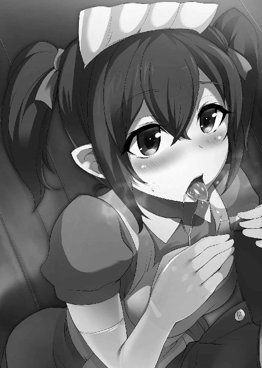

| 人食いダンジョンへようこそ！1 人食いダンジョンへようこそ！シリーズ (ビギニングノベルズ) | |
| 一年新 | |
| (2015) | |

※本作品の全部あるいは一部を無断で複製・転載・配信・送信したり、ホームページ上に転載することを禁止します。本作品の内容を無断で改変、改ざん等行うことも禁止します。また、有償・無償にかかわらず本作品を第三者に譲渡することはできません。
※本作品は電子書籍配信用に再編集しております。
目次
序章 人食いダンジョンへようこそ！
君は「地下迷宮の支配者」と聞いたら、どんな者を想像するだろう？
迷宮の奥に閉じこもり、魔界からモンスターを召喚しては世に解き放つ邪悪な魔王？
トラップの研究に余念がなく、邪悪な研究にいそしむ陰険な魔術師？
その想像は半分くらいは当たっていて、残り半分は当たっていない。なぜ僕がそれを答えられるかというと、今君と話している僕自身が、いわゆる地下迷宮の支配者だからだ。
もちろん、正義の味方ではない。教会や領主たちからは魔王のように扱われているけど、残念ながら僕には魔族の血は半分しか流れていないし、育ちはこの世界だから、魔界のルールなんて言われても何も知らない。
邪悪な行為は......まぁ、一部は否定できないけど、喜んでやっているかと言われると、ちょっと反論したい。僕だって好きこのんで、腐りかけのゾンビなんかを使いたくはないんだ。
だけど、あいつらは経費がかからないから、財政には非常に優しくてね......スケルトンも同様。ゴーレムも維持費がかからないし、うちにも少数いるんだけど、すぐに作れるわけじゃない。それなりに初期投資が必要なんだ。
僕には厳しくも有能な教育係がいてね。この手の「魔族のたしなみ」を習っている最中なのさ。
世間一般の人は、変な呪文を唱えたらすぐに魔物が湧いたり、火の玉が飛んでいったりすると思っているだろうけど、当然そうじゃない。なんにせよ時間や金や魔力がかかって、それは無尽蔵に湧き出すようなものではない。色々苦労はあるものなんだけど......
「ご主人様ーっ！ 鉱山村の地区が突破されましたっ！」
「ちょっと、どうするのよ!? 聖堂騎士なんて名前だけのお飾りだと思っていたけど、結構手ごわいじゃない!?」
......今部屋に飛び込んできた二人には、君も昨日会っているだろう。僕のメイドたちだよ。二人とも元冒険者だっただけあって、攻め込んできた連中の強さは大体実感できてるみたいだ。
元冒険者、ってところが気になったのかい？ ......「魔物のくせに」って？
この二人も、元は半年前くらいに僕の住処を荒らしにきた冒険者だったんだ。だから、メイドのしつけなんてできてないし、元は仲が悪くってねぇ......え、聞きたいのはそこじゃない？
なぜ魔物になっているのか気になるんだね。そりゃ簡単さ、僕が魔物にしたんだ。
うん、まぁ......予想がつくと思うけど、捕まえてから僕の精を与えて、ちょっと儀式をしてね。
「悪魔は人間を堕落させます」って教会で習わなかった？
僕は小さいころ、この村の教会で習ったよ？
僕だけじゃなくて、それなりに力の強い魔族だったら、結構できる奴は多いらしいよ。
もちろん、僕は本人の意思を無視して相手を魔族に堕とせるほど強くはないから......精神的に屈服させたりしてから精を注がないとダメなんだけどさ。
「あのときのご主人様、情熱的でしたぁ......」
「ば、馬鹿！ 何こんなときにそんな話してるのよ！」
うるさいな、今は僕がこの人に話をしてるから......こら、ズボンを下げようとしない！
え、あぁ、聖堂騎士か。うん、一筋縄じゃいかないし、全滅させても困るんだ。
なぜかというと......、あ、二人とも、そこの水盤を持ってきてくれるかな？
ありがとう......これで君にも見えるかな？
僕はもともと人間の中で暮らしていたんだけど、この血のおかげか、生まれつきちょっとした魔法が使えたんだ。わずかだけど、魔力付与の才能があってね......付与魔術師ってほどではなかったけど。
親が死んでからは、道具や武具に魔力を付与しては、傭兵や山師、行商人に売りつけて暮らしていたってわけさ。
生まれは違うけど、育ちはこの鉱山の村だよ。今では生きる屍と魔物の徘徊する危険な場所だけど、最初にこれをやったのは、僕じゃないんだけどなぁ......。まぁ、結果を利用させてもらったのは事実だけどね......っと、また話が脱線したね。
これは魔法の道具の一つで、遠見の水盤。たいした距離じゃないけど、遠くに設置した「目」となる物から見える風景がこの水盤に映るって道具なんだ。
今の僕の力だと、せいぜい鉱山の入り口とか、十分程度歩くくらいの場所までしか届かなくってさ。こんなとき以外は、玄関に来た客の顔を自分の部屋で見るくらいしか使ってないんだよ。
おや、顔色が変わったね......うん、君が拠点の中を調べてるのも全部見てたよ。僕の古馴染みの傭兵の紹介状を持ってくるまではよかったけど、その後がよくなかったね。あの人たちは僕が昔からこういうことができることはよく知ってるし、それを君に知らせないわけがないんだ......本当に信用していい相手なら、ね。
......正直、よくできた偽造だと思うよ。ちょっとよろしくないこともする旅の行商人、ってのは決して嘘じゃないだろうけど、本業は違うよね？
......身体がうまく動かないと思うけど、気にしないでいいよ。普通の毒や薬とは違う、身体の動きを鈍くする薬がゆっくり効き始めているころだから。商品として流通させるには、保管が難しいんだけど......その分知られてないから、君みたいに毒に耐性がありそうな子を相手にするときには重宝するよ。そう思わないかい、暗殺ギルドのお嬢さん？
利尿作用が強いから、漏らしちゃうかもしれないけど......まぁ、君は客人だから、それくらいの粗相は許すよ。
......あぁ、ちょうど映った。今、聖堂騎士とその配下の兵士たちが坑道の入り口を突破したみたいだ。とほほ、ストーンゴーレムを作るのに結構かかったんだけどなぁ......
うん、君もわかると思うけど、今回来ている兵士の構成はたいしてよいものではないんだ。
そこそこ腕が立つ傭兵と、明らかに錬度の低い民兵が混在してるのは、兵士たちの装備が統一されていないのを見ればわかるでしょ。領主や貴族たちの対立のあおりで、ろくな兵力もなく派兵させられたんだろうね。正直捨て駒みたいなものさ。
それで損害を減らしつつここまで来ているんだから、指揮官の能力は高いんだろうね。損害を出さないように気を使っているからこれだけのペースなんだろうけど、あの娘に兵士を使い潰す気があったらもっと怖い相手だろうね。
あぁ、気がついた？
そう。君が僕たちに拘束されている理由はそこ。僕はあの指揮官の娘を知っているんだよ。あっちは僕がここにいて、魔物の親玉やってるなんて知らないだろうけどさ。君たちは......おそらく、敵対する勢力の貴族に雇われていて、ここであの娘に死んでもらう予定なんだろうね。
ここに「取引ができるダンジョンマスター」がいることは、そっちの界隈なら知っている奴も多いだろうけど......政治的な暗殺の道具に僕が使われるようになったとはね......有名になるのも問題だ。まぁ、僕も殺される気はないから撃退はするんだけど。
君たちは彼女に生きていてもらっては困る。でも、僕はちょっと別の理由があって彼女を僕のものにしたい。そこにちょっとした違いがあるのが、悲しいすれ違いになったね、暗殺ギルドのお嬢さん。あぁ、震えなくていい。君がへまをしたからって、落ち込む必要はないよ。ギルドに戻ってドヤされる前に、君はここで死ぬか......堕ちるかだから。
おや、なんで怖がっているの？ 来る前に、このダンジョンのことを何度も聞かなかった？
この二人がここに来たのは、僕に情報を知らせるためだけじゃないんだ。君を僕が堕とすための下準備をしに来たんだ。
「お客様も、一緒にご主人様のものになりましょう！」
「あんたもヘマしたわね。あたしみたいな天才でもやられちゃったんだから、あきらめなさい」
まぁ、君が〝素直〟になるまで少し時間がかかるだろうから、それまでちょっと昔話でも聞かせてあげようか。あの娘がこの村に住んでいたころの話とか、君の先輩になるこの二人がどうやって堕ちたのか......とか。
泣かなくっていいんだよ、生き方が少し変わるだけさ。
僕だって、一年前まではこんなことになるなんて思ってもいなかったわけだし。人生は波乱万丈。誰にとっても、一寸先は闇だ。
......さぁ、哀れな犠牲者よ。人食いダンジョンへようこそ！
第一章 災禍呼ぶ血筋
母が事故で死んだその日、残された僕はちょうど成人として扱われる歳になった直後だった。
当時付き合っていた男と遠乗りにでかけ、酒に酔って愛人ともども崖から落ちたことが原因だった。かなり酔っていたようで、正直自分が死んだことに気づいたかどうかすら怪しい。
若いころは傭兵としてすごし、多くの魔族と戦い、英雄とも呼ばれたことがあったらしい人物の最期としてはあまりにもあっけなく、それでいて母らしい死に方だった。
当時のことは知らないが、酒と色事を愛し、人生を楽しむことをためらわなかった母のことだ。老いと病で緩やかに衰えていくよりも、案外本人としては本望だったのかもしれない。
僕が生まれて間もないころ、母は僕を抱えてこの山奥の村にやってきて、村はずれで酒場と宿屋を開業した。鉄の鉱脈があることが知られている以外は何もない、山奥にある小さな村だ。母は危険な動物やたまに出る魔物を倒すことのできる実力を持った戦士であり、なおかつ時には村の男を楽しませてくれる酒場女だったため、母の存命中は僕の変わった外見に関してもとやかく言われることは少なかった。
幼心に自分がマザコンになったようで不満だったが、影響も実際大きかったからあまり文句も言えない──人間ではない証の小さな角があるおかげで、僕は村の中で嫌われていたからだ。
母は若いころとある国の英雄の一人で、勇者の称号を受けて魔界に攻め込んだ軍勢の一員だったらしい。
それがどの程度の軍勢で、どんな地位にいたのかは知らないし、母がそれを語ることもなかった。ただ、その結果はわかっている。軍勢は壊滅し、母は魔族に捕らえられ、犯され、魔族の子供を身ごもった。それが僕だ。
魔族とのハーフなんて、教会権力の強い地域にいたらそれだけで火あぶりになりかねない。人間の世界の裏側にあるといわれる「魔界」がどこにあるのか、僕は知らないし興味もない。だが、母はそこから逃げ出し、僕を育てるためにこんな田舎にやってきた。
そんな生まれだったし、その外見のために村の子供からもつまはじきにされていて、友達はほぼいなかった。遊び相手は自然か書物か、母親の客でもある流れ者の傭兵たちが多かった。
傭兵たちはすねに傷持つ者も多く、僕が半魔族であることを気にする者もほとんどいなかった。今考えればそれなりに可愛がってもらったようで、呪い師の傭兵から魔法を習ったりもした......基礎を習っただけで、何かできたわけもないけれど。
そんな自分に唯一できた同年代の友達は、毎年夏にこの村にやってくる女の子ただ一人だけ。
光を浴びるとちょっと緑色にも見える、きれいな黒髪の女の子。彼女だけは、僕の角を怖がりも馬鹿にもしなかった。
彼女は夏にしかこの村にいないことから、やっぱり村の子供たちからは浮いていた。だから、彼女とは自然と仲良くなった。僕は夏が好きになった。
母親がこの村の出身だったことは聞いたけれど、父親のことは聞いたことがなかった。彼女は普段都会に住んでいて、大きな建物のことや、きれいな教会のこと、商品が山のように詰まれた大きな市場のことなどを教えてもらった。
その代わりに、僕は彼女に森の歩き方や獣道の見分け方、傭兵や流れ者が使う抜け道や虫の捕まえ方を教えた。宿の屋根裏部屋で、一緒に本を読んだりもした。
そんな楽しい夏は五年ほど続いたが、終わりはあっけないものだった。ある夏の終わり、彼女は泣きながら「もうこの村に来れなくなる」のだと告げて、それ以降この村に来ることはなかった。それが、僕にある唯一の友達の記憶だ。
彼女の母親が領主の屋敷に仕えていた侍女で、領主のお手つきになって生まれたのが彼女だった。領主の愛人として囲われていた母親が流行病で倒れ、「父親のわからない領主の姪」として都会に引き取られていったのだということを知ったのは、僕がもうちょっと成長してからだった。
母が死んでからは、稀にやってくる旅人や行商人、母の古いなじみの傭兵たちが来るときのみ営業する宿を住処としながら、一人で生きていく道を模索しなければいけなかった。
何せ、母が死んでからはなじみの客も減り、たまに来る傭兵や行商人のみの商売では利益はないも同然。加えて、母親がいるときは別だったが、僕は村の一員とは認められていなかった。
これは何も特別なことではない。古い村ではよそ者は嫌われるのは当然のことだ。母は実力で村人に認められていたし、衰える前に死んだからよかったかもしれないが、村の男と結婚するわけでもなく老いて動けなくなれば、やはり村からはじき出されることになったかもしれない。
それに、僕はただでさえこの角のおかげで嫌われていた。母親が残してくれた財産が少しあったので、つつましくすれば三～五年程度は暮らしていくことはできるだろうが、それ以降は何もない。嫌われ者が農夫になるのも無理だろう。
......皮肉なことに、僕の生活を守ったのは顔も名前も知らない父親の血だった。
世界には、少数ながらも魔法が実在していることは知られていて、魔法を使うだけでは教会が火あぶりにするようなことはない。こんな田舎では縁がないけれど、都市に行けば、魔法の術や知識をまとめ学習する「学院」という場所まであるらしい。
とはいえ、魔法は一定以上を個人の才能に依存する技術であり、魔法の才能がある人間なんて百人に一人もいない。枯れ草に火を放つだけの力でも、人間には使うことのできない力だ。魔法を使える人間なんていうのは、そのさらに一部でしかないのだ。
......ところが、魔族はその多くが多少なりとも魔法を使う。だからこそ、魔法は「魔族の使うもの」という偏見が根強く残っているのだ。
魔族との混血である僕には、ほんのわずかだが魔法の才能があった。この力を使って何かできないかと、なんとか村の共同墓地に葬ってもらうことのできた母の弔いからの帰り道に思いついた。
吟遊詩人の歌に出てくるように、火の玉を飛ばすとか、川を凍りつかせるとか、やり方もわからないまま色々と試してみたけれど、当然ながらまったくできなかった。燃えやすい枯れ草をたくさん用意して、何十分も念じて、へとへとになるころにようやく火がついた。これなら火打石を持ってきたほうが百倍早い。
結局、色々試した結果、僕にできたのは魔力......魔法の力を何かの物品に加えることだ。
石に魔力を加えると、その石が軽くなったり、ちょっと硬くなったりした。
うまく説明できないが、どういう風に変化させたいのかをうまいこと制御できるようになるまでに二年かかった。
独学でやっていたのだから、その辺が下手なのは勘弁してほしいが、この二年が長いのか短いのかは比べる対象がいないから判断できない。
それまで、何着の「見た目よりも重くて壊れやすい服」や何本の「何かを叩くとすぐ壊れる木の棒」を作ってしまったか、あまり思い出したくはない。練習に使った石や木の枝に至っては、たぶん小山が一つ埋まるくらいダメな結果を生み出した。
それでも、三年目には「見た目よりも少し軽い鎧」や「見た感じ短く見えるけど、少しだけ刃先が遠くに届く剣」を作ることができるようになった。
品目に物騒なものが多いのは、こんな商品の需要があるのはある程度金を持っていて、装備品に投資をできる傭兵や冒険者（と、それを扱う商人）くらいしかいないからだ。とにかく作るのには時間がかかるし、失敗することも多いのだ。
焦げ付きにくい鍋なども作れるようにはなったが、村人にはあまり歓迎されなかった。
傭兵たちに聞いたところ、こういう魔力によって強化された道具を作ることを魔力付与と呼ぶらしく、都会には学院で学んだ付与魔術師もいるのだそうだ。
理屈がわかれば、魔力付与が成功する確率も高くなることは経験的にわかってきたので、色々な書物を買ったり読んだりするようになり、色々と小便利な物を作れるようにはなった。
母は文字の読み書きだけは念入りに教えてくれていたので、このときは本当にそれが役立った。
本格的に学んだ付与魔術師には到底及ばないだろうけど、それでも、王侯貴族がこぞって依頼するような学院の魔法使いとは違い、こんな辺境の村に、それなりに安価に──都市にいるという、本職の付与魔術師の作るアイテムに比べれば破格の安さだろう──魔法の道具を作ることができる人材がいるのは、傭兵たちにはよほど便利だったのだろう。鍛冶屋とまではいかないが、簡単な武器防具の修理もできるようになっていたので、そちらでも便利に使われていたことは間違いないが。
母親がいた当時からの付き合いがある傭兵たちも、生き残った人たちはそれなりの立場にある者がいた。僕は傭兵や冒険者になったわけではないが、村の近所での仕事の際は同行させてもらい、武器や防具に関する実地での訓練も受けたし、どういう物が必要とされるのかの調査もした。
正直に言えば、僕には戦士としての才能はなかった。だが、最低限の戦闘訓練ができたのもいい経験にはなった。彼らと彼らの知り合いに顔を売り、試しに安価な商品を譲り、それを使って傭兵仲間に宣伝をしてもらったおかげで、細々ではあるが商売は軌道に乗ってきた。
付与魔術師なんて名乗るのはおこがましいが、僕は「山奥の宿の主人兼、魔法道具の商人」としての生活を始めていた。
あの女がやってきたのは、母が死んで三年が過ぎ去ろうとしていたその夏のことだ。
※ ※
「夜分、失礼します......この宿に、ウィスタリアのアムローザという人物はいますか？」
あまり来客の多くない夏の夜、普段は使われない宿の扉が開き、そんな声が聞こえてきた。
ややハスキーな声からすると、若い女。呼ばれた地名はわからないが、アムローザというのは死んだ母の名だ。こんな田舎の町とも村とも言えないところだが、傭兵たちのネットワークは案外広い。傭兵仲間だったならば、母が死んだことは知っているはずだ。
宿の入り口に仕掛けた監視用の魔法道具──小さなガラス玉から見える風景を映した水盤──には、フードを目深にかぶった修道女風の女が映っていた。周囲を確認するが、近場に隠れている仲間もいないようだ。
「どちら様ですか？」
工房と言うにはあまりに小さい作業場を後にして、宿の厨房へと入る。盗人ならば声はかけない、押し込み強盗ならばまず一人では来ない。
「あなた、アムローザの今の男？」
その女の第一声は、修道女風の外見からはかなり違和感があった。なおかつ唐突で無礼な話ではあるが、言葉を発した本人はそのことに一切の違和感も自覚もないようだ。
フードで顔はよく見えないが、少なくとも死んだ母よりはよほど若く見える。自分と同程度か少し年上程度だろうか。修道衣によく似た厚手の貫頭衣は、一見地味ながら高価な素材を使った物であることが予想でき、女のよく発育したボディラインを隠すことはできていない......というか、よりくっきりと見せている。正直、長旅に向いているとは思えない。
手に持っている荷物も少ないし、どこから来たのかはわからないが、衣服も靴もろくに汚れていない。つまり、警戒すべき相手だ。
とはいえ、まだ相手は客としての礼儀を崩してはいない。自分もそんなわけありの客をすべて断れるほど裕福ではない。まずは相手から情報を聞けるだけは聞いてみるしかないだろう。
「申し訳ありませんが、アムローザとはどのような関係でしょうか？」
自分の声は営業用としては及第点の声だったと思う。
「まぁ、昔の知り合いみたいなものよ。遠くから来て、疲れているの。早くアムローザを呼んで頂戴」
嫌な予感がひしひしと高まってくる。母が死んだことを知らず、外見が若い（おそらくはそれなり以上の容貌の）女が、お供も連れずにこんな田舎町に来るなんて常識的にありえない。作業用でもあるが、角を隠すためにかぶっている帽子の位置をなおす。
「アムローザは、三年前に事故でこの世を去りました。あなたはアムローザとはどのようなご関係で？」
親子ほどに歳が離れているように見えますが、という言葉は流石に口に出さなかった。
相手の反応を見て逃げるかごまかすか決めようと思っていたのだが、相手の反応は予想以上に激しかった。
「うそ!? あのアムローザが死ぬなんて信じられない！」
その拍子に、貫頭衣のフードがはずれて女の顔があらわになった。
肩まで伸びた、緩く波打つ薄い蜂蜜色の長い髪の毛。香を焚き込めているのか、わずかに甘い匂いのする肌。驚きに見開かれた目には、普段は伏し目がちなのだろう長いまつげと同じこげ茶色の瞳。清楚な神官のような顔をしているのだが、見ているだけで欲望をかき立てるような色気を発している。
自分の中の冷静な部分が「こいつはまともな相手ではない」と考えているが、そのときの思考の大半は「この女を押し倒してその肉体を思うがままにしたい」という衝動に占められていた。
その衝動に耐えていられたのは、おそらく相手に襲わせる気がなかったことと、僕に多少なりとも魔術の知識などがあって、自分の精神を律する方法をかじっていたこと。そして、このとき僕はまだ童貞で、何をすればいいのかわからず戸惑っていたことが影響していたのだろう。
僕の股間は、意識する前に既に期待に満ち溢れていた。そんな状態の僕が冷静さを取り戻そうとするより先に、女はもう冷静ではなくなっていた。
「なんで、なんでそんな簡単にくたばるのよあの女！ あたしの予定が一気に狂ったじゃない！」
強気に振舞おうとしているのか口汚い言葉を吐き出しているが、女が動揺しているのは自分にすら見て取れた。
この女は焦っている。なぜだ？
「あなたは誰で、母とはどんな関係だったんですか？」
この言葉を発してしまったとき、自分のうかつさに激しく後悔した。
しかし、自分が何か取り繕う言葉を探すより早く、女が動いた。突然飛び込んできて、自分に抱きついてきたのだ。
襲われるかもしれないと思っていたが、まさか全体重を乗せて抱きつかれるとは思っていなかった。名前も知らない女と自分は抱き合う形で宿の床に倒れこんだ。
※ ※
「あなた、アムローザの子供なの？」
自分に馬乗りになり、女が言葉を発した。
気のせいか、女の姿が二重写しになり、髪や瞳の色が赤く見えた。
「あなた、確かに見てみればアムローザと同じ肌と髪の色ね。その瞳の色はあのお方譲りかしら......ねぇ、その帽子を取ってくださらない？」
女は自分が一体どういう体勢になっているのかを気にしてもいないように、目をきらきらさせて問いかけてくる。瞳の色は既に赤くなっている。ようやく、この女が幻覚の魔法で髪や肌の色を変え、変装していたことを理解した。
「ということは、魔族......？」
自分の言葉には、おそらくはっきりとわかるほどの恐怖が含まれていたと思う。
それでも、恐慌状態にならずに済んだのは、ありていに言えばこの女魔族がまるで子供のようにはしゃいでいたからだ。
帽子を取って角を確認すると、女はまるで宝物を見つけたかのように小さく歓声を上げた。
「やっぱり！ あなたはアムローザとあのお方の忘れ形見なのね！ よかった、ここに来て本当によかった......！」
そのころになって、ようやく多少の冷静さが戻ってきていた。
それでも僕の胸には女の柔らかい胸が乗っかっており、腰に相手の太ももや股間が密着した状態なのだ、完全に冷静でいることは難しい。
「つまり、あなたは魔族......ということですか？」
「ええ、あなたを探していたの。詳しいことはあとで話すとして......」
女の指が、自分の胸をなぞるように触る。気がつけば衣服の前半分は剥ぎ取られており、女の手は胸板をくだり、ズボンの腰紐を片手で器用に解いていた。
「せっかく会えたんですもの。せっかく、あなたがあたしを欲しがってくれているんですもの」
生殺し状態だったペニスが空気に触れ、衣服による押さえがなくなったために空中にそそり立つ。同年代の村の男たちと比べたこともないが、人並み程度のサイズ......だと思う。
女の指が優しく絡みつくと、我慢できずについ声が漏れてしまう。なんとなく恥ずかしい。
女は気をよくしたのか、ゆっくりと指を上下させながら上半身を起こし、僕のペニスに顔を近づける。
「まずは、あなたの精を私に注いでくださいませ......私のご主人様」
その口調は、先ほどまでの蓮っ葉なものとは違い、修道女と言ってもおかしくはない丁寧なものだった。ただし、その言葉の内容はまともではなく。その言葉が終わるとすぐに、ペニスの先端は温かい粘膜に包まれた。
実際にはそんな大きな音はしなかったのだろうけれど、じゅぷりと音がしたように感じた。
彼女の唇に飲み込まれた、その事実に頭の中が真っ白になる。
冷たい外気に触れたペニスが粘膜に包まれると、一気に全身の温度が上がったように感じて、思わず声を上げてしまう。
温かい口腔の中で、細く長い女の舌がペニスに絡みつくように丁寧に舐め回す。それが終わると、まるで猫がミルクを舐めるように、音を立てて外周部をゆっくりとしゃぶっていく。時折、舌先を竿に残したまま、肉厚の唇が付け根や玉袋をほおばり、唾液まみれにしていく。
混乱と快感に腰が跳ねる。思考は乱れ、腰を押し付けたいという欲求で頭の中がいっぱいになる。直接亀頭と竿に与えられる暴力的な快感と、側面から与えられる柔らかい快感に流され、腰に熱いものが集まる。射精感が高まる。
それなのに、達する寸前に唇が離され、もどかしい状態のまま待たされる。
しなやかな女の両腕は、逃がす気がないとでも言うように自分の腰に回されている。横向きになってはいるが、女が自分の腰に抱きつき、顔を股間に埋めているのだ。これでは、自分で動かすこともできない。
時折、女は上目遣いにこちらの様子を窺うが、そんなことに気がつけるほど自分は経験豊富ではない。彼女の思うがままに快感を与えられ、寸止めになっては切なげに腰を押し付けることしかできない。
「ご主人様、女を抱いたことはございませんか？」
顔を上げ、鈴口を舌先でチロチロといじりながら女が聞いてくる。
「こんな......田舎町でっ、こんな混じりものが、どうしろって......言うんですかっ......」
性欲がないわけではない。けれど、この田舎町では商売女自体が稀であり、商売としてその需要を満たせるのは自分の母だけだった。最初っからその選択肢はなかった。
母が死んでからは、鉱山の開発を進める男たちは時折連れ立って近隣の街に女を買いに行っていたようだが、そこに自分の入る席はない。
農夫たちでそもそもそんな余裕がある者は稀だ。自分の妻がいない者は、自分と同様に満たされぬ欲望を抱えて生きていくのだろう。
村には親が死んで孤児になったり、夫に先立たれて生活力を失った女を村全体の所有物として囲う風習があるが、やはり村の一員ではない自分にはその機会もない。たとえその相手から好意を向けられていたとしても、魔族の血を引く自分が抱いてしまえば自分にも相手にも不幸しか待っていない。
だから、半ばあきらめていた。いつか金がたまって、この村を出てどこかの都市で商売を始められるようになるまではと、あきらめるよう自分に言い聞かせていたのだ。
「うふふ......我慢なんか、しなくていいんです。あなたはもっと欲深く、強くなってもらわなくてはいけないんですから。こんな村滅ぼして、すべての女を犯して殺してしまってもいいのです」
ペニスをいじられながら、そのようなささやきを受けるとは思ってもいなかった。
女は既に貫頭衣を剥ぎ取り、豊満な肉体と、背中に生えた小さな翼と、尻から生えた小さな尻尾をむき出しにして、自分の股間に跨ってきた。かすかに、鼻の奥に甘い香りが漂う。
自分のペニスは既に発射寸前のところで焦らされており、自分の目線はかすかに湯気を上げる女の股間に釘付けになっている。
「それは、一体......？」
問いかけることができたのが、自分の最後の理性だった。
「あなたは魔界に強大な勢力を持つ諸侯の一人、〝調律者〟スタルトの血を引くお方......。人間の世界の理屈など無視して、魔界のルールで領土を奪い、支配するのがふさわしいのです。私はアスタルテ。あなた様にお仕えし、あなた様をその血筋にふさわしい魔人へと教育するのが私の務め......」
それだけ言うと、アスタルテと名乗った女は上体を倒し、自分に身体を重ねゆっくり唇を重ねてきた。
唇から彼女の細い舌が侵入し、僕の舌を引っ張るように絡みつく。自分とは別の体温を感じる。
唾液を吸い取られ、戻される。呼気の匂いさえも甘い。
「あなた様はこれから、多くの女を犯し、命を奪い、この世界を蹂躙し、支配していくのです。では、まず手始めに......私を支配し、蹂躙してくださいませ」
アスタルテのしなやかな指に導かれて、自分のペニスがアスタルテの秘所に差し込まれていく。
「う......うわぁっ......！」
思わず、声が漏れた。
圧倒的な舌技で射精寸前の状態で焦らされていたペニスは、一気に膣内に導かれたその瞬間に射精し、大量の精子を注ぎ込んだ。
圧倒される快感の中、意識が真っ白になるような射精感に精神が押し流されそうになる。
思考が止まる。ただ、このままこの女の......アスタルテの体の奥底に、自分の精を叩き込みたいという、快感を求める思考だけに頭が占拠される。
すべての精子を出し切った後、アスタルテはこころなしかふくらんだ自分の腹部をなでると、愛おしげに微笑んだ。
「うふふ、こんなに温かくて、いっぱい......。ご主人様、これから私はあなた様の僕として、教育係としてお側に仕えさせていただきます。まずは、ご主人様のお名前をお教えくださいませ......」
「な、名前......。エリオット......だけど」
アスタルテの顔は、邪悪な魔族とは信じられないような真摯さと、それでいて信用していいかはわからない淫らさを同時に浮かべ、微笑んだ。
「エリオット様、私のご主人様。アスタルテがこれからあなた様を王へと導きます......」
それは、僕に向けてではなく、自分自身に言っているのかもしれなかった。
とはいえ、そのときの僕にそんなことを考える余裕があるわけもなく、再び腹の奥底にたまりだした精を発射したくて、腰をムズムズと動かしていた。
「あの、アスタルテ......っていったっけ。その......」
言葉を終える前に、膣内に残されたペニスが衰えていないことがわかったのだろう。アスタルテはペニスが抜けないように器用に回転し、尻の双丘を突き出す。矢じりのような尻尾が、ペニスに絡みつき、内部へといざなうようにしごきたてる。
「ええ、エリオット様。まだまだ夜は長いんですから。もっともっと、あなたの欲望をぶつけてくださいませ......」
僕の腰の上に、アスタルテのきれいな尻が乗る。
あまり重くもない体重が心地よい重みとしてのしかかり、熱の冷めることのない彼女の体内に僕自身は飲み込まれたままだ。
じわじわと快感が包み込んでくるが、アスタルテは動かない。腰がムズムズと動くものの、先ほどのように自分で腰を振ることはなく、時々腰を悩ましげにくねらせるのみ。
尻から腰にかけて、骨を覆うように柔らかい肉が覆っているのが見えるようだ。尻が少し動くと、腰骨が動き、それに合わせてつややかな肌が動く。
汗の臭いが漂う。接合部からも、精液と愛液の混じり合った匂いが漂ってくるように思える。
「あの、アスタルテ......」
これだけでも十分に気持ちはいいのだけれど、もっと強い刺激が欲しい。アスタルテに言葉をかけると、彼女は背中越しに振り返りにっこりと笑う。
「あら、どうされました？ 私に遠慮をする必要はありませんから、お好きに動いてくださいませ......そう、無理やりにでも、あなたが気持ちよくなるために」
挑発的なその言葉は、僕を操ろうとしているのだと判断できた。それでも、理性は感情に......いや、快楽に負けている。
もっと動きたい、もっと突き刺したい。上半身を起こし、背後からアスタルテの胴に手を回す。手が彼女の大きな乳房に触れ、一瞬どうしようかためらうが、構うものかと抱きつく。
「あははっ、そうです。その積極性が欲しかったんです。さぁ、エリオット様、私のご主人様、次はどうなさいますか？」
振り向いた彼女の顔は、欲情に濡れているもののまだ冷静なようだった。腰を軽く振る。胸を突き出すようにして、僕の手の甲に手を合わせてくる。誘っている、いや、誘導している。
「......なるほど、これも君の教育、か」
腰の上にアスタルテが乗ったままでは、まともに身動きは取れない。つまり......
体をひねるようにして、アスタルテの体ごと横に倒れる。きゃっと軽い声を上げて、アスタルテが脚を動かし、僕の体の横に降りる。僕を包み込む柔らかい膣内から外に出るのは少しもったいなかったが、こうしないと次に進めない。
立ち上がり、膝立ちになろうとしていたアスタルテの尻をつかみ、引き寄せる。ひときわ強く、彼女の膣から甘い匂いがするように感じた。
「あん。さぁ、どうなさるのですか？」
そう問いかけるが、彼女の尻尾は既に僕のペニスに絡みついて、引っ張っている。
「アスタルテ、尻尾はもう答えを教えてくれているよ？」
「......あら、そうでしたわね。他の場所がお好みでしたら、それでもかまいませ......あん♪」
答える途中に、我慢できず後ろから彼女に挿入する。中腰の姿勢だが、そんなことに構っていられるほど僕には余裕がなかった。
一気に突き込み、ゆっくりと引き抜く。抜け落ちる直前までいったら、さらに突く。技量も何もない、獣のような出し入れの繰り返しだけで気が遠くなるほど気持ちがよい。とろりとした愛液がかき出され、床に染みを作る。
経験値でかなうわけもない。ならば、がむしゃらにむさぼるしかない。アスタルテの思惑はわからないけれど、今の僕にはそこに考えが至るわけもなく。
「はぁっ......はぁ、はぁ......うっ」
気を抜けば、すぐにも射精しそうになるのを、力を入れて抑える。
「あら、我慢しなくてもいいのに......ほら、胸もお使いくださいませ」
そう言うと、アスタルテはわずかに上半身を持ち上げて、両手を床につく。床に押しつぶされていた胸が持ち上がり、大きく揺れるのが背後からでも見て取れた。
「くそっ......そんなこと言われても......」
両手をアスタルテの尻から離し、さらにのしかかるようにして背後から胸をわしづかみにする。力加減もわからないから、なでたりさすったりして、だんだんと力を強くしていく。柔らかい。幼いころには母親の乳を吸っていたはずだが、感触まで覚えているわけではないから、乳房がこんなにも柔らかいものなのだと初めて実感した。
「もっと、強く......乳首を、押しつぶすようにしてもかまいません。経験のない娘なら話は別ですが......今は、どうすればあなたが気持ちよくなるかだけを考えて......」
そんなことを言われても、これ以上どうすればいいのかなんて見当もつかない。ただ無茶苦茶に腰を振って、胸をもんで、背中に、首筋に唇を当てて吸いつく。わずかに、汗の味がした。
自分の体は、もう既にそれなりの汗をかいてしまっている。アスタルテも汗をかくのだとわかって、少しだけ安心する。その瞬間、張り詰めていた我慢が限界に達し、背後から押し付けるようにしたまま、アスタルテの膣の奥に射精してしまう。
「あ......あつい......まだ、こんなに出る......」
嬉しそうに、アスタルテが声を上げる。その声はまだ余裕があるようで、自分ばかりが絶頂に達していることをなんとなく自覚させられる。なんとかして、相手も気持ちよくさせてやりたいとちょっとした負けん気が頭をもたげるが、まだどうにもその手段がない。
力が抜け、アスタルテの背中に体重をかけて倒れこむような形になってしまう。いくらなんでも、手をついて体を支えている女性の体に乗っかったままというのは少し恰好がつかないような気がして、まだだるい体を動かして横に腰を下ろす。
「......まずは、女の体がどういうものか、どう使うものかを大まかにはご理解いただけましたか？」
立ち上がったアスタルテが、胡坐をかいて座った僕の前にやってくる。
ちょうど、目線の位置に彼女の股が位置するため、そこから脚に垂れる白濁した液体が見える。自分が吐き出した体液なのに、彼女の脚を汚すそれはまるで自分のものではないようで、つい見つめてしまい、気恥ずかしくなって目をそらす。
今度は胡坐をかいた僕の脚に跨って、アスタルテが体をすり寄せてくる。太ももに擦り付けられる陰部の熱が伝わる。上半身を傾け、僕の胸に体を預けて耳元でささやく。
「初心なのも魅力的ですけれど、あなたにはもっと多くの女を抱いてもらわなければいけません。魅了して、快楽に堕として......だから、もっと強欲におなりくださいませ」
耳に息を吹きかけられる。舌が音を立てて、耳たぶを、首筋を伝わっていく。両手は軽く肩に置かれ、乳房を押し当てたり、わずかに離したりを繰り返す。まるで、猫が毛づくろいをするような愛撫に、射精後で萎えていたはずのペニスがむくむくと欲望を取り戻す。
「ふふ、やっぱりお若いですね。もうこんなに......」
そう言って、目線を僕の股間に移すアスタルテ。目線がそれたそのとき、腕を回して腰を抱えるように抱き寄せる。少し驚いたように、アスタルテがこっちを見る。
唇を奪う。知識の上では知っているし、さっきもつながった状態で何度も口づけは交わしたが、僕のほうから意図して奪うのは初めてだ。とはいえ、細かい位置の調整などは僕一人でできるわけもなく、アスタルテの協力があって初めてできたようなものだろう。もう片方の手で頭を押さえるとかすればよかったと思ったが、いささか遅かった。
唇を重ね、今度は自分のほうから舌を差し込み、アスタルテの口の中を探索する。すぐにアスタルテの舌が迎えに来て、しばらくの間舌を絡め合ってすごした。お互いの呼吸が口の中を通りぬけ、鼻腔を刺激する。
腰の位置を少しずつずらして、アスタルテが脚の上から腰の上に移動しようとしている。両手をいったん離し、抱き合ったままアスタルテの尻を持ち上げて、自分の真正面に向き合うように座らせる。屹立した僕のペニスがアスタルテの下腹部に押し付けられる。アスタルテの両腕が僕の背中と後頭部に回され、密着するように強く抱きついてきた。
「積極性を持たれるのは......んぷ......よい、傾向です......」
言われるまでもない。それに、もう我慢ができない。腰の位置をずらし、強い力でもう一度アスタルテの尻をつかみ、持ち上げる。何がしたいのかは彼女にも伝わったのか、こちらに合わせて腰の位置を調整する。僕の先端が入り口近辺に擦り付けられるのだが、お互い唇を重ねたままなのでうまく位置が合わせられない......入った！
にゅぷ、と小さな音がしたような気がした。再び、最初のときと似た角度で僕はアスタルテの膣に入り込む。小さく、それでも確実にアスタルテの背中が反り、重ね合わせた唇から甘い声が漏れる。
「教えてほしいんだ。君を気持ちよくする方法を。君を蕩けさせて、多くの女を堕とすためのやり方を」
そう告げて、首筋に強く唇を押し付ける。まだとてもかなわないけれど、いつかこの女を僕のものにするために、せめて少しでも印をつけておきたくて。
「......ええ、お教えします。このアスタルテが、あなたを王へと導きますから......だから、私もよくなってきたから......もう一度、奥に！ あなた様の精を注いでっ......！」
言葉を遮るように、もう一度唇を奪う。尻を強くつかみ腰に押し付けると、アスタルテも僕の背中に強く抱きつく。そのまま、どれくらいの時間が経ったのだろう。ほんの数十秒か、あるいは何分も経ったのか。絡み合い、唇を吸い合い、汗にまみれたまま、突然限界が訪れた。
「うあっ!?」
「ああっ......出てる、まだ、こんなにたくさん......エリオット様の、精液......」
腰が跳ねる、アスタルテの体も大きく震える。数秒間の絶頂の後、お互いに力が抜けてしまい、僕は背中を倒し、床にあおむけに寝そべる。アスタルテは僕の胸にもたれかかるように体を倒し、つながったまま僕の上で荒い息を吐いている。
暗い部屋の中、目が慣れてきたのか、見慣れた天井を見上げる。
体にのしかかる、アスタルテのわずかな重みが心地よかった。
※ ※
「はぁっ......あっ......！」
全身から湯気を上げながら、アスタルテが僕の身体に自分の身を預けてくる。
自分が彼女の膣内に精を放ったのはもうそろそろ十回近くなるが、ようやく彼女に満足を与えられたのだろうか......そんな思考ができるほど、ようやく冷静になってきたともいえる。
正直、何をどうしていたのかあまり記憶がない。
ただひたすらに、唇を合わせ、舌を絡め、蕩けるような肉壷にペニスを突き込むことだけに精一杯だったのだ。
猿のように、という言葉がぴったり当てはまる形で、僕は女の身体に溺れた。気がつけば、冷たい土間の床で何時間も絡み合ったまま、朝を迎えてしまった。
夜明けの時間帯特有の冷えた空気が流れ込み、そろそろ寒い。このままではお互い風邪を引いてしまうかもしれない。......汗くらいは流したほうがいいかもしれない。
今の時期は客がいないから助かったが、本来であれば客を迎え入れる土間が精臭であふれかえっている。さて......
「ぅん......エリオット様、まだお元気......」
復帰したアスタルテが膝立ちになって、背後から自分の腰に手を絡めてくる。背中と尻の中間あたりに吐息がかかってくすぐったい。
彼女の指は再び自分のペニスをもてあそび、再戦を挑ませようとしている。
「流石にもう無理だよ。それに、客が来るかもしれない時間帯だ。この部屋を掃除しないと」
「あら、では部屋を変えればいいのですね？」
からかうように言うものの、状況はわかっているのだろう。
振り返ると、既に幻術をかけなおしたのか、アスタルテの外見は昨日見た修道女風の衣服に変わっている......身体を洗ったわけではないので、むせ返るような精臭は隠せていないのだが。
「では、いったん部屋をお借りしますね......あら、誰か来たようですね」
※ ※
「......エリオットさん、起きてますか？」
ドアの前で声がする。声には聞き覚えがある。
農民たちは既に起きているが、鉱山の男たちはまだ寝ている時間で、自分も普段はぎりぎり寝ている程度の時間だ。この時間の来客は珍しいが、来た人物が誰かはわかる。
村の農夫の娘ダリア。成人してはいても、自分とは少し世代が違うため、子供のときに一緒に遊んだり嫌われたという経験はない。
村の中ですれ違ったり会ったりする程度のことはあっただろうが、彼女たちが村の子供たちのグループに加わるころには、僕はもう村の子供たちの中では孤立していた。
自分に対して表立って敵意を向けない数少ない村人であり......半年前に唯一の家族であった父親が死に、「村人」から「村の共有財産」になった娘だ。
そのため、村人が嫌う僕のところに、食料やその他の産物を届けてくれる（もちろん、対価は払っている）役目を負うことになったかわいそうな娘と言うべきか。
今は村長の家で世話になっているらしいが、そのうち......あるいは既に若い男の精処理の役目を負っているのだろう。
容姿に派手なところはないが、村娘としては器量も悪くはないし、そのうちに誰かが嫁にするのだろう。それが幸いなのか、不幸なのか、僕にはわからないが。
彼女とまともな面識を持ったのは（やはり僕を嫌っていた）彼女の父親が死んで以降のことなのだ。決められた時間以外にここに来ることはない、彼女も村に居場所がないのか、ここに食料品などを置いた後に多少世間話をすることくらいはあった。
何はともあれ、扉の向こうに彼女以外の何者かがいないかだけはチェックする。これは習性みたいなものだ。
「......ダリア、どうしたんだい、こんな早く」
特に異常がないことを確認してからドアを開く。荷物も持っていない。おそらくは水汲みに向かう途中に道をそれてこっちに来たのだろう。
小柄で気の小さそうな少女は、薄い茶色の髪をうなじで軽く結わえ、背中の途中まで伸ばしている。濃い茶色の瞳には、戸惑いと後悔が見える。何か隠し事をしているか、懺悔に来たかのようだ。
「......まぁ、入りなよ。お茶くらいは出そう」
土間に招き入れてから、激しく後悔した。先ほどまでの精臭が抜けきっておらず、栗の花のような臭いがする。あっちもこの臭いが何かわからないような歳でも立場でもないだろう。なんとも言えずに気まずい。
「あら、ご主人。新しいお客様ですか？」
白々しくも、アスタルテが声をかける。ダリアが驚いたようにその姿を見ているが、彼女に幻術は見破れないだろう。
......臭いで別のことはわかる気がするけれど。
「あ、あの......。エリオットさん。お伝えしないと......」
お茶を淹れるために、かまどに火を入れ、湯を沸かし始めた時点で彼女はようやく口を開いた。
「うん、こんなに早く来るからには、何か話があるんだとは思ったよ。何か、困ったことでもあったのかい？......僕にできることは、そう多くないけれど」
言っていて情けないが、村の部外者である自分にできることは極めて少ない。
彼女は少しうつむくと、こう言った。
「できるだけ早く、この村から逃げてください......。村長さんは、傭兵を雇ってあなたを殺すつもりなんです」
※ ※
ダリアの話を要約するとこうだ。
鉱山の開発の話が進み、今後は本格的に人も金も流れ込んでくる。そうなると、宿や酒場などの需要も増すし、村の発展も見込める。しかし、鉱山への道の途中にはこの宿があり、現在既に小規模ながら商いは続いている。
母の存命中に教会の発行した権利やら何やらで、僕が生きている間は（自主的に宿をたたまない限り）新しく宿の開設も難しいし、そもそもこの宿のある辺りを切り開いて村を広げるため、昔から住んでいる自分が邪魔だ。
ならば、傭兵を呼んで山の危険な動物を退治するときに、まとめて殺害し、事故死として処理してしまえばいい。
それに、あの宿には死んだお女将がため込んでいたお宝や魔法の道具があるらしいから、（形式上は村人である）僕が死ねば、それは村の財産になる。
「......はぁ、母さんの財産なんて金か宝石程度で、それも僕一人が数年生活できるくらいしかなかったから、半分も残っちゃいないのに」
「......村長さんたちは、そのことはわかっていないみたいです。でも、もう決まったことだからって」
泣きだすのをこらえているようだ。自分が悪いわけでもないのに、罪悪感でも持ってしまっているのだろうか？
それにしても、嫌われ者の僕なんかによく教えてくれたものだ。
「......ご主人、もう村人に遠慮する必要はないのでは？」
アスタルテが言葉を選びながら、剣呑な提案をしてくる。
実際のところ彼女の言葉は大体正しい。相手がそこまでするつもりならば、こちらとしても黙って殺されるわけにはいかない。
とはいえ、この美しくも恐ろしい魔族に頼めば村を壊滅させるくらいやりそうにも思えるが、自分自身にそんな力はないし、気分的にもあまり嬉しくはない。
それに、ダリアの前でそういう話をするのも嬉しくはない。その辺、気を使って言葉を選んでくれているのだろう。
「あの......修道女様ですか？ エリオットさんとは、どのような？」
話の矛先はそれる。まぁ、あの臭いとこの状況を考えると、この修道女が怪しいのは明らかだろう。
「小さいころに、エリオットさんのお母様に大変お世話になって......亡くなったと聞いて、ご挨拶に来たんです」
半分以上嘘だろうが、とは思いつつも黙っている。その言葉をどう受け取ったのかわからないが、少し考えた後にアスタルテに話しかける。
「であれば......エリオットさんと一緒に、逃げてください。傭兵が来るのはおそらく今日か明日くらい......。一緒にいると巻き込まれるかも」
......それは確かに考えていなかった。
アスタルテは魔族だ。襲われたらやり返すことは想像に難くない。
自衛はすべきだが、虐殺になるのは避けたい。そもそも、戦闘能力はどの程度あるのだろうか？
「......ダリアさんでしたっけ。あなた、なんでここに？ その話をエリオットさんにしたら、あなたの村での立場は危なくなるのではなくって？」
その言葉に、そういえばそうだと気がつく。彼女には、この情報を僕に伝えて得することなど何もない。
「その......」
困ったように僕のほうを見て、言葉に詰まる。心なしか、頬が赤いように見えたのは気のせいだろうか。......もしかして。いや、それはないだろう、いくらなんでも。
「あなた、エリオットさんのことが好きなのね？」
アスタルテが切り込む。しかも断定。それはないだろうと思ってはいたが、彼女は顔を赤らめて、目をそむける。
「ダリア......そう、なの？」
我ながら間抜けな質問だ。
半分泣きそうな顔つきで、小さく頷く。
「あ......村のみんなからは、ひどいことばかり聞いてたけど、実際に会ったらいい人だったし......お父さんが死んでから、みんなわたしに対する扱いが変わったけど、エリオットさんだけはいつも通りに接してくれたから......」
......それはそうだ。僕にとってダリアは会う前は「名前しか知らない他人」で、父親が死んでから時々会うようになっても「村の内側にいる、立場の弱い他人」でしかなかった。
嫌っていたわけでもないし、どちらかといえば不幸な立場の彼女を自分の立場に重ねて、村人に比べれば好意的に見ていたことは確かだろう。
彼女に嫌われても生活に支障が出るから、愛想よくすることは心がけていたし、嫌っているわけではないからそれはたやすいことだった。
それでも、半年前に家族を失い、庇護を失って「村人」から「村の所有物」にされたばかりの娘には、僕の姿はまぶしく映っていたのかもしれない。たとえ、それが現状からの逃避にすぎなかったとしても。
──異性から好意の視線を受けることに、あまりにも不慣れだったためだろうか。それとも、僕がこの子をまともに見ようとしていなかっただけだろうか。
どちらにしても、それは本来お互いを不幸にしかしない選択肢だっただろう。
「エリオットさん、どうせならその子を抱いておしまいなさいな。どちらにせよ、この村にはもういられないでしょうし」
アスタルテの言葉は無茶苦茶だが、後半は正論だ。しかし、今すぐに逃げるのは無理だ。どこかに移住するにしても、財産がなければ生きていくことはできないし、この辺鄙な鉱山村から近隣の街までは馬車でも半日、徒歩では数日かかる。
村人の捜索範囲から逃れることを考えれば、人の出入りのある一番近い街ではダメだ。せめてその先にある大きな都市......水門都市と呼ばれる、この国でも何番目かに大きな都市まで逃げる必要があるだろう。
そこまで行けば、多くの人の中にまぎれることは容易なはずだ。
「......この村から逃げないといけないことはわかった。ただ、今すぐには無理だ。今後のことを考えると、無理しても今日一日は準備に費やさないと厳しい。明日の朝早く、夜明けの鐘がなる前には村を出よう」
口に出せば、決意も固まる。
もう一つ、思いついたことがあった。
「ダリア。......君も来るかい？」
好意からだけで言ったわけでは、残念ながら、ない。
彼女は自分に異性として好意を寄せてくれているし、わざわざ自分にこのことを教えてくれた。自分としては、村人の中では唯一好意を持てる相手ではあるが、女性として、恋愛や性の対象として意識したのはついさっきからだ。それでも、利害は一致する。
彼女には庇護者がおらず、自分にはよその都市に移住したときの窓口となったり、社会的な身分を得るための相手がいない。
このご時勢、戦乱で難民となる人は少なくない。どこか遠くの都市に逃げて、夫婦として暮らすこともできるだろう。アスタルテには悪いが、そんな選択肢もある......
「......っ!? いいんですか、わたしなんか......」
彼女の目じりに涙が浮かぶ。自分の好意が受け止められるとは思っていなかったのかもしれない。まぁ、傍目に見てもアスタルテは美人だし、彼女と寝たことは部屋の臭いでばれているだろうから、そういう関係だと思われているだろう。
「ダリア、これは、善意とか、好意だけの問題じゃないんだよ。僕が逃亡先で生活するときに、君が一緒にいればある程度有利になると考えたからだ。......それに、君に心変わりされて、告げ口をされても困るしね」
なんとなく、正面から顔を見るのが気恥ずかしい。
照れ隠しに、計算のことをあえて口にした。
「......ありがとう、エリオットさん。わたし、戻りますね。あまり遅くなると疑われちゃうから......。夜明け前には、必ずここに来ます......」
ぺこりと頭を下げると、少女は小走りに森の中を村に向けて去っていった。
あの子が嬉しそうに笑ったのを見たのは、初めてかもしれない。
※ ※
「......いいんですか、今抱いてしまえばあの娘は逃げられなくなったのに」
アスタルテが少しだけ不満げに言う。今すぐにダリアを抱かせたかったらしい。
「なんで、そんなに女を抱かせたがるんだい？」
「それは簡単なこと。あなたは女を抱いて、精と心を奪えば奪うほど......魔族としての力に覚醒していくからですわ」
......それはどういうことだ？
「意外そうな顔しないでください、エリオット様。さっき言ったでしょう？ 『あなた様を王へと導きます』と。まずは、並の人間ごときに倒されるようではいけませんので、手早く戦うための魔力と、下僕を作ることを覚えていただきませんと......」
ちょっと待ってほしい、ダリアを抱くことと魔力を得ることの関連性がわからない。
率直にそのことを伝えると、軽いため息と共にこんな返事が返ってきた。
「手っ取り早く説明しますと、あなたのお父上はいわゆる魔族の中でも夜魔、その中の淫魔といわれる類の魔族でした。異性を淫らに誘惑し、堕落させ、そのときに相手の心を支配する......時には気に入った相手を魔族に変えて、そばに仕えさせる。その血筋が、力がエリオット様にも受け継がれておられるはずです」
......つまり、女を抱くことで魔力が増え、いずれは女を抱くことでその相手を支配できる？ 無茶苦茶だ。
「エリオット様は、魔法の才能をお持ちではありませんか？ ......心当たりがあるようですね。その魔法の力は、もしかすると付与魔術に近いものでは？」
......図星だ。返す言葉もないが、どうやら表情ですべて理解したらしい。
「その力こそが、証明。既に自ら才能を開花させているのは、大変すばらしいことです。自分の魔力を自分以外の相手に付与することは、あなたのお父上が持つ特殊な力でした。並の淫魔にはないその才能こそが、あなたのお父上を魔界の実力者にしたのです。......物質に魔力を与えるように、生き物に魔力を植え付けることで魔物への変化を促進し、己の望む姿へと変えていく。それこそが〝調律者〟の血筋の証」
......無茶な話だが、一応の筋は通る。
魔法の理論などはかじっただけで、詳しいわけではないが、物質に魔力を付与するように、生き物に魔力を付与することは不可能ではない。それでも、自分が知識の上で知っているのは、一時的に身体能力を上げたりする程度のものだ。
精神を堕落させ、屈服させて支配下に置く。これはわかりやすい。魔力なんかなくても、権力と暴力があれば、他人を屈服させ支配することは容易なのだから。それでも......人が魔物になるなど、ありえるのだろうか？
「ええ、ありえるのです。エリオット様。その証拠は、あなたの目の前におりますので。......わたしがなぜあなたの母親を知っていたのか、不思議ではありませんか？」
アスタルテが近づいてきて、椅子に座った自分の後ろに回る。後ろからゆっくりと抱きつき、耳元に口を近づけてきて、ささやく。
......今の話を聞いて、予想はできていた。なぜ母を知っているのか、母を訪ねてきたのか。
「私はあなたのお父上によって、人間から魔物へ......淫魔へと変えられました。あなたの母上......アムローザとは昔、共に戦った仲間。魔物になって、歳を取らなくなって......今、アムローザとあのお方の息子に抱かれるなんて、運命とは不思議なものですね」
背後の女体から、むせるような性の臭いが届く。頭がくらくらとする。逃げる準備をしなければいけないのに、身体は女を求めて衝動を高めている。もしかして、この女は僕を......
「私も、多少ながら人を魔物に変える術は心得ています。けれど......あなたは既に半分は魔物。変化を多少早くするのが関の山でしょうね。でも、あなたの心はまだ人間のもの。人を殺して魂を食らうことまでは求めませんけれど、魔族としてふさわしくなる程度には心も強くなっていただかないと......そのために、さぁ」
既に窓からは朝日が差し込み、森を越えた村では既に朝の農作業が始まっているころだろう。
母の友人だったという女は衣装をするりと落とすと、背後から耳たぶに舌を這わせる。
「もう一度、アスタルテを犯してくださいませ......」
ダリアが立ち去った後、さっきまで彼女が座っていたその場所で、僕はアスタルテを後ろから犯した。
※ ※
逃げ出す準備は、夕方には終わった。家財道具などで持ち運べないものは最初からあきらめた。
価値のある本なども、最小限以外は置き去りにする。食料は小型で保存が利くものと、今日明日で消費する分だけ。
持ち運びの可能な宝石や硬貨、貴重品、薬品。そして売って金にできるだろう魔法の道具たちと、それを作り出すための工房内にあった道具類。衣類などは最小限にとどめても、大型のトランク二つ分になる。
念のため、宿の周囲には見張り用の「目」をぎりぎり遠くまで設置し、最も遠くのものは森の木の上に置き、村の様子を遠くから見えるようにした。
使うことはないと思うが、注文を受けてまだ渡していない武器や罠を準備して、いつでも使えるようにはしてあった。
願わくば、やってくる傭兵たちが鈍重な連中であるか、契約にまじめな連中で、契約外の仕事をごねてくれればありがたい。その分逃げる時間が取れるというものだ。
この村によく来ていた傭兵たちは、小規模な傭兵団が多かったが、そのほとんどが母の知人や元愛人だった。そのため、土地勘のある傭兵は僕を殺すことをためらうのはわかっているし、村長たちもそれは理解している。おそらく、近隣の都市から、普段付き合いのない傭兵団を選んで雇うのだろう。
可能性があるのは、鉱山技術者たちや、鉱山の開発を行う貴族からの紹介だろう。流石に貴族の私兵が来ることは考えにくい。相手に土地勘がないだろうことが、唯一の希望だ。
昼過ぎからはアスタルテも身体を求めてくることはなく、僕は淡々と作業をこなした。
日が暮れる前に仮眠を取り、夜のうちに目が覚めた。日の出まではあと数刻ある。あとは、夜明け前にダリアが逃げてきたらそれに合わせてこっそりと村を出るだけだ。
あの子がいなくなったことがわかるまで、おそらく半日。追ってくるかまではわからないが、昼までにはできるだけ距離を稼がなければいけない。
この季節は幸い、川沿いの小屋までたどり着けば顔なじみの行商人か、傭兵たちの御用聞きがいるはずだ。彼らは村人よりも僕のほうに近い。多少の代価を払う必要はあるが、頼み込んで馬車に乗せてもらえれば、まず逃げ切れるだろう。
「......エリオット様、水盤に変化が」
アスタルテの声は明らかに警戒を促すものだった。
急いで水盤の前に向かい、最も遠く......村を遠くから見下ろせる「目」の見ている風景を覗き込む。
遠くの風景で、映像は薄ぼんやりとしているが、明確に他の映像との違いがあった。夜明けにはまだ早いのに、その映像だけは一部が明るくなっている。
村が、燃えていた。
第二章 禍炎の夜
「どうやら、傭兵たちが村を襲っているようですね」
その声は冷静だった。おかげで、僕も多少落ち着くことができた。
傭兵や冒険者という連中を信頼できるか、ということを聞かれたら、普通はまぁ「信用できない」と返すだろう。
契約はしても、支払いが滞れば即座に契約は破棄され、支払いが終わるまで傭兵たちは暴れ、居座る。
強盗に化ける傭兵だっていないわけではない。今回は、傭兵たちが雇い主に牙を向いたのだろう。
今までこの村に来ていた傭兵たちは、僕の母が信用して連れてきた相手だった。
彼らも仲介者である母の顔を立てていたからこそ村人に対しておとなしくしていたわけで、僕が彼らによくしてもらっていたのもその時代から知遇を得ていたからにすぎない。
だが、十年近くそんなおとなしい傭兵を見ていたからこそ、村長は傭兵というものを見誤ったのだろう。
傭兵たちが昨日には到着していたのか、この夜半に村を襲撃したのか、その判断はつかない。しかし、情報が傭兵たちに渡っていた場合は......
「......ここも襲われる可能性が高い、罠を張ろう」
「ええ、その意見に賛成です、エリオット様。あなたは傭兵と戦った場合、おそらく三合打ち合うこともできないでしょうし......傭兵が一対一で挑んでくることはないでしょうしね」
「僕は戦士としての才能は並以下でしかないよ。才能があったら傭兵として村を出てた」
「自分の適性を把握しておくことと、自分を過信しないのはよい才能です」
......ダリアは無事だろうか。頭の片隅にかすかな不安は付きまとうが、今こちらから打って出るのも、逃げるのもあまりにも愚策だ。
手早くできる罠を仕掛け、じりじりと待っていると、宿の遠くの森に仕掛けた「目」が反応した。どうやら、ここの情報は知られているようだ。
「三人。一人は弓を持っていますね。武装は軽装鎧と槍......あまりいい物ではありません」
自分にはぼんやりとしか見えていないが、アスタルテには映像の中の暗闇がある程度見えているのだろう。
「......念のため殺しておこう、程度の考えみたいだね。腕が立ちそうな奴はいる？」
「弓持ちは、こんな辺境に来る傭兵としてはそれなりに。他は烏合の衆程度ですね......といっても、エリオット様と比べれば、戦い慣れている分だけまだ強いでしょうけれど」
「アスタルテ、君はどの程度戦える？」
「その気になれば、この程度皆殺しにするのは簡単ですよ？ ですが、エリオット様にはまず人を殺すことに慣れてもらわなければいけません」
人を殺して喜ぶことと、人を殺せるようになることの間には大きな差がある。......自分から喜んで人を殺すようにはなりたくないけれど、このように火の粉が降りかかる場合は別だ。
「......自分を殺そうとする相手に情けをかけられるほど、僕は強くないよ」
ただ、それも彼女の仕掛けた罠に見えてしまうのは仕方ないだろう。
事前に情報がわかっているというのは、本当にありがたい。
ここは自分の住んでいるところで、土地勘のない彼らが情報を元にやってくるならば、この道を通るだろうというのはほぼ確定で予測できる。
もし傭兵たちの情報が来ていなかったら、その備えすらできていなかった。今更ながら、そのことを理解して背筋が寒くなる。いいことかどうかはわからないが、アスタルテの訪問といい、ダリアが来てくれたことといい、今の自分は運に恵まれていることだけは確かだ。
ならば、最大限それを利用しよう。
※ ※
傭兵団「黒熊の爪」の副隊長である弓師ゲーリックは、自分の不運を呪っていた。
村長が言っていた「村はずれの混ざり者」の住む宿は村からやや遠く、暗い夜道を歩くのは慣れていても面倒なのだ。
それに、村を襲撃する仲間とは違い、こっちには女はいない。村を襲って女を犯すのは、略奪をする際の大きな楽しみの一つだ。大きな村ではないが、今ごろ他の仲間たちはお楽しみなんだろうかと思うといらいらする。
とはいえ、自分が行かない限り、このぼんくらどもは魔法のアイテムも何もぶち壊すか燃やしてしまうに違いない。
魔法の武具！
心躍る響きではないか。
その混じり者が本当に付与魔術師なら、痛めつけて屈服させ、傭兵団の専属として連れていくことも考えよう。どちらにせよ、村長の依頼を聞く必要もないのだ。
とはいえ、学院出でもない限りたいていそういう奴は偽者だ。魔法のアイテムがあれば根こそぎ奪い取り、あとは殺せばいい。酒場をかねているのだろうから、酒くらいはあるだろう。農夫ではないようなので、まだ起きるような時間でもない。村で起きている略奪の悲鳴も、森を挟んでいるこの宿には届かない。かったるいが、楽な仕事だ。
森が途切れ、ようやく目的の宿が見えてきた。部下に目配せをして、裏口に一人回らせる。軽く火をつけて、パニックを起こさせる。無防備に飛び出してきたらそこを狙い撃ち、万が一武装して出てきても相手は一人、こちらは二人。負ける要素はない。
そのとき、森の奥でがさがさと音がした。動物かと思いつつも振り返る。ゲーリックはそこに信じられないものを見た。
若い男が、石弓を構えて自分を狙っている。戦場慣れした身体が、叫び声を上げて飛びのく。放たれた矢は飛びのいたゲーリックの脇を抜け、ちょうど振り返った部下の胸板を直撃する。袋から空気が抜けるような細い声を漏らし、部下が倒れる。
同時に、裏庭に回った部下が悲鳴を上げる。そのときになって、ようやく襲撃が察知されていたらしいことに気がつく。
体勢を立て直し、弓を構えようとするが、若い男は石弓を捨て、短剣を構えて飛び込んできていた。ある程度の訓練は受けているようだが、所詮は素人だ。弓はあきらめ、男めがけて弓を投げつけ、その隙に腰の剣を抜く。投げつけられた弓を振り払い、男が斬りつけてくるが、落ち着いてみていれば避けられる程度のものだ。
その瞬間、足元に張られた細い綱に脚を取られ、ゲーリックはわずかに体勢を崩す。
いくら戦場慣れしているといっても、森の中の道をはずれると、草に混じって低い位置に何本も細い綱が張り巡らされているとまでは予想できなかった。
ぎりぎりで回避したかと思ったが、男の持っている短剣は意外と刃先が長かったようだ。わき腹に浅く斬りつけられ、革鎧を突き抜けて肉が断たれる。鋭い痛みが走る......が、そこまでだった。
男は今の攻撃で体勢を崩しており、ほぼ無防備になっている。奇襲というものは、一度しのいでしまえば、あとは何とでもなるものだ。細かいことは、目の前の相手を殺してから考えればいい。ゲーリックは剣を振り上げ......背後から突き出された一撃に、喉を貫かれて絶命した。
※ ※
「エリオット様、まずは一難去った、というところですね」
弓持ちの傭兵を背後から殺害し、アスタルテは伸ばした爪から血をふき取る。支えを失った死体が、血を噴きだしながら崩れ落ちる。
死んだ。目の前で、人が死んだ。一歩間違えば、死んでいたのは僕だ。呼吸すら忘れていたことに今更気がつく、返答しようとして、少しむせた。
「あぁ、ありがとう......危なく殺されるところだった」
「いえ、三対一でここまでできれば、初陣としてはたいしたものです。......覚えておいてください、エリオット様。あなたは倒れてはいけないのです、そして、正面から戦う必要はどこにもないのです。このように罠を張り巡らし、情報を知ることで、少数の戦力でも大きな敵を倒すことも可能になります」
まったくだ。僕は正面から戦うのには向いていない。
この死んだ弓持ちだって、おそらくそこまで腕が立つわけではないだろう。それでも、正面から戦えば勝てるとは思えない。見れば、僕が撃った矢はもう一人の傭兵の胸板を貫いていた。こちらはもう戦える状態ではない。
傭兵は血を流し、涙を流しながら痙攣している。当たり所が悪かったのだろう、おそらく助かるまい......自分で初めて人を殺すことになったのだ。せめて止めをさしてやるべきだろうか。
裏口では、仕掛けてあったトラバサミに挟まれた傭兵が叫び声を上げている。まだ死にはしないだろうから、情報はあちらから聞けばいい。......そんなことを考えている自分が、少しだけ嫌になった。
「いてぇ......死にたくねぇ、助けてくれ、助けて......」
瀕死の傭兵は泣きながら哀願する。残念ながら、僕には彼を助ける術はない。
「なら、知っていることを教えて頂戴。知っていることを教えてくれたら、動けるようにしてあげるわ」
アスタルテはまるで聖女のように優しげな顔で傭兵に語りかける。その言葉に真実は一切含まれていないことはすぐわかるが、瀕死の傭兵には、そこに縋る以外選択肢はない。
途切れ途切れでわかったのは、彼らは合計十人程度の傭兵団だということ。
村人はその五倍以上いるが、戦闘経験の差と早朝の奇襲であることなどを考えれば、村人に勝ち目はないだろう。
どうやら、村の鉱山の採掘権を横取りしたい誰かの差し金で、村人を事故で全滅させようとしていたらしい。依頼を受けるふりをして村を襲い、村を全滅させたら、さっさと引き上げて違う地域に移る......
......村長が僕にしようとしていたことと、同じことが起きただけのことだった。
喋っている途中で傭兵は血を吐いて死んだ。僕が殺した、最初の人間だった。
アスタルテに頼まれ、死体は宿の土間まで持っていく。自分が人を殺しても意外と冷静なことに、我ながら驚く。これも、半分流れている魔族の血のせいなのだろうか。
そのころになって、彼女は裏口で倒れていた傭兵の手足の腱を切って引きずってきた。
目つきはよくないがまだ若い、そばかすの残る青年だ......手足の腱を切られている以上、もう二度と戦場に立つことはできないだろうが。
「エリオット様、今からあなたに実地でお教えすることがあります」
傭兵の身体を横たえ、アスタルテが声をかける。
なんらかの薬を飲ませたのか、魅了の呪文がかかっているのか、若い傭兵は薄い笑いを浮かべ、半ば夢見心地になっている。そのまま若い傭兵の衣服を切り取り、下半身を露出させる。興奮のためか、死の恐怖からか、傭兵のペニスは屹立していた。
「何をする気？」
自分たちの危機が去ったことが理解できたら、ダリアのことが心配になってきていた。
傭兵たちが若い女をいきなり殺すことはない。略奪の対象は金品や食料だけではないからだ。しかし、ことが終わった後は別だ。特に、今回のような全滅が目的の襲撃においては特に。
「心配されているのはわかりますが、わかっている限り、村にはあと七人の傭兵がいます。このまま無策に突っ込んでいくのはありえない......というのはわかっているでしょう？」
アスタルテの声は冷静だが、何か嬉しそうだ。
確かに、理性ではわかっている。所詮は他人。連れていこうと思ったのも、安全がわかっていたからなのだ。この危険な状況では、あの娘を見捨てて今のうちに逃げるのが一番いいのだ。
「ですから、多少なりとも戦力は充実させておきません......っと......」
そう言いながら、アスタルテは傭兵のペニスを自分の膣内に導き入れる。
傭兵は自分の置かれた状況を理解できていないのか、声を上げて腰を持ち上げ、ペニスを深く深く突き込もうとする。
「エリオット様......こちらに......」
切なげな声を上げて僕を誘う。
先ほどの言葉を考えるに、ダリアを見捨てて逃げる以外に何か意図があるはずだ。それに、僕自身も生命の危機に近づいたことで興奮しているのは事実だ。
腰をぶつけ合う二人の脇にしゃがみ、アスタルテの顔に自分の顔を近づける。彼女の左手が僕の頭に絡みつき、唇を求めてきた。逆らわずに、他者と性交の最中の女の唇を奪う。
男女の汗の臭い、体液の臭い、夜の森の臭い、血と内臓の臭い。それらが絡み合い、焦らすように興奮を誘う。......言葉ではない、魔力の流れ。今アスタルテが何を行っているのか、何をしようとしているのかが自分の中に流し込まれてくる。
彼女の膣内にため込まれた魔力が、ゆっくりと傭兵のペニスに浸透していく。傭兵の精神がぽろぽろと崩れていくのが、感覚的に理解できる。快楽に埋め尽くされ、思考能力や、自分を守ろうとする本能が何かに塗りつぶされていく。
それは堕落というには、あまりにも一方的な蹂躙だった。
「ふぅっ！ ふーっ！ ふぁあ、がーっ！」
傭兵が、獣のような声を上げて絶頂の到来を告げる。
「きてっ！ 来なさい、私の中に！ ぜんぶ！ 全部解き放って！」
その声にいざなわれるように、傭兵の腰がひときわ跳ね上がり、驚くほど大量の精液が膣内に発射される。
そのとき、精液が飛び出すのと同じように、アスタルテの中から魔力がペニスを伝い、全身に浸透していく。傭兵の身体が痙攣するように飛び跳ね、その顔に、その身体に、ゆっくりと変化が発生しだす......これは、獣毛？
そのとき、彼女は僕から唇を振り払うと、男の心臓めがけて伸ばした爪を突き立てた。
温かい血が噴水のように噴出し、雨のように降り注ぎ僕たちを濡らす。
人間から魔物に変わりつつあった傭兵は、しばらくの間痙攣していたが、じきに息絶える。
「人間の末期の射精は、何度受けても素敵......」
本来ならば、その言葉に恐怖を覚えるべきなのだろう。だけど、返り血を浴びて蕩けた表情の女魔族を見て僕が思ったのは、即座にその唇にペニスを叩き込みたいということだった。
「アスタルテ......」
立ち上がり、ズボンの帯をはずす。屹立したペニスを顔に突きつける。
もう、彼女が何をしようとしていたのかもどうでもよくなっていた。
「エリオット様ったら......この状況で萎縮しないのは、とてもいい才能ですわ」
鈴口を一舐めされるだけで、射精しそうになる。せめてあの温かい口の中に射精したい。
「せっかくですから、エリオット様の魔力も分けていただきますね......んむ」
血まみれになって、三人の傭兵の死体を前に、魔族の女にペニスをしゃぶらせている。
異様な情景だ。とてもまともじゃない。それでも、この状況に慣れてきている自分がいた。
昨日あれだけ......この女の膣内に射精したというのに、まだ射精の勢いは衰えていなかった。一昨日まで童貞だったことを差し引いても、自分がこれだけ性欲が強いなんて思ってもいなかった。
口いっぱいに精液をためて、月明かりの下で微笑むアスタルテは本当に淫蕩で美しかった。僕の精液を嚥下すると、彼女はゆっくりと立ち上がる。唇の端と股間から精液が垂れ、身体は返り血と汗で濡れて、何房かの髪の毛は肌にべったりと張り付いている。まだペニスは射精したいと訴えていたが、一度射精して多少落ち着いた頭はこれからまだ何か知るべきことがあるのだろうと理解していた。
「エリオット様、先ほどお見せしたのが、人を堕落させ、魔物へと変えるやり方の一つ......そして、次にお見せするのは......」
※ ※
「......ちっ、一番よさそうなのは先に壊しちまったからな。しけた村だ、脂の乗った女もたいしていやしねぇ」
夜明けまではあと数時間といったところか、それまでに村を出る準備をしないといけないのだが、こんな辺境の村を訪ねる者もそういないだろう。なんなら、廃墟になった村に一日くらい逗留してもいい。
「黒熊の爪」傭兵団は、大手の傭兵団から分離した人間で構成された小規模な傭兵団だ。
娼婦や商人を随行させるような規模ではないし、仕事の多くはこの手の荒い仕事で、仕事がないときには依頼なしで村を襲うこともある。要するに、傭兵と強盗の間を行き来するごろつきなのだ。
隊長のハンスは村長の家だった建物から発見したブランデーの小樽が空になったことを確認し、部下に投げつける。
既にほとんどの村人は殺し、逃亡を試みた連中も村はずれで殲滅済み。村長は依頼の詳細を聞いた後に、背後から一太刀で切り捨てた。
村の中にまともに抱けそうな女は十人もいなかったので、一番よさそうな若い女を犯した後は、すべて部下に渡してしまった。
今回の仕事では口封じのため、女を奴隷として売ることが禁止されていた。だから、ここで適当に犯した後は殺すしかない。それは傭兵たち全員が知っているので、自然と扱いも雑になる。
個人の奴隷として連れていくにしても、手間がかかる。ならば、他の場所で新しく調達するだけだ。どうせ最後は殺すのだから、多少傷つこうが困ることもない。
「あがっ、あが、ああ、あああ......」
半年前に結婚したばかりだと言っていた村長の娘が、二人の傭兵に前後から串刺しにされている。抵抗したためにしこたま殴られ、それなりにきれいだったろう歯はほとんど折れていた。
逃げられないように切り落とされた足首から先は、夫だった男の死体の上に放り捨てられている。もう既に心が焼ききれてしまっているのか、時折狂ったような笑い声を上げ、快楽を求める。
「ま○ご、ま○こいいの！ もっと突いて！ 突いでぇ！」
傭兵たちは笑いながらペニスを突き上げる。
「そういえば、あの若い娘はもったいなかったな」
「隊長が抱いてた女か、乱交の途中で逃げやがったからな......まぁ、あの傷じゃ生きていねぇだろう」
「ヨアヒムが追っかけてったぜ。どこか草むらの中で犯されてんじゃねぇか？」
「あいつ、ちっちぇぇからなぁ！ 俺たちに見られたくないんだろうさ！」
下卑た笑いを浮かべつつ、酒を飲みながら傭兵たちは女を犯す。手持ち無沙汰になったハンスは頭の中で勘定を再開する。
他に見落としはないか外を見回らせている部下も、村はずれの宿を潰しに行った副隊長たちもそろそろ帰ってくる頃合だろう。特に副隊長たちは女を犯すチャンスを逃している。都市に戻ったときには娼婦でもあてがってやらないと文句を言いそうだ。
「おい、お前たち。そろそろ片付けとけ」
ハンスの言葉に、部下たちは不満の声を上げるが、文句を形にするわけでもなく従う。
「そういえば、あれやったことなかったな」
「あぁ、逝っちまうときにイカせるってあれか」
「いい締まりらしいぜ......っと」
ずぶりと、ためらいもなく短剣が娘の胸に突き刺さる。大きな乳房がぷるんと震え、大量の血が噴きだす。それを見て、壊れた娘はようやく痛みに気がついたのか、断末魔の叫びを上げる。
「あぁーっ!? あ......あぁぁぁあぁぁぁああっっ!!」
「うひょっ！ こいつはいい締まりだ！」
「馬鹿野郎、服が汚れるじゃねぇか！」
その絶叫の中、扉をノックする大きな音が響いた。
「なんでぇ、副隊長たちじゃねぇか」
覗き窓から外を見た傭兵の一人が、笑いながら扉を開ける。
ハンスはその言葉を聞いて、どこか違和感を覚えた。副長たちは確かにそろそろ戻ってくるころだ、それはおかしくはない。だが、あいつらがわざわざノックなんかするか？ 俺たちが何をしているのかはわかるだろうに......
その瞬間、部下が悲鳴を上げた。
※ ※
飛び込んできたのは、確かにゲーリックと部下の二人だった。ただし、もう人間ではない。血の気のない肌、身体を壊しても気にしない挙動と、そこから生み出される怪力。わずかな腐臭。
それは、生ける屍だ。
「ひっ、ひぃぃい!?」
奪った酒を飲み、女を犯している最中だ。武器どころか衣服すらろくに身につけていない。さっきまでゲーリックだったゾンビに喉笛を噛みちぎられ、傭兵の一人が絶命する。
恐慌が起こった。
ゾンビはこの世界でも魔界に近いところや、死者の多い場所、戦場跡などで自然発生することもある魔物だ。力は強いが動きは鈍重で、一般の村人たちにとっては恐怖の対象だが、冒険者や傭兵にとっては落ち着いて対処すればそこまで怖い相手ではない。
......そう、落ち着いて対処できれば、だ。
ほぼ全員が徹夜で酒を飲み、女を抱いている。酩酊しているし、疲労もたまっているし、そもそも武装していない。完全に油断した状態での襲撃を受け、状況を理解する前に追加で二名が命を落とす。なんとか生き残りが態勢を立て直しかけたときに、扉から何かが打ち込まれた。火のついた松脂......火矢だ。
それを理解するころに、二射目が来た。
草や薬品を調合したものだろうか、燃え上がると同時に大量の煙を発生させ、視界が一気に悪くなる。呼吸も苦しくなるが、ゾンビたちにはそんなことは関係ない。
ハンスはテーブルの脇に立てかけてあった盾と太刀を取ると、裏口に向けて走りだす。背後で部下たちの悲鳴が聞こえたが、無視した。
念のため、明かり取りの窓から近くに待ち伏せがないことを確認すると、一人で飛び出す。この状況では、おそらく外を回っている部下もダメだろう。
町外れに隠してある馬が無事ならば、自分だけでも逃げればいい......そう思っていた矢先、足元が大きく歪んだ。
罠だ。
※ ※
裏口を見張ることができる茂みの中から、石弓を構えて僕はずっと待っていた。
表はゾンビたちとアスタルテがなんとかするだろう。最悪、全滅させなくても、逃げていくのならばそれでいい。
そのとき、傭兵が一人飛び出してきた。鎧は身につけていないが、盾と武器を持っている。それなりに使いそうだが......一人だ。
裏口には、足元にちょっとした罠を仕掛けてある。軽く土を盛った薄い板で隠してあるが、その下には薄めたランタン用の油を詰めた、大量の小さな水袋。
バランスを崩して転んでくれればそれでよし、その上で、足元の水袋が破れ、油をかぶってくれたら御の字だ。
狙い通り、相手は転び、手足に油をかぶった。決めておいた通りに狙いを定めて、石弓を一射。僕は巧い射手ではないが、なんとか相手の脚に命中。叫び声を上げ、傭兵がこちらに気づく。
石弓を投げ捨て、装填済みのもう一つの石弓を構える。相手が起き上がったところにもう一射撃。今度はわき腹に命中。まだ倒れない。よろけながらも傭兵が走りだす。盾を構えるが、油の影響か持ち方が不安定になっている。
二射受けてまだ走ってきたのは予想外だった。その場を離れ、十歩ほど離れたところに逃げる。獣のような雄叫びを上げて、傭兵が茂みに飛び込もうとして......その姿がかき消えた。茂みのすぐ手前に作っていた、落とし穴に落下したのだ。覗き込むと、当たり所も悪かったのか、傭兵は首の骨を折って絶命していた。
「......はぁっ」
止まっていた呼吸が元に戻り、荒く息を吐く。腰が砕けそうになり、膝をついて踏みとどまる。
死んだ、殺した。これで二人目だ。
準備が少しだけ足りなかったら、複数の石弓をあらかじめ準備していなかったら、一射目が脚に当たっていなかったら、ゾンビたちに事前に落とし穴を掘らせていなかったら。
......死んでいたのは、たぶん僕のほうだ。
それでも、これで傭兵団の主力は潰したはずだ。燃え上がる村長の家を見ながら、あの中にダリアがいないことを祈る。
そのとき、アスタルテが駆け寄ってきた。
「エリオット様、家の中は全滅。ゾンビ三体も使い潰しました。あと......馬小屋の中に、あの娘を見つけました」
※ ※
馬小屋の中で、少女は死にかけていた。
馬小屋の脇には、アスタルテが殺害したのだろう傭兵の死体が一つ転がっているが、見向きもせずに中に入る。
犯されているところを逃げ出したのか、ここで捕まって犯されていたのか。背中に大きめの切り傷があり、そこからの出血が続いている。すぐに医者に見せても助かるかどうか悩む傷だ。ましてや、こんな田舎の村には外科医などいない。
「エリオットさん......ごめんなさい、あの傭兵たち......」
「いい、もう喋らないで！ 今、血止めを......」
自分で言いながら、嘘だとわかっていた。簡単な傷なら手当はできる。痛み止めの薬品程度なら、少量なら家に戻れば持ってこれる。ただ、それで助かるような状況ではなく、アスタルテがダリアを発見したのは手遅れになってからだったのだ。
「エリオット様、その娘はもう助かりません......人としては」
アスタルテが口を挟む。その言葉には明らかに裏がある。だが、それに乗らない理由もない。
「......何をすればいいんだ？」
「お早い決断です。......先ほど、私がしたことを覚えておられますね？ 今からあなたはこの娘を犯し、命が消え去る前に精神を砕き、魔力を注ぎ込んでこの娘を魔族に変え、あなた様の下僕にするのです」
アスタルテの言葉は、意外なほどすんなりと受け入れられた。どんな手段であれ、僕の望む結果を得るには今のところそれ以外に方法はない。
神に祈ったことはあるが、かなえてもらったこともない。......ならば、自分でできることをやるしかないだろう。
「この丸薬をこの娘に。今は自分で嚥下できないでしょうから、エリオット様の口で噛み砕いてから飲ませてください」
......くらりとする甘い香りの丸薬を渡された。おそらくは麻薬か媚薬の類だろう。
受け取り、自分の服を剥ぎ取り、彼女のそばに腰を下ろす。
「ダリア。今から君を僕の下僕にする。......これは、僕が勝手にやることだ。拒否はさせない」
「......エリオットさん......わたし、汚れて......」
「いいから......僕のものになれ」
小指の先程度の大きさの丸薬を口に含み、噛み砕く。飲み込ませる前から、強烈な酩酊感に襲われる......痛み止めもかねているのだろうか。
背中に手を回し、上半身を起こす。少し傷に触れてしまい、彼女は傷みに顔をしかめるが、お構いなしに唇を奪う。......血の味がした。
最初は抵抗するそぶりを見せたが、丸薬と共に舌を差し入れると、目を閉じて舌を絡めてきた。血の味がした。
「......っ」
丸薬の効果は絶大なようで、長い口づけを交わしていく間に、ダリアの身体から緊張が解け、積極的に舌を絡めてくるようになった。
血の気の引いていた肌はわずかながら色づき、乳房がピンと張る。
空いている手を伸ばし、股間をまさぐると、乾いた精液の跡を覆い隠すように蜜が漏れだしてきた。
「エリオット様、痛みはあまり感じないでしょうが、彼女の残り時間は長くありません。やり方は、なんとなくわかっているでしょう？ ぶっつけ本番ですし、成功率は高いとは言えません。さぁ、この娘を犯して、絶頂に導いてください」
唇を離すのが惜しい気がしたが、そうも言っていられない。改めて乾草の上に彼女の身体を横たえ、両足を開く。おとなしく地味な少女の、淫らに濡れた花弁が花開いていた。
「あ......はずかし......」
「今から君を犯す。君がぐちゃぐちゃになって、もう何もかもわからなくなるくらい犯す。君は僕のものになる。僕の下僕になる。......だから、すべてを僕にくれ」
あえて言う必要もないのだろうけれど、言わずにいられなかった。
もしかしたらあったかもしれない、二人で暮らす未来はどこにもなくなったけれど。彼女の想いに気がつくことは、手遅れになるまでできなかったけれど。
自分が今から何をするか、彼女に聞いてほしかった。
「......はい......。あなたの......あなたのものにしてください......エリオット......ご主人様......わたしを......犯して......っ」
それは、アスタルテのよこした媚薬のためだったのかもしれない。死を間際にした錯乱のせいかもしれない。それでも、ダリアは目じりに涙を浮かべ、隷属の言葉を口にした。
羞恥のためか両手で顔を隠そうとする彼女の表情は......なぜか、とても幸せそうに見えた。
「あ......っ」
ずぶりとペニスを突き込む。
村の男たちにおもちゃにされ、傭兵たちに蹂躙されたダリアの膣はほぐれ、受け入れの準備は既に整っていた。
膣は小ぶりで狭く、それでも、柔らかく締め付けてくる。
アスタルテと一晩猿のようにやりまくったとはいえ、女性をとりこにできる技量など僕にあるわけはない。張り詰めた小さな乳房をつかみ、乳首をはじくように舌で転がし、吸いつき、首筋に接吻の雨を降らせる。
背中の傷が痛まないように、つながったままダリアの身体を持ち上げる。
自分が胡坐をかいて、その上に向かい合うように身体が置かれる......いわゆる対面座位だ。
脱力していることもあって、体重がそのままかかり、彼女の膣内に僕のペニスがより深く差し込まれる。あまりの快感に、腰にもう精液がたまりだしている。長くは持たないかもしれない。
そのとき、精巣にたまった精液と、そこにため込まれた自分自身の魔力の存在を、僕は唐突に知覚した。
いや、理解したと言ってもいいかもしれない。
とにかく、もっと魔力を高めて、膣内に叩きつけたい。蹂躙したい。塗り替えてしまいたい。強烈な欲求に、腰の動きが一段と速くなる。気がつけば、僕は叫び声を上げていた。
「......半分に薄まっているとはいえ、流石はあのお方の血筋。何をすればいいのかはわかっているみたいね。さぁ、ダリア。あなたのほうも準備しなさい。もっと淫らに、もっと奔放に。あなたはもう自由なの、あなたを縛り付けていた村や掟や常識は、すべてなくなってしまったわ。我慢しなくていいの、あなたが望んでいたことを解き放って。口を開いて、思っていることをすべて言葉にしなさい......！」
アスタルテの言葉は、まるで教会の聖職者たちのもののようだ。ただし、その教えは教会では絶対に認められない、欲望の教義。征服欲に突き動かされ、膣内に腰を突き入れながら、僕はアスタルテの教えを聞いていた。
ダリアが何か言いたそうにしていたので、唇を離し、絡めていた舌を離し自由にした。
「......わたっ......わたし......っ。気持ちいいの！ ご主人様のおちんちんが気持ちいいの！ 村長さんより！ 村の男たちよりっ！ 傭兵たちよりっ......!! お願い......もっと、もっとわたしのま○こに、いっぱいしてえぇぇっ！」
秘めていた欲望を口にして、何かが吹っ切れたようだ。涙を流しながら、欲望を、恨みを、喜びを、悲しみを、すべて告白する。
アスタルテと僕はそれに合わせるように、彼女がより淫らになれるように、言葉に反応し、責め、許し、より強く犯した。
「村長の娘はわたしのことを嫌ってた！ 彼女の旦那がわたしを性処理に使うから、比較されてるみたいだって！」
「あぁ、ダリア。君のほうが若いからね。自分の男が取られると思ったんだろう。実際に、そいつは君を抱きに来ていたんだろう？」
抱き合ったまま、耳元にささやく。彼女が何を望んでいるかはまだわからないけれど、自分で思いつく限り、彼女のため込んでいたどす黒いものを吐き出させるように。
「お姉ちゃんみたいだって、憧れてたのに！ わたし、あんな人に抱かれたくなかったのに！ ......お父さんが死んで、村の男たちに犯されて、泣いていたときに慰めてもくれなかった！」
頬を伝う涙を舐める、耳を軽く噛み、首筋に跡が残るくらい強く口づけをする。
「粉屋の子も！ 鍛冶屋のおじさんも！ みんなわたしを抱いた後は、物扱いして！ 女の人たちは、みんな私を馬鹿にして！ 好きで......好きでそうなったんじゃないのに！」
「でも、あなたはそれを少しだけ楽しんだんじゃない？ あなたたちよりも、私のほうが魅力的だって。あなたはもともと素質があったのよ、男を楽しませて、狂わせる素質が」
アスタルテは言葉を荒らげもせず、淡々と問いかける。
「みんな、お前のま○こは締まりがいいって......そんなの知らないよ！ 他の人のことなんか、知らない！ 口も、おま○こも、お尻の穴も、全部使われた！ 気持ちよくなんかなかったのに......気持ち悪いはずだったのに......！」
「いつからか、気持ちよくなってきたんだね。ダリア？」
「ごめんなさい、ごめんなざいぃぃぃぃ！ わたし......わたし、悪い子ですっ！ いけないことなのに、気持ちよくなって......いやなはずなのに、気持ちよくって......ご主人様に抱いてほしいって、犯してほしいって、ずっと思ってたの！ ずっと、ずっと、無理やり犯してほしかったのぉぉっ！」
閉じられていたダリアの心の奥が、無理やりこじ開けられていく。奥に閉じ込めていた暗い思いが流れ出す。
快楽に蕩けながら、恨みと快感と欲望を告白する少女の姿を、僕は美しいと感じた。そして、それを蹂躙し、支配したいと。
「ああっ、あー......はぁっ、ちんぽ、ちんぽいいのっ！ ......ご主人様の、もっと......欲しい......のっ！」
触れている彼女の身体が、ゆっくりと熱を失い始めている。
言葉が次第に途切れ途切れになり、意識が途切れそうになっているのがわかる。もう時間がない。
自分も我慢の限界に達しているが、魔力が必要な分だけたまっているのかは正直わからなかった。それでも、やるしかない。
「ダリア、僕のものになれ。人間なんかやめて、僕の下僕になれ！ 僕のためだけに生きろ！ お前は一生僕の下僕だっ......!!」
「して......もっと......あなたの、もの......」
焼けた鉄のような感覚が腹の下にある。破裂しそうなその熱を、とにかく自分の思う方向に無理やり向けようとする。僕は獣のような叫びを上げて、膣奥に射精をぶちまける。
「あああ─────────っ!!!」
叫んでいたのは、僕なのか、彼女なのか。呼吸が止まり、視界が一瞬暗転する。
熱として感じていた僕の魔力が彼女の膣内に注ぎ込まれ、ゆっくりと体内を侵食していくのが、理屈ではなく、感覚としてわかる。
それを確認しきる前に、僕は強烈な絶頂の中で意識を失った。
※ ※
......意識を失っていたのは、おそらく数分間だろう。目を覚ますと、夜明け前の空気が心地よく冷たい。
「エリオット様、気がつかれましたね」
アスタルテが声をかけてくる。
ゆっくりを身体を起こす。
ずきずきと、まるで深酒の後の二日酔いのように頭が痛む。
「魔法を使う訓練をしていたとはいえ、初めての儀式ですから......それだけで済むのは、体力があるからでしょうね」
その言葉で、今までにあった出来事を明確に思い出した。
ダリアはどうなっただろうか？
「......彼女は？」
「まだ、目を覚ましません。魔族として覚醒した場合、外見になんらかの変化が現れることが普通なのですが......まだ、目立った変化はありません。失敗した可能性もあります」
......ぶっつけ本番で、相手は死にかけていた。状況としては最悪と言える。
「外見の変化は、必ず起きるものなのかい？」
内心の動揺を出さないように気をつけながら、アスタルテに問いかける。
「必ずとは言いませんが、高い確率で。......堕落とか、魔族化というものは、堕落させる本人に人間であることをあきらめさせ、やめさせ、なんらかの魔族に強制的に変化させてしまうことです。堕落させる方法も種族や固体によって差がありますし、どの魔族になるかも、明確に決まっているわけではありません」
その声は、どこか遠くで聞こえるようにも思えた。
「例えば、吸血鬼と呼ばれる類の魔族は、多くは相手の血を吸い、自分の血に込めた魔力を相手に植え付けることで相手を堕落させます。吸血鬼に堕落させられたものは、大体において同じ吸血鬼やその下位種族に変化します。あなたのお父様は淫魔でしたので、セックスによって相手を堕落させますし、相手の多くはわたしのように淫魔になることが多いですが......狙って変化させることも、その相手の本性によってばらつきが出ることもありました。獰猛な戦士が人狼に、怠惰な盗賊が意志持つスライムになったこともあります。そういった場合、多くは記憶や人格を半分くらい残していますが、色々と失っていることもあります。......一番多いのは人格が豹変したり、信仰を失うことでしょうか」
ダリアはまだ動かない。
「もっとも、堕落させる際に手を抜いたり、魔力が足りなかったり......堕落する側の中に確固たるものが何もない場合などは、個性も記憶も失った、単なる獣のような個体になることも多いですね。あとは......相手が死んでいる場合は、先ほどもごらんになったように、そのまま死ぬか、ゾンビとしてよみがえります」
ダリアはまだ目を覚まさない。
横たえられた少女を見つめる。
胸は上下することもなく、瞳も閉じられたまま......ダメだったのだろうか。
「ダリア......」
......そのとき、瞳がゆっくりと開く。
「気がついたのかい？」
ゆっくりと上半身を起こし、ぎこちない動きで僕のほうを見る。
「たとえゾンビであろうとも、自分を堕落させた主人とは魔力でのつながりがあります。主人を襲うことはありませんが......ゾンビにでもなったのかしら？」
アスタルテが、あまり考えたくない一つの可能性を口にしたとき、少女が口を開いた。
「ダリア......わたし？ なまえ？」
言葉がぎこちない。あれほどさらけ出した感情を、どこかに置き忘れてしまったようだ。
「......ダリア、僕がわかる？」
恐る恐る聞いてみる。一秒ほど間を置いて、彼女は答えた。
「......名前......エリオット様......わたしの、マスター」
......肺の奥から、安堵の息が漏れる。どうやら、記憶も何もかもなくしてしまったわけではないようだ。
ダリアの身体を触って確認していたアスタルテが、背中の傷跡を確認して何か納得したように言った。
「あぁ、なるほど......流石と言うべきですね」
「アスタルテ、勿体つけずに言ってくれ。どうだったんだ？ ......たとえゾンビでも、文句は言わないよ」
「エリオット様、ゾンビにはここまで喋れるほどの知性はありませんわ。この子は......もちろん、一般的なそれとは違いますけれど......肉人形になったみたいですね」
「......フレッシュゴーレム？」
ゴーレムという魔物のことは聞いたことがある。土塊や石で作られた魔法の怪物で、魔法帝国の遺跡などで門番をしているという話だ。
今でも、学院などでは護衛に石のゴーレムを使うところがあるという。......見たことは一度もないが。
「ええ、魔力によって動く人形です。フレッシュゴーレムは、人間の死体や動物の死体を素材にして、魔術によってかりそめの命と命令を与えたものですが......本来は自我などないのですが、この娘は素材となった肉体が一つだけなのと、生きているうちにゴーレムにされたこと、そして、エリオット様の魔力で堕落したことから、わずかながら本人の記憶と性格を残しているようですね」
付与魔術師としての訓練が、ここで役に立ったということだろうか。
彼女が望んだ結果になったのかどうか、それはわからない。自分自身、喜んでいいのか、悲しんでいいのかもわからない。
それでも、ここで死ぬよりは......僕にとってはましだ。
「それより、エリオット様......」
アスタルテが声をかけてくる。心なしか、声が艶っぽい。
「あんなに激しいセックスを見せられて、私だけお預けなのは我慢ができません。急ぐべきことは終わったのですし......私にも、エリオット様のご寵愛をくださいませ」
そう言って衣服を脱ぎ捨てると、僕の股間に手を伸ばす。
「ちょ、ちょっと、アスタルテ、こんなところで......っ！」
「マスター、お手伝いします......」
見れば、ダリアがアスタルテと一緒に僕のペニスに口づけをしてきた。
悲しい男の性か、二人の口づけによってペニスの硬さはもう既に元通りだ。
「仕方ない、これが終わったら、宿に戻ってこれからのことを考えるからね」
夜明けの日が差してくるころ、村の中に嬌声が響き渡った。
それを聞くものは、自分たち以外、誰もいない。
......一晩にして村人五十人強と傭兵団十名が死亡した。
この事実は一月もしないうちに周辺の村に知れ渡り、ここは悪魔に魅入られた鉱山として名を売ることになる。
死体はすべてゾンビに変え、人が近づかないように村に放った。
こうして、僕は鉱山村を支配する魔人......ダンジョンマスターとしての第一歩を踏み出したのだ。
第三章 悪党の準備
「あっはっはっは！ まったく、あのエリオット坊がダンジョンマスターになったとは恐れ入ったぜ！」
「笑うなよ、ギュスターブ爺さん。僕だってなりたくてなったわけじゃないんだし」
豪快な笑い声が響く。
鉱山村が死者のあふれる地獄に変わり、僕が鉱山村のダンジョンマスターになってから約三ヶ月。
久しぶりに笑い声を聞いた気がするが、この男は来るたびにタダ酒を飲んで大笑いしていく。もっとも、それはあまり嫌なことではないし、僕はこの男が嫌いではないのだ。それに、必要なことでもある。
もはや営業を停止した自宅兼宿の一階で僕と向かい合わせに座っているのは、母の存命時からのなじみの傭兵隊長ギュスターブ。
善人とも悪人とも言いがたいが、母曰く「とりあえず最低限の契約と義理だけは守る男」だ。そろそろ初老と言ってもいい年代だが、鍛えられた身体は並の兵士では相手にならないだろう。
それに、ギュスターブの一番の強みは個人の強さではなく、情報を集め、的確に情勢を見抜く眼力だ。
村での事件が噂になるまでは、一月もあれば十分だった。時折物見高い行商人や旅人、残り物で価値がある物を探す盗賊や、腕試し気分の冒険者がふらりとやってきては、ひどい目にあっていく。
逃げる者は追わせていないし、一応こちらで気がついたときには助けることもある。
だが、欲深く侵入した挙句、ゾンビの仲間入りをする者も少なくはない（面倒くさいけど、ゾンビだって倒されれば減る。死体は新しいゾンビとして再利用しているのだ）。むしろ、短期間でよくもまぁここまで呼んでもいない客が来るものだと感心するくらいだ。
ギュスターブは一応僕を心配して来てくれたようだった。
ただ、真っ先に宿にやってきたときに、出迎えた僕に言った言葉は
「......なぁ、なんでお前ピンピンしてるんだ？」
と、いうものだった。
一瞬、事情を隠すことも考えたが、この村での僕の立場も知っているし、そもそもこの爺さんをだませる気がしない。加えて、この地域の裏家業の連中に関しても詳しいギュスターブの協力を得られれば、この鉱山村を取り巻く周辺都市の状況がわかる。
情報。
それは、こんなダンジョンに引きこもっている僕にはなかなか手に入らないものだ。
そこで、こちらからは（魔界の王だの何だのは除いて）正直に白状した結果が、この笑い声だ。
「時に、そろそろ教会がこの地域のことを気にしだしたぞ。あいつらが動くにしてもしばらく先だろうが、逃げ出す準備をしたほうがいいかもな」
「それって、もしかして爺さんたちがここを逃亡の中継地点に使ってるのがばれたってことかい？」
「その可能性も否定はしないが、そもそもここが教会で話題になってないわけないだろうが」
背後のドアが開き、修道女姿のアスタルテと使用人のお仕着せ姿のダリアが姿を現す。ダリアの手には酒とつまみの追加がある。

「だから私は反対だったんです、世俗の犯罪者の逃亡経路としてここを提供するなんて」
アスタルテは未だにその決定には不満があるらしい。
話を聞いたギュスターブから提案があったのは、この人も来ないような、ゾンビのあふれた元鉱山の村を──正確には、ゾンビが来ない安全なルートと数日間の宿を提供できる僕の家を──急ぎの行商人や逃亡者の中継地点として使えないか、というものだった。
辺境の田舎とはいえ、この鉱山村から森の中を数日進めば他の都市へと続く街道に出る。
半日歩けば川沿いの猟師小屋があり、そこは近隣の者だけが知る休憩所になっており、行商人や傭兵が時折馬車を止めている。
山を越えることができれば、国境を越えて隣国に密入国することも不可能ではない。
なので、世間から追われている犯罪者、秘密裏に国境を越えたい行商人や冒険者たちにとって、そんなところに宿泊可能な拠点ができるのは非常に便利なことなのだそうだ。
特に、魔物が出るために普通の人間は来ない場所で、そこのダンジョンマスターが通行と安全に便宜を図ってくれるのだから、その有効性は高い......というのがギュスターブの言い分だった。
事件の後、すぐに逃げ出す必要はなかったが、魔族として生きる云々はともかく、三人だけで見知らぬ土地で生きていけるだけの強さが僕にはなかった。
魔族の血を引いているとはいえ半分は人間なので、身体にためておける魔力の貯蔵量が低く、拠点を作り、そこに魔力をためておくことでようやく色々な物を維持できるようになるといった程度らしい。
それでも、人間の魔術師よりは多少ましらしいのだが、どこか知らない場所に拠点を構えるにはまだまだ魔力・財力・暴力のすべてが足りないというわけだ。
僕が魔力を高めるには女を抱くか、普通の魔族のように魔力がもともと多い土地を支配して魔力を供給させる必要がある。だから、魔界の領主たちは魔力の高い土地を巡って争うのだそうだ。
財力を高めるには、なんらかの方法で稼ぐ必要があり、旅をしている途中では収入源がなくなるため難しい。
暴力は最も苦手な分野で、魔力を高めて自分を強化するか、魔物を召喚したり作り出して戦力に当てるか、財力を使って冒険者や傭兵を雇うかしかない。
だから、まずはギュスターブの言葉に乗って、少しでも金をためようと思ったのだ。
結論から言うと、ギュスターブの紹介がある相手のみを客にした最初の一月で、去年の総収入を大きく越えた。
多くは密輸を行う商人たちから得た収入で、その金額を見て、アスタルテが文句を言う回数はそれなりに減った。
去年の収入が低かったということもあるが、それでも魔法の道具の販売で普通の農家の七割程度の収入は得ていた。それと比べてこれである。
......犯罪に手を染める人間が後を絶たないわけだ。リスクを許容すれば、収入はでかい。
とはいえ、これはギュスターブという目利きが後見人として存在しているからこそできる離れ業だろう。それに、小さな暴力沙汰はアスタルテがカバーしてくれる。
望んで得た立場ではないけれど、今の自分の立場は幸運にもほどがある......ということは自覚している。結局、僕一人の力でできたことは今のところたいしてないのだ。
「まぁ、それはそれ、まずは今回の爺さんの取り分だよ」
それだけ言うと、銀貨の詰まった麻袋を取り出してギュスターブに渡す。
これだけあれば、農村の四人家族が一年は飢えずに暮らしていける。
「おぅ、全体の三割、確かにいただくぜ。そういえば、あれ以降魔物を召喚する実力は上がったのか？」
「ギュスターブ、聞いてください。魔力の量はともかく、エリオット様は技術だけは確かなのですから」
アスタルテは、僕の成長に関しては我がことのように喜び勇んで会話に乗ってくる。
あの事件以降、事実上廃坑となった鉱山を利用してダンジョンの建設を始めた。
いざというときに逃げ込むための準備と、危険な実験を行うための実験場の整備......といったところだ。
昔話の魔法使いがみんなダンジョンの奥に引きこもった理由がよくわかる。単純に何かミスしたときに、外だと周囲に被害が出るのだ。
ギュスターブからの仕事がないときは、ゾンビたちに命じてダンジョンを拡張・整備し、毎日のようにアスタルテとダリアを抱いては魔力の供給を受けた。時折、女の客がいた場合は乱交にもつれ込ませることもあった（本人が合意のことも、アスタルテが勝手に乱入させたこともあった）。
余裕のあるときには、密輸商人たちから買い取った魔術の書籍を読み漁ったり、魔術の触媒となる物を入手したりしていた。女を抱くようになったことと、規模が大きくなったことを除けば、今までとあまり変わらない暮らしだともいえる。
「まぁ、いくつか呼び出したり作り出したりできる奴は増えたよ」
「......入り口にいた、不恰好な門番がそれか？」
素直な感想にちょっとだけ傷つく。
「......ゴーレムの作成実験さ。実験で素材が高くつくのは勘弁してほしいから、そこらにあった木材で作ったんだ」
「本来、生きた魔物を呼び出すほうが容易なはずなのですが......エリオット様は自分で作り出すほうがお得意なようで」
「今んところ、坊が呼び出せるのはゾンビとスケルトンと、あの案内役に来たインプくらいか？」
ゾンビとスケルトンは、魔力ですべて補うことができれば召喚という形で呼び出すこともできる。
ゾンビの補充のために人を殺すなんてまっぴらだし、ちっとも割に合わない。
僕の実力が上がれば、他の魔物も召喚できるようになるのだそうだ。
インプとは、人間の子供くらいのサイズの低級な魔族で、人間の魔術師に召喚され、使役されることもある存在だ。
あまり高等な自我があるわけでもなく、どちらかというと魔力を元に作り出しているような印象すらある。色々と調べて、試して、初めてアンデッド以外の召喚に成功したのがこれだ。
短距離を飛べるのと、簡単な会話ができるのは便利だが、あまり強いわけではないので来客用の道案内などに使っている。
外に並べてあるウッドゴーレムは、ゾンビを使いたくない宿周辺の荷物運びなどに使うことになるだろう。
石を使ってゴーレムを作り出すことができれば、戦力としても申し分ないのだけれど......木材と石ではどうも勝手が違うらしく、全身を稼働させるのがうまくいっていないのが悩みの種だ。
今のところできているのは、コマンドで決まった動作をする腕だけとか、すり足で動く下半身だけとかで、一体まとめて作ることはまだ成功していない。
......ダンジョンマスターというのも、悪いことだけを考えていればいいというものではないらしい。
「魔力の総量を増やせば、作る工程を省いて即時召喚が可能になるのです。ですから、周囲の村や都市を攻め滅ぼして魔力を高めるべきだと思うのです」
ギュスターブのいないところではアスタルテは周辺への侵略を勧めてくるが、村を襲うだけならまだしも（それも勘弁してほしいが）、現状の戦力で軍隊と戦う場合勝ち目がないのは彼女も理解している。
だから、この地道なやり方を我慢しているのだ。
「そうそう、万が一教会がここに関して調査を始めた場合は、長く隠しておくことはできないだろう。俺たち傭兵は教会からも仕事を請けるし、あそこには金も権力もあるからな。......だから、それが始まったら、個人名は出さなくてもここの情報はばれると思ったほうがいいぜ」
「気楽に言ってくれるなぁ......。ここを出るにしても、次の行き場を確保しておかないと話にならないんだから」
そして、次の行き場所のあてなんてあるわけがない。
「だからまぁ、今すぐではないだろうけれど、備えはしておけってことさ。俺たち傭兵は身軽なもんだが、ダンジョンマスター様となっちゃあまり身軽にはなれないだろうからな......っと、そうだ、思い出した」
「なんだい、儲け話かい？ それとも、よくない話かい？」
「たぶん知らないとは思うが、お前、『水門都市エブラム』で起きた事件を知っているか？」
もちろん知らない。こんな田舎の引きこもり状態でどうやって知るというんだ。
「まぁそうだよな。エブラムはここから一週間ほど行ったところにある、この国の中では大きめの都市だが、その程度は知っているだろう。一応、この辺りを押さえるエブラム辺境伯のおひざもとさ。まぁ、エブラム伯も爺さんだがな」
行ったことはないが、知識の上では知っている。この国でも何番目かには大きな都市で......僕のただ一人の友達が住んでいたという都市だ。
「この村の連中が買出しに出ていた街の、さらに先にある大都市だな。都市部の人口はざっと二万。周辺の町や村を考えると、合わせてその倍はいくが三倍に届くかどうか......ってところか」
おおよそ五万人の人口といったところか。この鉱山村の人口が十戸五十人程度、小さいころに母に連れられていった街がその十倍程度だったのだ。
生まれてこの方、そんな大量の人間は見たことがないし、正直想像もつかない。
「エブラムには傭兵の他に、遺跡の発掘や小規模な荒事を引き受ける冒険者っていう連中がいる。そいつらは大体二人から十人くらいで......まぁ小さな傭兵団といっても大差ないな。荒事だけじゃなくて、何でも屋に近いか。その中に、売り出し中の冒険者パーティが二つあった」
ふむ。小規模な傭兵団といった感じか。黙って話を促す。
「一つは遺跡荒らしを得意とする〝白犬賊〟。もう一つは戦い慣れした傭兵崩れが作った〝赤烏〟。こいつら、仲が悪くってな。色々なところでいがみ合いをしていたんだが......この前カタがついた」
「爺さん、その話はいわゆる街の噂話......ってやつかい？ それとも、ここに何か関係が？」
「......まぁ、最後まで聞け。関係がないわけじゃないんだ。ある日、白犬賊のたまり場になっている酒場のボーイを買収して、毒を盛った奴がいたらしい。そこに赤烏の連中が飛び込んできて、裏町といえど都市の中で白犬賊の連中をブチ殺したそうな。もともと、白犬賊のリーダーである女盗賊と、赤烏のリーダーである戦士はえらく仲が悪かったそうだ。白犬賊は過半数が死んでるが、一部は連れ去られて、どこに行ったのかわからない。まぁ、リーダーを筆頭に女の割合が多めの冒険者チームだったから......ろくなことにはなってないだろう」
顔も知らない他人の不幸だ。その手口は覚えておくべきだが、ギュスターブがこの話をする意図がわからない。
「......エリオット様には赤烏のリーダーくらいの残虐性を持ってほしいですけどね。まぁ、街中でそんな事件を起こす短絡さはいりませんけど」
つまらなそうにアスタルテが茶々を入れる。ギュスターブ爺さんは話の前置きが長いのが難点だ。
「都市内部で冒険者チームの殺し合いがあった。それなら、衛兵が黙っていないんじゃないのか？」
「そう。赤烏は都市から逃げ出した。ほとぼりが冷めるまで、どこかに姿をくらますだろう。......で、ようやくここでお前たちに話がつながってくる。白犬賊の懇意にしてる行商人は、前に紹介してここに来たこともある奴でな。そいつもとばっちりで殺されたみたいなんだが......」
少しだけ嫌な気分になる。見知らぬ他人ならまだ気にしないこともできるが、顔見知りが殺されたというのはたいした縁がないとしてもあまり心地よいものではない。
「下手すると、そいつからここの情報が漏れている可能性もある。漏れていなくても、比較的近い地域にあって、まだ建物が残っていて、ゾンビくらいしか出現情報がないダンジョンだ。それに、赤烏の副長は、まだ新入りで小娘だが......〝学院〟を出た本物の魔術師って話だ。そいつらが逃亡先にここを選んでもおかしくはない......ってことを伝えておこうと思ってな」
そう言うと、ギュスターブ爺さんは渋い顔をしながらエールを喉に流し込んだ。
なるほど......爺さんがわざわざ言ってくるのだ、それなりに可能性が高い話なのだろう。
※ ※
「......マスター。......今日は、いつもより元気......？」
僕のペニスを濡らしたタオルでふき取りながら、使用人の衣装を身につけたダリアが問いかけてくる。
翌日。ギュスターブが帰ってから、鉱山村周辺の「目」をより遠くに設置する計画を実行に移したのだ。
そのため、魔力が枯渇して、身体が魔力を求めている。つまり、性欲が強くなっているということだ。アスタルテと一戦交えた後に、アスタルテには（最近まで知らなかったが、短距離なら空を飛べるのだそうだ）街道近くに「目」を置くために外に出てもらっている。荷物持ちとしてインプもお供につけた。
一息ついて、汗をふくために水とタオルを持ってこさせたのだが、どうやらまだ僕は満足していなかったらしい。
彼女の手の中で、僕のペニスの角度は水平線よりも上に持ち上がっている。黙っていると、彼女は僕のペニスに残った精液を舐め取り始める。主人に仕えることが存在意義でもあるゴーレムの性か、もともとの性格なのか、彼女は奉仕をするのが好みのようだ。
ただ、今はもっと直接的に犯したい気分だ。
あのとき以来、ゴーレムになったダリアは自分から話しかけてくることも、求めることもなかった。
だから、アスタルテが身体を求めてくるときに一緒になって抱くことがほとんどで、単体で抱くことはほとんどなかった。
「ダリア、ありがとう......そうだ。何か欲しいものはある？」
「ありがとうございます、マスター。そのお言葉だけで十分です」
そう言う彼女の瞳は、僕の顔と、今自分が清めた半興奮状態のペニスの間を往復している。
今までも、命令しなくても誘って拒まれたことはない。それに、アスタルテと共に僕に抱かれるときは、たいてい彼女の身体は準備が出来上がっている。興奮しているのは、間違いない。
「本当に、それだけでいいの？」
少しだけ意地悪く問いかける。表情があまり豊かではない顔に、ほんのわずかにためらいが浮かぶ。頭の上に手を乗せ、髪を指でもてあそびながら、ゆっくりと頭をなでる。
「それだけ、とは......」
わかっていると思うのだけれど、まだ聞き返してくる。主人の命令に従うということは、命令されない限りは動かないということ。日常生活の世話をするときにはある程度自己判断で動くようにと指示したら、それは普通に自分で判断をしているので、命令が具体的でないといけないということがないのはもう確認済みだ。
つまり、ダリアはまだ自分から言い出せない、ということ。だから、なおさら自分から言わせてみたいと思ってしまうのは当然だろう。
「そうか、ならいいんだ。きれいにしてもらったし、さがってもいいよ？」
さがれ、と命令しているわけではないので、強制力はない。ダリアは予想通り、少し困ったような顔で口ごもる。
「あ、あの......でも、マスターの......」
その眼は、今まで自分が舐め清めていた僕のペニスを見つめている。今までは、たいていそのまま抱いていたからその戸惑いもあるんだろう。
「ダリアは、どうしたい？ どうして欲しい？」
ゴーレムとなってしまったダリアには自分の意思がない、とアスタルテは言っていた。ダリアという村娘の記憶と人格をわずかに残しているから、それに近い行動をするのだろうと。
そこが納得いかなかった。ダリアという人間の少女は助けられなかったのかもしれないが、今ここにいるダリアがただ命令を受け付けるだけの道具であるということを受け入れたくなかっただけなのかもしれないけれど。だから、彼女に自分の意思で何かを決めさせたいと思ったのだ......とはいえ、彼女の困った顔を見ることに楽しみを見出していなかったかというと、それもあるとしか言えないが。
「その......マスターに、使ってほしい、です。わたし......を......」
そう言うと、再び僕のペニスに手を伸ばし、両手で捧げ持つようにして舌を伸ばす。チロチロと、先端部を、カリの部分を舐め取るように刺激を始める。少し前にアスタルテの中に精を出したばかりなので、こそばゆい刺激が強烈に響く。
人間のころのダリアは、身寄りを亡くしてから村の男たちの性欲処理に使われていた。だから、他人に犯されることに慣れ、それは自分の意思とは一切関係がなかった、だから、彼女にとってセックスはときに苦痛であり、ほぼすべての行為は受け身であって、自分から性愛を楽しむこともほぼなかったようだ。
口を犯されることも、口で奉仕させられることもあったのだろうが、当然、望んでやっていたことでもないので、技術が巧みというわけでもないし、アスタルテのような淫魔と比べられるような技術を持つわけでもない。
それでも、アスタルテの技術指導が効いているのか、ダリアの奉仕の技術はまだつたないながらも十分に興奮し、快感を得られるものだ......僕自身、そこまで経験豊富なわけではないのだし。
顔を傾け、ペニスを口にほおばるようにして飲み込もうとする。頬の裏側に亀頭が当たり、ダリアが小さな鼻で苦労して呼吸しようとしているのがわかる。

「あまり、無理はしなくてもいいんだよ？ それに、使ってほしいっていうのはどういうこと？」
彼女の頭が動き、正面から喉の奥までペニスを飲み込もうとする。口がふさがっているので、答えは返ってこないが、行動で答えるつもりのようだ。柔らかく甘噛みしてくる歯が。絡みつき、しごき、奥へといざなおうとする舌が。奥を突くたびに、呼吸が止まり苦しそうに震える喉と背中が、答えを表している。
「そろそろ......」
射精感が高まり、制御しきれない魔力の塊が腰に集まるのがわかる。わずかに顔を傾け、目線だけ上げて、ダリアが僕の目を見る。
どくんっ、と腰が跳ね、喉の奥に先ほどと変わらない量の精液を打ち込む。僕の両手が彼女の二つに結い上げた小さな尻尾状の髪の毛をつかみ、少し乱暴に頭を引っ張り、股間に顔を埋めさせる。すべてを喉に流し込むことができず、彼女の唇の端から泡立つ性液がわずかにこぼれだす。
苦しいだろうに、それでも吐き出すこともせずに、ゆっくりと唇をかぶせたままペニスを口から抜き、時間をかけて口の中に残った精液を何度かに分けて飲み込む。
「......無理に飲み込まなくてもいいのに」
素直な感想なのだが、彼女にとっては意外な言葉だったらしい。
「でも......これが、わたしの望み、です。マスター」
自分を使ってほしい。あぁ、なるほど。十分だ。
「欲望を表に出すことは、できているね。なら、そうだな......次は、どう使ってほしい？」
その言葉に、メイド服を少しはだけ、少女は立ち上がる。
スカートをめくりあげ、むき出しになった股間を見せて、恥じ入るように小さな声でつぶやく。
「次は......こちらも、使ってほしい......です。マスター」
今日もまた、既に準備はできているようだった。ならば、遠慮することもないだろう。
「......ダリア、机のところに手をついて。お尻を突き出してくれないか？」
「はい、マスター......」
ほのかに頬を染め、着衣のまま机に両手をつき、僕に背を向けて尻を突き出す。わざと荒っぽく股間に手を伸ばすと、予想通り彼女の膣は既に湿り気を帯びていた。
「ダリア、僕とアスタルテのセックスを覗いていたのかい？」
自分から話しかけてくることはめったにないが、こちらから話しかければ普通に会話に応じることはできる。魔物になって以来、性交に応じることにためらいはなくなったが、彼女の倫理観は田舎の教会で習うものが基礎になっているため、羞恥心が強い。そこをつついて、軽くいじめて反応を楽しむのは、結構楽しい。
「はい......マスターと、アスタルテ様のセックスはお声が大きいので......」
人差し指と薬指で秘唇をさすり、ゆっくりと開く。パクパクと閉じたり開いたりを繰り返してもてあそんでいると、切なそうに腰が動きだす。
「大きいので？ 大きいからどうしたの？」
中指を動かし、彼女の入り口に軽く差し込む。わずかな音が聞こえる。どうやら、受け入れ準備はできているようだ。
「あっ......あの......聞こえてしまって......。わたしも......」
手を離し、スカートをめくりあげる。小ぶりな尻がむき出しになり、薄く陰毛が生えた、蜜に濡れた丘が見える。
手を触れていないのに、呼吸をするようにぴくぴくと震えている。
「マスター......どうして......。あっ......」
ゴーレムであるダリアはあまり表情を出すことができないが、少し振り返った顔は上気し、瞳は潤んでいる。
ゴーレムという魔物の特性上、肌は乾燥しがちなのだが、内部は汁気が多めだ。天を突かんばかりに反り返った僕のペニスを目にして、小さく声を上げる。
「どうしたの？ 何か欲しいなら言ってくれないと」
わからないというように、返答を待つ。正直、自分にこんな趣味があるなんて思ってもいなかった。
「あの......マスターの......ください......」
羞恥に顔を染める。表情が乏しい分、瞳だけが泣きだしそうに潤んでいる。
もっと焦らしたいと考えていたのだが、僕自身が我慢できなくなっていた。ゆっくりと腰を突き出し、膣にペニスの先端部だけを入れる。
「さぁ、ここからどうすればいい？ ダリア、自分で動いてみて......ただし、机から手を離してはダメ」
彼女は黙ったままゆっくりと尻を突き出し、自分の膣内にペニスをできるだけ深く導き入れる。
ぎりぎりまで尻を突き出しても、届くのは半分くらいまでの位置になるように調整する。
切なそうな声を小さく漏らし、繰り返し繰り返し尻を突き出す。
「あっ......あっ......ああっ......。マスター......せつない、です......。もっと......あっ......もっと、奥まで......ください......」
哀願の声に突き動かされるように、僕は身体ごと一歩前に動き、自分から彼女の尻を突き上げる。しっかりと腰に手を回し、逃がさないように押さえつけ、ペニスを何度も叩きつける。
「あっ......あっ......ああっ......あっ......あっ......っああああっ......あっ......ああっ......」
ダリアはセックスのときに、声を殺すようにあえぐ。
もっと声を上げさせたい。人間をやめさせたときのように、叫ばせたい。
小刻みに揺れる背中と尻を見ながら、ふと思いついて、一つ試してみることにした。
「あっ？ ま、マスター......そこは」
右手の親指で愛液を掬い取って、彼女の肛門に塗りつける。あまり経験はないのだろう、ピクリと激しい反応がある。
「ここは試したことがあるの？」
「村長さんが、一度......痛くて、怖くて......あまり......よくなかったみたいで、村長さんもそれ以来、一度も......」
「......ふぅん。じゃぁ、僕がしたいって言ったら、ダリアは僕にさせてくれる？」
この娘は僕の下僕だ。だから、本来はこんなことを言う必要はない。それでも、求められることが嬉しいらしい。膣内がきゅっと締め付けられた。
「は......はいっ、マスターがお望みなら。わたしの......お尻を、使って......ください......」
愛液をひとしきりまぶした後、ペニスを膣に挿入するのに合わせて、肛門に人差し指を差し込む。
まだきついが、ゆるゆると指でもみほぐす。それに反応して、膣も過敏な反応を見せる。
「マスター......わたし......あっ......ああっ......あっ......あっ......っ」
「いくぞっ、ダリアの膣にいっぱい出すよ！」
アナルから指を抜き、一気に腰の動きを加速する。
限界の訪れを耐えつつ、何度もペニスを叩きつけ、最後にはためた精液を一気に叩きつけた。
「うっ......!!」
「あっ、ああああああ──────っ!!」
ドクン、ドクンと、最後の一滴まで注ぎ込む。
「......熱い、です。マスターの、精液......」
身体から力が抜けたのか、ついに彼女は机から手を離し、床にへたり込んでしまった。むき出しになった尻から、床に精液が漏れだしている。
全身から細かい汗を噴出し、潤んだ瞳で僕を見上げている姿は、なんとも言えずにそそる。
「まだだよ、ダリア。僕はまだ満足できていないんだ」
言葉通り、今激しく膣内に射精したばかりだというのに、僕のペニスはまだ硬いままだった。魔力の供給を受けることで、精力が本当に尽きるまでは萎えなくなってしまったのは便利なのだか、不便なのだか。
「......はい、マスター......。満足するまで、ダリアを、お使いください......」
何かを期待するように、少女は頬を染める。
期待に応えるように、僕は彼女の望む命令を下す。
「お尻を突き出して、自分でアナルを開くんだ」
※ ※
「エリオット様、猟師小屋の辺りに煙が見えました。規模からすると、おそらく十人程度の人間が火を使っているのでしょう」
アスタルテが戻ってきたのは、それから数時間後。
それが単なる行商人の可能性もあるが、規模からすると小規模な傭兵団や冒険者の可能性が高い。......ギュスターブ爺さんの知らせは、まさに適切なタイミングで来ていたわけだ。
「あの小屋の近くには、まだ「目」は設置できていないよね......」
「インプに調査をさせていますけれど、見つかる可能性もありますね」
「......まぁ、インプ一匹だけだと、見つかったら勝てないだろうね」
「弓使いが何名かいれば、まぁ殺されるでしょうね。見つからなければ、少しくらいは情報を持ってこれるのですが......」
まぁ、期待は薄い。成功すればラッキー、くらいの考えでいかなければいけない。
そういえば、ギュスターブが気になることを言っていた。
「ねえ、アスタルテ。学院の魔術師って、やっぱり手ごわいのかな？」
僕の問いかけに、アスタルテは少し考え込み、答えた。
「千差万別ですが、まだ若くして冒険者に身を投じたというのならば、大きくわけて可能性は二つ」
ゆっくりと説明をするアスタルテは、まるで神学の講義をする神父のようだ。
「一つは、嘘をついていること。学院の出身というのは貴重ですが、そう数が多いわけではありませんし、若くして学院に入ることも正直才能がないとできないことです。呪いを習って、簡単な呪文を使えるだけの冒険者が箔をつけるために騙っていることも多いでしょう。もう一つは、本当に才能があり、学院に通っていた人物がなんらかの問題で学院を出た場合。正規の軍隊の魔術師や宮廷魔術師といわれる類はこちらの人間が多いです。こちらは、実力は確実にありますので、いたら嫌な相手ですね。......ただ、若いのであれば、学院で学んだ期間は短いはず。今回のような質の悪い冒険者パーティに加わるのですから、前者だと思いたいですね......」
......可能性の問題だけど、そこを楽観視するのはよくない。
情報を集めないと怖くてたまらないし、適切な対応が取れないだろう。ならば、必要なのは時間だ。
「アスタルテ、ダリア。拠点を鉱山の奥の部屋に移そう。冒険者たちは、早ければ明日の朝にはここにやってくるだろうから、今夜のうちになんとかしておこうか」
鉱山の中は、大規模な開発に備えてある程度整備されているとはいえ、古い手法でいい加減に掘られた区画も多い。鉱夫や数少ない技師たちも、ほぼすべて傭兵たちに殺されてしまっている。
その上で、坑道の地図はすべて僕が集め、多少の拡張を行っている、すぐに到達することは難しいだろう。
この宿は、知られていなければ安全だし、知られていても無人ならばいきなり燃やされることはないだろうが、金目の物は隠しておくか、鉱山の拠点に移送しないといけない。
そんなとき、インプが戻ってきた。......半分焦げていて、涙目になっていたのには閉口したが。
※ ※
「あのくそインプを追いかけなくていいの？」
川沿いの猟師小屋は、夏の季節だけ周辺の村から猟師が訪れる簡易な休憩所だ。
十人前後が寝泊まりできる簡易な小屋になっていて、街道から一時間も歩けば到着することから、この辺りをよく通る行商人や傭兵たちには知られた避難場所となっている。
そんな小屋の奥、小さな個室のドアを開き、声をかけたのは二十歳に届くかどうかの背の高い少女だ。
スタイルはよいが痩せ型で、胸のふくらみは同年代の娘たちと比べれば控えめ。手のひらで包めばすっぽりと隠れてしまう程度だろう。
気の強そうな青い瞳に、胸元まで流れる青紫の長髪。顔かたちは人形のように整っているが、挑発的で気の強そうな表情がその印象を打ち消している。
「あぁ、どうせたいした悪さもしやしねぇ。お前さんが一発ぶち込んだら逃げていったんだろう？」
振り返りもせずに声を返したのは、身の丈二メートルを超える巨漢だ。
その身体は筋肉で鎧のようになっており、野営中の今でも、寝間着代わりに軽装革鎧を着込んでいる。
革鎧にしみ込んだ血と汗の臭いに少女は一瞬顔をしかめ、言葉を続ける。
「レグダー、あの手の下級悪魔は、野良の場合もあるけれど、たいてい上位の魔物にこき使われてるわ。その鉱山のダンジョンにはダンジョンマスターがいるって噂だし、もうちょっと注意したらどうなの？」
少女の言葉に、巨漢の周囲を取り巻く男たちが反応する。
「へへへ、心配性だなぁ、うちの魔術師様は」
「サラ、安心しろって。ここから鉱山まではまだ半日。モンスターどもが出没するのはどうせ鉱山村の周囲だけなんだろう？」
「ここまでは来やしないさ、怖がるなって」
気楽な言葉に、サラと呼ばれた少女は苛立ちを隠さない。その右手に持った、星の装飾が施された短杖が小さく震える。
「サラって言うな！ あたしにはサーリアっていう名前があるのよ！」
サーリアににらまれて、何人かは苦笑いをして肩をすくめる。とはいえ、誰も本気にする者はいない。
大都市の学院を出たというサーリアの魔術は本物で、彼らはそれを疑っていなかった。（とはいえ、他の魔術師なんて数えるほどしか見たこともないのだが）
彼らは今現在酔っており、まともに考えてもいなかったし......今は副長のサーリアよりも、隊長であるレグダーが野暮用をしている最中だったからだ。それに、魔術の才能で副長の位置に置かれてはいるが、サーリアはまだ冒険者としては新入りで、レグダー以下傭兵上がりの古参のほうが発言力は強い。
「......っ、サラ、ちょっと待て。もうすぐ......うぉ、シロ、出るぞ、飲み込めよ......っ」
レグダーは女の口を犯していた。傷だらけで、金属製の首輪を身につけた少女、その首輪につながれた鎖の端はレグダーに握られていた。
シロと呼ばれた少女は、目の端に涙を浮かべながら、口の中に注ぎ込まれた大量の精液を嚥下しようとする。
ところどころ裂け、かぎ裂きのできた赤色の軽装革鎧は既に防具としての用をなしておらず、頬は何度もひっぱたかれたのか赤く腫れていた。
わずかにそばかすの残る幼い顔は、なんらかの媚薬を投与されているのか、乾いた涙の跡と精液のかすを幾重にも残しながら、被虐を強制的に快楽と認識させられているようだ。
「んぐっ、んぐ、ぐ......」
「とろいんだよ、雌犬！」
レグダーは突如シロの髪の毛をつかむと、頭を持ち上げる。
口の端から飲み込みきれない精液が漏れ、涎と一緒に漏れる。
「ひっ......ごめん、ごめんなさい。ぶたないで、お願い......」
少女の顔は恐怖に歪み、目端から涙が流れる。おそらくは数日に渡る強姦で腫れ上がったのだろう陰唇は真っ赤になっており、そこには誰かに流し込まれただろう精液がまだ残っていた。
「お前に上品な名前なんかいらねぇ。白犬のシロで十分だ」
レグダーは少女を部下たちの前に投げ出すと。「よし、犯せ」と宣言した。
気の早い数人がズボンを下ろし、少女にのしかかっていく。
周囲で見物を決め込む男たちは下卑た野次を飛ばし、歓声を上げる。
「白犬賊のリーダー、義賊シャルロットもこうなっちゃタダの雌犬ね。......同情する気はないけど、見ている気もないわ」
サーリアは無残な強姦ショーに背を向け、一人で占拠している個室に戻る。
「よう、サラ！ お前も混じっていけよ！」
「この雌犬とは違って、優しくしてやるぜ！」
周囲の男たちの野卑な声には応えず、魔術師の少女は扉を閉める。
シロとレグダーは、もともとは敵対する冒険者チームのリーダー同士だった。
盗賊上がりで遺跡荒らしや何でも屋を主な家業とする白犬賊のリーダー、勝気な少女盗賊のシャルロット。
傭兵団から部下を引き連れて冒険者となり、荒事を主に行っていた赤烏のリーダー、巨漢の戦士レグダー。
性格の違う二つのチームは水門都市エブラムの同じエリアを拠点としていたことから仕事でよくかち合うことになり、チームの構成員の性格も違うことから、お互いに嫌い合っていた。
対立は長くは続かなかった。赤烏がある少女をさらう依頼を受け、白犬賊は少女を逃がす依頼を受けた。
都市内の追いかけっこには、小回りが利き、トラップに習熟したシャルロットがいる分、白犬賊に有利となった。
一ヶ月前に都市にやってきた魔術師サーリアを擁する赤烏も、街中で火球を飛ばすわけにはいかなかったのだ。
結果、白犬賊は依頼を成功させ、赤烏は評判を落とした。
その後、白犬賊の若者たちが、酒の席でおおっぴらに赤烏を罵倒したのが決定的な引き金となった。サーリアが魔術の研究のために、様々な薬品を持っていたのも不幸の一因だった。
お互いに活動地域や拠点は知られている。そして赤烏の構成員の多くは元傭兵で、勝つための手段は選ばない。
白犬賊の拠点となっている酒場のボーイが買収され、酒には麻痺毒が仕込まれた。毒を盛られたところに襲撃を受け、酒場は阿鼻叫喚の巷となった。
白犬賊にはリーダーのシャルロットを含めて九名の構成員がいて、そのうち三人が女だった。一人は襲撃の際に運悪く殺され、シャルロットともう一人の少女はその場で捕らえられ、媚薬を浴びるほど投与され、強姦された。
盗賊であり、毒薬に多少なりとも耐性があったシャルロットは生き延びたが、赤烏の拠点に持ち帰られ、丸一日犯され続けた結果、もう一人の少女は色に狂い、完全に壊れてしまった。
事件を知った都市の衛兵たちが赤烏を手配したのは、事件の翌日だ。都市の門に手配書が回る前に赤烏はエブラムを抜け出しており、数時間後に、町外れの広場に心が壊れた少女が捨てられているのが発見された。
シャルロットは、親友だったその少女がそれからどうなったのかわからない。
「おら、白犬！ さっさとしゃぶれ！」
「扉の鍵と、男の鍵の扱いは手馴れたもんだなぁ？」
男たちの声は、何を言っているのかもうよくわからない。
言われたことをして、相手を気持ちよくしないと。とにかく言うことを聞かないと、殴られる。何を言っても、犯される。
大量に投与された媚薬は、殴られた痛みを鈍らせてくれるが、恐怖は鈍らせてくれない。
男のペニスを握り、しゃぶり、股を開いて膣と肛門を使わせていれば、その間は怖いことをされないのだ。
「シロ、鳴け！ 犬みたいに鳴いてちんぽを欲しがれよ！」
「わ......わん！ ちんぽ、欲しいです、わんっ......ひゃんっ！」
一週間前までは男勝りの気の強さで世を渡り、赤烏と敵対を続けていた冒険者チーム白犬賊のリーダー、シャルロットはもういなかった。
ここにいるのは、仲間を守ることもできず、人間としての尊厳を奪われ、鍵開けと性欲処理の道具としてのみ存在を許される犬だった。
自分が誰だったのか、そんなことを考えることがもう怖かった。何も考えず、ただ言われたことに従う。既に、そこにいる少女は半分人間であることをあきらめていた。
第四章 赤烏、侵入
鉱山村に赤烏が侵入したのは、翌日の昼手前だった。
山間のそう広くはない土地に、農村だっただろう地区が広がっている。奥に行くにしたがって土地は山に近くなり、その一番奥に鉱山の入り口がある。
リーダーである巨漢の戦士レグダー、副長の女魔術師サーリア、奴隷にして盗賊のシロ。それに加えて、盾持ちの重戦士が四名、弓持ち四名、盗賊が二名。総勢十三名の冒険者パーティとなる。
狭い地下洞窟を探索する場合などは、古来より四～六人程度のチームを作るのが定番だ。しかし、開けた場所を行く場合は必ずしもそうではない。もともと傭兵の多い赤烏は、軍隊の小型版といった隊列で侵攻を開始した。
「......十三名。割と多いね、統制もそこそこ取れているかな？」
「魔術師が一人、弓持ちが四人。意外と厄介ですね」
射程の長い武器を持った相手に、動きの遅いゾンビは圧倒的に無力だ。防具をつけておけばまた別だったのかもしれないが、さらに鈍重になってしまっては意味がない。
今この村にいる魔物の数は、元からいた死体を使ったゾンビが六十弱、自分の魔力で呼び出したゾンビが二十、スケルトンが二十程度。
あとは荷物持ちにしか使えないウッドゴーレムが数体と、腕しかないゴーレムや脚しかないゴーレムの部品（使える部分は罠のパーツとして使っているけど）、あとは怪我をしたインプが一匹だけ。
相手は戦場慣れしている連中のようで、正面から戦っては十倍の数があっても蹴散らされる可能性がある。
それに、リーダー格の戦士は本当に人間か疑いたくなるくらい野蛮で馬鹿でかい。一人だけ長柄の斧槍を構えているが、あんなものを広いところで振り回されたらゾンビなんか二、三体一度に吹き飛ぶんではなかろうか。
村中に配置した「目」からの映像を眺めながら、僕とアスタルテは敵戦力の分析を始める。とにかく、まず最初にやるべきことは相手戦力の分析と、可能ならば弱点を見つけることだ。こっちにも弓はあるけれど、スケルトンに装備させても本職の弓兵には勝てないだろう。毒を塗ることも当然考えて準備はしてあるが、見た感じ重戦士たちは全員が最低限の金属鎧を身につけている。
見たところ、リーダー格の巨漢が上半身と腰に板金鎧、足元は一部を金属で補強した革長靴。他の重戦士は金属の胸当てと鎖帷子をつけている。
他は軽装革鎧や硬革鎧程度。傭兵にしては装備が充実しているほうだ。下手すると貧乏な騎士とその従卒よりいいかもしれない。
「......正面からいくのは無理ですね、エリオット様」
「なんとか分断するか、鎧を脱がすか......あるいは動きを止めないと」
分断するための作戦は、少なからず作ってある。問題は、その作戦がうまくいくかは相手がどんな奴かによって成功率が大きく変わるということだ。
「......ねぇ、アスタルテ。あの女盗賊、首輪つけてない？」
「......確かに。ギュスターブ殿から伺った限り、赤烏に女性は魔術師以外はいなかったかと」
考える。武力がない分、考えないと僕たちは負ける。今までに聞いた情報から、想定される可能性で最も高いのは......
「奴隷、だね。おそらくは殺された冒険者チームの生き残りだろう」
「生かしているということは、売るか、性処理のためか、弾除けですね......あの扱いでは、売り物ではないでしょうが」
なるほど、ということは......
「ただの性処理のための奴隷を戦場に同行させるのはありえないな。つまり、弾除けとして連れてきていて、かつ盗賊としての技術を利用されている可能性もある」
「......確認は必要ですが、利用できるかもしれませんね」
「どちらにせよ、多少戦力を削っても相手の動き方を見ないとなぁ......。そろそろ村人たちのゾンビが遭遇するね」
平地で発見されたら、もう勝負にはならない。
怪しくない程度にゾンビを徘徊させているが、ほとんどは家屋の中に潜ませている。ゾンビには思考力がないので、決まった命令をしないといけないのだ。例えば、家の中に入ってきた相手に襲い掛かれ、とか。
早速村長の家で戦闘が始まった。
相手は二チームに分かれて、近場の家を確認しているようで、そちらでも同時に戦いが始まったようだ。
元は村長の娘だったゾンビが襲い掛かるが、重戦士の盾でしっかりと防がれている。ここには合計三体のゾンビを配しており、残り二匹も襲い掛かる。
「契約に応え、星の杖より来たれ、強き火蜥蜴！」
戦士の後ろにいた魔術師がなんらかの呪文を唱えた。手に持ったワンドから複数の炎が生み出され、ゾンビに火の塊が襲い掛かる。......こいつは厄介だ......！
「あれは、契約精霊による召喚術ですね......。どうやら、本格的に学院出身の魔術師のようです」
アスタルテが冷静に相手の実力を教えてくれる。
「あの魔法はどのくらい強力なものなの？」
「学院ではいくつかの分野の魔術を教えるのですが、その中に様々な精霊との契約を行い、その力を借りる形で行使する【精霊術】という魔術があります。おそらくはあのワンドが契約の象徴でしょう。学院では比較的に広く知られている一派ですね......」
ゾンビたちは三匹とも焦げ、動きがかなり鈍っている。だが、重戦士の打撃を受けた一体以外は倒れてはいない。
「人間にとって、精霊との契約はそれなりに身体の負担となります。それに、魔力をためておける量は魔族と比べて低いため、連発できるようなものではありません。複数の相手に精霊を飛ばす技量はなかなかのものですが、その分威力は落ちたのでしょうね」
「......数で押し切れば、なんとかならないことはない、ということか。とりあえず、対処不可能なレベルではないとわかって安心したよ。であれば、なんとかしてこの娘をこっち側に引き込みたいな......」
無意識のうちに、そんなことをつぶやいていた。
アスタルテがそれを目ざとく聞きつけて
「エリオット様、その調子です。あの娘を捕らえ、犯して堕落させ、私たちの下僕として迎えましょう。魔術師を魔物に堕とせば、有効に活用できるでしょうし......ね」
もう一つの家も、戦闘は終わっていた。
あのリーダーらしき巨漢が、壁ごとゾンビをひき肉に変えている。無茶苦茶だ。
「あの筋肉ダルマはなんとかして無力化しないといけませんね。ゾンビでは相手になりそうにありません」
「あいつに効果がありそうな罠は......あれくらいか。果たしてうまくいくかな......？」
見ていると、村長の家の宝箱に軽装の盗賊が取り付いている。
もともと村長の家にあったものに、ちょっと装飾を増やしたものだ。
中身はたいしたものが入っているわけではないけれど、こういうときのために罠を仕掛けている。見事に罠は発動し、盗賊は指先を押さえてのた打ち回る。単純だけれども、効果は抜群。「毒針」だ。
徳の高い神官であれば、神の恩恵を受けた奇跡で毒を取りのぞくことができるという。ただ、こんな冒険者パーティにそんな恩寵を与える神はいないだろう。
毒消しの薬草を使っても、あの盗賊はおそらく丸一日は戦力にはならないだろう。これで、負傷者が増えてくれれば相手の戦力は削れていく。
重戦士が怒鳴り、もう一方の家のほうからも人が集まってきた。あの首輪の女盗賊──よく見たら、顔を腫らしているがまだ少女だ──が罠の解除に挑んでいる。
ギュスターブに頼んで、信頼できる筋から購入したトラップなのだ。それなりに解除は難しいはずだが、前の犠牲者から状況を把握したのか、腕がいいのか......。少し時間はかかったが、せっかくのトラップは解除されてしまった。
村に置いた宝箱の罠では、最も難しいものだったはずなんだけどなぁ......
「おそらく、腕のいい盗賊なのでしょうね。罠解除の道具として連れてこられているようです」
それに、毒針だとわかっていれば対策は取られてしまいますし、とつぶやきつつ、アスタルテが状況からそう判断を下す。この娘を分断すれば、相手が罠に引っかかる確率が上がる。ならば、それはなんとか達成したいところだ。
それに......ろくな扱いをされていないのは、見ているだけでもわかる。自分は善人でも聖人君子でもないが、仲間に暴力を振るう奴は嫌いだ。
「アスタルテ、鉱山村の辺りにいたスケルトンの半分には弓を持たせていたよね。この状況を活かさない手はないから、襲撃させて。何人かに毒が入れば儲けもの程度の考えだから、時間を稼ぐだけでいいよ」
「了解しました、エリオット様。どうなされます？」
「うん、宿を使う。インプを犠牲にして、誘導しよう」
「では、あの娘にも働いてもらわないといけませんね」
「そうだね......ダリアを宿の地下に案内しておいて。鎖でつなぐのは趣味じゃないけど、彼らにはそのほうが伝わりやすいだろう」
うまくいくかはわからないけれど、準備したものは使っておこう。
このまま素直に鉱山に攻め込まれると、ジリ貧になるのはこっちだ。
※ ※
骸骨の射手の襲撃で、戦士の一人が手傷を負った。予想通り毒が仕込んであるようで、動きが鈍っている。
レグダーは舌打ちを一つすると、毒にやられた戦士と盗賊には村はずれか猟師小屋に戻るように指示する。倒したのはゾンビ六体、スケルトンのアーチャー四体。得られたものは多少の財宝のみ。
逃亡生活の間、しばらくの隠れ場所として考えていただけにたいした収入は期待していなかったが、時間を浪費しているのにイラつく。
サラの魔術も調査に使えないわけではないが、それをするとサラマンドラを呼べる回数が減る。
本人から、一日に呼べる回数は四回が限度と聞いている。無理をさせれば五回か六回はいけるだろうが、おそらくそれが限界だ。まだサラは赤烏に入ってから日が浅く、レグダーがその実力を完全には把握しきっていないのはそのためだ。
とはいえ、おおよそ体力の限界などは見えてきている。
この鉱山村は強くはないがしぶといゾンビたちが多くいて、サラの魔術は大いに効果を発揮するが、数が多いため、限界を超えるのは目に見えている。
サラが魔術を撃ち尽くし、無力になったところで犯す。今回のもう一つの目的がそれだ。
力ずくで犯し、媚薬で無理やりにでも従わせればいい。シロ同様に従順な雌犬になるだろう。
レグダーは最初からシロ......シャルロットを欲しいと思っていた。
気風がよく、交渉ごとにも強く、小柄な割には胸もでかい。何度も自分の女になれと迫ったが、チーム同士の仲がよくないこともあり、色よい返事はもらえなかった。だから、無理やり自分のものにしたのだ。
白犬賊に毒を盛り、襲撃をさせたのはレグダーの命令によるものだ。他の女はついでで、部下たちに遊ばせればいいと思っていたが、一人は襲撃のときに殺してしまった。
媚薬を投与しすぎたのか、シャルロットは自我が崩壊まではしなかったが、もう一人はあっけなく壊れた。そのシャルロットも犯すときに殴りすぎたせいか、あの快活な性格は消え失せ、おびえた子犬のようになってしまった。
これは俺が欲しかったシャルロットではない。だから、部下たちにも使わせた。
サラを犯すときはもうちょっとうまくやって、俺専用の雌にしよう。
胸は小さいし、本人もそのことを気にしているようだ。シロと並べて犯して、比べて遊ぶことにしよう。レグダーはそんなことを考えていた。
「レグダー、またあのインプよ！」
サラの声で、レグダーは我に戻った。見れば、片羽の焦げたインプがフラフラと村の別方向を飛んでいる。
「どこかに行く途中......か？」
「おそらく、拠点か何かではないかしら？」
まだ日は高いが、時間的にはそろそろキャンプの準備か撤退を考えなければいけないころだ。今から戻れば、日が沈むころにはなんとか猟師小屋に戻ることができるだろう。しかし、たいした収穫もなく戻るのも腹が立つ。
ダンジョンマスターの拠点がこの村か、程近いところにあることは裏家業の噂で聞いている。金さえ払えば犯罪者を匿い、逃亡の手助けをしてくれるというが、レグダー本人はそのダンジョンマスターを殺し、財宝と拠点を奪うつもりなのだ。しばらくほとぼりを冷ましてから、領主に鉱山を取り戻したとして献上すれば都市で暴れた件は不問になるだろうし、報酬もたんまり出るだろう。
「よし、あのインプを追え。拠点があれば、押さえちまえ」
レグダーは命令を下すと、ゆっくりと歩を進めた。
※ ※
「こんな村はずれに宿があるとは、驚きだぜ」
村をはずれて、フラフラと遅いスピードで飛ぶインプを追跡し、かれこれ一時間程度歩いただろう。
森を一つ挟んだ山間の道沿いに、昔は宿として使われていただろう建物が見えてきた。
宿が見えた時点で、インプは打ち落とした。
四人の弓兵が持っている矢の残り本数はそれぞれが十本以下になっており、どこかで補給をしたいところだ。
裏口と表に分かれ、罠に注意しながら中に侵入する。
ここが発見されることはないと踏んでいたのか、罠を仕掛ける暇もなかったのか、宿は無防備なものだった。水も酒も食料もそこそこの量が残されており、レグダーの部下たちが歓声を上げる。念のため確認させたが、毒は入っていなかった。
宿自体はたいした広さもなく、酒場一、客間五、倉庫とそこに併設された小部屋、外の厩。この地域では珍しく二階建てになっており、ダンジョンマスターの部屋だったのだろうか、荷物が持ち去られ、大まかなところはがらんとしているが、高価そうな書籍が何冊か残されていた。
「隊長！ 倉庫の下に地下室がありやしたぜ！」
部下の一人が地下の倉庫を発見する。どうやら、ワインセラーとして使われていたようだが、今では別の用に使われているようだ。
「女だ！ どうやら、奴隷みたいですぜ」
地下の小部屋には、簡素な木の寝台と寝具。そして、鎖でつながれた少女の姿があった。
※ ※
「......で、あなたはそのダンジョンマスターに奴隷にされていたのね？」
メイドの少女の尋問はサラがすることになった。
誰がやっても同じ結果になるだろうが、男たちだと情報を聞きだす前に犯してしまう可能性もあったからだ。
「......はい、ご主人様の下でご奉仕させていただいています。お客様たちのご来訪は伺っておりませんでしたので、何の準備もできずに申し訳ありません......」
十五分程度の会話の後、サラは一つの結論を出す。
「あの娘、少なくとも精神を支配されてる。まぁゴーレムみたいなものね。自分からダンジョンマスターに奉仕していると思い込んでるから、ちょっと厄介ね。もしかして、念入りに調べたら、よくできたフレッシュゴーレムだったなんて可能性もあるけれど、そもそもフレッシュゴーレムって力の強そうな人や獣の身体をつぎはぎするものだから、まぁありえないわね」
傭兵たちには、ゴーレムではないということだけしか伝わっていないのはよくわかった。
少し眉をしかめて、サラは言葉を続ける。
「ここのダンジョンマスターはあの娘を捨てて逃げたみたい。あのインプはこの娘にどこかに移動するように指示を持っていたのかもしれないけど......」
「ダンジョンマスターの奴隷か、おそらくは客をもてなすのに使っていたんだろう」
レグダーはそう結論付けた。
「隊長、じゃぁ......あいつは使っていいんですかい？」
「壊すなよ。せっかくの拾い物だ、都市に連れ帰って、売れば金になる。......なぁに、魔物の相手よりはましだろうさ。あの娘も俺たちに感謝するだろうよ」
下卑た笑いが周囲から漏れる。周囲では既に酒盛りが始まっていた。
シロは光のない瞳で酒をついで回っており、メイドの少女に関しても何も聞いていなかったように振舞っている。
彼女なりの防衛反応なのだが、サラは少しイラついた顔になる。
「じゃぁ、あたしは二階の個室を借りるわよ。流石に付き合ってられないし、疲れてるの」
「......おぅ、魔力がもうからっけつか？」
「まだ、火球一、二回くらいならいけるけど......それ以上は無理ね。少し眠るわ」
振り返るサラの背後で、レグダーが小さく舌打ちをしたことを彼女はまだ知らない。
「......あとで酒と飯くらい持っていく」
「レグダー、妙に気が利くじゃない？ ありがとう」
「......なに、大事な仲間だ。気にするな。......あとで色々相談したいこともあるしな」
男たちが客室にメイドの少女を連れ込むが、流石に部屋の広さとの兼ね合いもあり、まずは四人が少女を犯し始める。少女は従順で、特に逆らうこともなく男たちに奉仕を始める。
「くそっ、待ちきれないぜ」
見物するだけでは我慢できなくなったのか、二人の男が酒場に戻り、シロの腕をつかみ外に連れ出す。
空き時間にむらむらきたら、適当なところにシロを引っ張り込んで犯すことに彼らは慣れきっていた。それでなくても、既に酒が回っており、思考から緊張感は失われつつある。
戦力の分散が始まっていた。
※ ※
「うおっ、このメイドよく訓練されてるぜ。舌使いが......」
呼吸ができなくなるくらいの強さで、メイド姿のダリアの喉にペニスを突き込んでいる男が声を上げる。
水盤の向こうにその姿を見ながら、僕は小さくため息をつく。できることなら、ダリアをこういう形で囮に使うのは避けたかったが、相手との戦力差を考えると、他にうまい手も思いつかない。
彼女の肌と体内には、念入りに媚薬と、遅効性の麻痺毒をすり込んである。
フレッシュゴーレムである本人への効きはそれほど高くはないが、ダリアの粘膜からほぼ直接それを受け取る人間はそうはいかない。麻痺毒が効果を現すまで、通常ならば二時間程度。激しい運動を行っている真っ最中ならば、三十分も経たずに効果が出てもおかしくはない。
ならば、もう動きださなければいけない時間だろう。
鉱山の奥に作られた拠点には、いくつもの細い道が作られている。そのうち一つは僕の宿に程近い森の中までつながっており、僕は出口の上に小さな倉庫を建てていた。
今回は、そこに急場しのぎで水盤を運び込んで宿の様子を窺っているのだ。ここに持ち込めた水盤は一つしかないので同時に多数の場所を見ることはできないが、とりあえずうまく進んでいる。
「アスタルテ、外に首輪娘と男二名が出た。チャンスだから、ここは潰しに行こう。娘のほうは僕が行くけど、傭兵二人を頼めるかい？」
「エリオット様、ほぼ非武装の男二人くらい、問題はありません。生きたまま捕らえるのはちょっと手間ですが......」
「......最悪、殺してしまってもかまわないよ」
自分で出している指示に、だんだんと罪悪感を覚えなくなっているのがわかる。
傭兵たちと同じだと考えても、気が楽になるものではないが......身を守るためだ。
今は、客間でダリアと男が四名、外で首輪娘と男が二名、酒場に敵リーダーと男が四名。二階に女魔術師がいる。
最高にうまくいっても、魔術師とリーダーを含む五名の戦士がいるというのは正直気が重い。昨晩のうちに急ごしらえで仕掛けたあの罠がうまく効いてくれるといいのだが、期待しすぎるのも問題だろう。
ギュスターブ爺さんはこんなことを見越して、あれを持ってきたのだろうか？
少なくとも、昨年の年収と同程度の金貨を支払って買った罠......というか、薬品だ。効果がなかったら恨むしかないだろう。
※ ※
「......やぁ、痛いの、いや......」
「ほら、シロ、さっさと締めろ！ 緩くなっちまったな、このガキ」
「馬鹿、お前のナニがちいせぇんだよ！」
宿から少し離れた馬小屋で、シロは二人の男に犯されていた。
前戯も愛撫もない乱暴な挿入である。まだ昨晩の腫れが引いていない股間が痛む。
この男たちの名を彼女は知らない。一週間前までは軽蔑しきっていた相手に蹂躙され命令されるのは、苦痛を飛び越し、被虐でも快感でもなく......もう、何も感じなくなっていた。
「......すいません、道に迷ってしまって......えっ......？ あなたたち、何を!?」
そんなとき、見知らぬ女の声が聞こえてきた。見れば、修道女風の女性が馬小屋を覗き込んで、驚きの声を上げている。
シロから見ても均整の取れた体つきで、胸も彼女と同様かそれ以上に大きい。
魅力的な女性だった。当然、シロを犯している二人の男にとっても、そう見えるのだ。
「よぅ、どうしたこんな辺鄙なところに？」
「気まずいところを見られちまったなあ」
男たちの目は欲情に濡れている。新しい獲物を見つけて、興奮しているのだ。
修道女は申し訳なさそうに、目をそらしながら弁解を試みる。
「申し訳ありません、覗き見をするつもりはなかったのですが......仲間とはぐれてしまい、困っていました。この辺りは魔物が出るという話も聞いており、不安に思っていたところに明かりが見えたもので......」
そう言いながらも、足は少しずつ後ろに下がり、逃げ出す機会を窺っているように見える。
「なに、困ったときはお互い様さ。魔物からは俺たちが守ってやるよ」
「そうそう、せっかくのいい女だ、ここで逃がしちゃ申し訳ねぇ」
男たちは酔いが回っているのか、元から修道女を強姦する気なのか、じりじりと間合いを詰める。
その瞳に、まるで魅了されたような鈍い輝きがあることに、シロは気づくことができない。
「ひっ......」
まるで誘うように、人気のない森の中に走りだす修道女、アスタルテ。
誘われていることも、操られていることにも気がつかないまま、武器も持たずに半裸の男二人は修道女を追って走りだす。男たちは、宿の中にいるだろう仲間に声をかけることもしない。
※ ※
......予定通りだ。
ゆっくりと近寄り、取り残された首輪の少女の肩に、柔らかいタオルをかける。
「......だ......れ？」
ぼんやりしたまま、少女が振り返る。盗賊である以上、薬などで朦朧としていない限り、僕の接近に気がつかないわけがない。ただ、瞳に光はなく、正常な判断力はないだろう。
「僕は......まぁ、この辺の住人で、君を捕まえている冒険者チームとは、たぶん敵、かな？」
話しても通じるかわからないが、なんらかの会話がないと間が持たない。
手を引くと、反抗もせずに立ち上がる。
「君が静かにしていてくれるなら、ここから逃がしてあげるよ」
「逃がす......」
どうやら、既に心が壊れかかっているようだ。
軽く手を引くと、特に嫌がるでもなく付いてくる。
「あの人......」
ぼんやりと少女はアスタルテの逃げていった森の中を見つめる。
どうやら、アスタルテを心配しているようだ。......もともと、悪人ではないのだろう。
とはいえ、ここで長居するわけにもいかない。名前も知らない首輪の盗賊少女を連れて、森の中の仮の拠点に戻る。
気付け代わりに、ちょっと強いアルコールをかがせる。
逃げ出したり暴れたりできないように、座らせた椅子にはあらかじめ拘束する仕込みはしてあるが、たぶん使わないだろう。
少女は軽く咳き込むと、ようやく思考能力が戻ってきたようだ。
「あ......あの、さっきあなたは、敵って......」
「......まぁ、君はあのチームの連中にひどい目にあわされていたみたいだし。僕としては君があのチームの戦力になられると都合が悪い。君たちの事情は詳しくわからないけれど、もし君が逃げたいのであれば、ここから逃げてもいい。食料も、数日分なら渡すよ......。たぶん、君は白犬賊の生き残りかな？」
その単語を聞くと、少女はびくっと過敏な反応をした。
......正直に言おう。地雷を踏んだと思った。
彼女にとって仲間だった白犬賊のメンバーは殺されているのだ。僕は彼女の心の傷に塩をすり込んだにすぎない。
「......ないの。もう、誰もいないの」
今まで感情も何もない、なすがままの状態だった少女の顔に激しい感情が浮かぶ。
「わたしが、もっと......。守れ......守れなかった、の......みんな、毒で......ユリは殺されて、妹のリリは、わたしと一緒に犯されて......壊されて......」
おそらく、感情を出すことができるのも久しぶりなのだろう、あふれ出した激情は涙になってあふれ出し、僕は場違いな聴聞僧の役を果たすことになった。
時間にして数分だろう、少女はほとんど声も上げずに泣き続けた。ようやく落ち着いてきた少女に、僕から声をかける。今までは人間の対応、これからは魔族としての取引の時間だ。
「事情はわかった。君は赤烏にひどい目にあわされた。僕は赤烏と敵対している。僕らの利害は一致する。......君は、赤烏のところから逃げるんだ」
この少女さえいなければ、赤烏の盗賊はそこまで腕がよいわけではない。こちらの勝ち目は劇的に増える。
「あなた......ダンジョンマスター、なの？」
「不本意ながら、ね。これでも魔族というか、悪党の見習いなんだ......さっき、君が見かけた修道女は、僕の仲間だよ」
「......あなたたちは、魔物なの？」
「まぁ、半分は。結果だけ言えば、この鉱山村にゾンビを大量に発生させたのは僕だよ。......殺したのは、僕ではないことが多いんだけどね。とはいえ、君を殺す気はあんまりない。僕はもともと商売人で、取引ができるなら取引で済ませたい。必要であれば、信頼できる傭兵団を紹介することもできる」
この娘がこの取引を断る理由は、まずないだろう。そう考えていた僕の耳に、予想外の言葉が飛び込んできた。
「......わたし、どこにも行くところがないの。白犬賊のシャルロットは、もうバラバラで、どこにもいないの......ここにいるのは、ただ殴られて犯されるしかできない犬なの。もう、あの事件の前に自分が何をしていたのか、思い出せない......。だから......だから、ねぇ。わたし、あなたに殺されてもいい。どうなってもいい。だから、せめて、あなたの犬にして......」
......驚いた。壊れかかっていると思ってはいたが、ここまで壊れていたのか。
人間はもろい。そんなことは頭ではわかっていたが、実地で見るのは初めてだ......少しだけ、悪い考えが浮かんだ。ならば、試してみようか。
「僕は半分とはいえ魔族だ。僕の犬になるというならば、人間であることをやめることになってしまうけど、君はそれでもいいのかい......？」
半分は善意から、半分は悪意とも、計算ともいえない部分から、僕は彼女に聞いた。
彼女は断らないだろうと、確信めいた予感を抱きながら。
「......はい。はい！ ご主人様ぁ......シロは、シロはご主人様のためなら、人間やめますぅ......だから、だからぁ......ぶたないでください、捨てないでください......」
彼女が見ているご主人様は、僕のことではないだろう。
正確には、僕ではなくてもいいのだろう。彼女を壊した今の飼い主への恐怖と、そこから救ってくれる、都合のいい誰かへの希望が混じって、彼女の正常な判断力を奪っているのだ。
それでも、ここにいるのは僕で、彼女を今の状態から救えるのは僕しかいない。
それが、僕の思うがままの結末であろうと、彼女の望みをかなえてやろうじゃないか。
僕は今、魔族としての一歩を新しく踏み出したのだろう。
※ ※
「はぁ......きもち、いいれふかぁ？」
ぺろぺろと、わざと音を立てるように彼女はペニスをしゃぶりあげる。
僕は椅子に座ったまま、軽く腰を突き出しているような状態。彼女は床に膝をついて、僕の股間に顔をうずめている。
厳しい環境で、相手を気持ちよくさせるためだけに特化したその舌技は、肉体的な快楽だけではなく、嗜虐的な快楽、あるいは征服欲を程よく刺激してくれる。
「ああ、気持ちいいよ、シャルロット......は、もういないんだっけ。今の君の名前は......？」
そういえば、この娘の今の名前は何だったか。かつてシャルロットだった娘は、返答の代わりにペニスに唇をかぶせ、鈴口を執拗に舐めだした。今日はまだ誰ともしていないから、あまり我慢できない......というよりは、我慢する必要がない。
「ああ、いい子だ。......もう、出すよ」
軽く髪の毛を押さえ、あまり耐えることなく射精する。
ペニスを喉の奥に飲み込んではいなかったため、押さえ込みきれずにペニスが小さな口から飛び出す。飛び散った精液は、半分近くは彼女の顔を汚す。
「ご主人様の、あったかい......」
その姿が、ちょっと嬉しそうだったので、まるで子供をあやすように頭をなでた。
「......あのぅ......、ご主人様、シロをぶたないんですかぁ？」
焦って自分の顔に飛び散った精液を舐め取っていた彼女が、僕の反応が意外だったらしく、聞いてきた。どうやら、今の彼女はシロというらしいことと、何かあるたびに男に殴られていたのだろうことはわかった。
「なんで？ シロは僕を気持ちよくしてくれたんだろう？ 殴る必要はないさ。君が僕のために生きている限り、僕は君を可愛がってあげるよ」
道具に愛着を持つことは、普通にあることだ。ペットを可愛がることも、普通にあることだ。ダリアを道具として扱わなければいけない反面、それに愛着を持っているのも事実だった。だが、それはきっとまともな愛し方ではないのだろう。人間を愛することに、僕は慣れていない。
「......っ!?」
ただ、それは荒くれ者の中で性奴隷としての日々をすごした少女には、あまりにも衝撃的だったらしい。ぽたり、ぽたりと股間から愛液が垂れ、足元に小さな水たまりを作る。
「......っ！ シロはご主人様の犬ですぅ。道具になりますぅ。いつでも使ってください、何でも、なんでもしますからぁ......優しく、して......ください......」
本来の口調なのだろうか、口調に甘えたものが混じってきた。
ここまで哀願されたのならば、応えてあげるのが筋だろう。それに、戦力は多いほどいい。アスタルテに習ったことを思い出しながら、少女の小柄な身体を抱き上げ簡易寝台に寝かせる。
股間に手を添えると、少女は甘い声を漏らす。そこは既に万全の受け入れ態勢を整えていた。指を二本ほど浅く中に入れて、ゆっくりと動かしながら話しかける。
「シロ、では契約をしよう」
一つ一つ、言葉を選び確認を続ける。
「魔物との契約だ、本当にいいんだね？ 君はこれから、僕......エリオットの下僕となり、人間をやめる。君は教会の教えも、神の威光も捨て、僕個人のために尽くし、生きるんだ。そうすれば、僕は君を......ずっと飼ってあげる」
最後は、本来は形ばかりとはいえ、契約条件を付け加える。
要するに、相手の心の奥底に「自ら望んで魔族と契約をした」という意識を植え付けることで、心の枷を壊しやすくするための儀式にすぎない。
力のある魔族であれば、こんなことをする必要もないらしい。こういう契約は、口約束でしかなくても何かを与えることがほとんどなのだが、この娘にはこれが効くのではないかと思ったのだ。
「はい！ シロはぁ、エリオット様の犬になります！ なんでもします！ だから、だからぁ......いれてぇ......入れてください！」
誰かと会話をして、自分の意思で男を迎え入れるのは、もしかしたら初めてなのかもしれない。
それなのに、身体は強制的に開発された雌の身体になっているのだ。彼女自身、慣れない状況に困惑しているのがわかる。
だから、ちょっと意地悪したくなった。
「シロ、ご主人様におねだりするのは、まぁ許してあげる。でも、何をしてほしいのか、はっきり言ってくれないとわからないよ？」
効果はしっかりあったようで、膣内に入れている指がきゅっと締め付けられる。
「ぁ......あのぉ、お......おちんちん。......ちんぽぉ、ペニスですぅ！ ご主人様のぉ、シロの、ぐちゃぐちゃのおま○こにぃ......突っ込んで、ゴリゴリしてほしいのおっ！」
寝かしつけられた体勢のため、身体の自由はあまりない。
無論、自分で起き上がろうと思えば可能なのだが、僕が指を添えているために、身体を起こすと指がはずれてしまう。彼女はそれを恐れて、身動きが取れないようだ。
その代わり、腰がぴくぴくと動き、切なそうに指に股間を擦り付けてくる。そこに、あえて指を離して、耳元でささやく。
「よし、いいだろう。では自分の手で両足を抱えて......入れてほしいところを、自分で僕に見せてよ」
シロの顔が、真っ赤に染まった。それでも、一度口に出してしまった欲望は止めることができない。両手で自分の太ももを抱えると、自ら股間を開く。
まだそこは腫れていたが、焦らされたためか既に蜜を垂らしている。
とはいえ、これで挿入すると腫れた部分に当たって痛むのではないか。医者が触診をするように、彼女の陰部をつつき、触り、軽くつねり、痛みはないかどうか確認していく。
痛みもある程度は快感として感じるようになっているようだが、腫れた部分を触ると流石に痛むのか、わずかに顔をしかめる。
痛めつけるのを喜ぶほど、僕は嗜虐心を持ち合わせてはいない。
「シロ、僕が薬を探している間、君はずっと欲しいものは何か言い続けるんだ。息が続かなかったら一度止めて呼吸してもかまわないけど......言い続けるのをやめたら、してあげないからね？」
「はいっ、ご主人様のちんぽ、ご主人様のちんぽぉ......欲しいです、ちんぽほしいですぅ......」
道具入れの中から痛み止めの軟膏を見つけ出し、おまけと一緒に持ってくると、自分の口にしている言葉に興奮したのか、表情がさらに蕩けていた。
「ちんぽ......ちんぽぉ、あぁ、ご主人様ぁ。ちんぽ、欲しいです......」
まったく、ここまで都合がいいとこっちが戸惑う。
痛み止めの軟膏を小瓶から取り出し、腫れたところに塗りつけていく。
「ひぁん♪」
軟膏の冷たさに声が上がる。
痛みが引いていくのと同時に、痛みで鈍っていた性感が戻ってきたのだろうか、その声はさらに媚を濃くし、いつの間にか嬌声に変わる。
「ご主人様ぁ、もう、シロ我慢できませぇん......」
気がつけば、彼女の股間は小さな水たまりができるくらいになって、湯気を立てている。
シロの膣内に、ちょっとだけ乱暴に指を突き入れ、くちゃくちゃといじる。きゅんきゅんと指を締め付けてくる。
愛液に濡れた指を顔に突きつけると、ためらいなく指をしゃぶりだす。もう頃合だろう。
僕もそろそろ我慢できないし、時間もあまり余裕があるわけではないのだ。
ズボンを下ろす、ペニスはもうがちがちに硬くなっている。
「あぁ......欲しい......ご主人さまぁ......はやくぅ......」
声が一段と黄色くなる、完全に発情しているのは、もはや言うまでもないだろう。
にゅるりと、ろくな抵抗もなくペニスが膣内に飲み込まれる。
「あぁあぁぁああっ!! いいっ、いいのぉっ！」
シロが大きな声を上げる。ここが半地下の小部屋でなかったら外に音が漏れてしまうところだ。
彼女の膣内は愛液が多く、熱い。締め付けはそこまで強くないものの、包み込み、奥に引き込むような蠕動をしてくる。
普段から鍛えているのか締め付けの強烈なアスタルテや、経験が少ないためかゴーレムという種族の特性か、最初は硬いがこちらから責めるとゆっくりと蕩けていくダリアとも違い、彼女の膣はまるで風呂に突っ込まれたかのように熱く、引きずり込んでくる。
いい気になって何度もペニスを突き込んでいると、膣奥の壁にとん、とぶつかったような感触があった。
「ふぁああああああああっ!? あぁああ!?」
シロは妙な嬌声を上げ目を見開く。ぷしゃーと軽い音がして、下腹部に温かい液体の感触と独特の臭気が漂う。......失禁していた。見開かれた目がとろりとたるみ、膣はゆっくりと引き込むような運動を続ける。
「行儀の悪い子だ。こんなところでお漏らしするなんて」
「......っは、はぁん。ご、ごしゅりんさまぁ......いま、いまの......らにぃ......？」
本人も、何があったのかわかっていないようだ。
知識的には、子宮の入り口に届いたのではないかと思うが、人間の体を解剖して確認したことはないし、僕だってそこまで冷静でいられる余裕はないし確証もない。
それでも、とにかくこの子を柔らかく責め続けなければいけない。
「仕方ない、君にはおしおきが必要だね......」
おしおきと言った瞬間、一瞬だけシロの身体が緊張で固まる。
しかし、即座にその緊張は解け、甘えるように見つめてくる。
「ごしゅりんさまなら、いいれすぅ......ダメなシロに......おしおき、してぇ......」
次の言葉を待たずに、唇を奪う。
驚いている隙に体勢を入れ替え、両手を背中に回し、尻をつかんで持ち上げる。
立位になった状態で突き上げる。自重で少女の身体がペニスに深く突き刺さり、何度も子宮を叩く。身体を回転させ、今度は僕が寝台に座り、正面から向き合う形で抱き合う。
「そろそろいくよ。全部、残さずに飲み込むんだよ？」
僕の中で魔力は程よく高まっている。
ペニスを通じて、唇を通じて、少しずつ僕の魔力は注ぎ込まれているが、止めを刺すにはやはり膣内に直接注ぎ込むのが一番早い。
そして、魔力を注ぎ込まれる側の理性は、できるだけそぎ落としておくほうがいい。
あるいは、完全に僕に屈服し、服従しているほうがいい。
「はいっ、来てぇ！ ザーメン、ご主人様のザーメンちょうだいぃぃ!!」
「いくよっ、いくっ......っ!!」
「ああっ、あちゅいぃ、あちゅいよぉぉぉぉ！ ま○こあちゅいぃいっ!!!」
ためにため込んだ分を、一気に吐き出す。強烈な射精がシロの膣内を蹂躙し、今までに注ぎ込まれただろう男たちの痕跡を上書きしていく。
僕の魔力がシロの膣に、子宮に打ち込まれ、そこから全身に満ちていくのがわかる。
ダリアのときはわからなかったが、今なら少しはわかる。僕の魔力が、盗賊だった少女の身体の構造を少しずつ書き換えている。見開かれた瞳から焦点が消え、ゆっくりと光が失われる。そして、少しの間を置いて、瞳の焦点が戻り、力が戻っていく。
抱きかかえている少女の全身に薄く、産毛のような、触り心地のよい獣毛が生えてきた。背中が跳ね、小さいながらも形のよいお尻の上に小さな隆起が生まれ、皮膚を突き破って何かが飛び出そうとしている......尻尾、だ。尻尾の周囲の肉が盛り上がり、追従するように形を整え、そこに豊かな獣毛が生えそろい、尻尾になる。
僕の精を膣奥に受けてから数分で、少女は魔物としての新たな生命を受け取った。......とは言っても、獣毛は近くで見なければわからない程度のものでしかなく、尻尾を隠してしまえば遠目には人間のままにしか見えない。
「ふぁ......、これ、一体......？」
自分の手の甲を見つめ、シロが不思議そうにつぶやく。
どうやら、彼女の中の犬としての属性が表に出たようだ。
「......文字通り、君は僕の犬になった。気分はどう？」
まだつながったまま、僕は新しい下僕に尋ねる。
人犬としての新しい命を得た少女は、初めて見るような朗らかな、そして淫蕩な笑みを見せて答えた。
「ご主人さまぁ、シロ、生まれ変わったみたい......もぅ、最高ぉ！」
正直に言えば、まだ何度も彼女に精を注ぎ込みたい気分ではあるのだが、今はそんなことを言っていられるほど余裕があるわけではない。半勃ちのペニスを膣から引き抜き、立ち上がる。
名残惜しそうにペニスを舐め、少女は愛液と精液の処理を始める。
「さて、君の主人として、早速だけど命令があるんだ......」
※ ※
「きゃぁぁぁぁぁぁぁ！」
外から悲鳴が上がり、レグダーは一瞬で緊張を取り戻す。
媚薬と睡眠薬をこっそりと忍ばせた夜食と酒をサラに届け、ようやくサラが口にした直後。しくじったかと思いつつも、同じように緊張を取り戻したサラが声をかける。
「レグダー、外からよ。あの娘の声じゃないの!?」
部下が屋外でシロを犯すのは初めてではない。
だが、運悪く村から流れ出てきたゾンビにでも襲われたのだろうか。怪我をされたとすると、明日以降の戦力ダウンは免れない。舌打ちをすると、サラを伴い階下に降りる。
部下はそれなりに酔っているものの、寝てしまうようなことにはなっていない。
戦場での野営のときと同様に、すぐに身につけられる軽装革鎧や鎧下防具を身につけ、窓の戸板を開けて外の様子を窺っている。
交代でメイドを犯していた残り四人も、何事かと部屋のドアを開けて覗きに来た。
この建物に向けて、半裸のシロが走ってくる。怪我をしたのか片足を引きずり、速度は遅い。
確か、二名ほどが外に連れ出したはずだ。そこを襲われたのだろう。後ろからは、ゾンビらしき影が四、五体追ってくるのがわかる。いつもならば彼女が追いつかれることはないのだが、この状況だと追いつかれるリスクはある。
「しかたねぇ、犬とはいえ罠解除の腕は惜しい。出るぞ」
暗いとはいえ所詮はゾンビ程度、落ち着いて対処すれば恐れることは何もない。レグダーの指示の下、剣と盾を構えた重戦士と弓兵は一斉に飛び出す。
「照らせ、炎のたいまつ！」
後ろでサラが炎の精を召喚し、戦場を照らす。昼間のようにとはいかないが、敵の位置が明確にわかる程度で十分だ。
建物から出て、弓兵たちが弓を構える。
シロはそれに気がつくと、転げるように脇に避け、矢の軌道からはずれる。
「よっしゃ、鴨撃ちだ！」
「ちっとだるいが、これくらい楽なもんさ」
「ゾンビどもめ、寝込みを襲おうとは生意気だぜ！」
四本の矢が飛び、それぞれ命中する。流石に一斉射ではゾンビは倒れないが、勢いが弱まる。
「よし、さっさと片付けるぞ」
レグダーは三人の重戦士と共に、無造作にゾンビの前に進み出ようとして......
弓兵たちとサラの視界から、その姿が一瞬消えた。
「落とし穴だっ！」
悲鳴が上がる。重戦士たちの下半身が穴に落ちていた。
ここに来るときにはなかった大きな溝が、道幅いっぱいに広がっている。破れた布と、土ぼこりが風に舞う。
「......【つかめ】！」
どこからか響いた誰かの声に、穴の底から悲鳴が上がった。
※ ※
うまくいった。少なくとも、最も警戒していた重戦士四名が穴に落ちた。
赤烏の一行が宿に入るときは、固い板を穴の上に渡しておき、土を盛って隠していた。このときに足音で気づかれるとすべては計算しなおしになったのだが、ここはうまくいった。
あらかじめ屋根の上に待機させていた骸骨の弓兵を動かし、慌てている弓兵を撃たせる。
背後から、しかもほぼ鎧なしか軽装の弓兵たちはなす術もなく負傷していく。
「くっ、何だこいつは!?」
「身体が重い、何だこれは......!?」
穴に落ちた重戦士たちは、このときになってようやく自分たちの不調に気づいたようだ。ダリアの膣と口腔内に仕込んでいた遅効性の麻痺毒が回ってきたことに、ようやく気がついたか。
そして、穴の下にちょっとした隠し玉が仕込んである。準備に時間が取れなかったため、ゾンビを動員しても下半身が隠れるくらいの深さしか穴は掘れていない。
毒で動きを鈍くしていても、全員が罠にかかるわけではないから、この程度ではすぐに脱出されてしまう可能性が高い。
なので、僕の研究の副産物である、腕だけしかできていないゴーレムをいくつか丸太に結び付けて、溝の底に並べていた。......僕の【つかめ】という命令に反応して、近くの物をつかんで離さないように設定した上で、だ。
※ ※
「助けてくれ、誰かが俺の脚をつかんでるんだ！」
「くそっ、身体が重い！」
突然の苦境に、部下たちが恐慌状態におちいる。
レグダーは焦りながらも、無事な弓兵とサラに指示を出す。
「弓兵、上を押さえろ！ サラ、ゾンビどもを焼き払え！」
サラは努めて冷静になろうとしつつ、自分の身体の違和感に気づく。
なんだか、身体が熱く......自分はこんなに疲れていたのだろうか？
そのわずかな不調が、レグダーが仕込んだ媚薬と睡眠薬の効果であることを彼女は知らない。
シロが自分の脇を通り過ぎたことを確認すると、気力を振り絞って精霊に声をかける。
「契約に応え、星の杖より来たれ、強き火蜥蜴！」
身体から魔力が抜けていく。おそらく、どう頑張ってもあと一、二回が限度だろう。
炎が広がり、三体のゾンビに命中する。一体は崩れ落ち、二体はかなり損傷し、動きが鈍る。しかし、まだ二体残っている。
屋根の上のスケルトンアーチャーを警戒しつつ、二回目の呪文詠唱に入る。弓兵たちが応戦してくれているが、万が一矢が当たると呪文の詠唱が途切れてしまうし、痛みで動けなくなる可能性が高い。急がなければいけない。
ワンドを掲げ、呪文の詠唱を始めたとき、横合いから誰かが飛び出してきた。
「いただくですっ！」
「シロ!?」

盗賊の少女は突如サラの手首を打ち、ワンドを奪い取ろうとする。
盗賊と魔術師、不意打ちでもあるし、肉体能力の差はいかんともしがたい。サラはワンドを取り落とし、シロは落ちたワンドをひったくると森に向けて駆け出す。
そのときになって、ようやくサラは彼女の背中に見覚えのない異物があることに気づく。
「......え、しっぽ？」
「ご主人様、今です！」
その声がなんらかの引き金であることは、聞かずともわかった。
ただ、どうしようもなかった。
屋根の上から落ちてきたガラス瓶が足元で割れ、急激に何かの液体が蒸発し、煙となる。見れば、それは落とし穴に落ちたレグダーたちのところにも落とされている。
急激に身体がしびれ、意識が遠のく。
弓兵たちも、ゆっくりと倒れていく。
仲間の予期せぬ裏切りに驚き、膝をつき、体勢を崩してあおむけに倒れる。
サラは屋根の上に、困ったような顔で自分たちを見つめる青年の姿を見て......意識を失った。
※ ※
ギュスターブから買い取ったのは、揮発性の麻痺毒だ。
効果範囲が狭いから本来は屋内で使うもので、屋外で使うのは向いていないが......結果は上々。
運が悪いとしか言いようがないが、麻痺せずに残った弓兵がゾンビとスケルトンアーチャーに嬲り殺しにされる。それが終わると、僕は屋根から下りて、動けなくなっている一人ひとりに強力な睡眠薬を投与していく。
ギュスターブの麻痺毒は即効性だが、効かなくなるのも早いのだ。相手によっては五分もせずに動きだすというから、時間を無駄にはできない。
「ご主人様ぁ！ シロ、ちゃんとできました！」
尻尾を振りつつ駆け寄ってくる。
頭をなでてやると、とても嬉しそうにすりついてきた。
「よしよし、あとでまたご褒美をあげるから、今は僕を手伝うんだ。シロ、小屋の中にダリアというメイドの子がいるから、その子を見てきて。この魔術師は......そうだな、鉱山の部屋に連れていこう。ワンドを奪っておけばしばらく魔法は制限されるだろうけど、猿轡を噛ませておいたほうが安全かな」
そのころになって、アスタルテが戻ってきた。その後ろには、醜い豚面の怪物を二体引き連れている。あれは確か、オークという魔物......だったか。
「エリオット様、お見事です。大成功ですね♪」
「アスタルテ、その二人は？」
まぁ、聞くまでもないか。アスタルテの顔はつやつやとしている。
「盗賊娘を犯していた男たちも、魔力を注ぎ込んだらこんな従順な子になりましたわ。私の下僕であるということはエリオット様の下僕でもありますから、好きにお使いくださいませ」
一時間足らずで男二人を魔物に変えるというのがどこまで大変なことかはわからないが、まぁ素直にありがたい。
「アスタルテ、同じように、この生き残りの冒険者を魔物にできるかな？」
このリーダーはどんな人物だったのかは推測するしかないけれど、殺してゾンビにするよりは、魔物にして使役するほうが強い手駒が手に入る。可能であれば、戦力は増強しておきたかった。
「そうですわね、ダリアと、エリオット様が魔物にしたその盗賊娘もお借りしてよろしいですか？ 多少時間はかかりますけれど、やってみせますわ」
「......頼りにしてるよ、アスタルテ。さて、ではこいつらを持って帰ろう。【はなせ】」
命令を唱えると、落とし穴の中の腕だけのゴーレムがつかんでいた戦士たちの足を離す。
ゾンビたちとオークに命じて、男たちを運び出す。
シロが精液まみれのダリアを連れて戻ってくる。
では、ダンジョンに戻るとしよう。
......結果として、人間は誰も生かして帰さないことになるだろうけど。
第五章 烏の堕ちた日
気がつけば、背後から女を犯していた。
自分がさっきまで何をしていたのかもぼんやりとして思い出せないが、そんな思考もペニスを濡れた膣内に叩き込む快楽の前に追いやられる。
見れば、隣でシロが部下に犯されていた。泣き顔ではなく、喜びと快楽に顔を染めて、自分から積極的に腰を振っている。
自分が犯している女は修道女だった。記憶にある顔ではないが、どこかで会ったかもしれない。泣いているような、誘っているような、むせ返るような色気の女だ。
力任せに尻をつかみ、ペニスを叩きつけると、修道女は悲鳴のような嬌声を上げる。
正面では別の部下が宿にいたメイド娘を前と後ろから貫いている。
メイド娘は声を殺しているが、顔が上気して快楽に耐えているのがわかる。それにしても、部下たちはなぜ全身に妙な模様を書き込んでいるのだろうか。疑問に思うよりも、周囲から聞こえる嬌声が興奮をあおり、もっとこの女を泣かせたくなる。
女の体をひっくり返し、立ち上がる。女のたいして重くもない体重がかかり、女の体は自らペニスに突き刺される。上半身の衣服は半ば破れ、下半身はむき出し。股間の濃い茂みが濡れている。
空気が抜けるような声を出し、女が自分の首に両手を回し、首筋に唇を当て、舐め回す。
しばらく楽しんだところで、急激に限界が訪れる。獣のような叫び声を上げているのが自分だと気がつくまでに少し時間がかかったが、かまうことなく修道女の膣内に大量に射精を叩き込んだ。
修道女が崩れ落ちたので、床に投げ捨てる。
起き上がった修道女とメイドが四つんばいで寄ってきて膝立ちになり、自分のペニスを舐め清め始める。
気がつけば、シロが正面にいた。なぜか尻尾が生えていたが、その表情や目つきは白犬賊のシャルロットのものだった。シャルロットは自分に向けて尻を突き出し、顔だけを向けて、両手で尻を開き、愛液と精液にまみれた膣を見せつけ、誘った。
「ねぇ、レグダー......、来て。お願い......」
叫び声を上げて、シャルロットの尻を引き寄せる。
小さな体を持ち上げて、そのまま膣にペニスを叩き込む。蜜に濡れた膣内は熱く締め付け、ぞくりとするような快感を叩き込んでくる。
何度目かの射精をシャルロットに叩き込み、そのまま犯し続ける。
視界がゆっくりとぼやけていく。快楽の中、世界が赤く染まっていく。
※ ※
......目が覚めると、どこかの建物の中にいることがわかった。
隣で乱痴気騒ぎをしているのか、とてもうるさい。部屋の中は割と暖かくて......
「......っ!?」
そこで意識が一気に覚醒する。自分たちは罠にはまったのだ！
急いではねおき......ようとして、両腕が体の前で拘束されていることに気づく。見れば、簡素ではあるが寝台に寝かされており、シーツも敷いてあるし、タオルもかけてある。
最低限の世話はしてくれた......というか、人間の文化を理解しているらしい。
あたしは魔術師のサーリア、火の精霊と契約し火蜥蜴を使役する者。よし、覚えてる......ただ、契約の証である火蜥蜴を封じたワンドがない。
ここのダンジョンマスターは村一つを滅ぼし、ゾンビのはびこる地獄に変えたという話を聞いていたが、そのイメージとはずいぶんずれる。体の調子はまだ万全とはいえないが、不調というほどではない。何か体の奥が熱を持っているから、もしかしたら風邪でも引いたのかもしれない。空腹の具合を考慮すると、気を失っていたのはどうやら数時間くらいのようだ。
部屋の中を見渡すと、どうやら鉱山の中の一部を部屋として使っているらしいことがわかる。どうやって換気しているのかわからないが、あまり空気がこもっている印象はない。
小さな蝋燭がともっており、部屋の中を薄く照らしている。光源がこれしかないために全部見えるわけではないが、一つだけ見えたものがある。
正面に椅子と机があり、そこで一人の男が突っ伏して寝ていた。
※ ※
「ちょっと！ あんたなんでこんなところで寝てるのよ！ 起きなさいよ！ 状況がわからないわよ!?」
安堵からか、気の緩みか、不安をまぎらわせるように魔術師が叫んでいる。
いけないいけない、寝てしまった。
「......あぁ、おはよう。ごめんごめん、寝てた」
我ながら間抜けな一言だと思うが、事実だからしょうがない。
この魔術師が盗賊の真似事をして、縄抜けをされたら大変なことになったかもしれない。まったく、油断大敵だ。
「あんた誰？ ここはどこ？ とりあえずあたしを助けなさいよ！」
元気がいいなぁ。......とりあえず、この娘をどうにかして切り崩していかないと。この娘にとってはちっとも幸いではないけれど、幸い今はこっちのペースで持っていくことができている。
「僕はエリオット、この辺りにこっそりと隠れ住んでる者だよ。......もともとは、君たちが飲み食いしていた宿屋の経営者だったんだけどね」
うん、嘘は言っていない。
「もしかして、こいつがダンジョンマスター......？ いえ、こんなさえない奴がそんな大それたことすると思えないし......」
聞こえてる。聞こえてるんだけど。
まぁ、誤解してくれているなら無理に訂正する必要もない。
「それはともかく、君の名前を教えてくれないかな。別に、宿で飲み食いしたものの代金を請求する気はないからさ」
警戒はしているようだが、おそらくこちらをそこまで危険とは見ていないだろう。まぁ、魔術も付与魔術ばかりだし、戦いが強いわけでも、身のこなしが軽いわけでもないからなぁ。やっぱり、アスタルテの言うようにはったりの利く衣装とかがあったほうがいいんだろうか？
「サーリア。サーリアっていうの。省略したらダメだからね」
意外と素直に応えてくれた。......この娘、もしかして世間知らずなんだろうか？
とりあえず、世間話に持ち込む......のは難しいかな。
「さぁ、とっととこの縄をほどいてよ！ このままじゃ魔法も使えないし、走るのも億劫なんだから」
まぁ、縛っていたらそうなるよね。
「残念ながら、君を自由にするわけにはいかないんだよね。僕にも立場ってものがあってね？」
「あなた、さてはダンジョンマスターの手下なのね？ 汚いわ！ だましたのね!?」
......この娘、実は結構抜けているのではなかろうか。それはともかく。
「喉は渇いてない？ あるいは空腹だったりする？ 食事の途中だったみたいだけど......。ええと、サーリアだっけ、君、仲間に毒を盛られていたの、気づいてる？」
「......えっ？」
きょとんとした顔をしている。
どうやら、本気で世間知らずのようだ。もしかしたら、見た目より若いのかもしれない。
「君が二階の部屋にいたのは確認してる。残されていた食事を確認したけど、水差しの中に睡眠薬と媚薬が混入していたよ。予想通り、君はあの中で一番遅くまで目を覚まさなかったし......」
その言葉に、サーリアはぎょっとした顔になる。媚薬がまだ体の中に残っていて、それを自覚したのだろう。
「ちょ、ちょっと!? どういうこと？ あなたが食事に睡眠薬と、その......媚薬を盛ったっていうの!?」
まぁ、その反応もありえる。この娘はあの荒くれ者たちの中においてかなり浮いている。
ギュスターブが言うには、確か新入りなんだっけか？
「案外、世慣れてないね。君は仲間に薬を盛られたんだよ。......まぁ、命を取ろうって話じゃなくて、君が寝ちゃったときによくないことをしでかそう、ってことだとは思うけど」
「!!」
突きつけられた言葉を信じたくないという表情と、ありえそうだと考える表情がサーリアの顔の上でせめぎあう。
「で、でも......仲間に、そんなこと」
声が震えだした。もう一押ししておこう。
「仲間？ 君はたぶん赤烏の新入りだと思うけど、彼らはそもそも仲間を大事にする連中だったかい？」
ギュスターブからの伝聞しかないので、実はこれはあてずっぽうで言っているだけだ。
ただし、シロの扱いを見るに、あまり行儀のいい連中ではないことはわかる。
「君は魔術師で、抵抗する力があるからシロのようになっていなかったのさ。それでも、何もなければ今夜君は犯される予定だったんじゃないかな。......まぁ、これはあくまでも僕の推測だから、もしかしたら君を不安にさせるために言っているだけかもしれない」
サーリアは不安そうな顔で、それでも抵抗の意志を見せたままこちらをにらむ。
「......シロを裏切らせたのはあなたなの？ ダンジョンマスターなの？ シロはどうなったの？ あの尻尾は一体......？」
......説明すべきだろうか。ならば、もう見せてしまったほうがいい。
燭台に火を移し、部屋の明るさを調節する。閉め切ってあった板壁を動かすと、隣の部屋の様子が見えるようになる。嬌声と荒い息、むせ返るような精臭が漂ってくる。
その部屋では全身に妙な模様を刻まれた赤烏の残りメンバーと、アスタルテ、ダリア、シロがくんずほぐれつ、もう二時間以上乱交を続けているのだ。
「......えっ、えっ!? ええええっ!?」
顔を真っ赤にして目をそむけるサーリア。もしかしなくても、そっち方面の経験が浅い......あるいは処女なのかもしれない。
この光景を見せたのにはしっかりと理由がある。性的に興奮させるため、仲間の堕落する姿を見て希望をなくさせるため。そして、魔術師であるサーリアがこの部屋を見て、その意図に気がつくかどうかを知りたかったのだ。
この部屋には床と天井に、僕の血液と精液を混ぜ込んだ染料で魔術的な陣が書き込まれている。アスタルテから聞きかじったものに、僕なりに調べて追加したものだ。色々いじっているから、ぱっと見ではばれないかと思うのだが......
「あれ、変成の魔法陣!? 何の刻印!? あれって儀式なの？ 嘘、知らない！ こんなの学院で習ってないわよ!?」
すぐにばれた。予想していたけどちょっとショックだ。
僕が魔族を作り出すときには、性交を通じて相手に魔力を流し込む必要がある。
とはいえ、男相手にそんなことをするのは個人的に嫌だし、一度に一人しかできないようでは効率も悪い。
ゴーレムを作るときに、性質を変化させ、かつ作業速度を上げるための工房を作る技術を学んだので、その技術を応用して効率よく行うために作ったものだが......まぁ、理論的には間違ってなさそうなので、それだけでもよしとしよう。
「シロをよく見てごらん。あの子は僕のために人間をやめてくれたんだ。でも、今は楽しそうだろう？ 君は、赤烏の男たちの慰み者になっているシロを見たことがあるだろう？ そのとき、彼女はあんなに楽しそうにセックスをしていたかい？」
僕の声に、サーリアは目をそらそうとしたが、そらせなかった。
大男に犬の姿勢で犯されているシロが、僕たちに気づき、笑顔を向けた。
「ごしゅりんさまぁ......、さらぁ......来てくれたんらぁ......？ みて、レグダーのおちんちん、こんなにパンパンなのぉ......」
「ひっ......」
つながる局部を見て、サーリア......シロにはサラと呼ばれていた......が小さく息を呑む。思い出したように、寝台から立ち上がり、逃げようとする。
「【つかめ】」
寝台に仕込まれたゴーレムの腕に、サーリアの足がつかまれる。
腕しかないとはいえ、ゴーレムの腕力を振りほどくにはサーリアはかよわすぎる。
「あっ、あんた一体何者なのよ!?」
悔しそうに、恐怖を見せないように、それでも、隠しきれないわずかの恐怖を抱えたままサーリアが僕に尋ねる。
「だから、さっき言わなかったっけ？ 僕はエリオット、この辺りの住人で、唯一の生きた人間......あぁ、人間なのは半分だけらしいんだけどね。そして、ここのダンジョンマスターにして魔族見習いだよ」
そのとき、ひときわ大きな声を上げて大男が何十回目かの絶頂を迎え、倒れる。
他の男たちも、何度も絶頂を迎え、意識も精神も朦朧としてきていることだろう。そろそろ、彼らも魔族に堕ちるころだ。固定されたサーリアの後ろに回り、こっそりと数歩移動する。とある道具を使って、声をかける。
「サーリア、選ばせてあげるよ。僕に抱かれるか、今から何か別のものに化けるかつての仲間たちに犯されるか。君はどっちがいい？」
「ばかっ！ どっちもお断りよ！ 火の精霊よ！」
サーリアは詠唱も呪文を使うために必要な身振りもなしに、無理やり炎の精霊を召喚した。
無理な召喚のため、大量の魔力を消耗しているとは思うが......それはほぼ正確に声の発された位置を直撃。荒い息をつきながら、首をひねって背後を確認しようとするサーリアに声をかける。
もし直撃したら、僕は死んでいたかもしれない。まぁ、今男たちに抱かれながらもすごい目つきでサーリアをにらんだアスタルテが何かしていたかもしれないけれど
「......やっぱり、その状態でも呼べるのか。流石だなぁ......でも、備えはしてあるんだ」
「なんで!? 直撃しなかったの？」
サーリアは無理に首をひねろうとするが、先にこっちから前に回る。サーリアの前に、小さな貝殻を持ってくる。
「......っ！」
あぁ、気づいたみたいだ。
これは声を伝える魔法の道具で、短距離なら壁の向こうにだって声を届かせることができる。魔術師なら、見たことはなくても知識はあるだろう。
僕はサーリアの死角に移動し、壁の向こうに隠れてからこの道具越しに声をかけたのだ。決して安物ではないが、自作したものだし、目的は達した。......サーリアの魔力はこれで尽きただろう。
机に載せてあったボトルからワインを口に含む。赤烏のリーダーが使った媚薬入りのワインだ。おそらく僕が持っているものよりも強烈な効果だろう。
「な、なによ、ワインなんて飲んで。馬鹿にして、むっ!?」
サーリアの細い顎をつまみ、不意打ちで唇を奪う。
喉も渇いていただろうし、空腹でもあったはずだ。ワインを流し込むと、少しの間抵抗していたが、サーリアは半分以上を飲み込んでしまった。
「君のチームメイトからの贈り物だ。そのうち今以上に体が熱くなってくるかもしれないけど、我慢して。僕は無理を強いることはしたくないんだ。これでも、シロには逃がしてあげようって言ったんだよ？ 彼女の希望は、あれだったけどさ」
「なに馬鹿なこといってるのよ!? あんな状態だったら、逃げるに決まっているじゃない!? なんでわざわざ同じ生活を続けなきゃいけないの？」
その選択が信じられないらしい。まぁ、それは僕も同じだったから無理もない。
ならば、本人から直に聞いたほうが早いだろう。
「この子に君がなんで僕の犬になったか、教えてあげてくれないかな？」
見れば、リーダーの大男以外は既に精根尽き果てて倒れている。目が覚めるときには、もう人間ではなくなっているだろう。
ダリアとシロという、僕の魔力によって魔物になった相手とのセックスで魔力を注がれると、わずかながら僕の魔力が注がれていることになる。もちろん、ダリアとシロは相手を魔物にすることはできないので、僕があとで儀式をする必要があるのだが、そうすることで生み出された魔物は、自我は当然あるけれど、ある程度僕がコントロールすることが可能になる。
シロがやってきて、拘束されたサーリアに抱きつく。
「サーリアぁ、ううん、サラぁ......シロ、今とーっても幸せなんだよぅ？ だって、ご主人様はぶたないし、優しくしてくれるし......とっても、気持ちいいの」
大量の精液を浴びたシロは、当然ながら精液の臭いにあふれているし、顔も体も精液まみれだ。その臭いで、サーリアは顔をしかめる。股間をもじもじさせているのは、媚薬が効いてきた証拠だろうか。
「シロ、あんた魔物なんかに......！」
「だってぇ、シャルロットという人間はもうどこにもいないんだもの。あなたも知っての通り、シロは雌犬だもの。人間じゃないからぁ、とーってもえっちな犬になるの。だから、ご主人様にお願いして犬にしてもらったのよ♪」
「シロ......あなた、そこまで......」
今ごろになって、盗賊の少女が置かれていた状況がどういうものだったのかを改めて理解し、サーリアが言葉を失う。
そこに割り込むように、シロが飛びついてサーリアの唇を奪った。
「むんっ......!?」
「......はぁ、サラちゃん、わたしにちょっとだけ優しかったから。殴らないし、お薬くれたし。ちょっとだけ嬉しかったの。だから、一緒にご主人様の犬になろう？」
そう言いつつ、サーリアの衣服を脱がしていく。
胸は小ぶりで、手のひらで包める程度の控えめな隆起に、薄桃色の乳首がぽつんと自己主張している。シロは容赦なくサーリアの乳首を舐め、しゃぶりだす。
「あっ、やめ、やめてっ!?」
「サラちゃん、シロがみんなに犯されているのを見て、興奮してたでしょ？ 個室に入って、一人で声を殺してオナニーしてたでしょ？ シロ、知ってるよ。みんなが寝静まった後、何度も何度もオナニーしてたでしょ。もう、オナニーしなくてもよくなるよ。もっと気持ちいいことしてあげる。もっと、気持ちいいことしてもらえるよ？」
意外な性癖を暴露されて、サーリアの顔色が真っ赤になったり真っ青になったりする。
そのとき、アスタルテとダリアを犯していた大男がひときわ大きな声を上げて、倒れた。
「シロ、しばらくの間その娘と仲良くしてあげて。僕はその間に、みんなを起こしてこよう」
※ ※
僕の儀式はアスタルテの教育があるとはいえ我流だし、まだあまり手際もよくない。
サーリアには馬鹿にされるかもな......と思ったが、この異様な雰囲気と、体内を駆け巡る媚薬と、シロによって与えられる快感によってサーリアは目を白黒させている。
呪文の詠唱が終わり、部屋に仕掛けてあった変成の魔法陣が動きだす。
僕が使える魔族化の儀式は、やはり、あまり強制力の強いものではないようだ。顔も知らない父親は、自分の意思で相手の変化を決めることができたようだが、何も決めずに魔族に堕とすと相手の本性によって差が出る......程度のものだったという。
僕は、自分で相手を何にするか決めることは（たぶん）できない。相手がどんな魔物になるかは、相手の本質や現在の状態に大きく左右される。
もともと他人に従順な性質であり、なおかつ半ば意識を失い死にかけていたダリアは、記憶と人格のほとんどを失いゴーレムになった。
雌犬として飼われており、自分を失っていたシロは僕を主人と認識する人犬になった。
さて、彼らは何に変わるのだろうか......？
「ふぐぁ、ぐおぉおぉお......!?」
「......ううう、うあががががぁぁぁぁぁ!!」
意識をなくしたままの彼らから、うめき声が上がる。
数時間に及ぶ乱交と絶頂の中で意識を失っているので、明確な自我を持ったまま魔物になるわけではない。
野性や自我を抑えて、僕に従順な魔物になってくれればありがたいのだが。
「ひっ!? な、なにあれ......」
快楽の波にもまれながらも、サーリアが一瞬引きつった恐怖の声を上げる。
「あれはね......魔物になるの。ご主人様のために尽くすのって、とーっても気持ちいいのよぉ？」
その言葉は、果たしてサーリアに届いただろうか。
「嘘、そんなの知らない......そんなの、そんな......あっ」
シロがサーリアの唇をふさぐ。
指がサーリアの股間に伸び、入り口近辺を優しくいじり始める。甘い声が漏れだすのを背後に聞きながら、僕は儀式に意識を戻す。
冒険者たちの体がふくらみ、はじけ、頭髪が抜け落ちていく。
口からは犬歯が伸びだし、皮膚が硬くなっていく。
「エリオット様、おめでとうございます......。これは、おそらく豚悪魔ですね」
アスタルテの言葉に、オウム返しに聞いてしまう。
「オーク？ 申し訳ないけど、名前と外見以外、あまり詳しく知らない魔物なんだ」
「オークは様々な生き物と混血可能な下級種族です。繁殖力が強く、性欲は旺盛。知能はそこまで高くはありませんが、強力な統率者がいれば軍隊を組むことも可能です。特に、あの大男はオークの上位種になったように見えますね」
オークたちはゆっくりと起き上がり、怪訝な顔で周囲を見回している。お互いを見ても、それを知り合いとは認識してはいないようだ。
......相手が相手だからあまり罪悪感は湧かないが、彼らは記憶も名前も失い、魔物になった。魔物にしたのは、僕だ。そのことを忘れてはいけない。
「......お前たち」
声をかける。彼らの思考がうっすらと伝わってくる。
犯したい、食いたい、殺したい。下級魔族の持つ残虐な衝動が伝わってくるが、自分の支配下にあるからか、それは容易に押さえつけることができる。
「僕が誰か、わかるね？」
オークたちは怪訝な顔をして、しばらくした後に僕の前に膝をついた。
なぜ僕に従っているのか、彼ら自身も理解してはいないだろう。それでも、僕が彼らを支配している以上、彼らは僕に逆らえない......僕が彼らを支配下に置けている間は。
もしかしたら、なんらかのきっかけで支配がはずれたら、彼らはその衝動に従って破壊と殺戮を繰り返すのだろう。
......人間の世界と魔族の世界が相容れない理由がよくわかった。
「僕に従えば、お前たちの望みをある程度は満たしてやろう。だから今はおとなしくしていろ」
オークリーダーとなったかつての赤烏のリーダーが、その言葉を聞いて小さく頷く。
どうやら、儀式は順調に終わったようだ。
※ ※
戻ってきた僕の姿を見て、サーリアは明らかに先ほどと比べて恐れを抱いているようだった。
それはまぁ、あんなところを見せたのだ。怖がってくれなければ意味がない。
わざわざ儀式を見せたのには目的がある。僕が恐ろしい存在であると見せることで、サーリアは僕に「勝てない」と思わせることだ。
サーリアは（胸は控えめだというのは別として）それなりに美人だが、一番欲しいのはその美貌でも肉体でもなく、魔術師としての能力だ。
殺してゾンビにしてしまっては意味がないし、自我を失ってしまうと魔法の才能も消えてしまう可能性がある。だから、彼女は自分の意識を保ったまま、魔物になってもらいたいのだ。
シロとは違い、基本的に僕と彼女は敵対関係にある。自ら体を開き、魔物になることを望むことはまずない。
抵抗の意志がある場合、魔族にすることができるかどうかまだわからない。
魔力を与えて魔物にして、僕に襲い掛かってくるようなことがあってはたまらない。であれば、話としては簡単だ。サーリアが自分を失わないまま、僕に服従するように仕向けるのだ。
それには、恐怖によって彼女の抵抗心を奪うか、シロを魔族にしたときのように、自分から魔族にしてほしいと言わせるか、思わせるか。
どちらもできれば一番よいが......
「サラぁ！ あなた、まだ男に抱かれたことがないのね？」
シロの驚きの声に、思考は中断することになった。
「ばっ......馬鹿、シロ！ あなたなんてこと」
元は仲間だった少女の舌技でとろとろになったサラが、さらに真っ赤になって抗議する。
そういえば、先ほどのオナニーの話といい、今といい、羞恥心と自尊心が強いのだろう。
ならば、そこから崩していくのもよさそうだ。
「サーリア、いや、サラ。君はまだ処女なの？」
直球の物言いに、サーリアは顔を赤くして口答えする。
「うっ、うるさいわね！ このあたしにふさわしい男がいないだけよ！」
処女であることは否定しなかった。嘘をつくのも苦手のようだ。
......なんでこんな世間知らずの子が学院を飛び出したんだろう？
「学院にはいい男はいなかったのかい？ 生まれも育ちもよくて、魔法の才能のある男はそれなりにいたはずだけど......そもそも、君は本当に学院で魔術を学んだの？ 実は箔をつけるためのハッタリなんじゃないの？」
この辺はあえて反発させるために言っている。プライドも高そうだし、引っかかるのではないだろうか。
「う、うるさいわね！ 学院の連中なんて、ほとんどが魔法の才能もろくにないような貴族のぼんぼんじゃない！ 魔術師の位なんて、わずかでも才能があればあとは金と家柄で決まるようなものよ！ そのくせ、あいつら人の才能には嫉妬するし......って、何言わせてるのよ！ あたし、あんたに人生相談する気はないわよ!?」
「つまり、君には金も家柄もなかった、と。才能と努力は確かなのに、学院で出世することはできなかったのかな。だから、早めに見切りをつけて、冒険者として実践の中で力をつけよう......そんなことを考えたのかな？ ......世間知らずとしか言いようがないね」
「なっ......!!」
羞恥心だけではなく、怒りで顔が真っ赤に染まる。
「君は自分の実力だけで生きていけると思い込んで、ろくでなしの冒険者パーティに加わった。ろくでなしたちは都市の中で他の冒険者を殺すという罪を犯し、君は運悪く犯罪者の仲間入り。そして、仲間に犯される直前になって、運よく、あるいは運悪くここに来た。僕がいなかったら、君の行く末は、首輪をつけた精液まみれの女奴隷以外になかったじゃないか？」
図星だったようだ。歯を食いしばっているが、目が潤んでいる。泣きたいのを我慢しているに違いない......実力もあったのだろうし、努力もしたのだろう。ただ、この娘はとにかく友達を作るのも世渡りも下手で、その上でちょっと運が悪かったのだろう。
「君は死ぬ。君に嫉妬して、君を馬鹿にした学院の連中に目にもの見せることもできずに。君の才能は本物だ。知識量も並の魔術師以上だろう。その才能を生かすこともできずに、こんな辺境のダンジョンですべて失われる。とはいえ、ここに来なくても遠からず君は仲間だと思っていた連中に薬を盛られて犯され、精液と媚薬まみれにされ、男たちに足蹴にされながら底辺で生きる雌犬になっていただろうから、きっと大差はないだろうさ」
実のところ、この娘の才能は失うには惜しい。というか、喉から手が出るほど欲しい。
だからこそ、念入りに反抗心を押さえておかないと、失敗したときが怖い。
とはいえ、心を砕いてしまっては仕方がない。僕は鞭の役。飴の役をするのはシロだ。
「ねぇ、サラぁ......。ここで死んじゃうのはもったいないよぉ。一緒になろ？ 一緒に魔物になって、ご主人様に飼ってもらおう？ とーっても、気持ちいいの。サラはまだしたことないと思うけど、オナニーするよりも、もっと、もーっと。体も心も溶けちゃうくらい、いいのぉ......」
「ばっ......ばかっ、こんなところで、何言ってるのよ......っ!?」
サーリアの表情が揺らぐ。死の恐怖と絶望から、突然下世話な性の話にシフトする。
下世話ではあるが、それはまぎれもなく「生きていく」ことだ。
シロはそこまで考えていないだろうけど、こうやって彼女の頭の中の選択肢を「殺されるか、シロと一緒に抱かれるか」という二つだけにするのがこの会話の狙いだ。
猟師小屋に負傷した赤烏メンバー二名が残っているとはいえ、実質的な勝敗は決した。
サーリアを救いに来る相手はもういないだろうから時間に余裕はあるのだが、時間をかけてしまうとサーリアの魔力が回復してしまう。
無力化している今のうちに、彼女を堕としておきたいのだ。
「サーリア......いや、サラ。君がどちらを選ぶにしても、処女のまま死んでしまうのはもったいないだろう？ だから、選ばせてあげるよ。僕に処女を奪われるか、かつての仲間たちに処女を奪われるか。無理強いはしないから、選ぶといい」
かつての仲間たちとは、今僕の周囲で待機させているオークたちだ。
彼らのペニスはまだ活力を保っており、僕が思った通りにゆっくりとサーリアの周囲に集まってくる。僕が命令しない限り手出しはしないが、ひっ、っと小さく声を上げてサーリアが身を硬くする。まぁ、かつての仲間がこんな姿になってしまったら、恐ろしいことこの上ないとは思う。
「ど、どっちもイヤァ......死ぬのもいや、まだ死ぬのはいや......」
ついに心が折れたのか、サーリアは泣きだしてしまった。シロはサラがなぜ泣いているのかいまいち理解できないようで、心配そうにサラの頬を流れる涙を舐め取っている。
......もう少し、揺らす必要がありそうだ。
「サラ、もう少し考える材料をあげるよ。オークたち、かつての仲間であるサラを気持ちよくしてあげるんだ。ただし、挿入してはダメだよ。そのときは、ダリアとアスタルテに頼むこと」
脇で控えていたダリアは粛々と。僕のやることを見守っていたアスタルテは、僕が何をしようとしているのかを察したようで、あまり乗り気ではないようだけれどやってきて、オークたちのペニスを刺激する。
オークたちは興奮に息を荒らげ、サーリアの衣服を脱がしだす。
ダリアに命じて、香油を持ってこさせる。サーリアの身体に香油を塗りこみ始める。媚薬の効果も発揮され、女魔術師は小さく息を荒らげ始める。
「あ、な、なに、なにするのっ!?」
僕はそれに応えることなく、シロに手招きをする。
「シロ、僕を気持ちよくしてくれるかな？ 君が抱かれているところを、サラに見てもらおう」
「ご主人様ぁ、わかりましたぁ！」
尻尾が力強く左右に振られる。嘘のつけない体になったものだ。
「アスタルテ、ダリア、サラを気持ちよくしてあげてくれるかな？ ただし、最後まではいかせないこと」
「わかりました、マスター」
僕の言葉に、シロとダリアは即答する。
「エリオット様、ずいぶんと意地悪になられましたね？ ......こちらの才能はおありのようで、私としてはよいことなのですが」
アスタルテが少しだけあきれたように声をかけてくる。今僕の考えを理解しているのは彼女だけだろう。
「協力してほしいんだけど......アスタルテは、こういうのは嫌かな？」
「まさか。あなた様はいずれ魔界の王となっていただく身。そのお力になれるのであれば、喜んで......と言いたいところですけれど、オークの相手をするのはあまり好きではありません。だから......終わった後で、ゆっくりと抱いてくださいませ」
少しだけ微笑み、サーリアのところに向かう。
「いやっ！ やだ、やめて！ 触らないで！」
「サラといったかしら？ あなた、まだ男を知らないのね？ ......色々と教えてあげるわ。女同士でも楽しむことはできるけど、ね」
アスタルテが脚を寝台に固定されたサーリアの背後に回り、声をかけてすぐに唇を奪う。
いきなりキスされて目を白黒しているサラの腕を、太ももを、小ぶりな胸を、オークたちのいかつい指がもみしだいていく。
ダリアが寝台の手前に立ち、顔をサーリアの股間に近づけて、先ほどまでシロがいじっていた薄い草むらと割れ目に舌を這わせ、奉仕を始める。
「えへへ......ご主人さまぁ、シロ、気持ちいいところをサラに見てもらうんです」
「そうだね......。彼女が自分の意思で僕たちのところに来れるように、じっくりと見てもらおう」
※ ※
無数のオークたちにもみしだかれ、唇を、耳たぶを、うなじを、股間を刺激され続ける魔術師のサーリア。その正面に陣取り、僕はシロの奉仕を受けている。
シロはサーリアに背を向けるようにして膝をつき、小さなお尻を振りながら、ざらりとした舌で僕のペニスを愛おしそうに舐め続けている。
濡れやすい体質なのか、彼女の膣からは既に愛液が漏れ、膝が痛くないように床に敷いたタオルに吸い込まれている。
「サラ、たくさんの相手から奉仕を受ける気分はどうだい？」
時折、サラの意識をとどめるために声をかけて反応を見る。
「ばっ、馬鹿なこと......あっ......いわ、言わないで......やっ、そこやめ......あはぁっ？」
アスタルテがクリトリスを刺激したようだ。僕は女性ではないのでその感覚は理解できないが、かなり刺激が強いらしい。
結構きつそうな媚薬を投与されて、話し合いの時間を含めるとかれこれ三十分近く生殺し状態なのだ。それでもまだ反抗的な台詞を言える精神力には素直に感心する。
「あの......ご主人さまぁ。シロ、もう我慢できないですう......」
「そうだね、僕もそろそろ入れたいな。......サラによく見えるように、後ろ向きになって、僕の上に座って」
椅子に座ったまま、少し腰を前に突き出す。尻尾をくるっと丸めると、僕に背中を預けて、僕の股間に跨る。
自分の指で膣口を広げて、僕のペニスにあてがおうとしてるのだけれど、自分から入れるのはやはり慣れていないのか、うまく見つけられないようだ。
「あれ......どこ？ ご主人様のおちんちん、あ、そこかな？」
このまま困らせてもいいけれど、僕もじれったいままになるのはちょっと勘弁してほしい。少女の小さな腰をつかむと、自分のところに引き寄せて、ゆっくりとペニスを突き込んだ。
「あああ......はぁぁ、入ってくる、ご主人様の、はいってくるぅ......」
見ると、アスタルテがサーリアの頭を押さえて、目線をそらせないようにしていた。
「ほら、御覧なさい。あんな小さな体に、ずっぽりと入っていく......とても、とーっても気持ちいいのよ。今までの人生や、プライドや、大事なものをすべて失ってもいいくらいに。あなたも、いずれわかるわ......」
「......っ、そんな、そんなこと......。あぁ、シロ......あんなに、いっぱい......」
サーリアの目は少し蕩け、目線をはずすこともできず、目を閉じることもせず、僕とシロの結合部を凝視している。調子に乗って、少しだけ大きく動いてサービスする。
「ふぁ!? ご主人さま、激しいですっ！」
「シロ、まだ処女のサラに教えてあげるんだ。精液はどんな味で、中に出されたときにどんな風に感じるのか」
耳元で、それでも、サーリアに聞こえるような大きさでつぶやく。
シロとサーリアが二人とも顔を赤らめ、シロが口を開く。
「あのねっ......ご主人様の、優しいの。今までは、痛くて、怖くて、臭くて......おいしく思ったことなんか、一度もなかったの。でも、ご主人様に犬にしてもらってから、ご主人様のは、あたたかくて、おいしいの......」
言葉を出すごとに、きゅっと締め付けてくる。
どうやら、僕に向けて言うのはよくても、他人に聞かせるのは割と恥ずかしいらしい。聞いているこっちもちょっと恥ずかしいけど、悪い気はしない。
視界の端で、あぶれたオークたちの相手をしているダリアに目配せをする。ちょうどオークリーダーに頭を抱えられ、口腔内に射精を打ち込まれているところだったが、僕の意思は伝わったようだ。
オークの精液を口腔内にため込んだ状態でダリアが立ち上がり、サーリアに近づいていく。その鼻をつまみ、呼吸ができずにサーリアが口を開いたタイミングを見計らって口づけをする。彼女の口の中からサーリアの口の中に、オークの精液が口移しで流し込まれる。
「っ......!? げほっ、臭い、なにこれ、くさいぃぃ！」
口づけが終わると、サーリアは涙目になりながら精液を吐き出す。
「......これは、オークの精液です。マスターの精液は、もっと......おいしいです......」
まじめな顔でサーリアに語りかける。そういうものなのだろうかと考えて、ようやくダリアなりの僕に対する好意の表現なのだと気づく。
「あっ......ご主人様、また大きく......」
シロが敏感に反応する。
そろそろ一度出しておきたい頃合だ。僕は立ち上がって、シロを四つんばいにさせた状態でサーリアの下に向かう。
「サラに挨拶してあげて」
僕の意図が伝わったのか、近くまで来たところで、上半身を起こしてサーリアにのしかかる。
シロとサーリアが抱き合った状態になったところで、一気にピストンを強くする。
「あっ、あっ、あっ、あっ、あっ......いいよ、ご主人さまぁ、いいよぉ。もっと、もっとぉ！」
両手を伸ばして、サーリアの頭を抱え込むようにしたまま、シロが快感に声を上げる。
「ば......馬鹿、シロ、なんでここで......!?」
そう言いながらも、体の前で拘束されているサーリアの両手は、ついに自分の股間に当てられている。もぞもぞしているのは、我慢できずに自慰を始めてしまったからだろう。
「きてぇ！ サラに見せてあげるのぉ！ シロ、はしたなく犬ま○こでイクのぉ！」
恥も外聞もない叫びに、僕の我慢も限界に達した。
「いくの、イクのっ、ああっ、あついっ、あちゅいよぉぉぉぉぉ！」
シロの体が大きく痙攣し、ピンと背がそる。全身から細かな汗の粒が噴出し、薄い産毛にまとわりつく。脱力した少女の体がサーリアにしなだれかかる。
「はぁ......はぁ......あ、そうだぁ......」
何かを思いついたのか、シロが体を動かし、結合を解く。
まだ半分硬いままの僕のペニスを見てサーリアがぎょっとした顔になるが、シロはお構いなしにペニスに残った精液を吸いだそうとする。それが気持ちよくて、ちょっと腰が引ける。
「......ん」
口の中に僕のザーメンを少しため込んで、シロはサーリアに向けて振り返る。
何をされるのか察して、サーリアがいやいやと子供のように首を振る。
「ちょっと、シロ、やめて、お願いだから......むぐ」
シロの口腔からサーリアの口腔へ、今度はオークではなく僕の精液が注ぎ込まれる。
長い口づけの後、サーリアはあきらめたかのように僕の精液を嚥下した。
「えへへ......サラぁ、おすそ分け、だよ......。ご主人様の精液はね、飲み込むと、エッチな気分になって、もっと、もっと欲しくなっちゃうの......おなかの中があったかくなって、おなかの中にもっと出してほしくなって、切なくなっちゃうの。......今ならわかるよね？」
サーリアの唇や頬をぺろぺろと舐めながら、シロがささやきかける。
「そんなの、嘘......嘘よぉ......」
半分泣きながら、それでもサーリアの指は自分の股間をまさぐるのをやめない。もう自分がオナニーをしていることを自覚できていないのかもしれない。
「プライドの高い子ね......。エリオット様、こういう子は、一度とことんまで汚してあげるといいですわ。たいてい、こういう子はマゾッけが強いものですから」
アスタルテが聞こえよがしに僕に提案する。
サーリアがそれに反応して声を上げるが、それはもう哀願にしか......しかも、明らかに被虐の快感を願う声にしか聞こえない。
「いやぁ......やだよぅ。もうザーメン臭くなるの、いやぁ......おま○こくちゃくちゃされるのもいやぁ......」
今まで口に出さなかった淫語を使いだす。タガがはずれてきた証拠だろう。ならば、そこを押してあげよう。
「オークたち、サラの顔に君たちのザーメンをぶっ掛けるんだ。容赦しないでいいよ。ダリア、シロ。オークたちが射精しやすいように手伝ってあげて」
「いやっ、いやぁ、やめてぇ......！ オークチンポ、いやぁ......」
「サラ、聞き分けのない子だね。オークリーダー......。サラは君のペニスを舐めてみたいみたいだよ？」
許可を得たオークリーダーは、寝台の前に入り込むと興奮の声を上げてサラの頭をつかむ。乱暴になりすぎたらすぐ止められるように注意しつつ、オークリーダーがサラの顔面にペニスを突きつけるのを見守る。何度も突き出される巨大なペニスに頬を叩かれ、いやいやするように顔を振っていたサーリアも、しばらくしたらあきらめたように口を開く。
オークリーダーの、子供の腕くらいの大きさのペニスはサーリアの口にはなかなか収まらず、亀頭の半分くらいだけを口に含んだまま、サーリアはもごもごと舌を動かす。もどかしそうに、オークリーダーは何度か強引にペニスを突き込む。
強引なイラマチオはしばらく続き、偶然喉の引っかかりを越えて、喉奥にペニスが突き込まれた。サーリアが目を見開き、息苦しそうにもがく。
流石にこのままでは窒息してしまう、オークリーダーに止めるように命じて、アスタルテに一つ指示を出す。
オークリーダーはかなり嫌がったが、僕の命令に逆らえずにペニスを引き抜く。
「げほっ、げほっ......無理よ、そんなの入らないわよぉ......」
サーリアが呼吸を整えるのを待ち、その間に仕込みをしておく。
具体的には、アスタルテ、ダリア、シロの三人がそろって、サーリアの前に並べたオークたちのペニスを刺激しているのだ。何本ものオークのペニスが、肉の砲列となってサーリアに狙いをつける。
「ねぇ、サラ。こっち......向いて♪」
シロの楽しそうな声に、うつむいて呼吸を整えていたサーリアが顔を上げて、目を見開く。なぜ、今まで体中を這い回っていたオークの指が消えたのか、ようやく理解する。
サラの顔をめがけて、オークたちが一斉に射精する。びゅるびゅると音を立てて、粘性の高い白濁したオークの精液がサーリアに降り注ぐ。青紫色の長髪が、白く染まる。
「あぁ......汚い、オークのザーメン、汚い......」
精液まみれになり、湯気を立てながら呆然としたサーリアがつぶやく。
唇から、意外と肉感的な舌が伸びて、唇の周囲のザーメンを舐め取る。両手は未だに股間に添えられたまま、オナニーを続けている。
シロがサーリアに駆け寄り、一緒になってザーメンを舐め取る。まるで犬が仲間をグルーミングしているようだ。
「サラ、どうだった？ 早く処女なんて捨てて、一緒にご主人様に抱かれようよぉ♪」
「処女......抱かれる......わたしのま○こに、ちんぽが突っ込まれるの......？」
既に色々と麻痺しているのだろう。ぼんやりとした言葉が返ってくる。サーリアに近づいて、顔を覗き込む。
「サラ、君は悪い子だから、罰を与えないとね。もっと汚してあげる、もっといじめてあげる。だから、どうされたいのか自分で言うんだ」
青い瞳の奥で、何かぐらぐらと揺れているのがわかる。
「いやぁ......くさいちんぽ、押し付けないでぇ......」
どうやら、今までの流れを見るに「嫌なことを強制される」のがサーリアのお望みなのだろう。さっきまでシロの中に入っていたペニスを突き出す。
「いやぁ......いや、いやぁ......んむ」
涙目になって、拒絶の言葉を口にしながらも素直に僕のペニスを口に含む。
流石に経験などないだろうから舌使いは稚拙だけど、必死になって吸ったりしゃぶったりを繰り返している。
「サラ、もっと舌を絡めて、キスするみたいに先っちょや袋にもするんだ」
「サラぁ、シロも一緒にご主人様のおちんちんしゃぶるね。......わたしね、あなたと仲良くなりたかったの。だから、一緒になれて嬉しいなぁ......」
シロが一緒になって奉仕をしてくる。
サラは目を白黒させながらも、あわせて奉仕を始める。
「うん、気持ちよくなってきた。サラ、どこに出してほしい？ 顔？ 口の中？ それとも髪にかけてほしい？」
「あ......お、お口の中......」
ちょっとだけ素直になったのか、サーリアがぼんやりと返答する。
「じゃぁ、顔に出してあげる」
「やっ......お顔、いや......」
「シロにも、シロにもかけてくださぁい♪」
シロがサーリアに口づけし、その合わさった唇の間にペニスが挟まれる。
その快感に、二回目の射精を叩きつける。
白濁がシロとサーリアの顔にかかり、二人の顔を汚す。二人は黙ったまま即座に鈴口をすすり、残った精液を吸い取り始める。
「......おいしい」
「サラもそう思うよね♪」
サーリアの顔面に、口内に精液を直接与えて、ようやく自分の魔力が彼女の精神に入り込んでいくのがわかった。
そろそろ頃合だろう。サーリアは......いや、ちょうどいい。この名前は捨てさせよう。
「サラ、今から僕は君を犯す。処女のサーリアは僕の女になり、魔術師のサーリアは死んで、サラに生まれ変わる。君の魂は汚され、精液まみれになって、人間ではなくいやらしい魔物にされてしまうんだ」
サラはぼんやりした目で僕を見上げる。
「わたし......死ぬの？」
「死ぬわけではないけどね。処女で犯罪者の仲間だったサーリアはいなくなって、いやらしい雌のサラになるんだ。僕に魂を汚されて、人間でもなくなって、君は魔物になる。エッチで汚らしい魔物になる」
「汚くて......エッチになるの......？」
「そうだ。精液まみれになって、抱かれるのが大好きになる。ま○こも、口も、お尻の穴も僕に捧げる雌になるんだ。嬉しいかい？」
「お尻の穴まで......やだ、汚らしい......」
「そうだね、君は汚される。でも、それが君の望みだろう？」
「わたしの......望み......？」
「そうだ、君は無理やり犯されたいと思っていた。けれど、自分を守るプライドが高すぎて、隠れてオナニーするしかできなかったんだろう。もう隠さなくていい。もう強がらなくてもいい。......それに、友達もできただろう？ ......これは契約だよ。本当に嫌なら、僕は君を魔物にしない。だけど、君が望むなら、僕は君の処女を奪って、僕の女にして、魔物にする。......さぁ、君の望みは？」
「わたし......本当はエッチなの！ もっとエッチなこと知りたいの！ したいの！ 奪って、犯して、汚して......もっと、もっとサラにエッチなことしてほしいの......！」
よし。彼女の言質は取った。精神的にも、まだ壊れてはいない。
「......【はなせ】」
ずっとサラを捕まえていたゴーレムの腕が彼女の足を解放する。
サラの両足をつかみ、持ち上げて寝台にあおむけに寝かせ、脚を大きく開かせる。
彼女の、まだ誰も通過したことのない股間の茂みが目の前でひくつき、その下で小さな菊のような穴を隠すようにうごめいている。
鼓動の速さを表すように、呼吸するように、愛液に濡れた唇がぴくぴくと震えている。
顔を近づけて、クリトリスに軽くキスをする。
「ひあっ!? あっ、ああっ!?」
雷に打たれたように、サラの腰が跳ねる。
クンニリングスを受けるのはさっきと同じだが、中途半端な刺激でずっと生殺しにされていたのだ。調子に乗って強く吸いつき、甘く噛み付く。
「やっ、いやっ、だめっ......で、でちゃうぅぅっ!?」
叫び声と同時、プシャァっという音と共に少量の水がサラの股間から噴き上がった。予想外のことに、思いっきり顔に浴びてしまう......実物を見るのは初めてだけど、これが潮吹きってやつなのだろうか？
「サラ、子供じゃないのにお漏らしとは困った子だね」
からかうように言うと、サラは何が起きたのかわからないといった按配で、涙目になっていた。
「ご......ごめんなさいっ！ 今、何があったかわからなくて、我慢できなくって......」
自分が小便を漏らしたと思って、本気で戸惑っているのだろう。ちょっと可愛いと思ったが、ちょうどよいのでそこにつけこむことにした。
「おしおきが必要だね......サラ、お尻を向けて」
「えっ......あの、怒ったなら謝るから......お願い」
「お尻を向けて」
叫ぶようなことはせず、淡々と命令する。おびえたように、サラは体をひっくり返して、四つんばいになって形のいいお尻を突き出す。
パァン！
「いたぁっ！」
サラの尻たぶに、薄赤く手形が残る。二回、三回とスパンキングを行う。
「悪い子にはおしおきが必要だね。サーリアは悪い子だからおしおきされるんだよ？ サラはこれからいい子になる？」
スパンキングをしていたら、サラの股間からついに愛液が垂れてきた。
改めて確認したが、マゾッけが強いというのは本当のようだ。
「ごめんなさい、ごめんなさい、サラはいい子になります、いい子になりますから......」
「うん、サラはいい子だね......じゃぁ、こう言うんだ。『サラのおま○こに、ご主人様のおちんちんを入れて、サラを女にしてください』って」
「あ......はい、わかりましたぁ......サラのおま○こに、ご主人様のおちんちん入れてください。サラを女にしてください......！ お願い、お願いします。このままじゃ、サラ、ばかになっちゃ......あぁぁぁぁ！」
その叫びが終わる直前に、サラの尻をつかみ、未開拓地であるサラの膣にペニスを突き込む。
入り口は愛液で滑らかになっておりするりと入ったのだが、入ってすぐに強い引っかかりにぶつかった。これが処女膜かと理解するより前に、力任せに突き破る。
「ああぁぁああっ！ いたいっ、いたぁぁぁぁい!!」
処女を抱くのは初めてだから、正直どれくらいの痛みなのかわからない。それでも、今の段階で彼女の精神を塗り替えなければいけない。媚薬と今までの焦らしの効果でなんとかなると信じるしかない。
「サラぁ......おめでとう。女になれたね」
シロがサラの泣き顔にすりより、涙を舐め取る。
「ご主人様に女にしてもらえて、本当によかったね。わたしみたいに、痛いだけじゃないもの。気持ちいい？」
「ま......まだ、わからな......あっ！」
「すぐ......よくなるよ」
そう言うと、シロはサラの唇を奪う。キスの感覚に気を取られている間に、痛みが和らげばいいのだが。見れば、結合部は血で赤く染まっている。処女膜が破れた証拠か。
「エリオット様、血が出るのは初めだけです。しばらくゆっくりとしてあげてくださいませ」
アスタルテのアドバイスに従い、動きを緩める。
速度を落とす分、他のところにも手を伸ばす。小ぶりな胸に手を伸ばし、手のひらで隠せる程度の可愛らしい乳房をもみしだき、乳首をこね回す。かなり敏感なようで、もともと硬くなっていた乳首は軽くこねるだけでさらに反応する。スレンダーなのはいいけれど、もう少しおっぱいは大きくても罰は当たらないよな......
「あ......あっ!?」
サラが突然声を上げる。
「胸が......おっぱいが熱いの、あついのぉ......!?」
「あれ、サラちゃん、おっぱいが増えた......？」
シロのきょとんとした声に、改めて確認するとさっきよりも手に吸いつく質感を感じる。
言われてみれば最初よりは心なしか質量が増えたような......？
「エリオット様、それはあなたのせいですよ」
アスタルテの言葉に、今度は僕がきょとんとする番だった。
「わたしにはできませんが、あなたのお父上もその力をお持ちでした......人間を魔族に変えられるのですから、体を作り変えることもできないことではないのです。とはいえ、普通はそんなことはできません。〝調律者〟特有の力ですが......やはり、エリオット様は【何かを作る／作り変える】ことに才能を発揮されますね......」
アスタルテの目は何か懐かしいものを見るようなものだった。
白状すると、このとき僕は顔も知らない父親に少しだけ嫉妬した。
「あはは......おっぱい、おおきくなった......小さいの気にしてたから、ちょっと嬉しい......あっ、なんか、くる？ 何か来るの？ やだ、怖い、なにこれ、何。何!?」
きゅん、とサラの膣内が痙攣する。どうやら、媚薬の効果か今までの蓄積の効果か、痛みが快感に切り替わったようだ。
「流されていいよ、身を任せるんだ。口に出して、声を出して。もっと汚れてもいいんだよ？」
背中にのしかかるようにして、耳元にささやく。耳たぶを軽く噛み、息を吹きかける。
「ひゃ......」
息が抜けたような声を漏らして、サラの上半身が崩れ落ちる。
股間が温かく濡れる。少量だが、快感で本当に小便を漏らしてしまったみたいだ。
「またお漏らし？ サラはお漏らしするのが好きなの？」
「わ、わかんない......わかんないのぉ......きもちいい、男に抱かれるの、気持ちいいの......」
次第に、魔力が蓄積していくのがわかる。
飲み込ませた精液からも、僕の魔力がゆっくりとサラの体の中を、心の中を書き換えていく。
「なら、サラ。そろそろいくよ？」
「ふぇ......？ なに、どこに行くの......？」
「サラのおま○この中に、僕の精液を注ぎ込むんだ」
あえて下品な言葉を口にする。
振り返ったサラの顔が、少しの恐怖といっぱいの喜びに満ち溢れる。
「さぁ、サラ。ちゃんと口に出すんだ。君はどうなる？ どうしてほしい？」
「......もっと、もっとサラを汚して！ おま○こ......サラのおま○こに、ご主人様の精液を注いでください！ もっと気持ちよくして、もっと悪い子にして！ もっと、もっとください！ おねがいぃぃぃ!!」
「出すよ！ サラの中にいっぱい出すよ！ 全部、受け入れるんだ......っ！」
どくどくという音が聞こえたように感じた。
ペニスから、鼓動と共に精液が飛び出したかのようだった。
打ち出された精液がサラの子宮口を叩き、その奥の子宮を、その向こう側の体内を、精神を、僕の魔力が蹂躙していく。
「お......おあ......あ......おおおぉぉぉぉぉぉ......♪」
崩れ落ちていた上半身が海老のように反り、動物じみたうめき声が上がる。
恍惚の表情でサラがうめき、シロが愛おしそうにサラの肩を抱きとめる。
「シロ、シロォ......セックスって......最高ぉ......」
ぷしゃ、ぷしゃぁぁぁぁぁ。
サラの上半身から力が抜け、倒れこむ。
絶頂と同時に失禁し、温かい水たまりを作りながらサラは失神した。
失神と同時に、サラの体に変化が起こる。背中の肩甲骨の下あたりに、薄い影が生まれたかと思うと、皮膜のような小さな翼が生まれる。
突き出された恰好になっているため、むき出しになった肛門のすぐ上あたりから、同じように皮膜状の尻尾が生えてくる。
「あら、この子、私の同族になりましたわね」
アスタルテが少し驚いたように言う。
「ってことは......女淫魔？」
「まぁ、サキュバスにも個体差は大きいのですが......小悪魔に比べればずいぶんと上位の種族ですね」
「ふぅん......とりあえず、目的は達成したし、ひとまずは僕のダンジョンは安泰、ってことか」
「ええ、その通りです。では、エリオット様。約束通り、今度は私をゆっくりと抱いていただけますよね？」
アスタルテの言葉に便乗するように、ダリアも僕の手を引き、自分の胸に当てる。
「マスター......わたしも、お情けが欲しいです......」
見れば、シロはまだ朦朧としているサラを抱きかかえて、股間から流れ出る精液を舐め取っている。どうやら、シロには（サラ限定かもしれないが）同性愛の傾向もあるようだ。
「オークたち。褒美を上げよう。そこにいる二人を犯してあげて」
その言葉にオークたちは沸き立ち、シロとようやく意識を取り戻しつつあるサラは、自分たちがこれから受ける陵辱に、恐怖と......ほんの少しの期待の様子を見せた。
「サラ、シロ。元は彼らも君たちの仲間だ。これからは同じ僕の配下になるのだから、仲良くするといい。......今度は、気持ちよくなれるだろうからね」
僕たちが部屋を出ると、オークたちの歓声と、サラとシロの悲鳴とも嬌声ともつかない叫びが響き......数分もしないうちに、甘い声が響き始めた。
※ ※
数日後。
猟師小屋で毒が抜けるのを待った赤烏の残党は、戻らないレグダーたちを探し改めて鉱山村を偵察にやってきていた。彼らが見たものは、あまり変化のない村の光景と、この前は見ることがなかった、武装したオークの集団。
オークリーダーはなかなか見ないサイズの巨体であり、その集団は少数ながらも統制が取れている。......オークたちの武装が、彼らにとって見覚えがあるものであったことに気がついたとき。
赤烏の残党は、赤烏という冒険者チームがもう存在しないことを理解した。
赤烏の残党はひそかに水門都市エブラムに戻り、そこから別の傭兵団に混じって他の地方に逃れた。彼らの口から、鉱山村には訪れた者を魔物に変える恐ろしいダンジョンーがあることが広まり、鉱山村はいつしか「人食いダンジョン」と呼ばれるようになった。
※ ※
これが、僕がこのダンジョンのマスターになり、あのメイド二人が僕のために人生を失い、魔物としての生命を得るまでのお話。
......と、まぁこんな風に人生は転がっていくものさ。君みたいな危なっかしい職業の人と渡り合うなんて、それまでは思ったこともなかったんだから。
君はなかなか感じやすい体質みたいだね。
椅子の下がプールになるんじゃないかと思うくらい、色々と垂れ流してるね。
話を聞いているうちに、自分でも犯されたくなってしまったの？ それとも、僕のメイド二人の熱烈な歓迎にそんなに喜んでくれた？
......まさか途中で薬の効果を解除されるとは思わなかったよ。暗殺ギルドにはいい薬師がいるみたいだね。椅子自体に仕掛けをしていなかったら、危なく君を死なせなければいけないところだった。
サラの魔法はすばやく放てるんだけど、いかんせんあの子は手加減が苦手でね。
まぁ、わかっていると思うけど、今の君は体力もないし、まともな状態じゃないよね？
どうせ、仕事柄色々とその手のやり方は知っているでしょ？
それに、僕はたぶん君が知らない手法も使っているだろうから......もう、あきらめてしまってもいいんじゃないかな？
欲しくなったら、いつでも取引には応じるよ？
それとも、今まさにこのダンジョンを攻略中の聖堂騎士たちに、助けを求めてみる？
そろそろ鉱山の中に入ってから一時間は経つかな？
君たちが仕掛けた内通者がいつ動くか、君は知っているんだろう？
その様子だと、もうちょっと先かな。まぁ、うまくいってしまうと、君は助からないから難しい話だよね。
ところで、暗殺ギルドは君を助けてくれると思うかい......？
わかってるみたいだね。暗殺ギルドの仕事がうまくいくと、君を助ける必要もなくなる。
君がただの下っ端とは思わないけど、君一人のために動くほど暇な組織じゃないだろうしね。
暗殺が失敗すると、聖堂騎士たちはここにやってきて、もしかしたら君を助けてくれるかもしれない。
魔物にさらわれていた旅の女商人を保護して、彼女たちは意気揚々と水門都市エブラムに君を連れ帰るだろう。
君は、エブラムから逃げ出す前に、任務失敗の責任を問われてなんらかの罰を......君の顔を見る限り、生きて帰ることはなさそうだね？
あぁ、怖がらせちゃったね。ごめんよ？
よしよし、落ち着いて。誰だって、死にたくなんかないよね？
なにが怖いの？
暗殺ギルドの上役が聖堂騎士の軍に紛れ込んでいるから、その人にばれるのが怖いの？
あぁ、やっぱりね。恐怖で縛られているなら簡単さ。
その上役がいなくなってしまえば、何の問題もないだろう？
僕はこのダンジョンのマスターだ。聖堂騎士を生かすか殺すかでは意見が分かれたけど、あの軍勢には敗退してもらう必要があるのは変わりないし......その準備もしてある。
君が色々と教えてくれるならば、君の上役が悲しい〝事故〟にあうことも簡単になると思わないかい？
君が望むならば、僕のところで働くのもいいんじゃないかな？
どっちにしろ、君はこのままではエブラムには戻れないだろうし、僕もエブラムの裏側に詳しい人材が欲しいと思っていたところなんだ。
僕は無理強いはしないよ。そこまで魔族の力が強いわけでもないし、無駄に君を殺して楽しいわけでもない。
僕と手を組むのが嫌なら、今そう言ってくれればいい。
すぐに解放するわけにはいかないけれど、一通り落ち着いたら近くの町に逃げ込める程度の食料を持たせて解放してあげるよ。
......そこから暗殺ギルドの追っ手が来るかどうかは君の運次第さ。僕はその組織に関して詳しくないしね。
万が一、このダンジョンが攻略されてしまったら、まぁさっき言ったように聖堂騎士たちに保護されることになるだろう。
選ぶのは......ん、なに？
うん、そうだね。君の選択を僕は歓迎するよ。
今から人間としての君はいなくなり、どのような形になるかわからないけど、魔物としての君に生まれ変わる。
まぁ、メイドたちを見てもらえればわかると思うけど、どんな姿になるかはまだわからないよ。
じゃぁ、宣言して。
僕のところで庇護を受けるために、人間であることをやめ、暗殺ギルドの構成員であることよりも僕の眷族であることを選ぶって。そうすれば、契約は成立だ。
僕は君を守って、一緒に来ている暗殺ギルドの上役を倒すように働きかけよう。いいかい？
......声が小さいね。もう一回言ってもらえるかな？
......いいだろう。契約は成立だ。
君が目覚めたら、改めて何でこうなったかを聞かせてあげるよ。
さあ、体を楽にして......今だけはすべて忘れて、快楽を受け入れて。
......さよなら、人間のお嬢さん。目くるめく快楽の魔界へ、ようこそ。
第六章 水門都市エブラム
〝赤烏〟壊滅の噂は、公にはならないが、着実に浸透したようだ。僕の故郷が「人食いダンジョン」として有名になってから、かれこれ半年が過ぎようとしていた。
一年の終わりがやってきて、祝い事もなく新年が訪れたが、ここでは特に変わったこともない。どちらにせよ、冬の間は戦も普通はないし、人間だって獣だっておとなしくしているものだ。
それに、半年の間、日々を無駄にすごしていたわけではない。
魔力をため込み、強化する研究をしていたこともあるが、一番大きいのは身の回りの整理を始めたことだ。目的はただ一つ、引越し......というか、単に逃げ出す準備だ。
盗賊のシロと魔術師のサラを僕の眷族に加えてから、うかつに眷族を増やすのは避けるようにしていた。
これにはいくつか理由があるが、単に来る客が減ったということもある。まぁ、冬の季節に旅人が多いわけもないけれど、壊滅した......というか、僕が壊滅させた〝赤烏〟は、水門都市エブラムでもそこそこ名が知られた荒くれ者たちだったことも原因だ。
それが撃退され、あまつさえ魔物と化してしまったということが噂話として広まったのが、予想以上に効果をあげていたようだ。
ギュスターブから紹介される逃亡者たちの中にも、そのことを聞いてくる者がいた。話をすれば受けは取れるのだろうが、あまり細かく話すのは避けた。
情報は武器だということは、僕自身が嫌というほど思い知っている。謎は謎のままであることが最も重要で、謎が解き明かされたとき、そこには解決可能な障害しか残らない。
眷族を増やすことを躊躇するようになったのも、そのためだ。
......実際に、事情も知らないまま「魔物にしてほしい」と頼んでくる者もいた。「高確率で死ぬけどいい？」と脅すことで追い返したが、追い返し方も考えないといけない。
ギュスターブからの情報はそう頻繁に届くわけではない。
紹介状を持った客人が彼からの情報を持ってくることもあるが、直接来ることは数ヶ月に一度だし、傭兵団が戦争に行ってしまえば、その間は音沙汰なしになることも普通だ。
あの爺さんは殺しても死ぬような相手ではないが、どこかでうっかりのたれ死ぬこともありえるのだ。そうなると、僕は外部の情報から完全に遮断されてしまう可能性すらある。
だから、彼からの情報だけを頼りにするのは危険だ。冬が明けてからは僕自身が時折遠出をすることにした。
このご時勢、旅の行商人は珍しいものではない。治安はお世辞にもよいとはいえないから、大手の商会は隊商を組んで数を増やしてリスクを減らす。そして、個人規模の小さい商人はあえてリスクを負うことで儲けを狙うこともある。
行商人の身分は、商人のギルドや各地の領主、あるいは教会の発行する許可証によって保証される。それだけに、ギュスターブの伝手を頼って許可証を手に入れた後は、身分を偽って旅をすることは容易だった。
※ ※
水門都市エブラムは僕のダンジョンから一週間ほどの距離にある、近隣では大きい都市だ。
エブラム辺境伯という人物が治める都市であり、この近隣の中では最も大きい......らしい。それでも、僕が育った国全体を見渡せば、大都市とは言っても大きさは並程度で、ここ以上に大きな都市はまだ他にあるらしい。
その上で、知識の上ではこの国だって、この大陸にある四国家の中では中くらいの大きさだ。しかも、覇権をかけて東の大国と争っているというのだから正直実感がわかない。
僕の故郷は辺境というだけあって他国との国境に近いが、国の西側に位置するため戦争とはあまり縁がない。西の隣国と関係もそこまで悪くなく、生まれてこの方きな臭くなったこともない。もっとも、お互いの国にとって辺境なのだ。鉱山の開発が大規模に進みだせばまた別だろうが、戦争をしても利益がないというのが正直なところなのだろう。
僕は生まれのこともあって、生まれ故郷からろくに出たことがない田舎者だ。
子供のころに、母に連れられて二泊三日で遊びに行った人口五百人程度の街が、今までの生涯で最も遠出した記憶であり、最も大きい都市の記憶だったのだ。
その何十倍も大きな都市に行くというのは、知識としてわかってはいても実際に見ると圧倒されるものだった。......柔らかい表現をしても、エブラムに入ってから一時ほどの僕の挙動は、まさに絵に描いたようなおのぼりさんだったことだろう。
「エリオット様、そんなにきょろきょろしていると行商人っぽく見えませんよ」
と、アスタルテにたしなめられてしまうのも、都市に入ってから三回目。彼女はいつもの修道女っぽい衣装ではなく、旅の吟遊詩人のような衣装を身につけている。
商人衣装の自分と詩人姿のアスタルテ。本当は自分の部下なのだから、商人っぽい衣装を身につけるべきではないかとアスタルテには言われたのだが、都市に入ると明らかに自分がアスタルテの上役に見えなくなるのは予想されていたので、あえて衣装を変えてもらったのだ。その判断だけは、正解だったと思える。
旅慣れた女詩人が田舎者の行商人に同行している姿は珍しいかもしれないが、この大都市の中ではそこまで奇異に映るものではない。
まぁ、実際のところアスタルテもそこまで旅慣れていたわけではないが、僕よりははるかにましだった。二人で宿に泊まればそういう仲なのだと勝手に推測されて、あまり詮索されないのもありがたかった。
これが田舎町ではこうはいかない。
どこから来たのか、どんな関係なのかと質問攻めにあうのは目に見えている。
※ ※
水門都市の名にたがわず、エブラムは都市の中央に大きな川が走っている。
水に縁のある都市らしく、エブラムで最も信仰を集めているのは教会の神々の中でも川の女神だという。
川の女神は、光の勢力に属する神群信仰を行っている教会の神々の中では母親と若い女性を守るとされている神格のはずだ。
教会で信仰されているのは、主神である光の神を中心に何柱かの神格。
最近読んだ異国の書物によれば、唯一神として光の神だけを認め、他の神を否定する一神教という宗教と比較して、このような信仰の形を多神教とか神群信仰というらしい。
川の女神の他にも、傭兵や冶金技術者に信仰を集める炎の戦神、貴族や知識階級に人気がある大樹の賢老など、教会の認める神々はその守護する分野もバラエティが豊富だ。
......とはいえ、昔から教会にはいい思い出がない。
それに、僕は半分魔族で、今となってはダンジョンマスターとして魔物を支配しているのだ。神様とやらが恩寵などくれるはずもないだろう。
水門都市エブラムではこの豊富な水資源を活用して、都市内部にいくつもの水路と、動力としての水車が並んでいる。そして、それを根元で統括する巨大な水門がこの町の特徴だろう。
また、エブラムから周囲の農村に向けて数本の大きな水路が走っており、エブラムの下流には辺境としてはかなり豊かな耕作地帯が広がっている......と、いうのは知識では知っていたが、やはり実際に見るのとは違うのだ。
街のいたるところに細い水路があり、何に使うのかわからないほど多くの水車が回っている。粉引き以外にも、利用法は多そうだ。
聞いた話によると、水門都市エブラムはもともと川の片側にしか都市部がなかったのだが、現在のエブラム伯の治世になってから大掛かりな治水工事を行い、結果として当時はまだ開かれていなかった川の反対側にも都市が広がったのだとか。
こんなにも発展したのはそれからのことだということなので、エブラム辺境伯という人物はそれなりの傑物なのだろう。
そんなこんなで、街中を軽く見回った後で治安のよさそうなエリアの宿を確保して一息つく。
二人で酒場に下りて食事を取っていると、隣のテーブルで話している内容が耳に入った。
「どうやら、ついに教会が動くみたいだな」
「あぁ、あの人食いダンジョンだろう？ なんでも、中央の教会が魔物退治の命令を出して、領主様の姪のお嬢様が指揮を取るのだとか。ありがたい話だな」
「しかし、なんでお嬢様なのかねぇ......確かに教会の聖堂騎士としての資格はお持ちだが、軍歴はないんじゃなかったか？」
「俺たちにはわからんが、政治的な取引なんじゃないの？ エブラム伯も歳の離れた姪には甘いんだろうさ」
「果たして、本当に姪なのかわからんがね。案外どこかの女に産ませた実子だったりな」
「おいおい、冗談でも衛兵に聞かれたらドヤされるぞ？ まぁ、あのエブラム伯の血を継ぐ才能を持っているなら個人的には歓迎だがね」
「......実際、あのお嬢様は役人としてはえらく有能だよ。頭は固くないし、庶民の事情をよく知ってる。戦の実力は知らんがね」
教会が動く、という言葉は捨て置けない単語だった。ギュスターブが何度も警告した言葉だし、教会の勢力というのはこの国を含む近隣諸国では非常に強い。
「エリオット様......気になりますわね」
「あぁ、ちょっと話を聞いてみるよ」
田舎者ではあっても、もともと客商売をしていたのだ。旅人や行商人相手の当たり障りのない会話なら慣れたものだし、行商人がどのような話を好むのかも覚えている。
「ちょっと、お話を聞かせていただいていいですか。僕はこの都市についたばかりなんですが、なんだか物騒な話ですか？」
「お、なんだい兄さん？」
「いや、今こちらからなんだか戦争が起きるような話題が聞こえまして......駆け出しの行商人としましては、その手の話題は気になるんですよ」
「なんだ兄ちゃん、若いのに旅の空か......しかも、あんなきれいなねーちゃん連れての旅とはうらやましい」
「いやいや、彼女はここに来る途中に偶然一緒になった方でして。この辺は不案内なんで、助けられてますよ。あなた方はこの街の方ですか？」
ちなみに、アスタルテは異性を誘ったり、何かを教えたりすることは得意だが、この手の会話が驚くほどできない。......もしかしたら魔族になる前は貴族だったのかもしれない。
酒を一杯おごる代わりに、彼らからそれなりにいい情報を聞くことができた。
ギュスターブの傭兵団は隣国との国境線で発生した小競り合いに駆り出されて不在であること。水門都市エブラムの支配者であるエブラム伯爵は高齢で、実子は大体若くして亡くなっていること。残っている数名の血縁者はどうにも庶民に人気がないこと。
大都市の神殿に預けられていた姪が数年前に呼び戻され、伯爵の政務の補佐を行っていること。その娘は庶民の出らしく、都市内に時々やってきては事務仕事をしていたりして、この姪だけは庶民からは人気があるらしいこと......彼らはこの姪を贔屓にしていることがわかったので、話半分程度に聞いておくほうがよさそうだが。
そして、この姪は教会に所属する騎士団から正式に叙任を受けた、聖堂騎士であること。
そして最も重要なのは、僕のダンジョンが教会から危険指定を受け、正式な討伐対象となったらしいことと......エブラム伯爵の姪である聖堂騎士が、その軍隊の指揮官として選ばれたこと。
※ ※
「......と、いうわけで、いよいよ逃げ場所を決めないとね」
窓の隙間から緩やかに空気の流れがあるのか、小さな蝋燭の炎が揺れる。
宿の奥に取った部屋で、数日振りの寝台に寝転びながら僕はアスタルテに事情の説明を終えた。
あの後、男たちに誘われたアスタルテが歌と演奏を始めたので、予想以上に遅くまで酒場に長居することになったのだ。
意外なことに......というか、もしかしたら当たり前かもしれないが、アスタルテは歌も楽器の演奏もとても巧かった。
その上、もともと男を誘惑することに長けた淫魔なのだ。酒場は気がつけば満員御礼となり、アスタルテを誘う男たちはひっきりなしに酒を勧め、酒を飲まされ、次々とつぶれていった。関係のないところに割り込んでいく類の商売向けの交渉は苦手でも、寄ってきた男を誤解させてその気にさせる話術はしっかりとできているようだ。
あと、かなり酒好きで、それなり以上に酒が強いことはわかった。
店の酒樽の中身が半減するほど繁盛したせいか、酒屋の店主からは非常に感謝され、僕の分を含めて食事の代金はすべて店のおごりとなったのは思いがけない幸運だ。
「ん。そうれすね、きょうかいはぁ、流石に厄介ですからぁ～」
ん？
アスタルテがおかしい。
見れば、瞳はとろんと濡れており、よく見ると偽装しているはずの瞳の色が時折元の色に戻っている。しかも、足取りはしっかりしているくせに、あからさまにろれつが回っていない。......実はしっかり酔っ払っていたのだ。
「おいおい、大丈夫かい？」
水差しから木椀に水を注ぎつつ、アスタルテをベッドに座らせる。
「らいりょーぶ、でーんでん酔ってまへんよ？」
あ、ダメだ。変身を解いてしまうようなことが起きる前に、寝かしてしまおう。
普段の住処ならともかく、ここは街中。万が一正体がばれたらと思うと気が気ではない。
明かりは既に小さな蝋燭の火だけなので、そうそう見咎められることもないだろうが......
「エリオット様、最近冷たいりゃないですかー」
なんだかご機嫌斜めだ。
「それは、まぁ確かに生きるためにひつよーなことは山積みれすけどぉ、ダリアやー、シロやー、サラにかまけれ、あたしとはごぶさたりゃないですかー」
明らかに、タガがはずれている。というか、アスタルテってこんな子供っぽいことを言う奴だったのだろうか？
......そういえば、最初に会ったときは自分のことをあたしって言ってたな、教育係として意識的に言葉使いを変えていたのかもしれない。
「せっかく二人でれてきたっていうのに、ちっとも手を出してこないしぃ、旅人や村を襲ったりもしないしぃ......あたしの教育はなんらったっていうんですかぁ」
これは......絡み酒だ。ギュスターブと呑んでいるときも、アスタルテはここまで酔いはしなかった。元は母と同年代だったとはいえ、肉体は魔族と化したときからほぼ変わっていないから、僕よりも数歳年上程度でしかない。
単に、意識の上では教育係ということと、母親の友人だったということと、顔も知らない父親の情婦だったということが意識の端にあり、どこかで距離を取っていたのかもしれない。
だが、したたかに酔って、拗ねて僕に絡んでくるアスタルテはなんだか子供のようで......こんな姿を見るのは新鮮だ。いつも主導権を握られているし、今自分が生き延びているのは彼女のおかげでもある。そこには感謝しているが、たまには自分からアスタルテを好きにしてみるのもいいかもしれない。
「じゃぁ、アスタルテは僕にどうしてほしいの？」
アスタルテと同じベッドに腰掛け、急に顔を近づけて問いかける。
こちらから動くとは思っていなかったのか、一瞬アスタルテが驚いたように離れるが、すぐに顔を近づけてくる。
......アスタルテの息は、甘い香りがするのと同時に、やっぱり酒臭い。
「らって、せっかく魔界で偉くなってもらうために一生懸命教えてるのに、ちっとも奴隷や支配地域を増やしてくれないし、シロやサラにかまけてばかりで......」
珍しく伏目がちに愚痴をつぶやくアスタルテを見て、僕の中で何かが決まった。
アスタルテの肩を強めに押し、ベッドの上にあおむけに押し倒す。
「えっ？」
「ねぇアスタルテ、言ってることが無茶苦茶だよ？サラとシロは僕の奴隷にしたんじゃないか。もっと増やせって言って、増やしたことに文句を言って、君は何がしたいって言うんだい？」
「それは......んっ」
何か言おうとしたアスタルテの唇に、指を二本差し込んで言葉をさえぎる。
舌や口腔内を二本の指でまさぐると、すぐにアスタルテは舌で指先に愛撫を始める。
「そうだね。確かに僕はこの旅の間、君に手を出していないよ。だって、生まれて初めてなんだよ。こんな遠出をするのも、野営するのも。そこでいきなり野外で襲撃を怖がりながら女を抱けるほど、僕は図太くないって」
アスタルテの目に、次第に媚びた光が宿り始める。
あまり話を聞いていないのかもしれないが、気にせずに続ける。余ったもう片方の手で、ゆっくりとアスタルテの衣服を剥ぎ取り始める。
アスタルテは体を傾けて、自分から脱ぎやすいように協力するが、半分ほど脱がしたところでもどかしくなって止める。
「だから、たまっているのは君だけじゃないんだ。......でも、すぐにはあげない」
その言葉に、アスタルテは見も世もないような悲しそうな顔をする。
なんで、他の女がいないときだけ、アスタルテはこんなに子供のような表情を見せるのだろう？
「アスタルテ、今の姿勢のままで、自分で自分を慰めてよ。僕のことは気にしなくていいよ。長旅で疲れちゃったけど、アスタルテがエッチな気分になるのを見ていれば、僕も元気になるかもしれないからさ」
実際のところ、大嘘もいいところだ。僕のペニスは大いに張り切っているし、アスタルテだってそのことは承知だろう。
でも、そんなことはわかっていても命令するし、服従させる。これはお互いを興奮させるための駆け引きなんだから。それに......いつか来る日のための準備だともいえる。
「ぷはぁ......エリオット様、お願いです、お願いですから......オナニーしますから、見せますから、せめてアスタルテにもエリオット様のおちんちんを舐めさせてください」
「それは、一度君が僕の前でイってからなら、許してあげるよ。さぁ、どうするの？ 何もしないなら、僕はもう一つのベッドで寝ることにするよ。明日も忙しくなるだろうし、ね」
アスタルテの顔が屈辱にわずかに歪む。今まで主導権を握っていた相手に、逆に主導権を取られたのだ。まぁ、悔しいだろうとは思うが、僕に忠誠を誓うと自分の口で言ったのだ。それくらいは我慢させておかないと、いずれダメになる。
「さぁ、答えは？」
「......わかり、ました。わかりましたぁ！ すればいいんですよね？ オナニーして、イキ狂えばいいんですよね!? 見て、見てください！ アスタルテのオナニー、思う存分......」
酔った勢いもあるのだろう。羞恥心もあるのだろう。その叫びは下手すると他の部屋にも聞こえるくらい大きく、はばかりがなかった。
今までの臣下の分をわきまえた、あるいは教育係としての距離を置いた会話とはまた違う、生のアスタルテの顔を初めて見ることができた気がする。
アスタルテはベッドに直交するように寝たまま、左手で自分の乳房を、右手で股間をいじりながら、目を閉じて自慰行為を開始する。
体をずらした拍子に、頭のところがベッドの端にたどり着き、半ば宙に浮くような形になる。
ちょうど、腰掛けた僕の膝の近くにアスタルテの顔があるような状態だ。
「あ......あぁ、あん......気持ちいい、気持ちいいけど......」
かれこれ数分、慣れないオナニーを続けさせるが、どうにももどかしいらしい。
ベッドから腰を上げ、アスタルテが目を閉じているのをいいことにちょっと悪戯をすることにした。乳首を責める手をつかみ、股間に持っていく。
「目を閉じたままで聞いてね？ 自分で股間をいじりながら、僕に今どこをどういじっているのか教えて？」
言われたことに驚いたようで、驚きの表情を浮かべながら一瞬言葉を失うアスタルテ。
目を開けなかったのは、それでも僕の言葉を守ろうとしたからだろうか。
「あの......今、おま○この外縁部をいじりながら、中に指をずぽずぽしています。クリトリスをいじると、すぐに果ててしまうので、ゆっくり中をほぐして......ひあっ!?」
甲高い声を上げたのは、僕が手を伸ばしてクリトリスをちょっと強くつまんだからだ。膣内に出し入れしていた指が、驚くようにクリトリスを責める僕の手をつかむ。
「あぁ、本当だね。すごく敏感になってる」
からかうようにささやくと、顔を真っ赤にする。
「ほら、指が止まってるよ？ 続けて」
僕が促すと、再び淫らなショーは再開される。そろそろ、僕も我慢ができなくなってきた。
「......アスタルテ、目を開けて」
目を開けたアスタルテの眼前に、ズボンから取り出したペニスを突きつける。
おそらくは臭いで、既にそこに何があるか予想していたのだろう。アスタルテは、迷うことなく舌を絡め始める。自ら体の角度を調節し、頭をベッドからはみ出させるように体を動かす。
既に外見を隠すことも忘れたようで、深い赤色の髪の毛がカーテンのように垂れ下がる。
「手が止まってる。続けて」
あおむけになっているため、うまくペニスを咥えられないアスタルテを助けるように、角度を下げ、腰を落とすようにしてアスタルテに咥えさせる。
しばらくすると程よい角度がわかってきたので、僕は両手でアスタルテの頭を抱える。
柔らかい髪の毛が指に絡み、親指で耳たぶを優しく愛撫しながら、アスタルテの唇に、喉の奥に怒張したペニスを何度も出し入れする。まるで、アスタルテの頭を道具扱いしているようで、なんだか背徳的な気分と、支配する快感が混在する。
「っぷ、ぷふぁぁ......んぷっ......ぷぁ......んむ......」
喉の奥をペニスが擦りあげる快感に、思わず腰が泳ぎそうになる。
いつもとは頭の上下が逆になっているから、刺激を受ける部分も違う。
アスタルテは時折思い出したように股間をいじるが、もう指の動きは止まりがちになっている。
快感が過負荷を起こしているのか、すらりと伸びた脚が時折ぴくぴくと震えている。
「アスタルテ、クリトリスを自分で責めるんだ、一気に、イってしまえ！」
アスタルテは何か応えたが、ペニスを咥え込んだ口から息が細く漏れだすだけだった。
それでも、彼女の指は別の生き物のように自分のクリトリスを強く責めさいなむ。
緩く開かれていた両足がピンと伸び、痙攣と共にぷしゅっと愛液が飛び散る。
「う......いくよっ、アスタルテの喉の奥に出すっ！」
喉の一番奥で射精しようとしたものの、タイミングを誤ってしまい、口の中で射精が始まった。
ペニスは跳ねるようにアスタルテの唇を飛び出し、鼻先に、頤に、喉に、乳房に熱い精液を振りまく。
「......ぁあああああああっ！」
今までふさがれていた喉が開いたため、アスタルテが大きな声を上げて絶頂の悲鳴を上げた。いや、今まで叫んでいたけれど、音にならなかっただけか。僕自身に疲労はほとんどないものの、快感のために腰が抜けそうになった。
これが淫魔の力なのだろうか......、と、ふと気がつくと。
......アスタルテは意識を失っていた。
残った精液を搾り出し、アスタルテの柔らかい髪の毛にすり込むようにしながらふき取っていると、ようやくアスタルテは意識を取り戻した。ベッドの反対側の床には、愛液が大きな染みを作って湯気を立てている。
「......あぁ、ああ......エリオット......さまぁ......」
意識を失っていたのは、ごく短時間だったようだ。
力を失っていた肢体がゆっくりと力を取り戻し、起き上がる。
「アスタルテ、酔いはまださめきっていないようだけど......まだ、足りないよね？」
一度精を放ったとはいえ、まだ出し足りない。そして、アスタルテも口に出されただけで満足できるような相手ではないことは、もうわかっていた。
「......ええ、火がついてしまいましたわ」
唇に残った精液を舐め取りつつ、妖艶に笑う。
既に夜はふけて、月は中天を越えている。季節は冬を超えたとはいえ、汗をかいた後の体には、まだ空気は冷たい。窓を開けたら、流石に凍えてしまうだろう。
「とはいえ、このままでは終わった後に風邪を引きそうだ」
僕は部屋に備え付けられた暖炉に薪を積み上げ、トングを使って厚手の陶器に入れてあった炭を投げ込む。
しばらく放置していたせいで、せっかく宿の主人が気を利かせ、あらかじめ加熱してくれていた炭は危うく火が消えかかっていた。
しかし、まだ完全に火が消えたわけではなく、なんとか薪に着火する役目を果たしてくれた。
暖炉の炎が部屋の中を照らし、近づいてきたアスタルテの裸体を陰影で彩る。
「エリオット様......火の世話よりも、私にあなたのお世話をさせてくださいませ」
しなやかな指が、僕の頭に絡みつく。
背中から抱きつかれ、耳たぶに甘く噛み付いてくる。どうやら、酔いはさめてきたか、欲情がそれを上回ったようだ。
アスタルテの叫び声は、宿の半数近くの部屋に聞こえたに違いない。
結局、その後それなりの時間をかけて、二回ほどアスタルテの中に精液を流し込んだ。
その後は二人とも力尽きたのか、精液をふき取ることも、衣服を整えることもせず、裸体のまま泥のように眠った。
※ ※
「エリオット様、頭が痛いです......」
「そりゃ、あれだけ呑んでいたら二日酔いにもなるよ......。それに、あれだけ大騒ぎすれば......」
「あ、その、そこは申し訳なく......向こうでは乱痴気騒ぎが常でしたので」
珍しく恐縮しているアスタルテだが、こちらとしては久しぶりの優位に少しだけ気分がいい。
宿を出る際に、主人が苦笑いしながら「昨晩はまぁ、派手にお楽しみだったようで」といらないことを言ってしまうくらいには、大きな声を上げていたのだ。
こちらだって恥をかいたのは同じだが、まぁ、旅の恥はかき捨てということで気にしないことにする。
それにしても、魔界の生活というのは一体どんなものだったんだろうか。
えらく退廃的な気がするが、それは父親の血筋だけなのか、魔界全体がそういうところなのかは判断がつかない。
アスタルテがどのような地位にいて、父がどのような人物だったのかもわからない......だが、それを思い悩むのは贅沢な話だ。まずは、身の振り方を考えよう。
「......エリオット様、前方に人だかりがあるようですが」
確かに、エブラムの中央広場に向かう道路に、大勢の人が詰めかけている。
聞こえてくるのはラッパの音と馬のいななき。パレードでもあるのだろうか？
近づいてみると、城に向けて兵士たちが隊列を組んで行進しているところに出くわした。
ちょうど自分たちの前を先頭の集団が通過するところで、高く掲げられているのはエブラム伯の家紋と、教会の聖印。そこで理解できた。
これが、僕を討伐するために派遣される軍なのだ。
「......っ！」
悲鳴を上げそうになったのを、なんとか押し殺す。
ここでいらぬ疑いをかけられても仕方がない、と理性では理解できても、心臓がばくばくと脈打ち、思考がまとまらない。
数の差というものは圧倒的だ。鉱山村を襲った傭兵たちも、赤烏も、せいぜい十人規模の集団だった。しかし、今回は違う。
軍隊としては、大きな規模ではないのかもしれない。それでも、今までの十倍近い数がいる。
目の前が暗くなるという経験をするのは初めてではないが、慣れたいものでもない。
隣にいるアスタルテが、そっと背中を支えてくれたのがありがたかった。
「これは......すごい数だね」
「......ここまで動きが早いとは思いませんでしたが、実際には軍隊の行動は遅いものです。今から急いで戻れば、数日は時間を稼げますよ？」
まだ二日酔いが抜けずに頭を抱えているとはいえ、今の僕よりはよほど冷静なアスタルテの声にようやく落ち着きを取り戻す。
「......確かに、大人数が移動するだけでも時間はかかるものだし、その通りかもしれないな」
考えろ、考えろ。
落ち着きをなくしたら、生き残ることも難しい。一人で戦うことのできない僕には、考えることしか有利になる手段がない。
「......見たところ、これがすべてとは思えません。これは、街の人々に出陣をアピールするためのイベントにすぎないでしょう」
アスタルテが僕が考え込んだのを見て、僕がわからないだろう情報を付け足してくれる。
ありがたい。会話をしながらのほうが、思考はまとめやすい。周囲は騒がしいので、人ごみの中で会話をするくらいなら誰かに聞きとがめられることもないだろう。
「そう考える理由はなぜだい？」
「まず、この中に物資輸送を行う部隊の姿が見えません。......個人個人が数日分の食料を背負って歩く傭兵や冒険者とは違い、軍隊にはたいてい補給専門の部隊が付き従うものです」
確かに。
軍略や兵法の知識は聞きかじった程度だが、商売人である以上、兵站のことならば理解できる。
「そうか。確かに、城の前の広場に向かっているのもそのためということか。この調子だと、この行列の行く先は都市中央の謁見広場。エブラム辺境伯から改めて命令を受けるセレモニーといった感じかな？」
「おそらくは、その通りではないかと。今は昼過ぎですし、軍隊の行軍速度は速いものではありません。そもそも、主な戦力は歩兵なのですから、徒歩での移動になると考えるべきでしょう」
「騎兵は......十騎程度か。あれは伝令役かな？」
「あとは指揮官の護衛でしょうね。中央にいる羽兜を身につけた人物が指揮官でしょうか」
「たぶん、それが昨日聞いたエブラム伯の姪だろうね。......聖印を下げているし、聖堂騎士というのも合ってる」
遠くから見かけた指揮官は、鎧姿の小柄な人物だった。
兜で容姿は確認できないが、女性だというのであれば確かに納得できる。
飾りっ気の少ない実用本位の鎖帷子に金属の胸当て。その上から身につけている派手な深紅の羽織にだけは、金糸で教会の聖印が刺繍されている。
どのような人物なのかはわからないが、エブラムの人々の反応は決して悪いものではない。どうやら、庶民に人気があるというのは真実らしい。
ゆっくりと進む指揮官の脇には、副官として随行しているのだろう紋章官の女性。反対側に従軍司祭らしき中年男性。エブラムの騎士だと思われる、指揮官よりも戦慣れしていそうな鎧姿の騎兵が四名。残りの騎兵は軽装の革鎧に小型の馬上弓とラッパを持っていた。これはどうやら伝令兵のようだ。
過去にギュスターブや傭兵たちから聞きかじった、軍隊に関する耳学問を必死で思い出す。
騎兵が十ちょっと、一部でも金属の鎧を身につけ、儀礼用の剣と盾を装備した正規歩兵が二十程度。衣装はまばらだが、装備がそれなりに充実している兵士たちが二十程度......これはおそらく傭兵団を一つ雇ったのだろう。
残りは明らかに体に合っていないお仕着せの革鎧を身につけ、槍を抱えた歩兵たちが占めている。
百人近い軍隊が片道一週間の行軍を行う。
つまり、最低でも百人×往復十四日分の食料や、野営用具や寝具などを運ぶ必要がある。おそらくは、荷馬車も十台程度は準備されるのだろう。ならば荷馬も最低十頭必要で、その分の飼葉や水だって運ばねばならない。軍隊を維持するのも、運用するのも莫大な費用がかかるものだ。
騎士と傭兵はその馬も装備も自前だろうが、正規歩兵は騎士が配下として雇用しているか、エブラム伯の配下だろう。
おそらくは近隣の村から募集されただろう歩兵たちの装備はエブラム伯がまかなわねばならず、その食費やら何やらだけでもかなりの額の金が消えていく。傭兵の雇用費だって、かなり高い。
「傭兵と正規歩兵を主戦力として、歩兵は荷馬の護衛やあまりきつくないところに回す数合わせかな？」
「今の装備を見る限りではそう見えますね。長弓兵が少ないようなので、比較的ましでしょうね」
アスタルテの意見に異論はない、飛び道具はとにかく怖いのだ。
「長弓は扱うのに相当力がいるというし、数をそろえるのも難しいんじゃないかな......なんでも、ギュスターブに聞いたところ、最近はバネや滑車を使って連射を可能にする弩の研究が進んでいるって言うね。技術的にはもう出来上がっているみたいで、量産されるかどうかって話だったけど......おそらくは、毒針の罠と同じような仕掛けなんじゃないかな」
「......騎士たちには不評でしょうね」
そんなことを話し合っているうちに、動揺していた自分の精神はある程度は落ち着いてきた。
民兵が過半数近いとはいえ、正規兵と傭兵が四十近くいる。騎士たちはおそらく指揮官の護衛だろうから、そこは置いておくとしても、最低でも半年前の赤烏と比べて四倍の戦力。
しかも、指揮官の人気もあるのか、街の人々の声援も明るく、見ている限りこの軍隊の士気は高い。とにかく、正面からぶつかって勝てる見込みはないことだけがわかった。
そうしているうちに、人の流れに押されるように、広場までやってきてしまった。
まぁ、今から急いで街を出ても、たいして変わりはしないのでかまいはしないし、演説で行軍予定がわかれば儲けものだ。
既に広場は物見高い住人や旅人が詰めかけ、外周部は人で埋まっている。もしかして、街の人口の一割近くがここに来ているのではないだろうか？
水門都市エブラムは二万人強の定住人口を抱える、この地方最大の都市だ。それはつまり、周辺の町を含め、行商人や旅人などの流動人口はそれの倍近くあるだろうということで、おそらく都市圏としては五万人程度の人間が存在しているのだろう。都市の中央広場は、都市を貫通する大きな川を背後に、辺境伯の城の正面にあった。
ギュスターブ曰く、辺境伯といわれる割には質素な城とのことなのだが、僕にはあまりにも大きなものに見えた。
川を背負っているのは、かつて辺境に住んでいた蛮族との戦いのためだろう。
今では川の向こうにも城壁が作られ、新市街と呼ばれる地域が存在しているのだが、かつてこの城は川向こうの蛮族から住民を守るための壁でもあったのだということが、なんとなくわかる。
広場は城がもう一つ入るのではないかと思われるくらい広く、端から端まで歩いたら何分か、かかるのではないかと思われる。流石に、百人の軍隊といえども、その広場の中ではそこまで大きくは見えなかった。
広場の中央には、少し小高くなっているエリアがある。シロとサラが以前話していた、講演台というものだろう。祭りの日などには、あそこに劇団や楽師たちが上って催し物をするのだという話だ。
......村では、村長が広場に脚立を持ち出して乗っていたっけ、と昔のことを思い出す。
そんなことを考えていると、派手な飾り帽をかぶった告知人が走りまわり、今から派兵の儀式を始めることを触れて回った。
そもそも、人間の声は小さい。ギュスターブのように、調子はずれでもよく通る胴間声をがなりたてられる場合を除くと、人間の声というのはなかなか遠くまでは届かない。
ましてや、これだけ人がざわついているのだから、広場の中央で交わされる会話が聞こえることはないだろう。
僕のダンジョンでは、最近になってようやく固定式の伝声管と伝声用魔具を設置したので自分の部屋にいながら他の部屋の物音を聞くことができるようになったけど、まぁ普通そんなことはできない。
また、文字を読むことができる人間の割合もそこまで高いものではない。
傭兵たちは、給金の計算をする関係でほぼすべてが数字だけは読むことができたが、文字を読める者は一割程度だった。行商人は契約書を見る必要がある関係上、たいてい文字は読める。場合によっては、複数の言語を理解できる場合もある。
この国で使われている言葉と文字は、近隣の国と大まかに共通しているためあまり困ることはないというが、遠方の国と取引をする場合などは言葉が通じなくて苦労することが多いのだそうだ。
農村では文字を読める割合はさらに低く、教会の神官様だけが文字を読める、などということもざらだろう。母の教育の賜物で、小さいころから文字を読むことができたのはかなりの幸運なのだ。
ちなみに、今うちのダンジョンのメンバーでは、僕とアスタルテとサラは文字が読める、ダリアは文字が読めず、僕が必要に応じて読み書きを教えている。シロは盗賊という職業柄、単語レベルでなら文字を読めることが多いが、長文を読むのは苦手のようだ、なんだかんだで識字率は高い。
だから、お触れが出て、広場に張り出されたとしても、それを読むことができない人が過半数なのだ。告知人は、それらの人々に何が決まったか、何をするべきなのかを伝える下級の役人......の、はずだ。何せ、知識で知っていても現物を見るのは初めてなのだからそこは勘弁してほしい。
「エブラムの民に告げる！ エブラム辺境伯は教会と共に、ここに一つのご決断をされた。半年ほど前。エブラムより七日ほど先、かつて鉱山の開発が行われていた村、グランドルが恐るべき魔物によって滅ぼされた！」
グランドル。僕の生まれ育った村はそんな名前だった。村から出なければ、名前を知る必要もない。傭兵たちや行商人たちと会話をしなければ、そこに住んでいる人であっても知る必要のない名前。もう、住人の存在しなくなった村。
「そこは魔物が巣食い、近隣を通る旅人を恐怖に陥れているという！」
広場の何箇所かで、何人かの告知人が同じ内容を喋っている。鉱山村から程近いいくつかの村の住人ならともかく、おそらくエブラムの住人はそんな村の存在も、魔物が住むようになっていたことも知らなかったのだろう。人々が、ざわざわと不安そうにしだした。
......一週間旅した先というのは、普通は行かない距離だが、実感としては「存在することがわかる距離」だ。そこに魔物が──実際にはたいした戦力ではないとしても──いると知ったら、まぁ不安になるだろう。
「エブラム伯は悲しみ、調査を行い、魔物が周辺に出ないようにした！」
はて、そんなこと何もしてないと思うけど......？
自分の顔に怪訝な表情が露骨に浮かんでいたのだろうか、アスタルテが告知人の発言内容を補足する。
「あれは、今まで何もなかったのをいいことに好き勝手言ってるだけですね。それでも、実際に今まで何もなかったし、人々の不安を抑えるためにはまあそこそこ有効な手段でしょう」
言われてみて、考える。いままで、人々には何の情報もなかった......あぁ、そうか。
「情報があれば、判断ができるように感じる、ってことだね」
「不安をあおるだけでは、政治はできないでしょうし......それに、この後に続く言葉は......」
告知人が大きく声を張り上げる。
「しかし、魔物の勢力は日に日に大きくなりつつあるとの知らせがあり、エブラム伯はついにご決断なされた！ エブラムの、そして周囲の村や町の安全を守るため、エブラムの軍隊を派遣し、魔物討伐をご決断なさったのだ！」
なるほど、不安をあおって、その後に安心させることを話す。
それが、今回の派兵を行う理由なのだ......という形に持っていくのだろう。
脚本を書いた奴はちゃんと計算しているようだ。
「今回の指揮を取るのは、エブラム伯の遠縁の姪御様にして、西の大都市パルミラの大神殿にて聖堂騎士の叙勲を受けた聖騎士、いと賢きオリヴィア姫！ それにエブラムの騎士たちが......」
※ ※
オリヴィア。
珍しい名前ではないが、ふと、昔のことを思い出す。
同じ名前をした小さいころの友達は、まだどこかで元気にしているのだろうか？
「エリオット様、始まりましたよ。ステージに上がった老人が現在のエブラム伯でしょうね。それに、従軍司祭と、指揮官、脇に控えているのが紋章官......？」
アスタルテが何かあったのか、少し怪訝な様子だった。しかし、僕の目は既にステージに釘付けになっていた。
飾りの付いた兜をはずし、小脇に抱えた指揮官の女性。この地域では珍しい、光を受けて、かすかに緑っぽく見える短めの黒髪。
知識階級が時折つけている眼鏡というガラスでできた装飾品（正確には、視力補助具）をつけなおし、司祭から聖印を、伯爵から宝石で装飾のされた指揮杖を受け取っているのは......十年以上前に会えなくなった、あの娘によく似ていた。
「エブラムの皆よ。そして、エブラムとその周辺の村々を守るために集った騎士、兵士たち。皆に感謝を、そして、神と教会の祝福がありますよう」
百メートル以上離れているのに、指揮官オリヴィアの声はよく通った。
そして、その声はもちろん昔とは少し違ったけれど、あの子の声によく似ていた。
「この度、魔物討伐の指揮を執ることになりました。エブラム伯の遠縁にして、パルミラ大神殿にて任を受けました聖堂騎士オリヴィアと申します」
指揮官の言葉は続く。その声に、過去の記憶が呼び起こされる。
「あの村は、今は亡き母の縁者が暮らしていたこともあり、子供の私は夏になると避暑に行っていた、思い出深い場所でした。それゆえに、今回起きた悲劇はとても悲しく......邪悪なる魔物とその支配者には怒りを覚えます」
意外な告白に、人々の間から驚きと同情の声が漏れる。僕は違う意味で衝撃を受ける。
故郷ともいえる思い出の場所を、魔物によって蹂躙された悲劇の姫君。出来過ぎともいえるが、民衆はこんな物語を好むのは間違いない。
オリヴィア──昔僕は、あの子のことをオリヴィーと呼んでいた──の宣言は大げさな身振りなどは一切交えず、同情を引こうというようなものでもなく、むしろ淡々とした声だった。
だが、その声には少し寂しそうな響きがこもっているように感じた。
......もっとも、それは僕がそう思い込みたいだけなのかもしれない。
「しかし、この戦いは私の個人的な怒りで戦ってよいものではありません。そもそも、近隣の村に被害が出てしまうことがあってはいけません。それに、隣国との国境近くに魔物が出現したとなれば国家としての問題でもあります」
なるほど、そういう視点もあるのか。
できるだけ周囲に影響を与えないようにしていたつもりだが、言われてみれば国境を越える密貿易の片棒を担いだこともあるわけで、そこが問題になっている可能性は否定できない。
「それゆえに、私はここで川の女神と光の神々に宣誓いたします。我らは邪悪なる魔物を打ち倒し、平和を取り戻すでしょう！」
パルミラ大神殿の聖堂騎士団には川の女神、炎の戦神、大樹の賢老の三柱の神の名をいただく三つの騎士団があるとは聞いていたが、どうやらオリヴィアは女性だけで組織される川の女神の騎士団の所属らしい。
炎の戦神の騎士団が実質的な軍事組織で、他の二つは補助戦力的なものだと思いたいが......その実力はまだわからない。
とはいえ、疑いはこれで確定した。
あの指揮官は、僕のダンジョンに攻め込んでくる今度の敵は。
人間としての僕にとって唯一の友達だった、あの娘だ。
第七章 遠征軍
翌日の早朝、僕らは夜明けとほぼ同時にエブラムを出た。
軍隊が街を出る前に、いくつか仕掛けておきたいことがあったからだ。
エブラムから鉱山村までは普通の旅人だと一週間。荷馬車を連れた軍隊の行軍は、ざっくりと考えて二日ほど余分にかかるといったところだろうか？
途中に少し大きめの街があるから、そこに一日逗留するだろうことは予測できる。
その辺も考えて、僕たちは何もせずとも二日程度早くダンジョンに戻ることができるだろう。
その時間をなんとか活用しておきたいと思うのは、僕が臆病だからかもしれない。
エブラムから半日ほど進んだところで、仕掛けを始める。軍隊が通るだろう街道の中で、街道を見下ろせて、なおかつ見つかりにくい森の一箇所を探す。
その中に隠れ場所を作れば、準備は完了。そして、街道の脇には、骸骨戦士の小集団を呼び出し、待機させる。もちろん、すぐに見つからないように伏せさせたり木の枝などでできる限りの偽装はする。
たかだか十体に満たない手駒で勝てるなどとは、これっぽっちも思わない。何が目的かというと、相手集団の戦力と戦術を知りたいのだ。
欲を言えば、少しくらい戦力を削っておきたいが、これは欲張りというものだろうか。
「軍の先遣隊が通過するまで、あと十分程度でしょう。どうされますか？」
「......偵察兵を無駄に殺しても仕方ないから、見つからなければ放置。本体が通ったら、側面から奇襲をかけさせよう」
遠くから状況を見守っているうちに、アスタルテが何かに気がついたのか小声で僕にささやく。
「スケルトンの居場所のさらに奥に、誰かいますね......おそらくは、斥候......でしょうか？」
「え？ それは、僕たちとは別ということだよね？......僕たちは発見されていたってことかな？」
「いえ、どうやら今ここに来たようです。まだ、私たちには気づいていないみたいですが......スケルトンに気がつくかもしれません。それにしても、妙ですね」
アスタルテが訝しがる理由は、少し考えたらすぐに思い当たった。
「確かに、エブラムの軍の斥候なら、来る方向が逆だね」
「エリオット様、何か思い当たることはありませんか？ 昨日お聞かせいただいた話では、あの指揮官とエリオット様は小さいころのお友達だったとか」
なんだか口調がきつい。
昨日の夜にオリヴィアが過去の知り合いであることを説明したのだが、そのときから微妙にアスタルテの機嫌がよくないのは、もしかしたら嫉妬しているのだろうか？
「可能性はいくつかある。一つは、近所の村から物見遊山できていること。でも、それならもっと街道にでて、よく見える位置に行くはずだ。もう一つは、僕の召喚したスケルトンを退治しに来た可能性。誰かがあの遠征軍を陰から護衛させている......なんてことがあれば、ありえる話かもしれない。ただ、その場合僕らのことに気がついている可能性も高いけど、今のところ見張られている気配はない......よね？」
ならば、可能性が高いのは......
「僕たちとは別の目的で、遠征軍にちょっかいをかけるつもりなのかな？」
「その可能性が高そうですね。......私たちには気がついておらず、偶然同じような場所で待ち伏せしている可能性もあります。貴族の社会は、きれいごとだけでは済みませんから」
その言い回しが気になって、尋ねる。
「......もって回った言い方は苦手だ。何か予想できているのなら、教えてくれないかな？」
少しの間を置いて、アスタルテが答える。
「こんな危険な遠征です。不幸な事故があっても、誰も疑いはしないでしょう。何せ、この遠征軍は危険な魔物と戦いに行くのですから」
「......なるほど。この場合、狙われる価値があるのは貴族のオリヴィーが一番可能性が高いね。しかし、なんで？」
これは、よくわからない。
なぜ、僕に利益のあるような行為をする誰かが存在するんだろうか？
「エブラムでも町人が噂していたでしょう。今回、軍歴がないあの指揮官が選ばれたのは政治的な背後があったのではないかと。そう、軍隊が動いて、魔物を退治した。これはれっきとした戦果ですし、栄誉あることでしょう。おそらく、女性であるあの指揮官殿がエブラム辺境伯の後継者として養子に迎え入れられることが正式に認められる程度には」
アスタルテの言葉は、あまりに淡々としていて感情が見えなかった。
しかし、言っていることの内容は、その意図を合わせると酷薄にすら思える。
「......継承権を奪うために、暗殺するってこと？」
「エブラム伯の実子はすべて亡くなっているのでしょう？ すべてとは言いませんが、おそらく何人かは暗殺されたのでしょう。貴族というのは、そういうものです。人間であろうと、なかろうとそこは変わりません」
アスタルテの言葉にようやく感情が見えたが、薄ら寒くなるくらい冷たく......あるいは、悲しそうに思えた。
「待って。少し考える時間が欲しい。何の得があるのか、判断材料が足りない......」
「エリオット様、残念ながら時間がありません。......来ましたよ」
※ ※
結論から言うと、オリヴィアの指揮能力はこけおどしでも飾りでもなかった。
本人の戦闘能力はあまり高くはなさそうだが、とっさの判断力、軍勢の動きと敵戦力の把握、士気を高揚するための周囲への立ち回り、すべて並以上にこなしている。
一回だけしか見れていないので、それだけですべてを判断するのは尚早だが、側面からの奇襲を成功させたスケルトンの小部隊は、真っ先にぶつかった敵歩兵に多少の怪我をさせただけで、ほぼ損害を与えることもできずにすりつぶされた。
オリヴィアは、兵士の損害を極力避けた上での勝利を選べる指揮能力の持ち主なのだ。
隠れていた第三勢力は、アスタルテの指摘の通りにオリヴィアを狙っていたようだ。スケルトンが襲撃をかけたときには動きが止まっていたようなので、どうやらスケルトンの存在には気がついていなかったらしい。
しかし、その後の動きは早かった。乱戦が始まったと見るや、位置を変え、まぎれて小型弓で森の中から狙撃を行った。
オリヴィアを狙ったのだろうその射撃は、近くで控えていた初老の騎士が庇ったために不発に終わり、その騎士一人に軽い怪我をさせただけで終わった。
射撃が終わったら即座に逃亡に入るあたり、この手の仕事に慣れている者の動きだろう。
......ここでわかった情報はいくつか。第三勢力......暗殺者は個人、あるいはいたとしても少数の協力者であること。向かった方向は、僕のダンジョンの方角なので、いずれ接触してくる可能性があること。おそらく、僕らの存在には気がついていないこと。
この情報が手に入っただけでも、ずいぶんと状況は僕に有利になる。
ダンジョンに帰った際に接触してくる相手がいるとしたら......まずこの暗殺者の仲間と見て間違いないだろう。
とはいえ、これだけでは情報が足りない。
それに、かつての友達に話を聞いてみたいという欲求は、非常に強いものだった。
甘いと言われるかもしれないけれど。
もう僕のことは覚えていないかもしれないけれど。
次に会うときは敵と味方になってしまうけれど。
......遠征軍が隊列を整えなおして移動を始めるころ、僕たちもまたその現場から立ち去っていた。
※ ※
エブラムから僕のダンジョンまで四日ほどのところに、人口五百人程度の街がある。
僕がかつて母親と来たことのある故郷以外で唯一の町だったが、あの巨大なエブラムと比べてしまうとあまりにも小さい。......まぁ、国の中でも有数の人口を抱えるエブラムと比べるのがそもそも悪いのだが。
僕たちが逗留を始めた翌日の昼過ぎ、遠征軍がこの村に到着した。
このことはあらかじめ街には通達があり、町外れの広場には遠征軍用の野営地が作られていた。夏祭りのときに人々が集まる広い敷地も、百人の軍隊がテントを張るとあっさりと間に埋まってしまう。
幸い、この町には知り合いがいなかったため、旅の商人という触れ込みで宿泊をしていた。話を聞くと、遠征軍の指揮官と騎士たちは町の長の館に宿泊することになるのだという。
まぁ、貴族をもてなすのだから町長としては名誉なことだろうし、ある意味当然のことだろう。
オリヴィアに面会を求めるのは、アスタルテには止められた。
しかし、これは僕のわがままではあるが、情報を得るという意味でも必要なことだし、自分の正体はばれていないからリスクは低いと判断して、意志を押し通すことになった。
町長の館を訪れ、玄関先で面会を求めたとき、最初に対応した若い兵士は怪訝な顔をした。
まぁ、当然だろう。中年の騎士と、若い女（といっても、自分よりは少し上だろう）の紋章官はさらに怪訝な顔をした。
素直に、自分は鉱山村の出身であることと、オリヴィアが覚えているかはわからないが昔の知り合いであること、そして、これは少し正確ではないが、事件があった当日に村から逃げ出したことを伝え、多少なりとも村の情報提供はできると伝えることにした。
紋章官の女はあからさまに迷惑そうな顔をしたが、騎士は地理の情報提供には興味を示した。その上、昔の知り合いという言葉に興味を示したのか、とりあえず期待はしないでほしいが、聞いてみるだけ聞いてはみると言ってくれた。
「では、オリヴィア......様に、こうお伝えいただけますか。いつも帽子をかぶっていた宿屋の息子が訪ねてきた、と」
騎士が家の中に戻っていくと、紋章官はため息をついて僕をにらみつけてきた。
「昔のご友人とのことですが、既に十年以上前のお話だとか。オリヴィア様は既に貴族としての生活をされています。あまり、あのお方の生活をかき乱すようなまねは避けていただきたいのですが......」
失礼ではないが、遠慮もない。身分が違うからわきまえろ、という奴だ。
まぁ、貴族の女官上がりなのだろうか。オリヴィア御付の女官なら変な虫がつくのを嫌うのは当然のことだろうから、あまり気にしない。
懐かしい、会いたいという気持ちはもちろんあるが、それ以上に遠征軍の情報を得るのが目的でもあるのだ。
そんなときに、後ろから
「エリオット殿、指揮官殿への面会はかなったのですか？」
と声がかかる。
最初に会ったときに見た、修道女姿のアスタルテがそこにいた。
「あら、修道女様はこちらの商人殿とはどのようなご関係で？」
紋章官はさらに面倒くさそうな、それでも教会関係者に対する敬意だけは残した声でアスタルテに問いかけを行う。
「遠征軍の方ですね、あなた方に神の祝福がありますよう。......私は北の辺境から、最近こちらにやってきたのです。母が、昔こちらのエリオット様のお母様に大変お世話になったのです。母が他界しまして、その遺品わけもかねてこちらの地方に旅してきたのですが......幸運にもこの町で偶然ご子息に会うことはかないましたが、その村がまさか魔物に襲われていたとは思いませんで、どうしようかと思っていたところなのです」
......細かく突っ込まれるとぼろが出そうだが、アスタルテなりに僕を援護してくれている。
第三者から情報の補足が入ると、信憑性は増すものだ。......その第三者がグルではないという保証はどこにもないが。
値踏みをするような目つきで僕とアスタルテを見つめる。その目つきには温かみはなく、商品や獲物を見るような冷酷さが宿っているようにも思える。この女も貴族なのであれば、貴族の社会ってのはおっかないものなんだな、とぼんやり考えていると、先ほどの中年騎士が従者らしき少年を伴って戻ってきた。
「おおぃ、エリオット殿といったか。オリヴィア様がご面会されるそうだよ。なんでも、昔は仲のよい友達だったそうじゃないか！ こんなタイミングで、村の生き残りに会えるのは縁起がいいことだ。面会時間は多くは取れないが、ぜひとも元気付けてやってくれ」
......むしろ、驚いた。
オリヴィアが僕のことを覚えていてくれたこともだが、この騎士の無防備さにも、だ。
数日前に襲撃されて、暗殺されかかったのだからもっと緊張感があってもいいと思うんだが。
紋章官がこちらをにらんでくるが、それには気がつかないようなふりでやり過ごす。
アスタルテは何事もなかったかのように、宿に戻っていく。従者が僕の荷物を持ち、中年騎士、僕、従者の三人で館の中を進む。
「......さて、君が何を思ってここに来たのか、私にはわからん」
騎士が振り返り、語りかける。一瞬、強い目線に射すくめられ、棒立ちになる。
短い通路の途中、窓は小さいものしかなく、背後には武装した従者。当然ながら、僕は非武装だ。何かあったら逃げ場がない。......これは、うかつだったか。
「とはいえ、君の身のこなしはどこをどう見ても暗殺者には見えん」
騎士が表情を和らげて、言葉をかけてくる。
「何せ、暗殺者やら傭兵なら今の私の殺気で体が動くだろうからねぇ」
「......宿のなじみだった傭兵隊長には、センスがないと散々こき下ろされましたよ」
「はっは、そいつはその通りだ。だが、そのおかげで疑いはかなり薄くなったよ。うちの姫さんに暗殺者なんぞを近づけたくはないのでね。......そういえば、さっき言っていた、帽子をかぶっている云々ってのは何のまじないなんだね？ 聞いた瞬間に、姫さんはこっちが言う前に君の名前を思い出したぞ？」
......参ったな、騎士の肩書きは伊達じゃないようだ。たぶん、この騎士は実際に戦っても相当に強いだろう。オークリーダーをぶつけて、勝てるかどうか......
それに、言い方はよくないかもしれないが、たぶんこの騎士はいい人なのだ。これから戦う相手が善人であるなんて、あまり嬉しいことではない。だから、オリヴィアにはばれていることだし、つい素直に言ってしまった。
「......僕は魔族の血が少し流れていて、頭に小さい角が生えているんですよ。それで、村では子供のころいじめられていたんです。たまに遊びに来るオリヴィー......あ、いや、オリヴィア様だけが唯一の友達だったといえるという......まぁ、かっこの悪い話ですがね」
そう言って帽子をはずす。
大きくはないが、髪の毛から飛び出している小さな角が見えるようになる。騎士は小さく目を見開き、後ろで従者が体を固くするのがわかる。
「......なるほど、うちの姫様は変わった友達がいるもんだ。ただ、私は君のことが嫌いではない。腕っ節はないくせに、妙に度胸はあるからな。何せ、あの性格の悪い紋章官殿と一緒にいて平気な顔をしてるんだからな」
そう言うと、騎士はからからと笑う。
あの紋章官とこの人は反りが合わなさそうだものなぁ......
「まぁ、こちらは商売人ですから、面の皮は厚くなりますよ」
なんだか和気藹々としてしまい、オリヴィアの執務室に通される。
そこにいたのは、あのときと変わらない、あの子だった。
※ ※
「エリオット、無事だったのね！ さっき、聞いたときには、本当に驚いたんだから！」
駆け寄ってきたのは、あのときよりも背が高くなって、あのときよりも美人になった女の子。
黒髪を肩の上で短く切りそろえ、小さめの眼鏡をつけている。疲れがたまっているのか、少し目の下に隈ができているが、それ以外はいたって健康のようだ。
......さすがに外套や全身鎧は着けておらず、あのときに見た比較的動きやすい胸当てなどを身にまとっているのだが、それでも、柔らかそうな体型が見て取れる。
あのころは歳相応の子供の体だったし、お互いに幼かったのですっぽんぽんで水浴びをしたこともあったが、あれから考えると本当に女性的な体つきになったものだと、十年近い年月の流れを実感する。
「昔は背丈もほとんど一緒だったのに、流石に頭半分近く抜かれたのはちょっと悔しいけど......」
まくし立てると、僕の手を取って引っ張ろうとする。
「ちょっと、ちょっと待ってオリヴィー！ 君には立場ってものがあるだろう。緊張したこっちが損したじゃないか！」
思わず小言を言ってしまうが、十年ぶりの再会の台詞がこれでは色気も何にもない。
「......って、せっかくの再会なのに、なんで僕は小言を言わなきゃいけないんだよ」
この台詞に、騎士が大笑いする。従者の少年は、ぽかーんと戸惑っている。おそらく、この少年は貴族として、指揮官としてのオリヴィアしか知らなかったのだろう。
オリヴィアは少しばつが悪そうな顔をしてから、改めて席を勧めてきた。
「あはは、ごめんなさい。あのときはもう会えないと思ってたし......村があんなことになって、もうダメだって思ってて。でも、急にここで会えるってわかって......」
それだけ気にかけていてくれたのは、正直言うと嬉しい。
オリヴィアにとっても、僕は大切な友達でいてくれた。
「神様に感謝しないといけないわね。悲しいことばかりだったけど、久しぶりに明るい出来事なのよ」
「......そうなのかい？ 事情を知らないこっちからすると、エブラムの貴族になって、軍の指揮官になって、出世しているわけだから悪いことばかりではないように見えるけど。......まぁ、僕はそっちの事情がわからないから、見えていないこともあるんだろうけどさ」
「まぁ......色々ね。そっちも大変だったと思うけれど、こっちにもそれなりに苦労はあるのよ」
「川の女神の聖堂騎士って聞いたときには驚いたよ。あのおてんばなオリヴィーが？ ......ってね」
「ちょっと、昔のことは言わないでよ！ それに、野山を駆け回るような遊びばかり教えたのはあなたじゃないの」
しばらく、本当に他愛のない昔話に花が咲いた。
このときの僕はダンジョンマスターではなく、このときの彼女は遠征軍の指揮官ではなく。本当に......本当に、久しぶりに腹の底から笑った。とはいえ、お互いに子供のままではいられない。
「......さて、今回僕が訪ねてきたのは、昔話をするためだけじゃない。もしかしたら、役に立つかもしれない情報を持ってきたんだ。少なくとも、一年前に事件が起きたころの村の地形や建物の情報は知っている人間がここにいるわけだしね」
従者がお茶のお代わりを注いでくれたあたりで、話題を切り替える。
オリヴィアも表情を切り替え、軍隊の指揮官としての表情をするようになる。
今まで笑いながら（といっても、武装して常に剣に手を当てていたのだから、僕のことも周囲のことも警戒しているのだろう）二人を見守っていた中年騎士も、身を乗り出して話に注意を向けてきた。
僕が彼らに伝えたのは、すべてではないが、村が滅んだ原因と僕の現状だ。魔物や野生動物を退治するための傭兵を呼んだが、その傭兵たちが来た夜に村が燃えたこと。
自分の家は村からはずれていたので逃げ出す算段がついたこと。そこからは傭兵隊長のギュスターブなどの伝手で、細々と魔法の道具の行商をして生活していること。
村の地図を描いて、鉱山までの簡単な図面を作ったらオリヴィアと騎士には大いに喜ばれた。
流石に、この地図がどの程度の戦略的価値を持つかはわかるようだ。
また、それにあわせて持ち込んだいくつかの魔法の武具を見せたところ、オリヴィアだけではなく騎士も興味を持ったようで、いくつかの武具......飛距離の長い短剣や、水を通しにくい手袋など、本来はギュスターブに売りつけようと思っていた小道具類を購入してもらえた。
「......時に、エリオット殿。君は解毒剤などを持っていないか？」
面会時間の終わり近くに、ガスパールと名乗った中年騎士が聞いてきた。
残念ながら、薬品類は得意ではない。
アスタルテかサラに聞けば手に入るかもしれないが、現状は持ち歩いていない。
そのことを伝えると、少し残念そうに騎士は頷いた。
騎士が扉を開け、従者と共に客人の退出を触れに出ていく。
部屋を退出しようとしたときに、オリヴィアが後ろから僕の手を握った。背中に目はないから、彼女の顔は見えない。少しだけ、その手は震えていた。
「エリオット......私、あなたに会えてよかった。また、会えなくなっちゃうかもしれないけど......私のこと、忘れないでね」
その、弱気な声は。
明らかに、何かを予感している声だった。
「......オリヴィー。ダンジョンに向かう前に、僕の家に立ち寄ってほしいんだ。二階の、いつも遊んでいた屋根裏部屋。あそこに、まだ無事だったなら、ガラス玉がはまった、小さなペンダントがある。僕の作った作品で、もし残っていたら、ぜひ、鎧の裏にでもつけていてほしい。少しだけだけど、魔力がこもってるんだ。......お守りくらいには、なるからさ」
僕には予知能力はない。だけど、先回りして仕掛けていくことはできる。
さっきの騎士の言葉。襲撃犯が使った小型弓と、ここで会うことができなかった初老の騎士。語られない情報が、知っている情報と合わさり、一つの絵が見えてくる。
「......オリヴィー。貴族の生活は、辛いの？」
「......私が逃げたら、父様の立場がないの。あの村の鉱山の発展は、今になってエブラムの発展に密接に関わってきて......あそこに魔物が住み着いたことは、エブラム伯の政治生命を脅かしてる」
その言葉に、呼吸が止まる。
僕は、生きてるだけでオリヴィアを苦しめていたのか。
「でも、本当は、それを言いがかりにしてエブラムの利権が欲しい人がいるだけ。私が今回失敗すれば、その責任を負わされてエブラム伯の首がすげ変わる。私が成功しても、どこかの貴族が私を嫁にしてエブラムを奪い取ろうとするの。......もし、私が男の子に生まれていたらなぁ......って。何度思っただろう。もし、私が貴族の庶子じゃなければって、何度思っただろう」
そうか、僕がいたからというわけではないのか。
傭兵たちが村を襲ったのも、原因の一つはそこにあったのではないだろうか。
あんな辺境の小さな村での事件は、こんなところにつながったのか。
......一つ、欲望が生まれた。
こんな状況を作り出して、どこかで糸を引いている奴がいるならば。その狙いをことごとく崩してやりたい。
「オリヴィー、会えて嬉しかった」
......騎士と従者はまだ帰ってこない。
オリヴィーが気を許せる数少ない相手なのだと、あるいはそれ以上のことを慮って、わずかなりとも時間をくれたのかもしれない。振り返り、手を取り、顔を見つめる。
眼鏡のレンズの向こうに、涙で潤んだ瞳が見えた。
「え......」
少しだけ強引に、手を引いて抱き寄せる。
唇を奪い、舌を少しだけ差し込む。ほんの数秒だけの、軽い接吻。
すぐに体を離して、振り返る。
あれだけの非道を働き、サラやシロを陵辱して、ダリアやアスタルテともただれた日々を送る身だが......正直言えば、恥ずかしくてまともにオリヴィーの顔を見ることができない。
「また会おう。きっと、遠くないうちに」
それだけ言うと、扉に向かい歩き出す。
ちょうど、従者が呼びに来る声が聞こえてきた。
※ ※
「お待ちなさい」
館を辞すとき、外に出てすぐに声をかけられた。見ると、あの紋章官がやってきた。
「オリヴィア様と旧知の方だということは、承知いたしました。それでも、あなたとオリヴィア様はもう住む世界が違うお方です。くれぐれも、そのことをお忘れなきよう」
そう言うと、小さな布袋をこちらに渡してくる。
「これは？」
「......商人であれば、察しはつくはずです。当座の支えにはなるでしょう。オリヴィア様の御厚意に感謝なさい？」
それだけ言うと、紋章官は去っていった。
袋の中には、滑らかな感触。見ると、装飾が施された宝石が入っていた。
ざっと見ただけでも、価値は金貨二十枚は軽く超えるだろう。
安く見積もっても、一年分の生活費にはなる......手切れ金、ということなのだろう。
......怒りに頭に血が上りかけたが、今から戻っても何にもならない。
捨ててしまおうかとも考えたが、ここで捨てるとオリヴィア側に迷惑がかかる可能性もある。
肩を震わせながら、宿に戻る。アスタルテにはすまないが、今日の夜は荒くなるだろう。
※ ※
「この宝石、何か仕掛けがされていますね......しかも、明らかに魔法的なものです」
宿に戻り、軽く食事を済ませてから部屋に入り、簡単に事情の説明だけした後、鬱憤を晴らすようにアスタルテを抱いた。少し悪いとも思ったが、アスタルテはなんだか喜んでいた。このあたり、何か僕にはわからない感情の機微があるらしい。
二回戦に突入する前に、あの紋章官から受け取った宝石をアスタルテに見せたところ、この反応だ。あの調子では、まともな宝石ではあるまい。
確かに、改めてよく見ると何か魔法的な細工がされていることがわかる。
「アスタルテがあの立場だったら、どうする？」
「お姫様とやらを守るならば、愚策ですね。ごろつきという者は弱みを見せれば付け上がるもの。金銭を与えるのはかえって逆効果です」
あの紋章官は、そこまで馬鹿には見えない。
「では、別の意図があるのだろう。その意図は一体なんだろうか？」
「悪い虫が付かないようにしたいのであれば、騎士たちにも注意するか、ごろつきを雇って襲撃させるでしょう。宝石を与える理由はありません。エリオット様があの指揮官に与えたのは、地理と地形の情報、ひと時の思い出話......あ」
「何か、思いついたの？」
「あの女から見て、エリオット様はどのように見えたのでしょうか？」
アスタルテの表情から欲情の火が消え、生徒に何かを教えるような目つきになる。
「......そうだね。得体の知れない奴、商売人、金目当て、オリヴィアの昔の友人......あぁ、もしかしてそういうこと？」
一つ、思い当たる節がある。
自分があの立場だったら何を嫌うだろうか？
いきなり、味方に別の知り合いが登場する。
ごろつきで金をせびりに来たのならば、味方は嫌がるだろう。しかし、そうではなかった。自分が知らない過去の友人で、力を貸してくれるという。それは、その友人が本心から力を貸してくれるなら喜ばしい。これを嫌がるのは、その味方にとっての自分の価値が下がる場合......嫉妬している場合だ。
ぱっと見た限り、オリヴィアにそこまで執着しているのかどうかはわからない。
もし、その友人が敵のスパイや暗殺者であれば、早く追い払いたい。このときは、ごろつき同様だが、味方がだまされている可能性もあるので厄介だ。
しかし、そのリスクもなさそうだった場合どうだろうか？
そこで見えてくるもう一つの可能性は......紋章官が、何者かの間者だった場合だ。
味方になるかもしれない要素というのは、間者からすれば敵が増える可能性に他ならない。
では、どうするか？ どこかで排除するに決まっている。
「アスタルテ、この宝石は密封できる容器に入れて封鎖しよう。水袋には予備があったよね？」
荷物の中から、空になった水袋を出してふたを開け、宝石を袋ごと投げ込む。
ガスが噴出する可能性を考慮し、水差しから水を注ぎ、革で口を閉じて紐で縛って閉める。今回は念入りに、そこにさらに蝋燭の蝋を溶かして隙間を密封する。
日が落ちる直前だったが、宝石の入った水袋を持って外出し、村はずれの森の中に隠しておく。これで、何かあったとしても巻き添えは出ないだろう。
一仕事終えて、僕とアスタルテは宿に戻った。
結果だけ言うと、翌日は何もなく。町を出た後である二日目の未明に宝石からガスが漏れ出した。
朝になって離れた場所に水袋を見に行くと、革の水袋に穴が開いていて、その周囲で野鳥が何羽か死んでいた......ご丁寧に、揮発性のガスだけではなく、少量の酸も一緒に噴出させたようだ。
水袋に密封しても、同じ部屋の中だったら死んでいたなぁ、これ。
とりあえず、これで確定したことがある。
あの紋章官は、オリヴィアの味方なんかではない。おそらくは、あのときの暗殺者を手引きしたのも彼女の仕業だろうし、その目的は......オリヴィアを事故に見せかけて暗殺することだ。既に、騎士が一人犠牲になっている。
ここで一つ、暗殺者たちは知らないことがある。
人食いダンジョンの支配者がまさかオリヴィアの友人だったなんて、普通の人間には考えつくとも思えない。だから、そこにチャンスが生まれるのだろう。
その機会を逃すわけにはいかない。
急ぎ足で、僕とアスタルテは我が家であるダンジョンへと戻る。
仕掛けるまでの時間は、多く見積もって二日。
それまでにすべての仕掛けをしておかなくてはならない。
※ ※
ダンジョンに戻った僕を出迎えたのは、シロの熱烈な愛撫とサラの毒舌だった。
ダリアに様々な準備を言いつけ、二人にエブラムの裏社会についての聞き取りをしようと思ったのだが......二週間以上の禁欲生活はこの二人にとって相当きつかったらしい。
文句を言うことはないが、ダリアだって欲求不満になっているだろう。あとで、彼女も労ってやらないといけない。
「あんた、人のこと魔物に......こんな体に調教して、放置するなんて信じられない......っ」
「おいひぃれす......ご主人様のおちんちん、二週間ぶりれすっ」
長椅子に腰掛けた僕の左右に、シロとサラがそれぞれ座り込む。
今ではダリアと同様に、お仕着せ衣装なんて呼ばれる使用人の衣装に身を包んでいるが、小柄で胸が大きいシロにとってはやや衣装が大きめで、スカートから尻尾が飛び出している。
サラにはちょうどよかったようだが、胸の部分だけが少し余った。そこが気になったのか、既に上半身は服を脱ぎ捨ててしまっている。
「サラ、どうせなら裸になってもらえるかな？ 君の体をもっと見たいんだ」
「今更、何を言うかと思えば......」
文句を言いながらも、いそいそと衣服を脱ぎ去るサラ。その間も、シロに負けるまいと奉仕を続ける......確かに、淫魔であるサラのほうが禁欲生活は辛かっただろう。
シロは僕の太ももに胸を置くようにして、股間に顔を埋め、愛おしそうにペニスを舐めしゃぶる。サラはいかにこの二週間が退屈で辛かったかを訴えつつも、横から抱きつき耳を甘噛みする。
左手でサラの腰を引き寄せ、唇を奪う。右手ではシロの髪の毛をくしゃくしゃとなで、時折喉をなでさする。
「サラ、僕のことはご主人様って呼ぶように、って言ったろう？」
唇を離した後、少しボーっとしているサラを小さくしかりつける。
「だ、だってあんたが......」
「口答えしない。サラは僕の何なの？ 忘れちゃった？」
たまに自覚させないと、サラは地が出てくる。彼女への支配力は、魔物にした時点で最低限の縛りができている。それでも、敬意を持たせるとか忠誠心を持たせるということは少し違う。
例えば、オークたちに忠誠心を求めるのはまったく無駄だし、ダリアとシロは元からの性格か、魔物としての特性か、僕に対しての忠誠心が高い。依存していると言ってもいいくらいだ。
しかし、サラは独立心が強く、支配できてもたまに言うことを聞かない。
まぁ、そこも楽しいところではあるのだけれど、おそらく客が来ることが予想される以上、ある程度メイドっぽいことができるようにしておかないと恰好がつかない。
「くっ......こ、この......」
顔を真っ赤にして、口ごもるサラ。
「そうか、サラは僕に対して忠誠心がなくなっちゃったのかな？ シロ、そろそろ欲しくなってきたころだろう。それに、それ以上されたら口に出しちゃうよ」
サラを無視して、夢中でフェラチオに精を出すシロに声をかける。
口で言葉を返す代わりに、尻尾をひときわ強く振り、喉の奥にペニスを入れて、全体に舌を絡めるように擦り付けてくる。シロの耳をなでてから、少し頭を持ち上げる。
名残惜しそうにシロが口を離し、ホカホカと湯気を立てるペニスがぶるんと揺れる。
椅子から立ち上がると、二人のほうを振り向いて二人の頭をつかみ、腰に引き寄せる。
「ちょっと......！」
「うわぁ♪」
少しだけ強引に、二人の顔でペニスを挟む。シロの唾液でべたべたに濡れたペニスが、サラの顔を濡らす。
シロは喜んで、ハーモニカを吹くようにペニスの幹に唇を這わせる。
サラは少しだけ苦しそうにした後に、鈴口に舌先をチロチロと這わせる。
「うっ......いくよっ！」
もともと、シロの唇で限界近くまで持ってこられていたのだ。我慢していたのを、一気に解放して二人の顔めがけて射精する。
あの宿から急いで戻ったため、この数日間ため込まれた精液が飛び出す。
どぷっ、っという音を立てて、粘性の高い白濁液が飛び散る。
「あ......あぁ、あぁあぁ......あつい......ザーメン、あつい......」
「あはは、おいしいの。ご主人様のザーメン、おいしいの......」
シロはいつものように、サラの顔に飛び散ったザーメンを舐め取ってグルーミングを始める。本来はその子犬がじゃれあうような姿を眺めているのだが、今日はサラの調教のために少し趣向を変えよう。
シロの腕を引っ張り、自分のほうに引き寄せる。
「サラ、そのまま。顔にかかったザーメンをふき取っちゃダメだよ？」
「えっ、あんた、何を......」
そう言いながら、シロを後ろ向きに立たせて、両足を開かせる。
シロの両手は、長椅子に座ったままのサラの肩に。
サラの視線からは、正面にザーメンまみれのシロの顔。その背後に背中と尻、そして尻尾がぴくぴく動いているのが見え、その後ろに僕が立っているのが見える形だ。
一発射精しただけでは、体力は多少減っていても五日分の性欲は治まるはずもない。
いきり立ったペニスがサラに見えるようにしてから、シロの尻肉を両手でつかみ、宣言する。
「シロ、今から犬の恰好で犯してあげる。どっちがいい？ どっちに出してほしい？」
半年の間に、サラもシロも、ダリア同様に肛門を性器として使えるように仕込んである。
シロはどちらも喜び、サラは快感という意味ではあまり感じていないのかもしれないが、肛門を犯されるということに非常に興奮するようになっていた。
「今日はぁ......久しぶりだから、まずはおま○こがいいのぉ！」
「......了解」
湿ったパンツをずり下げ、素直におま○こにペニスを突き刺す。
既に準備はできているようで、ぬるりという感触と共に、温かい膣内にペニスが飲み込まれていく。シロの背中がピンと張り、動きを止めるとゆっくりと力が抜けていく。
ゆっくりとペニスを引き抜くと、シロの口から少量の涎とあえぎ声が漏れる。
「あぁ～、あぁ、あ、あ、あぉ～～、くぅん」
二、三度ゆっくりと抜き差しすることで体位は安定。尻肉をもみしだいていた両手を自由にして、少し脚を前に踏み出し、シロの胸をつかむ。
背中に覆いかぶさるようにして、産毛の生えたとがった犬耳を甘く噛み、息を吹きかける。
「ふゃん！ あぁっ、あっ、いやぁ、くぁん、くぅん」
小刻みにペニスを挿入するリズムに合わせ、シロの声が跳ねる。
「シロ......あんた、そんなに、いいの？ エリオットのちんぽ、いいの？」
お預けを食らったまま、蕩けていくシロの顔を正面から見せられているサラとしてはたまったものではないだろう。
息が荒くなり、気がつくとシロの顔に残ったザーメンをサラが舐め取っていた。
「んちゅ......ぷはぁ、臭い......なんで、こんな臭いザーメン......」
「サラぁ......キス、キスしてぇ......ご主人様のザーメン、シロにもちょーだい......」
「シロぉ......」
そろそろ二回目の射精が近い。今度は我慢する必要もないだろう。
「シロ、サラに抱きついて」
僕の言葉にシロは一切ためらわない。上半身を自由にして、崩れ落ちるようにサラに抱きつく。お互いの唇と舌は絡み合ったまま。
僕は崩れそうになったシロの下半身を抱えるようにして、熱々の膣の最深部に精を放つ。
「いくよっ......っ！」
腰が二度、三度と跳ね、シロの上半身が激しく揺れる。
尻尾がピンと跳ね上がり、数秒かけてゆっくりと力を失って崩れ落ちる。
それでも、サラと唇を重ねたままで、シロは絶頂に導かれ失神する。
「あぁ、シロ......シロォ......ダメよ、そんな......だらしない顔でイッちゃ......」
力の抜けたシロの体を長椅子に横たえ、サラはシロの股間から漏れだしてくる精液をすすり始める。膝あたりまで下着を脱がせたシロの股間に顔を突っ込み、自分の股間をいじりながらつぶやく元魔術師の姿はこっけいなほど可愛い。
「サラ、今君は何をしているのか教えてくれないかな？」
もちろん、見ればわかるんだけど。
「シロのおま○こから......あんたのザーメンが流れてるから......って、一体何言わせてるのよっ」
言葉を終える前に、僕の指が無防備なサラの尻をなで、膣に指を入れたため、サラの説明は中断することになった。
「サラ、どうしてほしいのかな？」
「......ふーっ、ふー......」
羞恥と欲情に挟まれて、サラが息を荒くしている。
半年の間あれほど犯し汚しても、サラはこの辺の羞恥心が捨てられない。
僕がダリアを抱いている目の前でオークたちに一晩輪姦させ続けた後でも、サラの羞恥心は壊れなかった。
だからこそ、時々はこうやって羞恥心を刺激して楽しみたくなるのだ。薬品の調合中（本当に危険なときは、流石にわかっているのでやらないが）に背後から犯したときは、シロが敵襲と間違えて飛び込んでくるほど大きな悲鳴が上がったものだが......
サラが葛藤している間にも、そんなサラを見て僕のペニスはゆっくりと活力を取り戻していく。
催眠されるように、サラの手が伸び、細い指がペニスをつまみ、顔が近づき、唇が......といったところで、サラの頭を押さえる。
「え、あぁ......ん、なんで......？」
「サラ、どうしてほしいのかな？ 言葉に出さないとわからないよ？」
サラは一段と顔を赤くし、こちらをにらみつける。
「あ、あの......ペニス......ちんぽ......を、舐めたいの、しゃぶらせて......くだ、さい」
自分でも言っていることがちぐはぐになっているのだろう、でも、もう少し。
「誰にお願いしてるの？ サラは僕の何なの？ わからないのかな？」
再び、泣きそうな顔になるサラ。
「あの......サラは、いやらしいサラは、エリオット様......ご主人様の、エッチなメイドです。奴隷です」
どの言葉が正確かを悩んでいるのではない。
おそらく、サラはどのような言葉を使うのが、自分が一番興奮するのかを探しているのだ。
「そうだね。雌犬のサラはご主人様の奴隷だ」
決め付けてあげると、本人はあとで必ず否定するのだが、とても嬉しそうな顔をする。
「で、雌犬で奴隷のサラは何がしたいの？」
「ちんぽ......しゃぶらせてください。あたしも、シロみたいにぺろぺろしたいの」
「その後は？ ぺろぺろするだけでいいの？」
「あ......あの、犯して......犯してください！ おま○こでも、ケツ穴でも！ いっぱい、いっぱいご主人様にズボズボしてほしいの！」
よし、これくらいでいいだろう。
「じゃぁ、長椅子にあおむけになって。脚を自分で開いて......」
もう我慢できなかったのだろう。サラはすぐにあおむけになると、長い脚を抱えるようにして開き、股間を見せつけてくる。毛の薄い女陰は既に焦らされきって、パンティは既に水浸しになっている。
パンティを膝まで持ち上げ、股間にペニスをあてがってクリトリスのあたりに何度も擦り付ける。
もどかしいらしく、尻を持ち上げてなんとかペニスをキャッチしようとする。
タイミングを合わせて、力いっぱいサラが腰と尻を持ち上げた瞬間に、一番奥まで貫く。
「あがっ......あ、はぁ......あ、あああ......」
じゅわ、とぬくもりを感じると同時にサラは失禁していた。
長椅子の下に、ぽたぽたと小便が水たまりを作る。
「またお漏らし？ サラにはおしおきが必要だね......」
甘い悲鳴が上がる。
僕が三回目の射精を終えるころには、サラは三回ほど絶頂を迎えていた。
※ ※
「エブラムの暗殺ギルド......れすかぁ？」
失神したままのサラにタオルをかけた後、意識を取り戻したシロは情事の後始末をしながら質問に答えた。
「んー......直接接触を持っていたわけじゃないですけど、冒険者を含む盗賊たちの組合とは別に、荒事専門の集団がいるとは聞いてます。エブラムに昔からあったわけじゃなくて、何年か前に作られたみたいですね。確か、違法な薬......麻薬とか媚薬とか、一部は盗賊の組合でも扱ってますけど......の販売とか、もぐりの売春婦の斡旋とかを隠れ蓑にしてるって。売春の絡みで貴族の一部とつながっていて、その辺で暗殺にも手を染めているんじゃないかって噂されてましたけど、実際のところはわからないです」
詳細はわからないけれど、実体はあると見て間違いなさそうだ。
「......接触できるかな？」
「難しいと思いますぅ......」
まぁ、そうだろうとは思う。
あちらも情報を知られないことが重要だということは自覚しているだろうし。
そういう意味では、ギュスターブを経由させてある程度ふるいにかけているとはいえ、一年近く犯罪者やら違法な行商人相手の営業を続けている僕のダンジョンは、ある程度以上情報が知られていると思ったほうがいい。
......あちらから接触してくる可能性もあるのではないだろうか？
アスタルテとダリアを呼び出し、引越し......というか夜逃げの準備と、遠征軍を分断・足止めするための準備の進み具合を確認する。
夜逃げに関しては、半年かけて下準備をしていただけあって、工房を破棄する覚悟さえすれば問題ない。
分断と足止めに関しては、あまり上手には進んでいない。鉱山内部の地図があっても、鉱山技師を抱えているわけではないためだ。シロに足止めのトラップを作らせたり、あらかじめ仕掛けてあるゴーレムのパーツなどはあるが、坑道を利用した大掛かりなものとなると、流石に荷が重い。
死者や怪我人を減らしたい、なんてきれいごとを言って勝てるような規模ではない。坑道で落盤を起こすようなまねをしたとしても、とにかく分断して足止めができなければ、正面から坑道内部を蹂躙されて終わるだろう。
守られるべき大将である僕にはまともな戦闘能力がない。
運よく半数以上が迷子になってくれたとしても、四分の一の正規兵が僕のいるところまで来ただけで、おそらくアスタルテがいたとしても数の暴力で僕は討ち取られてしまうだろう。
逃げるだけなら、モンスターたちに時間稼ぎを指示してさっさと消えてしまえばよかった。しかし、それはできない。いや、しない。
オリヴィアに会って、話をして。
僕自身が、自分の中にある望みを理解してしまったから。
決めたのだ。
僕が人間だったころの唯一の友達を。
命を狙われ、貴族社会の悪意と陰謀の波に翻弄され、逃げることも泣くこともできないでいたオリヴィーを。
助け出して、堕として、僕のものにすることを。
※ ※
半日後、予想していた来客があった。
ギュスターブの紹介状を持った、旅の女商人。主な取り扱いは貴金属と違法な薬品を少々。紹介状は本物。書名にある名前はおそらくは他人のもの。ショートヘアの利発そうな女商人は、一晩の宿の安全を求め、遠征軍の情報を買わないかという取引を申し出てきた。
テレーズと名乗った女商人は、ダンジョンマスターが自分とたいして変わらない若さの青年であることに大げさに驚き、様々な噂話の真偽を失礼にならない程度に聞いてきた。
相場通りの保護料を受け取り、遠征軍に関しても
「いずれ来るとは思っていたが、予想より早いな」
程度の対応をする。
あまり演技は得意ではないが、嘘をついているとばれても逆に「知らなかったのを隠している」と思ってもらえれば幸運だ。さて、相手はどう出てくるか......？
「ダンジョンマスター殿......いや、エリオットさんとお呼びしてよいでしょうか？ ......お噂には伺っていましたが、実際にお会いすると少し怖いですね」
テレーズの声は、多少の緊張を含んでいるが、明るいものだ。
意図的に明るくしているのかもしれない。怖い、と言っているのには理由がある。
今回、この客人に会うにあたって、多少メイクをしているのだ。
肌の色を変えるために色粉を使い、腕と顔の肌の色を青っぽくしている。目の下に少し隈取をいれ、髪飾りをつけて角の数がわからないようにした。
化粧に関しては素人なので、その一切をアスタルテたちに一任した。そのため、実際のところ自分がどんな外見なのかは自分でもまだ見ていない。ギュスターブに見られたら指をさして笑われるだろうが、まぁ仕方ない。
化粧と見破られても、素顔がばれなければそれでいい。万が一、この客人が紋章官から僕の外見を聞いていた場合に備えての警戒なのだ。
「エリオットでいいよ。こんな外見だが、堅苦しいのは苦手でね。......テレーズさんだっけ、あなたはその遠征軍のどのような情報をつかんでいるのかな？」
相手の手札を確認するのは、交渉の基本。多少のハッタリも、基本だ......と、傭兵たちからよく聞いた。商売は誠実にというのがモットーだったが、今はそういうときではない。
「遠征軍の情報自体は、予想はしていたけれどもありがたいものだ。面倒だから撤退するのも考えているし、よい情報にはそれなりの代価を払うつもりはあるよ？」
僕とアスタルテの見立てでは、八日前に出立した遠征軍は、その行軍速度を考えると明日の昼過ぎくらいにはこの鉱山村に到着するだろう。
村のはずれに陣地を建てて、実際の攻略はその次の日からではないかと予想している。
さて、この娘はどんな情報を僕らに流そうとするのだろうか？
「......遠征軍は七日前にエブラムを発ちました。人数は百程度で、補給隊を含んでいますから実際の戦力は半分。その中でも騎士や傭兵や正規兵はさらに半分、といったところでしょうか？」
テレーズの口から、すらすらと言葉が流れ出す。
「おそらくこのダンジョンの手前に到着するのは最も早くて明日の夕刻以降でしょう。こちらの魔物がどれほど恐ろしいのかは想像もつきませんが、正面からぶつかるのは危険なのではないでしょうか？」
......嘘は言っていないが正確ではない。テレーズの情報は遠征軍の出発した日を一日だけ遅らせている。それに、戦力の見積もりも微妙に少なくしている。間違えているというのは考えにくい。つまり......
「君としては、僕と彼らがぶつかり合うのは好都合だったりするのかな？」
その言葉に、一瞬だけテレーズの視線が止まる。
表情をほとんど変えないのはたいしたものだけれど、それでも一瞬だけ目が泳いだのがわかる。
「......そうですね。私が無事に逃げ切れるまで、遠征軍に足止めをしてもらえると幸運です。ですが、特にあなたが彼ら──指揮官は女性なので、彼女たちというべきか──と戦っても、一介の行商人に得なことはないですからねぇ」
アドリブにも強いようだ。どうやら単なる下っ端というわけではなく、それなりの判断を下す権限は持っているだろう。
今の話も事前に情報がわかっていなければ、特に疑う必要性すら感じない。
「まぁ、総数は多いが、実働戦力は半分以下。おそらくさらにその半分は農民たちから徴用された見張り程度、というところか。勝てなくはないだろうけれど、無傷も難しい......まぁ、無理に戦う必要は感じないね。とはいえ、そんな連中に背後から追われるのはごめんだ。明日の夕方までに逃げる準備をしておいて、あとはこのダンジョンを使って時間稼ぎでもするとしようかな？」
攻め込んでくるのは二日後だろうから、明日の夜までに動けばいいだろうしね、と付け加える。
テレーズの瞳が、少しだけ小ずるく歪んだ。あれは獲物にかかった相手を見る目つきだろうか？
既にこの会話の中で戦いは始まっている。相手の打った一手は何を狙っているものだろうか？
そんなころに、メイド服姿のシロとサラが食事を持って部屋にやってくる。和気藹々として落ち着かない、だましあいの会談は食事の最中も続いた。
※ ※
「シロが言うには、抑えているけれどおそらくは盗賊の身のこなし......だってさ。密偵といったところかな。荷物をあされば、色々と道具が出てくるだろうね。遠征軍を襲撃した小型弓の狙撃手はテレーズかな？」
腕の中のダリアにささやきながら、居室に設置した監視用の水盤を覗き込む。
テレーズは深夜になると与えられた部屋を抜け出し、案内されたエリアをはずれ、鉱山の坑道内や工房を含むいくつかの部屋に忍び込んでは何かを隠すように設置している。
盗みを働くわけではない。地図を作っている可能性はあるが、今テレーズが僕らに攻撃を仕掛ける必要はないはずだ。何せ、わざわざ遠征軍の戦力を低く見積もり、到着時刻を半日遅く告げたのだ。それも、僕が「逃げるのもありかな」といった後にだ。
彼女の狙いは十中八九、遠征軍と僕らをぶつけることだろう。僕らを戦力として......あるいは陽動として利用するつもりなのだろう。
であれば、なんらかの手段で遠征軍にいる内通者......おそらくは紋章官......と連絡を取り、進軍を早めてくるだろう。つまり、最短で明日の昼には遠征軍はこのダンジョンに攻め入ってくる可能性がある。ないとは思うが、最悪を想定して動くべきだろう。
「マスター......あれ」
ダリアがささやく。
見れば、ダンジョンの入り口に設置した「目」からの映像で、テレーズが大型の宝石を地面に置いて何かしている。伝声管を開き、音を拾えないか試してみる。
「......はい、......は交戦の意志は少なく......」
「若い男で......青い肌であることと、数本の角があることを除けば容貌はあまり......」
「ええ、明日の夕刻までの足止めは......」
「ダンジョン内部......わかるように......」
「それまでに脱出......」
全部を聞き取れるわけではない。
それでも、あの宝石を使って誰かと会話していることはわかる。おそらくは、予想通り紋章官だろう。外見を変えておいて本当によかった。
あの宝石は僕がサラを堕とすときに使った伝声装置よりも、よほど遠くに届く強力なものなのだろう。暗殺ギルドはよほどの金持ちか、金持ちが依頼人に違いない。
もう一つの可能性としては、魔術師や魔具職人を抱えているか。
......暗殺ギルドは、少なくとも今の僕よりも資金や道具の面では優れているのかもしれない。正直、敵に回したくはないのだが。
テレーズの報告は終わったようだ。彼女は自分にあてがわれた客室へと戻っていく。
伝声管を閉じ、水盤にテレーズと名乗った密偵を映したままダリアにささやきかける。
「夜明け前くらいになったら、あの子が隠した何かを一つ持ってきてくれるかな？」
人の身体とはいえ、ゴーレムには毒が効きにくい。なので、この手のことを頼むことが多い。
「......わかりました、マスター」
そう言うと静かに立ち上がり、衣服を身につけ始める。
股間から漏れだす精液を手でふき取ると、名残惜しそうに口で舐め取る。
「マスターのためなら、壊されてもいい......」
「おいおい、気軽に縁起でもないことを言わないでくれよ。僕がいない間に何かあったのかい？」
メイド服の少女は、表情に乏しい顔に少しだけ憂いをたたえ、小さい声で言った。
「マスターは、遠征軍の指揮官を助けて、大事にしたいと考えてる。......そうしたら、わたしはもういらなくなるんじゃないかって」
あぁ、そうか。
魔物としてのダリアには、過去の記憶はほとんど残っていないはずだ。
時折、フラッシュバックするように断片的な記憶や感情が戻るようだが、ゴーレムという種族の特性上それを表に出すこともめったにない。
それでも、僕が生み出した魔物としての人生の一番初めと、かつて人であったダリアという村娘の人生の最後には、僕に偽りであっても優しくしてもらえた記憶があるのだ。
この娘には、僕しか依存できる対象がない。魔物として生まれたときから一緒にいたアスタルテはともかくとして、僕の周囲に自分と同じかそれ以上に寵愛される女が現れるたびに、彼女は自分の価値がなくなるのではないかとおびえていたのだろう。
普段は、自分の分をわきまえて、面には出さないようにしているのだろう。村娘のダリアも、悲しいことや、辛いことを内側に抱えたまま生きていた。やはり、魔物になってもそういう性質は変わらないのだろうか。
不安に襲われている少女の腕を引き、もう一度ベッドの上に引きずり倒す。
「あ......マスター？」
かすかにおびえるような表情を浮かべる。自分が言うべきではないことを言ってしまったと考えているのだろう。
「ダリア、君は誰のものだ？」
これは奴隷の焼印の再確認。
サラは時折自分が僕の支配下にあることを思い出させる必要があるが、ダリアもまた違った意味で僕のものであることを再確認させてやらないといけないようだ。
僕がダンジョンマスターになることを決め、彼女を魔物に変えたあのとき。
一瞬だけ考えることができた、もしかしたら存在したかもしれない、彼女と共に生きていく未来の可能性はもうなくなったけれど。たとえお互いの気の迷いであっても、一瞬でも好きになっていたかもしれない相手を魔物に変え、自分の所有物とした以上。
彼女が破壊されるか壊れるか......あるいは僕が死ぬまで、君は僕の所有物だ。
「ダリア、答えるんだ。君は誰のもので、誰のために存在する？」
「わたしは、マスターの......エリオット様の所有物です。わたしは、エリオット様のために存在しています。だから、わたしをもっと使ってください。壊れても、壊されてもかまいません！」
強い口調で問い詰めると、彼女はおずおずと、しかし明瞭な意志を持って答える。
「ダメだ。君はわかっていない」
否定の言葉に、彼女の表情が凍る。
その隙を突いて、一気に言葉を吐き出す。
「僕のものであることはいい。僕のために存在しているのも当然だ。だけど、君をいつ使うか決めるのは僕で、君じゃない。そして、勝手に壊れるなんて僕は許していない。そこについては、決して君に自由を与えるつもりはない。わかるかい？」
他人の人生を狂わせたのならば、最後まで支配しよう。
狂った言い分だということは、十分なほど自覚している。それでも、それが僕には必要なことなのだと思えたのだ。......僕は、既に魔物と化しているのかもしれない。
「......はい。ダリアは、あなたのものです、マスター。許可なく壊れることも、しません。だから、わたしをずっとお使いください。......マスター」
少女は改めて僕への服従を誓うと、ほんのかすかに、嬉しそうに微笑んだ。
※ ※
「アスタルテに協力して、テレーズが眠っているうちにあの香を焚いておいて。朝になったら、彼女を呼んで広間へ案内してあげて。朝日が昇る前に彼女が君を呼び出すベルを鳴らすことはないと思うけれど、何かあればすぐに対応するように」
あれから、結局またダリアを犯してしまい、メイド服には皺がついてしまった。
貴族の館ではないから多少皺があろうがなかろうがかまうことはないが、精液の臭いがついてしまうのはいささか気まずいかもしれない。......まぁ、僕は邪悪なダンジョンの支配者なのだから、その辺の世間体を気にする必要もないのだが。
ダリアを部屋から送り出し、改めて鉱山の図面と向かい合う。
夜明けまではあと数時間。仕掛けるだけの仕事は終わったが、まだできることはあるかもしれない。
テレーズはおそらく朝の食事が終わるあたりで暇乞いをするだろうから、それまでに捕獲しておくべきだろう。
勘がいい場合、夜明けの時点で逃げ出す可能性があるが、それだと僕たちがなんらかの疑いを持ってしまうために、おそらくテレーズは朝の食事と挨拶が終わるまで逃げることはできない。
彼女がどの程度知っているかはわからないが、暗殺ギルドがまだエブラムに登場してから年月が浅いということは、信頼できる構成員も多くはないということだ。
単独で交渉を任される以上、ある程度の権限は持たされていると見るべきだ。
ならば、情報源としての価値はある。
毒を扱う以上、通常の毒に対しては耐性を持っている可能性が高い。
並の毒や薬品では歯が立たない可能性があるから、貴重ではあってもまず知られていない手を使うべきだろう。であれば......
薬品の調整、魔物の配置変更、トラップの再点検、仕掛けの動作確認。
済ませているうちに、おそらく夜が明ける頃合になってきた。
結局、徹夜仕事になってしまったが、できるだけのことは済ませた。あとはアスタルテに任せて、朝食の時間まで仮眠を取るべきか......
そのとき、部屋に仕掛けてあった警報装置が小さく光った。
それは、宿に設置しておいたペンダントを誰かが手に取ったというしるし。
あの場所を知っている相手は、オリヴィアに他ならない。
......早い。
テレーズの誤情報ではなく、僕たちの想定していた予定よりも半日以上早い。
そもそも、夜明け前に行軍する軍隊なんて聞いたこともない。
昨日のうちに到着していたというのも、行軍速度的にそれはありえない。
であれば、答えは一つ。近隣にベースキャンプを置いて、早朝に少人数で偵察に来たのだろう。
つまり、騎兵の機動力で一時間もしないところに本隊がいる。
今日の昼には、遠征軍の攻略が始まると見て間違いない。
※ ※
「......さて、これが今朝君が起きてから、僕に捕らえられるまでの顛末さ」
テレーズと名乗っていた密偵は、既に椅子から崩れ落ちんばかりとなっている。
椅子に固定されていなければ、間違いなく崩れ落ちていただろう。
下半身はすべて衣服を剥ぎ取られ、小便と愛液を垂れ流している姿はいささかかわいそうだが、残念ながらここで情けをかけても僕にはいいことが一つもない。
何せ、まず解除できまいと思っていた貴重な麻痺毒を使ったのに、一度は逃亡しかけたのだ。正直、たいした相手だと思う。
「たすけて......たすけて、たす」
意識が飛びかけているテレーズの頬を軽くひっぱたく。
ぼやけていた目の焦点が戻り、僕を見据える。
さっきまでは警戒と憎しみの色が。今では、おびえと恐怖が色濃く映っている。
「テレーズ。いや、本当の名前は知らないけれど、暗殺ギルドのお嬢さん。君はさっき僕に誓ってくれたよね？ 暗殺ギルドを裏切って、僕に仕える魔物になるって。人間をやめて、僕のものになってくれるって。だから、僕の奴隷になってくれた君に命令が二つある。命令を忠実にこなすことができたら、きっと助かるよ」
朝から今まで、この密偵を屈服させるまでに結構な時間がかかった。
堕ちるのを邪魔しているのは、恐怖による支配だ。暗殺ギルドは数名の頭目によって力による支配が行われており、立場上は下級幹部に当たるこの娘も、頭目に対する恐怖によって縛り付けられていた。
「そうそう。君の荷物の中に入っていた宝石の類、川に流しちゃったから。......これで、おそらくはお仲間には君はもうここにいないと判断されるだろうね」
だが、恐怖は目の前にあるより大きな恐怖によって覆るものだ。
そして、鞭は飴と同時に与えることで効果を増すものだ。
「どうせ、居場所は監視されていたんだろう？ これで、半日くらいは君の居場所はどこだかわからなくなるだろうね。......わずかながら、暗殺ギルドの支配から逃れた気分はどうだい？」
僕が相手よりも上手である、そう感じさせることも必要だ。
それが実際にそうかどうかは別として、彼女がそう思い込めればいい。
「命令......命令、はい、聞きます、聞きますぅ！」
涙を流しながら、僕の言葉を待つ密偵娘。
今は僕に忠誠を誓っているけれど、一度自由にしたら元通りになってしまうだろう。
たいした時間もかからずに、再び頭目への恐怖で縛り付けられ、元に戻ってしまうことは想像に難くない。であれば、ショック療法でもなんでもいいから、その恐怖から来る忠誠心の対象をこちらに挿げ替えることができれば......この娘は僕の忠実な手駒になってくれるだろう。
「一つ目。遠征軍に入り込んでいる暗殺ギルドの人員をすべて教えること。また、どんな計画で指揮官を暗殺するのかも、知っている限り詳しく話すんだ。これに失敗すると、僕が君を殺さなきゃいけなくなる」
「いや......死ぬのはいやぁ......。あの子みたいに食われるのは嫌なの......」
「食われる？」
聞き覚えのない剣呑な単語に、思わず聞き返す。
「う、裏切り者は......生きたまま、食われるの......あの、頭目たちに......！」
それは一体どういうことだろうか？
裏切り者を見せしめのために豚にでも食わせるのかと思ったが、もっとひどい。
「暗殺ギルドの頭目は、裏切り者を食ってしまうのかい？」
「......はい、そうです。そうなんです。今の頭目たちに乗っ取られたときに、前の頭目が......生きたまま、縛られ、骨をおられて......あいつらは化け物なの！ 無理よ、勝てないのよぉ！」
密偵娘は、緊張の糸が切れたのか再び泣きだしてしまった。
暴れださないようにシロに密偵娘を警戒させつつ、脇に控えていたアスタルテに問いかける。
「魔物が人間の社会に入り込んでいるというのは、ありうることなの？」
......まぁ、ありえる話だとは思う。僕やアスタルテがその一例なのだ。
「ええ、前例は多くはありませんが。知恵の高い魔物であれば、人間社会の中で根を張ることも不可能ではありません。それにしても、まさかエブラムに魔物が巣食っているとは思いませんでしたわ。......でも、納得がいきました」
アスタルテは、何事か納得している。
「何をだい？ 僕にもわかるように説明してもらえないかな」
「あの宝石......並の人間に作り出せるものではありません。おそらくは、エリオット様同様に魔道具製作の力を持つ魔物が絡んでいるのでしょう。そして、その候補は......あの紋章官、でしょうね。なにか、嫌な臭いがしていましたので」
「あ、あああ......アラクネ様、お許しを！」
密偵娘がおびえた声を上げる。まだ暗殺ギルドへの恐怖が強い。
アラクネ......確か、北方の伝承にある蜘蛛の魔族の名前だ。
「アラクネですか......嫌な相手ですね」
「アラクネ......蜘蛛の魔族なんだっけ？ 詳しいことはわからないけれど、強敵......なんだろうね。ねえ、君。そのアラクネは昨夜君が状況を報告していた相手かな？」
アスタルテに声をかけつつ、密偵娘の頬をひっぱたく。パン、と軽い音を立てて密偵娘の頬が薄赤く染まる。顔は微笑んだまま。威圧感を与えるためには、得体が知れないほうがいい。
アスタルテの教育の賜物だが......おびえている女の子を叩くのは、正直性に合わない。
硬直したままの密偵娘に優しい声をかける。鞭の次はすぐに飴。
遠征軍の攻略は着々と進んでいるが、今は情報を聞きだすときだ。
「教えてくれれば、痛いことにも、怖いことにも合わずに済むよ？」
「は、はい......都から来るはずの紋章官と入れ替わっています。私たちのギルドの、二人いる頭目の一人です......」
「もう一人は、来てるの？」
「いいえ、もう一人はエブラムに残ってます......」
なるほど。チャンスはゼロではないかもしれない。努めて明るい声で、密偵娘に語りかける。
「なら、幸いだね。君は死ななくて済むことだろう」
「え......？」
絶望させた後に、少しだけ希望を与えることは重要だ。
この密偵娘は利発な娘だから、パニックさえ起こさなければ計算がしっかりとできる。
ある程度こちらが有利であるように思わせて、勝てると思い込ませないといけない。
そして、そこさえ済ませれば、頭のいい子ならば自分の生存のために何をすればいいかを勝手に考えるはずだ。
「紋章官殿は、不幸な事故でお亡くなりになるのさ。人食いダンジョンに住む危険な魔物を討伐するんだ、不幸な事故にあう危険性は誰にだってあるだろう？だから......君の協力が必要なのさ」
「私の......？」
目線で合図して、ダリアに昨日のうちに用意させていた首輪を持ってこさせる。
同時に、密偵娘を拘束している両手の縛めを解く。
アスタルテが密偵娘の背後に回り、妙な動きをしないか見張っているのは当然のことだ。
「君は今から、改めて僕のものになると宣言して、その首輪を自分ではめるんだ。どういうものかは説明しないけれど、僕の奴隷である証だと思って。裏切ったときに何かあるかも、程度に考えていてくれればいいよ」
実際のところは、そんな便利な機能はない。せいぜい、居場所がわかるようになるくらいだ。それでも、この娘にはそれを嘘だと判断するだけの証拠はない。
自分で首輪をつけるように仕向けたのは、まぁ儀式的なものだ。自分の意志で元の飼い主を裏切ったのだと体に覚えこませることで、再び裏切る可能性を少しでも低くしたいのだ。
密偵娘は、両手で首輪を握り締め、おびえたように考え込む。色々な考えが頭の中を駆け巡っているのだろう。まだ完全に落としきれていない証拠だ。
やはり、目の前で決定的な証拠を見せない限り、この娘が心の底から折れることはないだろう。ならば、それを前提に考えるべきだ。
「前の頭目は食われたって言ったね。あの紋章官......アラクネにやられたの？」
少し、話題を変える。
密偵娘はふとこちらに視線を向け、何かを思い出したように小さく震える。
「私含め、仲間たちの目の前で、見せしめに......生きたまま、アラクネの糸でぐるぐる巻きにされて、生き血をすすられて。もう一人の頭目に全身の骨を砕かれて、丸呑みに......あの人は、悲鳴を上げながら......」
目から意志の光が失われている。
恐怖があまりにも深く刻まれているのだろう、思考能力がまた落ちているようだ。再び、密偵娘は少し小便を漏らした。まぁ、薬のせいで我慢が利かなくなっているから仕方ないのだけれど、下手すると僕なんかよりよほど肝の据わっているこの子に小便を漏らさせるほどの恐怖......というのはあまり考えたくない。
目線で合図を送る。ダリアが密偵娘の背後から近づき、抱きしめる。
「大丈夫。マスターに任せておけば、全部大丈夫」
淡々と口にすると、先ほどから止めていた愛撫を再開する。
さっきまでずっと密偵娘をなぶっていたサラとシロは現在ダンジョン内に戻しているので、ダリアに一任することになった。
「あっ......ああ、あ......」
先ほどまでは叫び声を上げて絶頂していたのだ。もう、我慢することも難しいのだろう。密偵娘が再び声を上げて身もだえを始める。......ダリアの愛撫は、同性故か容赦がない。
「さぁ、もう一度僕に忠誠を誓うんだ。君の忠誠心なんか、そんなに期待できるものではないけれど。だからこそ、生き延びたければ僕に気に入られるしかないのはわかるよね？」
「マスターは、約束は必ず守ってくれます。私も、助けてもらいました」
これも、いわゆる飴と鞭というやつだ。
「君に望むことは、情報だ。紋章官......アラクネがどのような計画で暗殺を行う予定なのか、どんな能力を持っていて、可能ならどんな弱点があるのか。わかればわかるほど君の評価は上がるし、僕たちが勝つ可能性は増える......つまり、君が生き延びる確率も上がる。さぁ、テレーズ......いや、本当の名前は何？」
股間に手を差し込まれ、執拗な愛撫に時折ぴくんぴくんと腰を浮かしながら、密偵娘は答える。
「私......は......あなたに......従います。あなた様に......私は、ディアナはあなたに忠誠を誓います。だから、助けて......助けて、ください......」
それだけ言うと、ディアナと名乗った少女は自ら首輪をつけ、震える手で金具を留めた。それから、僕のほうを向いて、涙と欲情でにごった瞳で微笑みかける。......奴隷が主人に向けてみせる、媚を含んだ目線に近くなってきた。
なんとか、ここまでは持ってこれた。
ダリアに命じて、一度愛撫を止めさせる。
何時間も、何度も絶頂させては生殺しにすることを繰り返しているから、かなり消耗しているだろう。タオルで体を清めさせつつも、気付け代わりに少量のワインを与える。
「ディアナ。君は今から僕の下僕だ。だけど、もちろんアラクネがいる限り、君の忠誠心が安定することはないだろうね。だから......まずは、アラクネを潰すことから始めようじゃないか」
本来であれば、体を完全に発情させてあるディアナを抱いて、屈服させて魔物にして支配するべきなのだけど......
遠征軍がいつやってくるかわからない現状では、いかんせんタイミングが悪すぎる。
「ご主人様、私はまず何をお話すべきでしょうか......」
まだ少しぼうっとした顔で、ディアナが問いかける。
「まず、君が知る限りのアラクネの能力と、暗殺の作戦詳細。君が夜のうちに仕掛けていたあの宝石は何のために使う予定だったのかも、聞かせてほしいかな。......実は、ダンジョンに仕掛けられたものを除いて、居住区に仕掛けてあったものはほとんど場所を変えてしまったんだけどね」
その言葉を聞かせたとき、ようやくディアナの中で一つあきらめがついたようだ。こちらが明確に一枚か二枚上手だということが納得できたらしい。
さて、ここからはこっちの手番だ。
遠征軍、暗殺者、そして僕たち。
この命をかけたゲームの盤上にいる勢力は三つ。
僕たちは遠征軍に負けてはいけない。
暗殺者は遠征軍を暗殺しなければいけない。
遠征軍は僕たちを倒すつもりだが、放っておくと暗殺されてしまう。
そして、僕が勝つには遠征軍と暗殺者の勝利条件を共に潰さなければならない。
僕らの有利なところは、ゲームの舞台となっているのが自分のダンジョンであることと、暗殺者の手札をある程度知ることができたこと。
不利なところは、助けて堕とす目標である遠征軍の指揮官オリヴィーが有能であり、気を抜くと僕たちが倒されること。
状況はわかった。
できることも決まった。
あとは、流れに合わせて動くだけだ。
勝算は、ある。
第八章 攻略戦、謀略戦
「第一部隊、負傷三名、うち重傷者一名！」
「すべて入れ替え！ 負傷者は外に出して軍医の処まで戻って。傭兵隊は、左側の通路を押さえてください！」
いくら坑道といえども、武装した人間が何人も攻め込むには狭い。それに、高低差もある。自然と、戦闘の前線を構築できるのは二名程度に限定される。広い部屋に出れば別だが、細い坑道内部を進むのは、大人数でも少人数でもあまり大きな差はないのだ。
聖堂騎士オリヴィアは、周囲の状況把握能力に特に秀でた指揮官だった。
彼女が取った戦術は、単純にして明快。少人数の攻略要員を、疲労がたまる前に入れ替えながら着実に制圧エリアを増やしていく。
正規歩兵と傭兵を四つのグループに分け、二つのグループは前線に、他のグループはその背後や側面で周囲を警戒しつつ休息。民兵たちは制圧が終わったエリアの警備と、負傷者の救護に集中させる。紋章官は手早く情報をまとめ、負傷者を戻す手配などをこなしていく。
他国との戦ではないため、騎士やどこかの家の家紋を背負った相手が出てくることはまずない。
それゆえに、こういった征伐において紋章官の存在は儀礼的なものに過ぎず、たいていは戦闘記録を残す書記官という扱いになる。
......偽者のくせに、手際は悪くない。
大型の相手が出てくれば、前線をゆっくり後退させて弓兵が待ち構える広いエリアに呼び込む。
呼び込んだ後は、弓でダメージを与えてから包囲して殲滅。教科書通りの戦術を、周囲の戦況変化に惑わされずに着実にこなす。
耳がよく、様々な叫び声を聞き取っているのだろう。状況の把握が早く、決断が早い。おそらくは兵士の損耗を防ぐということに重点を置いているのだろうが、決定に迷いがない。
......これが、戦場に初めて出る人間の指揮能力だというのだろうか。
※ ※
「右通路奥、罠です！」
傭兵の一人が、扉のすぐ先の床に仕掛けられた小型の落とし穴に落ちる。
罠に連動して、骸骨戦士の小集団が襲い掛かるのだが、すぐに盾持ち兵士がフォローに入り、時間を稼ぐ間に傭兵の救出が行われる。
遠征軍のダンジョン攻略は、進行速度は遅いが兵士の損耗がかなり少ない。罠や奇襲で負傷者はそれなりに出ているようだが、おそらく、戦闘では直接の死者が出ていない。
罠やモンスター配置の意図を見抜かれている、というわけではない。その上で、兵士を減らさないための手を選び、じわじわと攻め寄せてくる。
もしかしたら、オリヴィーの臆病な性質がそうさせているのかもしれない。......小さいころのあの子は、臆病というよりはむしろおてんばだったけど。
しかし、その特性を確認する手間も、その特性が事実だとして利用できる状況も現在の僕にはない。攻略が終わったエリアには見張りの兵士が配置され、罠は埋められたり白墨や布でマークされ、制圧地域はゆっくりと増えている。陣取りゲームの相手としては、聖堂騎士オリヴィアは嫌になるほどストレートで有能だ。もしかしたら、一日で攻略するのではなく、じわじわと数日かけて完全に鉱山を制圧するつもりなのか......？
※ ※
「まいったね。予想以上にオリヴィーが手ごわい」
ダンジョンの奥の一室で、水盤と伝声管を並べて戦況を確認しながらつぶやく。
僕らの予想を下回ったのは、鉱山に入ってからの攻略速度だけ。それも、すごく遅いというわけではない。
「あ、あの傭兵団の紋章には見覚えありますぅ。確か、北から流れてきた傭兵たちが作った重装歩兵の集団で、高給取りだけど逃げない......ってタイプの奴らですね。しかも、野伏が数人混じってますぅ。新しいエリアに入ったときに、罠をチェックしに時々前に出ている軽装の奴らがそうです」
「ねえ、エリオッ......じゃなかった、ご主人様。あの聖堂騎士の娘、本当に戦の素人なの？」
ダンジョン内部に別の仕掛けをしに行っていたシロとサラは、ようやく戻ってきて僕と一緒に戦況の確認をしている。インプの群れも、石のゴーレムも、時間稼ぎにしかならなかった。いずれ逃げるときは置いていくしかないと思っていたが、損害額を考えると頭を抱えたくなる。
僕らの背後には、ぐったりとしたディアナと、ディアナをもてあそぶアスタルテの姿。
ディアナはまだ完全に信用できるわけではないので、冷静になれないようアスタルテにもてあそばせ、中途半端に発情した状態を維持させているのだ。非常に体力を消耗するだろうから、逃げ道を断つという意味でもある。
ディアナが知る限りの、暗殺ギルドの作戦はこういうものだった。
ダンジョン内に、ディアナが仕掛けた宝石は......実際のところ、爆薬と毒の蒸気の二種類......がある。僕がディアナにつけた首輪同様に、あの宝石は紋章官からは大まかな位置がわかるのだろう。
それが地図にもなり、罠にもなる。
奥に進み、都合のよいところで爆発させ、遠征軍を分断する。毒の蒸気でオリヴィーが死ねばよし、死ななければ、紋章官が直接手を下す......というものだったようだ。
こんな鉱山の中で火薬を使うとなれば、落盤や粉塵爆発の危険性が高い。紋章官が実際に手を下すことは、たぶんないだろう......本来ならば。だが、ディアナの言うことを聞く限り。僕があの女と会話した数少ない経験を思い出す限り。あいつは、おそらく自分の手でオリヴィーを殺したがるだろうという予感がしていた。
「ご主人さまぁ、今、後ろのほうで紋章官が何か地面に落としましたぁ」
シロの言葉に水盤を覗き込むが、「目」の見える場所ではもう見えない。
流石に、一箇所にいくつも目を設置できるわけではないのだ。オリヴィーに持たせたちょっとした仕掛けがなかったら、遠征軍本体の現在位置をここまでうまく追うこともできなかっただろう。
坑道の見取り図と、配置しなおした宝石の配置を確認しなおす。
この先は三叉路になっていて、しばらく狭い通路が続く。坑道の広さは武装した兵士が二名並んでようやくすれ違える程度で、武器を振り回すことができるのは一名程度。
オリヴィーは盾持ち一名と正規歩兵を二人一組で組ませ、ゆっくりと攻略を進めているようだ。前線以外ではほぼ制圧が終わり、水筒から水を飲んでいる兵士までいる始末。
長くても一時間程度で終わる合戦と違い、この手の攻略は長時間ずっと緊張状態が続く。それによる疲労は馬鹿にできたものではないのだが......外部からの横槍が入りにくいダンジョン故に、一度制圧したエリアは未知のエリアにさえ警戒していればこんな風に休憩もできるのだ。
正直、こんな運用ができるとは知らなかった。
暗殺ギルドがいなければ、僕たちはほうほうのていでダンジョンから逃げ出す以外になかっただろう。搦め手はやはり搦め手。真正面からやってくる、戦力的に圧倒した正規の戦い方には勝てないことがよくわかる。
......しかし、それだけでは済まないのがこの世の中だ。もしかしたら、僕は暗殺ギルドに感謝すべきなのかもしれない。
「場所を考えると、そろそろ仕掛けてくるだろう。この場所だと......三番の隠し部屋に水盤を運んで。シロとダリアは、兵士たちが無駄に死なないように、必要に応じて隠し通路の壁を開いてかまわない。どっちにせよ、この状態だと逃げ場があっても出口がない牢獄にしかならないだろうし」
「わかりました、マスター」
「了解ですぅ！」
「アスタルテ、サラ。僕についてきて。アラクネと一戦交えることになるだろうから、待機させていたオークリーダーも連れていく。......出し惜しみしてると、こっちがやられるだろうからね」
「......レグダーだった魔物と組むのは、ちょっと複雑な気分ね」
「エリオット様、あの娘はよろしいのですか？」
アスタルテが問いかける。ディアナのことだろう。
「今はもう一度手の拘束だけして、あとは自由にさせておく。これで逃げ出せたら、それはそれで才能さ」
聞こえるように言っておく。
これを余裕と取るか、こちらにそこまでのリソースがないと取るかはディアナ次第。しかし、今彼女が暗殺ギルド側にすぐ寝返るとは考えにくい。
......彼女がアラクネに魔物にされており、支配されている可能性もゼロではないのだけれど。
「......アスタルテ。アラクネって僕のように他人を魔物にできたりする？」
こっそりと聞いておく。
「......先に聞いていただければもっとよかったんですけど。たぶんできません。アラクネは蜘蛛の形状や能力を持った魔族で、もともとは蜘蛛の大公と呼ばれる高位の魔族から生み出された仔だといわれています。魔族として......というか、魔物としての位置付けとしては、中級魔族と呼ばれます。そもそも、高位魔族は上・中級の魔族の中から突出した能力を持つ方が個体名で呼ばれるだけで、オークやリザードマンなどの下位種族と区別するために呼ばれているだけですけどね」
まぁ、その辺の講義は後日聞きたいところだけど。
「アラクネは蜘蛛の性質を強く持ちます。個体差は多くありますが、それゆえによく見られる特徴としては多脚である、糸を放出する、巣を張るなどが多いです。獲物を捕らえてからゆっくりと捕食するなど、加虐的な嗜好の持ち主が多いですが、仲間を増やすときは出産......というよりは産卵で行うことがほとんどです。獲物に卵を産み付ける奴もいますけど」
なんだか、急にアスタルテの表情が曇った。
過去、魔界で魔族に堕とされたときに何かあったのかもしれない。
「なら、一つわかったことがある。あの紋章官は、高い確率で......オリヴィーを自分の手でゆっくりと殺したがる」
「つまり、どういう結果になるのよ？」
僕らの後を追いながら、サラが問いかける。
「オリヴィーを追えば、自動的にあいつと出くわす、ってこと。しかも、このダンジョンの主とはディアナを通じて内通している扱いだ。その上でこちらを利用したと油断しているだろうから、オリヴィーをすぐに殺したりせずに少しの間楽しむだろう。だから、そこがチャンスだ」
現場になるだろうエリアにある隠し部屋に入り込み、水盤の準備を始める。
そのとき、壁の向こう側で悲鳴が上がった。
どうやら、始まったようだ。
※ ※
最初に発生したのは、刺激性のある黒い煙。
壁の隙間から漏れだしたそれは、近くにいた警備の民兵の喉の痛みとなって発見された。
「が、ガスだ！」
そう叫んだ民兵は、喉から血を吐くと床に崩れ落ち、咳き込み始める。周囲に残っていた兵隊たちに、動揺が波のように広がる。
本隊は既にガスが発生したエリアを越えて次の通路の攻略中だが、この状態は分断の可能性も高い。自身も下級貴族である若い伝令兵は、ガスの噴出ポイントが一箇所だけであることを確認すると兵士たちをそこから退避させ、指揮官であるオリヴィアに伝えるべく小走りに走りだす。
前線の部隊と後詰の部隊の間には、三十メートルほどの距離がある。たいした距離ではないが、狭い坑道の中では姿は見えないし、声も反響してしまいなかなか通らない。
だからこそ、伝令兵の仕事がなくならないのだ。
「紋章官殿、背後にて黒煙が発生、毒性のあるもののようです！ このままでは危険です、私はオリヴィア様に報告いたしますので、負傷兵と共にいったんお下がりを！」
通路の入り口近辺に控えていた紋章官に取り急ぎ報告すると、伝令兵は前線に向けて走り出し......わき腹に激しい痛みを感じ、激痛に耐えきれず坑道の床に倒れ伏す。
「......っ!?」
パクパクと口を開くも、声が出ない。
「......問題はありませんわ」
ゆっくりと近づいてきた彼女の声は冷たい。
ようやく顔を上げると、気のせいか、壁に設置されたたいまつの炎で背後から照らされた紋章官の姿が揺らめき、まるで何本も腕があるように見える。
そのうち一本が、針のように細い刺突剣を構えている。
自分は誰かに斬りつけられたのか？ 誰に？ 何のために？
「声が出せないでしょう？ あぁ、なんていい顔なのかしら」
その声に秘められているのは、間違いようのない欲情。
「本当なら、あなたみたいな子は何日もかけて犯して、血をすすって、涙を舐め取って、すべての誇りを打ち砕いてから殺すんだけど......今は時間がないの。せめて、苦しんで死んでいって」
伝令兵の顔に、粘着性の高い糸とも布ともつかぬ物体が吹きかけられる。
鼻と口をふさがれ、呼吸ができず、体の自由も利かない。窒息することの恐怖におびえ、芋虫のように体をよじる伝令兵を見下ろしつつ、紋章官は伝令兵の股間をブーツで踏みつける。
「あらあら、はしたないこと。あなた、指揮官様に大事なことを伝えに行く途中のくせに、なんでチンコをおったててしまっているの？」
下級貴族といっても、専属の鍛冶師を雇い続けられるほど裕福なわけではない。長子以外ではなおさらだ。加えて、伝令兵の装備は、もともと動きやすさを重視して革鎧が一般的だ。せめてものプライドで、金属製の胸当てを加えているが、下半身は柔軟性の高い革でカバーすることが多い。
彼女は片足で器用に股間を保護するパーツを持ち上げると、死の恐怖でそそり立ってしまった伝令兵のペニスをズボン越しに柔らかく踏みつける。
「あなた、オリヴィア様に懸想してたでしょ。何度も何度も、オナニーのネタにしてたでしょ。いいこと教えてあげるわ。あの子、絶対に処女よ。もし、有力な都市貴族たちに体を売って交渉していれば、まずここに来ることはなかったし......こんな貧相な戦力の部隊で派遣されて、捨て駒にされることもなかったわね。大丈夫、あの子も慰み者にした後、あなたと同じように殺してあげる。私のお古になっちゃうけど、死んだ後にあなたもあの子を犯すといいわよぉ......。お前のせいで俺は殺されたんだ、ってね」
サディスティックな笑いを浮かべながら、紋章官は死にゆく伝令兵のペニスを脚で刺激する。
声無き叫びを上げ、人生で最後の射精を放ち、伝令兵の命が尽きる。
射精と共に、伝令兵の股間を踏み潰す。血と精液が漏れだし、ブーツを汚す。
「さぁ、ダンスを始めましょうお嬢さん......ゆっくり汚して、犯して、手足をもいでから......泣き叫ぶ顔を眺めながら殺してあげる。大丈夫、幼馴染のあの男の子も、きっと先に行って待っててくれるから寂しくないわよね」
我慢できないというように舌なめずりをすると、何事もなかったかのように前線へと戻っていく。
※ ※
「落盤！」
「下がれ！ 負傷者を救助する前に、まずは自分が安全域に！」
地響きが起こり、悲鳴が上がる。
パニックが起きないだけでもたいしたものだ。
あれはおそらく、後ろの広いエリアとこの通路を分断するために爆薬を使ったのだろう。さっき紋章官が隠した宝石の効果だろうか。
通路に残っている仕掛けは、爆薬が二、毒が二。正確には、ディアナが配置した物を、僕らが残したものだ。
通路の仕掛けすべてを撤去すると相手に察知されるし、そこまでの時間がなかった。ディアナの報告を受けていたということは、この宝石は近くに行かなければ存在がわからないものだろうと予想していた。
通路からの追い込み先になるだろういくつかのエリアは、意図的に宝石を撤去した場所もあるが、それに気がついたかどうかはわからない。
配置を考えると、紋章官は本体も前線と中央と後ろを分離して、真ん中にいるだろうオリヴィーをどこかに誘い込む......あるいは、通路を分断して小部屋にしてしまうのだろう。
今出ていって警告をすれば、オリヴィーは助かるかもしれない。しかし、その場合は僕自身がなぜそこにいたのか問い詰められるし、遠征軍を追い払うことが事実上できなくなる。
だから、待たなければいけない。
紋章官が動き、遠征軍が戦力をバラバラにされたその後で、オリヴィーが命を奪われる前のタイミングを。
通路の「目」が一つしかないのが恨めしい。
一度設置してから時間をかけて調整しないといけないのが、この目の弱点だ。持ち運んだ先ですぐに見れるようになれば一番なのだが、そのあたりは僕自身が腕を上げないといけないだろう。
オリヴィーの位置だけは把握できているが、それ以外の状況は読めない。
再び爆発音が響き、悲鳴が上がる。遠征軍の統制がついに崩れた。
紋章官が新たな手を打ったのだ。
※ ※
「ううっ......皆さん、大丈夫ですか!?」
オリヴィアは、自分の言葉が自分でもよく聞こえないことを実感した。
先ほどの爆音で、一時的に聴覚が麻痺しているのだろう。
......あれは、落盤なんかじゃない。
後続の部隊が救援に来てくれればいいが、おそらくは後続も同様に何か仕掛けられている可能性が高い。今までなんとか順調に進んでいたが、一気に状況は変わった。
......人食いダンジョンを、甘く見すぎていたのかもしれない。
決して油断をしたわけではないが、オリヴィアは自責の念に駆られそうになる自分を必死で抑えた。今はまだ危険なダンジョンの中。周囲を確認して、救助できる仲間がいたら救助しなければいけない。
昔、一緒に遊んだり、一緒に本を読んだりした思い出の屋根裏部屋で見つけた、きれいなガラス玉のはめ込まれたペンダントを握り締める。
もう会うこともできないと思っていた友達は、立派な青年になっていた。
もう一度会いたい。そう思うだけで、ほんの少し力が湧く。
返答はないが、聴力が戻ってきた。うめき声と、石が崩れる音が継続的に聞こえてくる。
目が見えなくなったのかとも思ったが、単に明かりを失っただけのようだ。少し落ち着くと、ぼんやりと暗闇の中に何人かいるのが見えてきた。
護衛をしてくれていた無口だが気のいい傭兵と、まだ若い伝令兵。傭兵は壁の下敷きになって、ピクリとも動かない。伝令兵は、右の足首が変な方向に曲がってしまっているが、それ以外に目立った外傷はない。
前線を任せていた騎士のガスパールは別のエリアにいるようで、姿が見えない。
自分の体の様子を確認する。右足首をひねったらしいのと、他にも節々が痛む。
しかし、頭を打ったり、切り傷などの負傷はしていないようだ。鎧を脱いだら内出血や打ち身は山ほどできているかもしれないが、目立った怪我がないことを川の女神に感謝する。
前後不覚になったのは、おそらくかなり短時間のはずだ。痛みをこらえながら精神を集中する。坑道の床に座り込んだまま、聖句を唱える。
「聖なるかな、優しく流れし川の女神よ。この闇を照らす光を与えたまえ」
しばらくすると、オリヴィアの目の前に柔らかい光のエリアが生み出される。
たいまつの火とは明確に違う、冷たく青味がかった柔らかい光だ。
聖堂騎士の一部、信仰心篤き者に下賜されるという神の加護。
その中でも、「闇を照らす光」は最も頻繁に利用される加護であるが、これが可能となるのは僧侶や神官であっても十人中三人程度だといわれる。
精神を集中させたことから来るかすかな疲労を振り払うように、儀杖を支えにして立ち上がる。
周囲の状況を見るに、なんらかのトラップが発動し、落盤に近い状況になったようで、先ほどまでは坑道内の通路だった部分が、長さ五メートル程度の横幅の狭い小部屋になってしまっている。
「あぁら、ずいぶんとお早いお目覚めですねぇ、オリヴィア様......もっとゆっくり眠っておられると思いましたよ」
どこからともなく、紋章官の声が聞こえる。
「紋章官殿、ご無事ですか！ 今、どちらに。怪我などはありませんか？」
周囲を見回しても、姿が見当たらない。
明かりは弱いものなので、奥にいるのだろうか？
「あぁ、こちらですよ。何も知らないお嬢様。アタシはね、アンタよりは夜目が利くんでねぇ」
口調の変化に、オリヴィアは一瞬不吉なものを感じた。
しかし、相手は都から戦績確認のためにやってきてくれた紋章官なのだ。遠征隊内での立場はどうあれ、敬意を払わなければいけない相手だ。
声のしたほうに振り向くと、闇の中に彼女の白い顔が見える。
「......紋章官殿、防具は、衣服はどうされましたか？」
なぜ、紋章官は兜を身につけていないのか。
なぜ、紋章官は上半身のもろ肌が見えているのか。そして......
「紋章官殿......あなたは、誰なのだ......？」
なぜ、紋章官の顔は上下が逆になっているのか。
そのとき、揺れる光が紋章官のいる方向を淡く照らし出した。
「......！」
そこに見えたのは、四本の脚部を持つ異形の下半身で天井に張り付いている、紋章官と呼ばれていた人物。蜘蛛の魔物、アラクネの姿だった。
「あーっはっは！ やっぱり貴族様だねぇ。その様子じゃ、男に抱かれたことも、人を殺したこともないんだろう？」
「そ......それが、どうしたっ！」
戦いは圧倒的だった。軍を指揮する立場としてならばその才能を発揮できるオリヴィーも、騎士としての訓練はおそらく最低限積んだ程度なのだろう。
僕よりはましかもしれないが、薄明かりしかなく、足場も悪く、なおかつ相手が人のものではない挙動で襲い掛かってくる魔物なのだ。
三合も打ち合うことができず、オリヴィーの手から剣がはじき飛ばされる。
両足はアラクネの吐き出す糸に固められ、壁際に半ば縫いとめられたような状態になっている。残されていた利き腕も、今武器を飛ばされてしまった。天井から降り、アラクネはゆっくりとオリヴィアに近づく。
「あぁ、アンタはなぁんてかわいそうなんだ。男も知らずに、こんな薄暗い鉱山の中で魔物に殺されてしまうのさ。エブラム伯も、使えない姪っ子にさぞかしがっかりするだろうねぇ？ ......あぁ、なんだい。エブラム伯の隠し子だったってのは本当かい？ なら、少しくらいは悲しんでくれるかもねぇ？ あいつの血筋で有力そうな奴らは、大体若いうちに殺されたってことだからねぇ。あぁ、何回かはアタシが手引きしたこともあったっけ。あはははは！」
アラクネの顔は見えないが、サディスティックな喜びに歪んでいることだろう。
まだオリヴィーを殺す気はないだろうが、いつ気が変わるとも限らない。
自分が焦っているのが、なんとなくわかる。冷静になれ、と心の中で何度も繰り返す。
※ ※
壁の向こう側で、オリヴィーが紋章官......アラクネに捕らわれ、いたぶられている。
伝声管は生きているので声だけは伝わるが、目は壁際をうまく映せる角度には配置されていない。
隠し通路があるエリアに仕掛けを密集させたのは僕自身の発案で、その意図はこういったときにすぐ現場に突入できるようにだった。
しかし、爆発の余波で壁の一部が傾き、隠し通路の扉が開かなくなってしまったのだ。
「ご主人さまぁ......だめですぅ。これは鍵とかどうとかいうレベルじゃなくて、大工を呼んでくるレベルですぅ！」
呼び出されたシロが、小声で泣きを入れる。
あぁ、仕方ない。隠密にことを進めるのは無理になるけれど、これ以上悠長にはしていられない。
後ろに控えさせていたサラに声をかける。
「......君の出番だ」
※ ※
「紋章官殿、あなたはまさか......!?」
「あぁ、この姿を見て未だにそんなこと信じてるのかい？ 本物の紋章官は、エブラムに入る前にとっ捕まえたよ。今ごろ、エブラムの場末のどこかで豚みたいにヒィヒィ鳴いてるさ。まぁ、もしかしたら死んでるかもしれないがね」
「......き、貴様......っ!?」
そのタイミングで、アラクネがオリヴィアにぐっと近づき、胸当ての留め金をはずす。
金属の胸当てが落とされ、鎖帷子が姿を現す。
「鎧下の上から見てもわかるけど、それなりに育った身体じゃぁないか。なんで、これを使って貴族どもにケツを振って媚びなかったのかねぇ？ なんだい、あの村で会った幼馴染の男に懸想でもしてたのかい？」
懐かしい名前を出されて、身体が一瞬だけびくりと反応する。
「あはははははは！ なぁんだい、図星だったかい。いやぁ悪いねぇ。そんなくだらないことで、そんないい身体になっても男も知らないでいたとは。なに、安心しな。アンタはここで死ぬことになるけど、アタシが女の喜びって奴を教えてからゆっくり殺してやるよ。死んでから、あの男に腰を振ってやりな。あいつも先に待ってるだろうからねえ！」
「......あの人にっ！ エリオットに何をしたっ!?」
逆上して声を上げるオリヴィアを見下ろし、アラクネは楽しげにささやく。
「おぉ、怖い怖い。これだからうぶな女は重いのさ。あの男は今ごろ、どこかの森の中で死体になって、カラスにでもつつかれてるだろうよ。アンタに会ってから二日目の夜にはもう死んでるのさ。もうとっくに骨だけになってるんじゃないかねぇ。......アンタからの手切れ金ってことで渡した宝石は、二日後に毒が噴きだすようになってたからね！」
紋章官の耳障りな高笑いを遠くに聞きながら、オリヴィアの表情が凍る。
身体から力が抜け、気力が尽きたかのように視線が落ちる。
ずっと我慢し続けた涙がこらえきれずに、ぽろり、ぽろりとあふれ出す。
「あぁ......いい、いい顔だよオリヴィアお嬢さん。間に合わなかった、何もできなかった、色々なことを後悔している......負け犬の顔だ」
まだ待てる。アラクネは、まだいたぶるつもりで、殺す気はないはずだ。
気ばかり焦るが、今の僕にはできることがない。
「とても......いい。あぁ、たまらないね、濡れちまうよ。ここのダンジョンマスターはとっくに逃げ出したころだろう。アンタはここで死んで、エブラム伯ではない他の勢力が無人になったこの鉱山を手に入れるんだろう。アンタが死ぬことは、とっくのとうに予定に入ってたのさ。だからせいぜい、女の喜びって奴を教えてあげるから......アタシを楽しませてから死になよ、ねぇ......ん？」
「化け物っ！ オリヴィア姫から離れろっ！」
先ほどまで気を失っていた若い伝令兵が、アラクネの背後から切りかかる。右足が折れているのか、決死の一撃は力が入りきらない。ぎりぎりのところでアラクネの胴体には命中せず、硬質化した脚部を傷つけるにとどまる。
脚部からどろりとした体液が漏れだし、アラクネは苦痛と屈辱に顔を歪ませる。
「このクズがっ、アタシに傷をっ！」
怒りに満ちた顔は、既に人間のものではない。牙をむき出し、額に複数の眼を浮き上がらせた姿はまさに蜘蛛の異形。二対の腕、二対の脚部を自在に操り、飛びつく。
伝令兵は驚愕に声を上げる間もなくつかみあげられ、壁に投げ飛ばされる。爆発の影響でもろくなっている壁面が崩れ、伝令兵の上半身が埋まる。
「ふん、邪魔が入ったね......さぁ、改めて二人っきりさ、お嬢様？」
そのとき、オリヴィアの正面、アラクネの背後の壁から、低い唸り声と共に壁を叩きつける音が聞こえた。
知性の低い、怒りに満ちた声はオリヴィアには正体かわからないものだが、アラクネにとってはなじみのあるものだ。
「......あら、アンタの雌の匂いに発情して、モンスターの生き残りが来たわねぇ。オークって奴を見たことあるかい？ 殺すことと、女を犯すことが大好きな豚人間さ。アンタの初めてはオークに捧げさせてやろうかい？ それとも、アタシの前足でぶち破るかい？」
楽しげに話すアラクネは、自分が言い終わった後で一つ奇妙なことに気がついた。
泣いているオリヴィアの反応が、ではない。オークの唸り声と、壁を叩く音が消えたのだ。
その代わりに、小さいが、明瞭な声がかすかに聞こえる。それは......
※ ※
「契約に応え、星の杖より来たれ、強き火蜥蜴！」
掛け声と共に、以前見たときよりも一回り大きな火の玉が壁に向かって飛んでいく。
爆音と共に、隠し扉が吹き飛ぶ。
「よっしゃ！ 調子よーっし！」
「よし、偉いぞ、サラ！」
サラの髪の毛をくしゃっとなでてから、待機させていたオークリーダーに指示し、中に突入させる。その巨体に隠れるように、僕、サラ、アスタルテ、シロが通路に飛び込む。
「何っ!?」
蜘蛛の魔族アラクネが知らない、宝石が設置されていないエリアから突如噴き上がった爆炎。
飛び込んできたオークが襲い掛かってきたことで、アラクネは少なからず動揺していた。オークリーダーの一撃はアラクネの腕に直撃。アラクネは小さく悲鳴を上げるが、そのまま器用に天井に張り付いて移動する。
これは確かに戦いにくい相手だろう......そう、近接武器で戦うというならば。
「狙い撃ちぃ！」
シロが小型弓を構えて、天井に張り付いたアラクネに一射。
効くかどうかはわからないが、ディアナが持っていた毒の弓矢だ。残念ながら、矢は硬質化した前脚部ではじかれてしまったが、時間は稼ぐことができた。
「契約に応え、星の杖より来たれ、強き火蜥蜴！」
連続での魔法の利用は大きく制限される。呪文詠唱中の移動制限だけではなく、精神の疲労も大きいし詠唱時間も短くはない。サラ一人ならば、アラクネに接近されてずたずたにされてしまっていただろう。だからこそ、オークリーダーとシロが時間を稼いだのだ。
魔族になったことで体内の魔力上限も上がったのか、サラの魔法は以前よりも威力を増し、アラクネを直撃する。
悲鳴を上げ、アラクネが落下する。オークリーダーが何度も殴りつけ、一気に畳み掛ける。その隙に、僕とシロとで手分けして、何箇所かに仕掛けを設置する......設置といっても、液体の入った容器を投げ捨てるだけだけど。
サラは荒い息をつきながら、三度目の詠唱に入る。アラクネは、まだ倒れない。
オークリーダーの顔面に糸が吹き付けられ、気を取られた隙にアラクネが跳ね、距離を稼ぐ。
「貴様たち、ダンジョンマスターの手のものか......っ!?」
こちらを振り向いた直後、アラクネの顔色が変わる。僕らが入ってきた通路は明かりがともっているし、そもそも夜目が利くのだろう。
......僕の顔を見て、一瞬だけ硬直する。何日ぶりかの再会だ、驚いてもらわなければ顔を出した意味もない。
「エリ......オット......？」
壁に張り付けられたオリヴィーが、幽霊でも見たような声でつぶやく。隠れていたアスタルテがオリヴィーを拘束する糸を切り裂いている、そろそろ自由になるころだろう。
「き......貴様、なぜ!?」
アラクネが問いかける。僕は心の中で時間を数えながら、精一杯の余裕を見せようと笑い顔を作る。
「幼馴染のピンチに助けに来るなんて、御伽噺みたいで少しかっこいいと思わない？」
意図的に、状況を混乱させる。僕の狙いに気づかれたらチャンスがつぶれる。思考を誘導しろ。気づかせるな。周囲を見させるな。
「手切れ金なんていっておいて、実のところは罠だもんな。オリヴィーに近づく悪い虫を追い払うだけにしては、度が過ぎると思ったよ」
「貴様......あの罠に気がつくとは厄介な......それにしても、なぜ......まさか、貴様」
アラクネは、どうやら自分の計画の前提が過ちだったことに気がついたようだ。
......よし。そっちに考えを誘導したかったんだ。
「あぁ、ディアナはすべて計画を教えてくれたよ。いい子じゃないか、酷使しちゃかわいそうだ」
「貴様が、貴様がダンジョンマスターだとっ!?」
そう。そこに気がつくのは、別にもう問題ない。
気がついてほしくなかったのは、さっき僕とシロが周囲にまき散らした揮発性の油の存在と......
「サラ」
「......来たれ、強き火蜥蜴！」
僕の背後で呪文詠唱を続けていた、サラの存在だ。
一瞬のうちに炎は燃え広がり、アラクネの体を包む。悲鳴はかき消され、暗い洞窟の中は一瞬だけ昼間のような明るさになる。
揮発性の油はすぐに消えてしまう。炎による傷は、正直なところ命を奪うには至らないだろう。狙いは他にある。一つは衝撃、そしてもう一つは......呼吸。
坑道の中は空気がすぐに薄くなり、鉱夫たちはこまめに休憩をしないといけなかった。ガラス瓶の中で火を燃やすと、中の空気が減るようで周囲の空気を吸い込むような動きを見せた。
あまりうまくいかなかったが、瓶詰めの保存食を作るときにこの手段で密閉できないか試したこともある。
いくら魔物でも、呼吸は必要だろう。
もし、周囲の空気を一気に奪うことができたら......大きな音を立てて、アラクネが崩れ落ちる。ぴくぴくと震えているが、動きだす様子はない。
......
「ふぅ！」
大きく息をつき、地面にしゃがみこむ。どうやら、賭けには勝ったようだ。
......奇襲でなければ、勝てたかどうかはわからない。アラクネの身体が急に小さくなり、負傷した紋章官の姿に戻る。......アラクネは、完全に意識を失っていた。
※ ※
「エリオット！」
アスタルテに解放されたオリヴィーが、泣きべそをかきながら駆け寄ってきた。
「生きてる！ 生きてた！ ......よかった、よかったぁ......」
あとは、言葉にならない。
嗚咽交じりに何か言っているのだけど、僕にはよく聞こえなかった。しゃがみこんでいるところに飛びつかれたおかげで、派手にすっころんで、衣装は煤だらけになってしまったけれど、まずは一難去った。
しかし、まだ終わってはいない。
オリヴィーには、色々と知られてしまった。そして、僕の目的はアラクネを倒すことではない。
「......オリヴィー、君に話したいことがあるんだ」
僕のことを。
そして、僕が君を手に入れることを。
※ ※
......気がつくと、木製の簡易寝台に寝かされていた。
鎧は脱がされているが、見回すと近くに置かれている。
薄手のタオルがかけられているところを見ると、丁寧に扱われているのだと......
そこまで考えて、聖堂騎士オリヴィアは今自分の置かれている状況を思い出した。
紋章官が魔物に入れ替わられていて、危ないところを助けてくれたのは......
「お目覚めになりましたか？」
後ろから声がかかり、驚いて振り向く。
お仕着せ衣装を身につけた娘が、水差しを持って部屋に入ってきた。そう、部屋だ。おそらくはあの鉱山の一部なのだろう。
「ここは......そして、あなたは？」
オリヴィアの質問に、オリヴィアより少し年若く見える少女は、少しだけ考え込むと答えた。
「ここはマスターの支配するダンジョンの一室です。あなたは、マスターに助けられて、この部屋に運ばれました」
「ダンジョンマスターに......その、ダンジョンマスターというのは」
「エリオット様です......あなたはご存知と伺っています」
メイドの少女の受け答えは、丁寧ではあるが少しだけとげのあるものだった。悪意や敵意を向けられることは宮廷で何度もあったが、初対面の相手からこの反応を受けたことはない。
「部下たちは......遠征軍の兵士たちは、無事なの？」
個人よりも全体。まず問いかけるべきはこれだったと、オリヴィアは自分を恥じる。
「あの紋章官の仕掛けた罠で死んだ者もいるでしょう。生き延びた者は、坑道のいくつかの行き止まりに閉じ込められています。エリオット様のご指示で、伝声管を開放していますから、窒息することはありません。まだ爆発騒ぎから一日は過ぎていません。飢えで死ぬことはないでしょう」
食料は外部の補給隊にしかないが、各人は小型の水袋程度ならば所持している。
坑道内は乾燥が厳しいわけでもない。あと一日程度ならば死にはしないだろう。
実質的には、虜囚ということか。命があるだけましだと思うべきだろう。
そこまで考えてから、オリヴィアはメイドの少女を観察し、どこか見覚えのある面差しからあることに思い至る。
この子によく似た子を、昔見かけたことがある。
「あなた......もしかして、ダリアじゃない？ 村長さんの家の、二つ隣に住んでいた女の子」
それに対して、メイドの少女は困ったような反応を返す。
「あなたは......人間だったころのわたしを知っているのですか？」
オリヴィアが今度は言葉に詰まる。今、この少女は何と言った？
「人間だったころ......って、あなたは人間ではないの？」
メイドの少女は、少し考え込むと、初めてオリヴィアと目を合わせて言葉を発する。
その瞳の中に、人間とは明らかに違う作り物めいた光と、明らかに人間的な、何か悩んでいる様子が見える。
「あなたのおっしゃる通り、わたしはダリアといいます。あの村に住む、村娘でした」
ゆっくりと、それでも、止まることなく処女は言葉を続ける。
「でした......というのには、理由があります。わたしの中で、村娘だったダリアの記憶は途切れ途切れに思い出すような頼りないものです。わたしはこの村が滅びた日に殺され......エリオット様によって、魔物にしていただいたから」
※ ※
「......だから、わたしは人間だったときの記憶が途切れ途切れにしか残っていません。時々、急に思い出してしまうこともありますけれど、それはわたしではなくて、人間だったダリアという人物の記憶でしかないのです」
おそらく、かいつまんで説明しただけなのだろう。
それでも、オリヴィアの心の中には深い泥のような何かがたまっていく。
あんなにも会いたかった、会えて嬉しかった古い友達が、倒すべきダンジョンマスターだったことへの悲しみ。
そのエリオットが、オリヴィアの立場を知っていて、それでも助けてくれたことへの喜び。
ダリアという少女が、人であることを失い、魔物にならざるを得なかった事情への義憤。
そして......目の前の少女が、一途にエリオットを想っていることへの小さな劣等感と、彼女がエリオットに抱かれ、愛されたという事実へのほんのわずかな嫉妬。そして、彼女も同じように自分に対して嫉妬を感じているのだろうという確信。
「......本当は、あなたを助けるのが怖かった」
少女が、告白するように小さくつぶやく。
「オリヴィア。あなたは、他のみんなとも違って、人間だったエリオット様を知ってる。人間だったころのわたしだって知らない、エリオット様のことを知ってる。人間だったエリオット様に大事に思われていて......今でも、あの人はあなたを大事にしたいと思ってる。あなたはあの人を倒す使命を持っているのに。あなたが、わたしからあの人を遠くしてしまうのが......怖い」
自分はゴーレムなのだという少女の顔は、整ってはいるが表情に乏しい。
それでも、憂いを帯びた瞳に、少しだけ涙がたまっているのが見える。
「......あなた、エリオットのことが好きなのね」
確認する必要のないことを、改めて問いかけてしまう。少女は声を出さずに小さく頷く。
「でも、わたしはあの人にそんなことを願うことはできません。わたしはご主人様のもので、ご主人様のお側にいることができて、ご主人様のためにいつか死ぬことができたら......それだけで、いいんです。それ以上は、身の程を超えた望みですから......」
目を伏せた少女の手を取り、オリヴィアは声をかける。
「ダメよ、そんなのじゃ。......あ、あの。私は、その......そういうことは、まだ誰とも......だけど。あなたがエリオットを好きな気持ちは、誰かが止めていいものではないの」
驚きに、ダリアは小さく目を見張る。
それに気がついて、気恥ずかしそうにオリヴィアが言葉を続ける。
「それは、その......私も、私だって、そう。あの人が......好き。うん。ダンジョンマスターがエリオットだって知って、驚いているし、悩んでる。でも、この前会って、子供のときみたいに馬鹿な話をして、泣いてるところを見られちゃって、......命を助けられて。やっぱり、わかっちゃったの。私も、エリオットのことが好きだったんだって」
自分で口に出して、改めて自覚する。
そして、自分とエリオットを取り巻く複雑な状況に、少し悩む。
「だからって、あなたを邪魔する気はないし、あなたに遠慮する気もないの。......まだ、どうするのか悩んでるんだけど、ね。でも、命を助けられたのはいいけど、兵士たちは捕まってる。私の命をどうするかは、エリオットの胸先三寸。どうなるかは、あの人次第ね。せめて、兵士たちだけでも生きて帰らせてもらいたいのだけど」
ほんの少しの沈黙。
小さく頷くと、ダリアは立ち上がり、オリヴィアに手招きをする。
「エリオット様のところに、ご案内します。......自分のしていることを、包み隠さず見てもらってかまわないとのお言葉はいただいています。あなたは、エリオット様がどのようなことをして、このダンジョンの主となったかを知る勇気はありますか？」
その言葉に、オリヴィアは立ち上がる。
一瞬武装を整えようかとも考えたが、すぐにあきらめる。武装をそのまま置いてあるということは、こちらを手荒に扱う気はないという意思表示。あるいは、いくら武装しても問題がないくらい自分たちが強い、という意思表示なのだ。
「ええ、エリオットが毒を盛ってきても、今の私には飲み干す以外の選択肢がないもの。今、エリオットは何をしてるの？」
間髪入れずに答えが届く。
「女性を、犯しています」
※ ※
「はぁぁっぁああああああ！ はいって、はいってくるぅ！ いいっ、もっと、もっと。ご主人様、もっと、私で、ディアナで、気持ちよく、なって、くださいぃ！」
実際に僕がディアナを犯したのは、彼女を捕らえてから実に半日以上経ってからのこと。
朝の食事のときに捕らえ、昼過ぎに遠征軍の攻撃が始まり、そこから紋章官を倒すまで、何時間も生殺しにした後だった。
立たせたまま尻を突き出させ、自分で尻肉を開かせる。力が入らないのか、膝が小刻みに震えている。焦らすように、ゆっくりと襞を押しわけてペニスを挿入すると、我慢できなくなったのか尿道から色の薄い小水が噴きだす。
ディアナの膣は待ちきれないというかのように、やわやわと蠕動し、ペニスを奥へと誘う。
朝にはあれだけ抵抗した密偵のプライドは、半日の時間責め続けられた性欲と、暗殺ギルドの報復の恐怖が消えたことと、恐怖の象徴であった頭目アラクネが捕らえられた事実で、ようやく完全に溶けた。
瞳は欲情に曇り、理知的な顔は快楽に蕩けている。
涙と涎を抑えることもできないその姿は醜くもなまめかしく、少しだけ可愛いとも感じられる。
薬学に強いアスタルテとサラが管理しているとはいえ、並の女性なら壊れてしまってもおかしくない量の媚薬を投与され、その上で半日の間生殺し状態にされていたのだ。
僕が見ただけでも、十回以上は気をやっている。いくら薬物と性の手管に長けた暗殺者でも、人間の体と心には限界というものがある。理性が壊れる寸前なのだ。
壊れる寸前まで持っていって、心を完全に折ってから魔物に変え、支配する予定なのだから、ぎりぎりまで持っていく必要があった。
そして、もう一つ。
「ふーっ！ ふぐっ、ぐっ！」
暴れようにも、両足は床に打ち込まれた楔に金属の鎖でつながれている。
逃れようにも、四本の腕はすべて天井から吊り下がる鎖につながれている。
蜘蛛の魔族アラクネは、捕らえられて、体を固定された状態で犯されていた。
蜘蛛人間の形態に変形していたときのアラクネは腕と足が共に増えていたが、今は下半身は人間のものに戻っている。
戦ったときに観察していたので、どのあたりに追加の脚部が生えてくるかは予想できる。そのあたりにも、拘束を加えて妙な動きができないようにしてある。
牙で噛み付いたり、糸を飛ばしたりしないよう猿轡も噛ませている。
あとで情報を聞きだす必要があるのだが、今はとにかく気力を奪い、心を折ることが先決。
だからこそ、同じように大量の媚薬を投与し、数匹のオークに犯させながら、目の前で部下の痴態を見せつけているのだ。
赤烏のメンバーで作ったオークも、今回の遠征軍との戦いで半分近くに減ってしまった。このダンジョンを捨てることは確定なので、結果的に数を減らす必要はあったかもしれないが、手駒を失うのは寂しいものだ。
それに、仲間を失ったことでオークたちは怒り、その怒りを何かにぶつけたがっていた。それもあって、オークたちにはアラクネを犯す許可を出した。
オークたちの荒く激しい腰使いには、相手を喜ばせようという気持ちなどこれっぽっちもない。アラクネといっても、現在の体は人間の女性を基本としたものだ。オークたちにとっては、腕の数などなんら問題となるものでもない。
時折、響くような唸り声を上げて、オークがアラクネの膣内に射精する。鎖につながれたアラクネの脚部に、黄色い精液がどろりと流れ出す。紅潮した顔を持ち上げ、アラクネは僕のほうをにらむ。......まだ、足りないようだ。
「あああああああぁぁあぁあぁあぁ、頭目ぅ、ごめんなさいぃぃ。ダメですぅ。ご主人様の奴隷になりますぅ。もう、ギルドには戻れないんですぅ。いや、殺されるのいやぁ、いいの、抱かれるの気持ちいいのぉ」
恐怖で縛っていたとはいえ、単独での交渉を任せる程度には信頼できた部下の裏切りと痴態は、アラクネのプライドと理性をどの程度壊してくれるだろうか。
魔物にするタイミングもまだ考えている途中なので、まだ僕はディアナを魔物にしていない。
別に、膣内に性を放てば必ず魔物になるというわけではないのだが、単純にそれを許すほど時間に余裕がなかったのだ。
半日前からこの状態で、なおかつ人間であるディアナは体に無理をさせすぎないように、時々休憩を取らせているが、既に性欲が理性の閾値を突破しているのか、うとうとしているとき以外は犯されているか、自分で自慰を始めるかになっている。
これをあと半日続ければ、おそらくは元の状態に戻すのは無理な程度に壊れてしまうだろう。
少しだけ、かわいそうだと思わなくもないが、だからといって自分の命を危険にさらすことはできない。ディアナはなんらかの方法で無力化しておかなければいけない程度に危険な存在だ。
......そして、その上で堕として手駒に加えたい程度に有能なのだ。
その合間に、オークたちに犯されているアラクネを眺め、声をかけ、プライドを打ち砕くために様々な手を使った。痛みを伴う拷問に近いことは、本人たちが行うこともあってか、耐性を持っていたのか、あまり効果はなかった。
浣腸液を使った責めを行い、腹の中のものをすべてぶちまけさせたときには、大きな反応があった。アラクネはどうやら女としてのプライドは高いらしく、この手の責めが効くことがわかり、責めは大いに進んだ。そして......
「あぁっ、頭目の中、うねってます。いい、張り型で私が頭目を泣かせてるの！ こんなのはじめてぇ......！」
動物の角や、木材や、金属を使った男根の模倣物を、張り型などと言ったりする。
いわゆる性玩具の一種で、金持ちの貴族であれば、張り型に様々な装飾を施すのだという。このダンジョンを宿にしていった胡散臭い商売人たちの一人が、この手の玩具を扱う商人だった。
その女商人から実地テスト込みで過去に買い取ったのが、滑やかな牛の角で作られた双頭の女性用張り型だ。
僕には使う予定もなかったので、主にシロがサラを責めるときくらいにしか使われていなかったのだが、その存在を思い出し、ディアナに張り型を装備させてアラクネを犯させたのだ。
支配していた部下に犯されるのは、アラクネのプライドを大いに傷つけているようだ。ただでさえ紅潮していた頬をさらに真っ赤にして、怒りの表情が次第に屈辱と快楽へと変わっていく。
そろそろ、頃合だろうか？
ディアナはどうやら、過去にアラクネの性玩具としても使われていたようだ。
アラクネの性感帯らしきところを的確に責め、舐め、垂れてくる愛液と精液をすすり、拘束された手足を愛おしげになでさする。
膣に指を躍らせ、時折は尻穴に指を突っ込み、くねくねと躍らせる。おそらくは、自分が仕込まれたことをやり返しているのだろう。
ディアナの蕩けきった顔は、時に暗く、時にサディスティックな喜びに満ちている。
「あぁ......素敵。頭目のおま○こも、アナルも、もうぐっちゃぐちゃなんです。わかりますよね、自分のことですもの。いつも、私たちを、もてあそんだ、あの糸が、あれば、よかったんですけれど......おおぉ。いい、頭目のま○こ、すてきぃ......あはっ、今はないから、髪の毛で代用しますね？」
ディアナはアラクネの髪の毛を数本抜くと、それをアラクネの乳首に巻きつけ、リボンのように縛り上げる。微妙に刺激が入るのか、中途半端に立ったり落ち着いたりしていたアラクネの乳首が、ピンと張り詰める。
ディアナが再びアラクネの尻を抱え、腰を振り始めたころ。
アラクネの口をふさいでいた猿轡から、こらえきれない涎が垂れだすのを確認して、僕はようやくその猿轡をはずすようオークに指示する。
「ふあ、ぁあぁあああ。ぷはぁ、はぁっ、はぁっ......あ、あんっ」
荒い息をつくアラクネに、右手を背後に隠しながら近づく。
「紋章官殿。いや、暗殺ギルドの頭目さん。今更ながら、気分はどうだい？」
アラクネは赤い顔のままこちらをにらみつけ、憎まれ口を叩く。
「くそっ、殺して......あがっ!?」
実のところ、まだ蕩けきっていない場合は、口を開かせるのも一つの目的だった。
口の中に手を突っ込み、ディアナの荷物から奪った特殊な針を舌に刺す。
針の表面に細かなスリットが切り込まれており、主に毒薬などを仕込む投げ針だ。今回は、手持ちで使うことになったけれど。
「貴様、何をっ!?」
「安心して、毒じゃないよ。ただ、もっと気持ちよくなれる薬さ。ディアナに使ったものと同じだよ......希釈する前の原液だから、ディアナに使った量の倍くらいかな？」
実のところ、少し嘘だ。
アラクネに対しては、僕は壊してしまってもかまわないとすら考えている。それに、回復されるとこちらがやられてしまう可能性すらある。なので、この針には媚薬と毒薬が共に仕込まれている。......媚薬の量だけは、正確に申告したけど。
「......っ!?」
アラクネの顔が曇る。制御できないのか、顔の一部が変形し、側頭部や額に小さなひび割れが......いや、目が浮かび上がる。
「変身を維持できなくなってきたみたいだね。この前はお互い身分を偽っていたから、お堅い挨拶しかできなかったけれど......今はお互い秘密をさらけ出したわけだ。遠慮なく、イッてしまってもいいよ？」
挑発的なその言葉にアラクネは顔をしかめ、悪態をつこうとし、口を開くタイミングで、ディアナがひときわ大きなストロークをお見舞いした。
「......きさまああぁぁ......ぁぁんっ!?」
初めてこの女の色気のある声を聞いた。自分が上げた嬌声に気づき、口を押さえようとするものの、腕はすべて拘束されている。何度も鎖を引きちぎろうと暴れたものの、深く打ち込まれた楔と鎖はびくともしない。
「なに、せっかく、君が見捨てた元部下との旧交を温めるチャンスなんだ。邪魔するような無粋なまねはしないよ。僕のことは気にしないで、思う存分イキ狂うといい」
プライドを打ち砕く。
勝てないと思わせる。
まず、アラクネの心を完全に折らない限り、交渉のテーブルにつくことは難しい。
命を奪うことは可能だが、できればその前に情報を仕入れておきたい。可能ならば、アラクネも支配下に置いてしまいたい。どこまでできるかは未知数だが、できる限りのことはしよう。
「サラ、シロ。君たちも、お客人の絶頂を見守ってあげるんだ」
途中で何度か出入りして、戻ってきて部屋に控えていた二人に声をかける。
手持ち無沙汰で、あてつけられるようにセックスを見せつけられて、二人とも欲求不満になっているのは見て取れる。
というか、支配下にある魔物とは精神的なリンクがあるためか、その辺がある程度読み取れる。とはいえ、僕の体もペニスも複数あるわけではない。今日のところはこの二人には我慢してもらうしかないので、こんなところで役に立ってもらい、ついでに楽しんでもらおうという寸法だ。
「お姉さん、蜘蛛の魔物なんですね。ちょっと怖いけど、つやつやして足がきれいです......おま○こと、おしっこするところは人間と変わらないですね？」
無邪気に、それでいて情欲にあふれた視線でシロが問いかける。
「無様ねぇ、整った顔が何度もイカされて、不恰好に歪んでる。......ふふふ、気持ちよさそうね？ ねぇ、どんな気分？ すべてを失って、元仲間に後ろから犯されるのって、どんな気分なの？」
見下すようにサラが言い捨てる。
相手のプライドに切り傷をつけるような物言いだが、かつての自分にその姿を重ねているのかもしれない。
「一度でいいから、無茶苦茶にしてみたかったのぉ！ おま○こも、ケツの穴も、頭目には犯されるばかりだったから......一度でいいから、私が上に乗ってぐっちゃぐちゃにしたかったのぉ！ ごめんなさい、頭目を犯すの、気持ちよくて止めらんないのぉ！」
ディアナは既に半狂乱だ。今まで抑え込んできたタガがすべてはずれているのだろう。アラクネの性奴隷としても使われていた密偵は、そのねじれた欲望をかつての主人に向けている。
唇を噛んで、目を閉じて、耐えて、耐えて。それでも、屈辱と快感に声が漏れ、瞳が開く。
潤滑剤代わりに、張り型に媚薬を潤沢に塗布する。リズミカルに打ちつけられる腰と張り型の立てる音が響く部屋に、我慢のできなくなったアラクネの嬌声が漏れだす。
「貴様......あっ、あぁああ、殺して......い、いいっ、や......やぁぁぁぁぁ......あぁ、あ、ああああああ！」
唇の両脇から牙を伸ばしたまま、涙を流し、涎をふき取ることもできず、アラクネが声を上げ、腰を振る。
「犯してる！ 頭目を！ 私を何度も犯した蜘蛛を！ あぁ、あぁ、あああーっ！」
今まで何度も絶頂に追いやられ、ついに体力の限界に達したのか、ディアナはひときわ大きいストロークをアラクネの尻にぶつけると、膝から崩れ落ちた。
ディアナは盛大に絶頂を迎え、意識は残っているがまともに動けないほど消耗している。
シロとサラに指示を出し、ディアナには薬品やスパイスを加えた温かいワインを与えさせる。しばらく休ませたら、もう一働きしてもらわなければいけない。
一方、つながれたまま、高まった体を急に放り出されたアラクネは、切なそうに腰をくねらせる。もう少しで絶頂に押しやられてしまうというところで、男根役がいなくなったのだ。
中途半端に高められた性欲は、大量に投与された媚薬の効果とあいまって非常にもどかしい状態になっていることだろう。
薬瓶をつかみ、アラクネの顎をつかむ。
抵抗は弱い。強くつかみ、口を開かせ、薬瓶の中の液体を注ぎ込む。
「飲むんだ」
できるだけ感情を見せないように短く命令する。アラクネは少しの間ためらう様子を見せたが、あきらめたのか薬を飲み下した。
「君たちのところでも使っているかもしれないけれど、男の精液が欲しくて欲しくてたまらなくなる類のやつさ。もちろん、さっき張り型に塗ったのと同じタイプだから、直接その効果を腹の中で感じてみるといい。果たして魔物に効くのかはわからないから、ちょっと多めに試してみることにしたんだ」
これも半分以上は嘘だ。精液が欲しくて欲しくて......なんて、そんな都合のいい媚薬があるのかどうか、僕は知らない。
単に筋肉を弛緩させ、性感を過敏にする薬なので、一般的に流通しているタイプのものとあまり変わらない。それに、皮膚に塗布する薬品と、経口摂取で飲む薬品が同じである保証はない。
......まぁ今回の媚薬は粘膜に塗ればいいものなので、一応どちらでも使えるとは聞いているが。
「人をはめて、陽動に使おうとした魂胆は気に入らないけど......別に暗殺ギルドと喧嘩をしたいわけじゃない。ただ、君たちの依頼人がどんな奴なのか、少し興味があってね？ これからの選択肢が増えるのはいいことさ。取引ができるかもしれないというのは、商売人にとっては重要なんだ」
そんな気は毛頭ないけれど、交渉ごとにはハッタリも必要だ。
さて、アラクネはどう出るか？
「......そんなこと、吐くと思ったのかい、ぼうや？」
負けたくないというプライドと、体にたまった欲求を解消してほしいという切望が入り混じった複雑な表情をしているが、それでもアラクネは意志の力で屈服を拒んでいる。
魔物だから、薬の効きが人とは違うのかもしれないが、そんなことを言ってもいられない。
「命を失うよりは、信用を失うほうがいいと思うけど？ なんなら、エブラム伯側に君たち暗殺ギルドを雇ってもらえるように交渉してみようか？」
まぁ、おそらくこの暗殺ギルドに親族を何人か殺されていることは伯も理解しているだろうし、暗殺ギルドの後ろ盾がエブラム伯に知れたら大きな抗争が起きるだろうけれど。
「......！」
アラクネが黙る。腹の中で計算をしているのだ。......つまり、まだ冷静な計算ができる程度には、理性を残しているのだ。それが意味することはただ一つ。
まだ、交渉を始めるには早い。
※ ※
オークに指示を出し、金属製のテーブルを持ってこさせる。
腕を拘束している鎖を一本ずつはずし、テーブルの台座につなぎ替える。
あおむけにされ、緩やかなカーブを描く腹部を天井に向けた形でアラクネが再度拘束される。指先や手の甲、額の一部などが硬質化し、額や側頭部に瞳の数が増えていることを除けば、少し大柄な女の体だ。
爪の先などに毒などを仕込まれていてはたまらないので、ミトン型の籠手を取り付ける。本来の用途とは違うが、まぁ今はちょうどいい。
拘束を取り替えている間も、アラクネの下腹部はぴくぴくと痙攣するように落ち着かなく動いている。まだ、興奮と欲情の火はついたままのようだ。この火を消さないように、維持し続けなければいけない。
テーブルを中心にして、床に描いた陣を崩さないよう、注意しながら僕はテーブルに近づく。
「......まだ、満足できていないみたいだね。今は敵同士というわけでもないから、少し、下半身の話し合いをしようか？」
アラクネの表情が、少しだけ緩んだのがわかった。
そうだ、油断しろ。僕が女を犯すことを楽しむだけの扱いやすい男だと誤認しろ。
そんな考えを面に出さないように、微笑を張り付ける。愛想笑いは、商売人の基本スキルだ。
表情を取り繕うのは慣れている。ばれてもいい、その裏の考えさえ読まれることがなければいいのだ。
オークたちはまだ射精し足りない様子だけど、今このタイミングでアラクネを犯させると、発情しきったアラクネを絶頂させ、満足させてしまう可能性が高い。
一度絶頂に達してしまうと、失神したり疲れきったりで会話できる状態ではなくなることが多い。
それに、冷静になられてしまうのが一番困るのだ。今はぎりぎりのところで性欲を満足させないまま、発情した状態に保つ必要があるのでオークを使うことができない。
もともと、僕が自分でこの蜘蛛女を犯すことには大きなリスクがある。だから、オークに先に犯させ、妙な隠し玉を持っていないかどうかを確かめたのだが、今はそのタイミングではない。
......リスクがゼロになることは、どこまで行ってもないのだが。
安全を維持するための手段は、二個三個と張り巡らせている。
自分自身には、既存の蜘蛛が持つような毒や、その他の毒が効果を発揮しないように解毒薬をあらかじめ投与している。それ以外にも、いくつか仕込みはしてあるが、使わないで済めば何よりだ。
意識の戻ったディアナを引っ張ってきて、アラクネの上に覆いかぶせるように寝かせる。
ディアナは自分の置かれた状況を理解すると、何も言わずにアラクネの唇を奪い、乳房をもみほぐす。ディアナとアラクネは、乳房を、股間を互いに擦り付けながらお互いを高め合っていく。
「アラクネ。ディアナ。二人とも、僕のものにならないかい？ ディアナは、僕のものになってくれるって言ってくれたよ？」
アラクネの股間に手を当て、ゆっくりともみほぐしながら軽く反応を見る。
「......それも、いい......かも、ねぇっ......ああっ、あぁ、ディアナ、いい」
首筋にディアナのキスマークをいくつも刻まれながら、アラクネはこちらに答える。
「ご主人様のものっ......私っ、頭目とっ」
ディアナは既に僕の言葉が全部は理解できていない。もどかしそうに腰を振り、アラクネの性感帯を責め、時折僕に目線を流し、欲望を伝える。確かに僕自身もディアナの中に一回射精しただけで、あとは興奮させることばかり気にしていたから、僕のペニスは今も痛いくらいに勃起してしまっている。
シロやサラの物欲しそうな視線もわかるが、残念ながら、今は楽しんで女を抱けるようなときではない。......ダンジョンマスターというのは悪いことを好き放題するものだという俗説は、本当に嘘っぱちだ。
「さて、僕もそろそろ我慢できないな。挿れていいかな？」
聞こえるようにそうつぶやきながら、かがみこんで、絡みつく二つの陰部を観察する。
上になったディアナの陰部は、小さな三角形に陰毛が刈り込まれており、今は愛液でぺったりと張り付いている。もともと小ぶりな作りをしているようで、通常時の襞はぴったりと閉じているが、アラクネに押し付けると少し開いて、蜜を垂れ流す。
下になったアラクネの陰部は、あまり手入れをしていないのか、硬めの陰毛が広がっている。上から垂れ流されるディアナの愛液と、自らが分泌する愛液であふれ、広がった陰毛が朝露に濡れたかのようにてらてらと光っている。......もちろん、朝露なんかとは違い、湯気が立ち昇らんばかりの熱を持っているのだが。
先ほどの張り型を手に持ち、二人から見えないようにして、ディアナに挿入する。一応、僕がディアナにペニスを入れているように見えるはずだ。
「はあああっ......んぅ、きたぁ、きたぁ......」
背筋をのけぞらせ、待ち望んだ挿入にディアナは嬌声を上げる。何回か浅くストロークし、ゆっくりと引き抜く。
「あっ......あぁあぁあぁ、やだぁ、抜いちゃやだぁ......」
涙目になり、ディアナが懇願する。たった一日で従順になったものだ。ディアナの愛液で温まった張り型を、アラクネにゆっくりと挿入する。
......ないとは思うけど、これで張り型を噛み砕かれたらもう堕とす手がない。
「あ......あぁ、うあぁぁぁあぁぁぁあぁぁあ」
ビクンとアラクネの腰が跳ね、ディアナの下半身が一瞬持ち上げられる。よし、腹筋はすごいが、アラクネの膣内に仕掛けはないようだ。張り型を一気に引き抜くと、僕自身のペニスをアラクネの膣に挿入する。
熱い。締め付けは強くないが、どろりと溶けだすような熱がペニスを包む。柔らかい肉がやわやわと包み込む。
「うあ!? う、うあぁあぁ!?」
どうやら、違いに気がついたようだ。少しだけ、瞳の開き方が大きくなる。
「あぁ！ いいなっ、本物のちんぽいいなっ！ ご主人様、私も、私も本物欲しい！」
アラクネの反応で、ディアナは事情を察したようだ。大きく尻を振って、僕にアピールする。
そのとき、この二人には見えない位置から合図が発される。
......オリヴィアがこっちに来るようだ。
一瞬だけ胸が痛くなったが、振り払うように目の前に集中する。......ちょうどいいタイミングだ。そろそろ仕掛け時か。
ペニスを抜き、入り口を軽くつつき、先端を入れたり出したりしながら問いかける。
「アラクネ、ディアナ。聞きたいことがあるんだ。素直に教えてくれたら、膣内にいっぱい出してあげる」
欲情に曇っていたアラクネの表情がぼんやりとする。後背位で犯しているディアナの表情は見えないが、予想はつく。
「遠征を失敗させて、聖堂騎士オリヴィアを暗殺するように依頼したのは誰だい？ どんな目的があって、どんな背景があってのことなのか、知っていたら教えてほしいな」
アラクネは、口を開こうとして、その瞬間にわずかながら理性が戻ったようだ。
顔を歪めて、口を閉じる。残念だが、ここまでは予想していた。しかし、ディアナが口を開く。こちらが二つ目の狙いだ。
「依頼主はぁ......都市貴族、都市貴族の従者ですぅ！ 身分は隠してましたけどぉ、外套の下にちょっと見えた家紋......鷲獅子と塔の紋章はぁ......」
「ディアナッ。黙りなっ！」
アラクネが牙をむき出して怒鳴る。ディアナの体が刻み込まれた恐怖を思い出し、一瞬で硬直する。......やはり、まだ理性を残していたのか。
さて、どうするかと思ったとき、横合いから声がかかった。
「それは......それはどういうことなの!? 鷲獅子と塔の紋章は、エブラム伯の娘婿でもあるランベルト男爵家の......！」
アラクネが、ディアナが、僕が視線を向ける。女二人を犯している僕の正面で、壁際の扉が開き、メイド服のダリアに連れられて現れたのは......聖堂騎士、オリヴィア。
「キアァッ！」
アラクネの反応は早かった。おそらく、残していた最後の力を振り絞ったのだろう。
脚の末端部が硬質化し、急激に顔の上半分に蜘蛛の異形が浮き上がる。腰を跳ね上げ、首を思いきり反らし、上下逆の視界の中で、オリヴィーを正面に捉える。
その口から、針......いや、むしろ槍状に縒りあげられた硬質の糸が射出され、オリヴィーの体に突き刺さる......はずだった。
ばさりと、半透明の羅紗布が吹き飛び、大きな穴が開く。
アラクネの頭から見て正面の何もない壁面に糸が突き刺さり、じゅう、と嫌な音を立てる。予想していたが、なんらかの接触毒だろう。
「っ!?」
アラクネが驚愕に八つの瞳すべてを見開く。
「アスタルテ！」
拷問が始まったときから、常に蜘蛛女の視界の外に居続けたアスタルテに指示を飛ばす。ほぼ同時に、アスタルテは自分で行動を始めていた。
長く伸ばされた刃のような爪が、アラクネの喉を貫く。
「ひっ!?」
ディアナがようやく状況を理解し、悲鳴を上げる。
その瞬間、僕は改めてアラクネにペニスを挿入し、荒く突き上げる。
「あっ、がっ、がっ、はっ......!?」
口を開くも、空気が漏れ、血が流れ、アラクネの発言は言葉にならない。生命の危機を感じとり、ペニスから命を吸い取ろうとするかのように強い蠕動を始める。
アラクネの両足がばたんばたんと跳ね上がり、体勢を維持するのに苦労する。
おびえるディアナの体を押さえ、その右手を取る。僕の右手には、腰に差してあった短剣が握られている。
「ディアナ、君との約束を守ろう。僕と君とで、君を縛る恐怖を断ち切る。そして、改めて誓うんだ。君は、これからの人生を僕の奴隷として生きる。僕のために生きる、僕の道具になるんだ。そうすれば......新しい人生と、快楽を与えよう」
アスタルテは、既に儀式を始めている。僕はディアナの手を取り、その手に短剣を握らせる。
アラクネの濡れた陰部にペニスを突き刺しながら、短剣の切っ先をアラクネの胸の二つの丘の間......肋骨の合わせ目に添わせ、力を込める。
「......っ！ ......っ！」
恐怖、呪詛、悔恨、そして快感。
様々な感情がアラクネの顔に浮かび、ディアナ越しに僕をにらみつける。
あぁ、好きなだけ呪え。
お前を殺すのは僕だ。
「ディアナ。恐怖を......断ち切るんだ」
ディアナの耳たぶを優しく噛み、毒を流し込むかのように、ささやく。
僕の胸板と、ディアナの背中は密着し、ディアナの早鐘のような鼓動を伝えてくる。
「......私は、ディアナは、ご主人様の......エリオット様の道具になります！ 暗殺ギルドを捨てます！ 仲間を殺しても、すべてなくしても！ あなたのものに、道具にしてくださいぃ！」
その言葉が終わる直前にディアナの手に力を加え、アラクネの心臓に短剣の刃を滑り込ませる。
きれいに隙間に差し込むことはできず、骨を削る嫌な感触が刃越しに伝わってくる。アラクネの体が何度も跳ね、膣が強烈な蠕動を見せる。アラクネは、死を直前にして絶頂に導かれていた。
アスタルテに命じて、首を落とさせる。
下半分は美しい女の、上半分は半ば以上が蜘蛛と化した魔族アラクネの首が落ち、床に転がる。
アラクネは気がついただろうか。彼女を拘束していたテーブルの周囲に張り巡らされた、半透明の視線を捻じ曲げるカーテンの存在に。
そして、床に描かれた生贄の魔法陣に。
首を失った蜘蛛女の体は、死の絶頂に導かれたまま、快楽を感じ続けている。
蜘蛛のように、頭を切り落とされてもまだしばらく体は生きているのだろうか。そんなことを考える暇もなく、儀式が完成に近づく。
「うっ、うぉおおおおおおおおおっ」
獣のような声を上げているのが自分だというのは、声を出してから気がついた。
少し予定より早いが、我慢しきれずに、アラクネの膣内に盛大に射精する。
僕の魔力が、アラクネの体内に吐き出され......そこで、儀式が完成する。
......今まで、セックスをすることで女たちから魔力を受け取ってきたことは何度もある。
僕自身の魔力の貯蔵量はそう多いものではなく、短期間のうちに魔物の召喚や、付与魔術の儀式を行うときは、外部からの補給は不可欠と言ってもいいものだ。
今行っている行為は、その延長線上にある。
セックスを通じて魔力を受け取るだけではなく、生命そのものを強引に吸い取ることで膨大な魔力を手に入れる......命を犠牲にした、生贄の儀式だ。
知識として、知ってはいた。アスタルテからも、色々と話は聞いていた。だが、今まで一度も試すことはなかった。
一度に入手できる魔力量は多くとも、それっきりで終わってしまうのは割に合わないからだ。一度に百を手に入れて終わるのと、一度に五でも、三十日維持できるのとでは後者のほうが得だろう。それに、これほどまでに、膨大な魔力の奔流にさらされるとは予想もできなかったのだ。
「いやぁ、イヤァァァァァ!?」
ディアナの悲鳴が上がる
「エリオット様!?」
ダリアの悲鳴にも似た声がする。
体が焼けるように熱い。ペニスを中心にして魔力を吸い取り、それが全身にいきわたるようになるまで、体内で魔力のバランスが崩れるということは、知識上では知っている。
だが、これは何だ。子供のころ、川で溺れたときのように、周囲を様々な光景が、体験が、記憶が、知識が流れ去っていく。
そのほとんどは、何かがうっすらと知覚できる程度で理解できるようなものではない。
......これは、もしかしたらアラクネの記憶や体験、知識なのかもしれない。命を喰らい尽くすというのは、ここまで恐ろしいものなのか......！
おそらく、実時間は十秒にも満たない程度。
僕の体感時間は、何十分も経ったかのようだったが、儀式は終わった。
テーブルの上には、恐怖に小水を漏らしてしまったディアナと、さっきまでアラクネだったかすかな塵。切り落とされた首を残して、アラクネの身体はすべて魔力に変換され、僕に喰われてしまった。
いや、僕が殺し、喰らったと言うべきだろう。
全身が焼け付くようだ。
体の節々から、魔力が漏れだしているようにも思える。二日酔いの朝のように気分が悪く、それでいて性欲は何ヶ月も禁欲していたかのようにたぎっている。
「吸い取った魔力が、エリオット様の体の許容量を超えてしまっているようですね」
アスタルテが、淡々と説明する。
サラも、シロも、オリヴィーも、今起きた出来事に言葉を失っている。
思考がまとまらない。吐き出さなければ、この渦巻く何かをどこかに吐き出さなければ。
そう思ったとき、自分にくっついたままおびえているディアナと、自分に寄り添うようにしているダリアに気がついた。
「......や、お願い、ご主人様、怖いの、殺さないで、殺さないで......」
ダリアは、ディアナが逃げ出さないように両足を鎖でつないでいた。
そして、自らもお仕着せを脱ぐ。
「マスター......辛いなら、わたしや、この子を使ってください。わたしたちは、マスターの道具です。使って......ください」
その言葉で、することが明確になった。
つながれたディアナの脚をつかむと、引き寄せる。
「ひ!?」
逃げようとするディアナを押さえつけ、膣にペニスを容赦なく叩き込む。
恐怖で欲情が消え去ったかとも思ったが、小水を漏らしたせいで潤滑は問題なかった。一気に差し込むと、恐怖の表情は消え、あっという間に発情していた状態に戻る。
「あつっ......熱い、熱いです、ご主人様ぁ......？」
おそらく、通常のセックスだったならば痛がらせるだけであったろう僕の強引な行為は、半日以上発情させ続けたディアナには強烈な快感となってくれたようだ。
「ディアナ。今まで、アラクネにどんなことをさせられてきたんだい？ みんなの前で言ってごらん。君は......いや、お前は僕の道具だ。何も恥じる必要はないし、疑問を持つ必要もないよ」
気を抜くと、唸り声を上げそうになる自分を抑えるために発したのは、ディアナを辱め、自分の立場を再確認させる言葉だった。
......次第に、僕も魔族としてふさわしい人格になりつつあるのかもしれない。そんな感傷に浸る暇もなく、僕は体の熱が命ずるままにディアナの尻をつかみ、犯す。
「ふ、普段は娼館で働かされて......あぁっ......命令があったら、暗殺対象に......あっ、抱かれて、相手がいった瞬間に殺したり......一日中、頭目のおま○こを舐めさせられたり、ずっとお尻に張り型を挿したまますごさせられたり......」
そう聞いた瞬間、ペニスを引き抜くと腰を高く持ち上げ、尻の穴にペニスを差し込む。
「ひぃぃぃぃいんっ！ そうっ、それぇ！ 嫌なのに、恥ずかしいのに、たまらないのぉ！」
周囲の視線が刺さるのが快感に変換されるのか、尻を犯されているディアナはあっという間に上り詰める。
ペニスを引き抜いた後には、ダリアが寄り添ってぺちゃぺちゃと音を立てて舐め始める。尻穴と膣の二箇所を同時に攻められて、ディアナはあっという間に腰をびくびくと揺らすだけになる。
「あっ、あぁあ、あぁ、ああああ、ダメ、もうダメ、いくぅ、イキます、ご主人様ぁ！」
「まだだ。僕が許可を出すまで我慢しろ」
酷な話だとは思う。それでも、この段階で何重にもしつけをしておきたい。
十回程度のストロークの後、ディアナのアヌスからペニスを引き抜く。半日以上もてあそんだ割に、腸液が垂れている以外にあまり汚れはついていない。
それでもダリアは僕のペニスをエプロンでふき、自分の舌で執拗に舐め清める。掃除を終えると、改めてディアナの膣にペニスを挿入する。
「ディアナ、今から君を魔物にする。人間のディアナは消えて、僕の忠実な魔物になる......嬉しいかい？」
「は、はいっ......嬉しいです！ 私、もう人間やめます！ 魔物になって......ご主人様の道具になって、もっと気持ちいいことに使ってほしいの！」
もう、まともな思考力などは残っていないだろう。それでも、心が完全に壊れてはいない。
恐怖も、快楽も、アラクネの下にあったディアナの魂を縛るすべては、ようやく僕のものとなった。
きっと、この子はよい手駒になってくれることだろう。
「いく......イくよっ！ ディアナ、イけ！ イき狂え！」
「イキますっ、狂いますぅ......！ あ、あ、ああぁぁあぁああああああああっ......！」
ひときわ強く尻をつかみ、一番奥深くにペニスを挿入して、思いきり射精する。
ドクドクと音がして、大量の精液が、あふれ出る魔力がディアナに注がれる。
「熱い、熱いぃ......!?」
プシャ、という音がして、ディアナが尿道付近から勢いよく水を噴きだす......潮吹き、というやつだろうか。そのまま、再び失禁してしまい、テーブルの上に温かい水たまりを作る。
テーブル上にわずかに残されていた、かつてアラクネだった灰と塵は、そのまま流されていく。
ディアナは白目をむき、意識を失っていた。
※ ※
失神しているディアナの背中がピクリと震えた。数本の筋が刺青のように走り、タイトなボディラインに紋様を描く。紋様は星のような形状で、合計四つ。
それぞれを頂点として、背中に長方形を描くように配置される。肩の下に二つ、腰のあたりに二つ。星型の紋様が盛り上がり、肉腫のようにふくれたかと思うと、突如そこから細身の腕とも脚ともつかない器官が生み出される。
硬質化した皮膚に覆われた四本の器官は、人間の体ではなく、むしろ蜘蛛の脚を思わせる。
「ふぁあ......私、何が......？」
見れば、ディアナの指先とつま先も同じように硬質化している。おそらく、体になじめば隠すことも可能になるのだろう。
「ディアナ、おはよう。魔物になった気分はどうだい？ どうやら君は......アラクネの眷族として生まれ変わったようだね」
あの紋章官はアラクネという個体名ではなかったのだろう。アラクネは人型に近い蜘蛛の魔族全体を指す呼び名なので、おそらくは暗殺ギルド内の通称だ。
ディアナは、紋章官とは少し違う四肢の増え方をしている。僕の魔力が影響しているのか、生物的というよりは、硬質化した部分がやや金属質にも見える。
「あ......あぁ、私、もう人間じゃないんだ。あいつと同じ、力が手に入ったんだ......あは、あはははは」
ディアナは小さく笑うと、ゆっくりと身を起こし、僕に向き直る。
膝をついて頭を垂れる。追加された新たな四肢は、体に巻きつくように折り曲がる。なるほど、少なくとも増えた手足のコントロールは問題なくできているようだ。
「ご主人様。これから私は、あなたのための蜘蛛になります。暗殺でも、諜報でも、なんでもします......だから、これからも、その。......気持ちよくして、ください」
晴れ晴れとした顔で、明らかに媚を含んだ表情で、ショートカットの密偵は僕に忠誠を誓う。
「あぁ、これからもよろしく頼むよ、ディアナ。......そうだね、君には後で相談したいことがあるんだ。でも、今はお休み。君はとても消耗している」
何せ、何時間も食事もさせずに生殺しのセックスをさせていたのだ。魔物になったとはいえ、食事も睡眠もなしでは体が持たないだろう。
「......あ、ありがとうございます！」
よほど嬉しかったのか、ディアナは涙ぐんでいる。暗殺ギルドはそんなに人使いが荒かったのだろうか。
アスタルテがディアナを連れて、寝室へと戻っていく。さて、と立ち上がろうとした瞬間に、ふらりと目がくらんだ。気がつけば、ペニスはまだ暴れ足りないとばかりに屹立しており、思考力はまた霞がかかってくる。
「オリヴィー......」
見れば、気丈にもオリヴィーはこちらを見ている。
あれだけひどい状況を見せられて、それでもこっちを見てくれるのは嬉しいが......犯したい。力ずくで、衣服をちぎって、押し倒して......いけない、思考が落ち着かない。
手を差し伸べようとして、止めて、迷っているときに、ペニスが柔らかい感触に包まれた。
「マスターはまだ、魔力があふれているみたいです。オリヴィアさんと交渉をされるのに、その状況ではよくありません。だから......わたしを、お使いください」
第九章 世界を裏切って
「......なんだか、奇妙なことになったね」
僕の言葉は、白々しいという言葉を通り越していっそ寒い。
正直、オリヴィーと目を合わせるのが少し怖い。
「......それは、この状態のこと？ あなたがダンジョンマスターだということを私に秘密にしてたこと？ それとも......」
向かい合って座るオリヴィーも、こちらをまともに見ることができない。
「あ......あの、わたしのことはお気にせずに。お、お続け......くださ......あっ」
あれから数分後。ここは坑道の奥の自分の部屋。僕の椅子に座って、もじもじと膝と膝をくっつけているのは僕の幼馴染で今は聖堂騎士のオリヴィー。
ベッドに腰掛けて、オリヴィーと気まずい雰囲気を共有しているのが、この人食いダンジョンのダンジョンマスターである僕。
そして、僕に跨って、勃起したままのペニスを受け入れて、静かに腰を振っているのがメイドのダリアだ。
「そ、そもそも、なんで人と二人きりで話をするというときに、あなたは女の子を抱いていたりするのよっ!?」
顔を真っ赤にして抗議するオリヴィー。
「わたしは、マスターの道具のようなものですから......お気にせずに、お続けください。こうしていないと、マスターの体の中から魔力があふれてしまうようですし......」
ダリアは僕の首に両腕を回し、まるで自分が僕の衣服であると言いたげに密着している。
メイド衣装のスカートはそこそこ長めなので、僕のペニスが突き刺さっているところを直接見られているわけではない。
まぁ、さっきあれだけ痴態を見せたのだから、今更どうだという話でもあるのだけれど。
それでも、時折ダリアの腰が耐えきれずに動き、小さく声が漏れるのは非常に気になるようで、オリヴィーはなかなかこちらをまともに見ることができない。
......処女だというのが本当なら、まあ、無理もないだろう。
「いや、恥ずかしい話、こうしていないとまともに物が考えられない......というか、気を抜くとオリヴィーに襲い掛かっちゃいそうでさ」
立場的には敵対していて、なおかつ相手は今僕の捕虜という状態だけど、あまりそういう気分にならない。
オリヴィーの前では、僕は自動的に人間として振舞ってしまうのだろう。
オリヴィーが、聖堂騎士ではなく、僕の古い友人として振舞ってしまうように。
「え、あ、その、あの......」
襲い掛かると言った瞬間に、その情景を想像してしまったのだろう。
オリヴィーが茹蛸のように真っ赤になって慌てる。それを可愛いと思いつつも、僕の神経は今まさに抱いている少女に向かう。
「そろそろ出そう......」
「......はい、マスター。わたしの膣内にお出しください」
耳元で、ダリアが小さくささやく。
オリヴィーの目の前で、見られながら他の女に膣内射精をするというのは、なんとも背徳感があふれるというか、いらない緊張があるというか。
当たり前だけど、僕の女にしてしまったサラやシロの前でするのとはずいぶん違うものだ。
我慢できず、腰が跳ねる。血管が脈打ち、射精に合わせてドクンドクンと音を立てる。ベッドがひときわ大きくギシっと音を立てる。
「あたた......かい......」
膣内射精を受けて、ダリアがくたっと僕の体に身を任せてくる。
右手で腰を抱くようにして体を安定させ、少女を抱いたまま改めてオリヴィーに向き直る。ようやく、思考能力が戻ってきた。
「......お、終わった......の？」
両手で顔を覆っていたオリヴィーが、指の隙間からこちらを覗き見るようにして聞いてくる。
......あまり顔を覆っている意味がないような気がするけど、それ。
「ん、あぁ。おかげさまでだいぶましになったよ。改めて、話をさせてもらえるかな。......友人でもあり、敵同士でもある僕たちのこれからに関して」
オリヴィーは、僕の肩に頭を乗せて眠っている少女を少しだけ恨めしそうに見ると、観念したのかようやく僕と目を合わせる。
「そう......ね。助けてもらったり、色々あったけど。あなたは、この人食いダンジョンのマスターだもの、ね」
※ ※
「まず、遠征軍の指揮官として......敗軍の将として、敵将としてのあなたに頼みがあるの」
交渉が始まってから、オリヴィーの第一声はまずこれだった。
「生き残った兵士たちの救助、かな？」
「そう。私の采配ミスで傷を負わせてしまったけど、あなたの指示で、まだ生きている者も多いと聞いたわ。一人でも多く助けたいの」
そう。無理に倒す必要は感じていないから、殺す必要はなかった。ただ、戦闘力はできるだけ奪っておきたかった。そういう意味では、紋章官の仕掛けた罠は非常に好都合だったと言える。
「......できるかどうかで言えば、それは可能だよ。まだ、飢えて死ぬような時間ではないだろう。傷の手当をするほどではないけれど、把握しているなかで危険そうなところには水だけは補充しておいたよ」
「......ふぅ、ありがと。助かるわ」
オリヴィーの表情が明るくなる。本当に部下を大事にしているのだろう。
「それにしても、ずっと見ていたけどさ。オリヴィーは敵に回すと本当に嫌な相手だな。おびき寄せられない、引っかからない、突出しない。攻略の進みは遅いけど、数が減らないからどうしようかと思った」
「そ、そんなこと......あれは、臆病なだけなのよ。指揮官たる者、時には兵士の消耗を恐れずに仕掛けなければいけないときがある、というのは何度も習ったのだけれど......やっぱり、怖くて。でも、名高い人食いダンジョンのマスター様に褒めてもらえたのは、素直に受け取っておくわ」
「虎の子のストーンゴーレムが全部壊されたときには、もう泣きそうだったんだぞ！ あれ、作るのにどれくらいの予算と時間がかかったか教えようか？」
「あぁ、あれは手ごわかったなぁ......でも、あれって普通に作れるものなの？ お城の警備とかに補助として使えたら、夜の見張りの数を少し減らしてもよくなっていいな、って」
あ、こいつ子供のころと変わってない。
商売人の子である僕と遊びまわっていたせいで、貴族にありがちなコスト無視の考えができないまま成長したのだろう。
「......それは、まぁ。ゴーレムは命令をする相手次第だからね。さて、命令で思い出したんだけど......ランベルト男爵っていうのは、どういう奴なんだい？」
その言葉に、オリヴィーの顔が曇る。
「......エブラムの都市貴族の一人で、エブラム伯とは、親戚筋に当たる方よ。水運事業者に影響力の強い金貸し貴族で、実質的な地位は、今では長子のルベリオ卿が持っているわ。......私の、婚約者候補の一人よ」
うわ、二面作戦か。
「えげつないけど、成功しても失敗しても関与を疑われにくいから案外いい方法だな」
「エリオット、考えてることが口から漏れてる」
「あ......ごめん。で、暗殺ギルドの話を聞くに、エブラム伯の子供たちを暗殺したのもそこが黒幕っぽいね。オリヴィーを殺すか取り込むかで、ランベルト家にはどんな利益があるのかな？」
チェスを指すように、売上から商売の流れを読むように、僕らは情報と推論をやり取りする。
「......エブラム伯はもともと子爵でしかなかった、しがない弱小の山林貴族なの。この村がある山だって、未だに書類上はエブラム伯の治める土地なのよ？ 治水工事の才能があって、エブラムに水門を作って、水門と水路の利用料と、それに伴う都市の発展でエブラム伯に任じられたのね。もともと、エブラムは三十年前まで辺境の大きな漁村だったっていう話もあるし......」
「ふむ。あの町は今のエブラム伯が一代で築いた街だっていうのは、知識では知ってる。この前初めてエブラムに行ったけど、僕は完全におのぼりさんだったよ。......で、ランベルト家は？」
ランベルト家、鷲獅子に塔の家紋を持つ貴族。
そして、暗殺ギルドの雇い主。
「ランベルト家はある程度の荘園もあるけど、主に両替商......金融がメインで、主に水運業者相手の商売をしてる。いえ、させていると言ったほうがいいのかしら？ 血縁的にはランベルト家のほうが少し格上だったみたいだけど、ブレア家......あぁ、エブラム伯や私の家ね......が伯爵になったときに逆転したの。でも、血縁的にはかなり近いのよ。だから......エブラム伯の最後の実子である私と、病気療養中の大叔父様が居なくなれば、エブラム伯の継承権はランベルト家に移るの」
頭の中で算盤をはじく。誰に、どのように利益が動くのか。
「......あれ、水運商売関連の利権がランベルト家にあるなら、エブラムの商業利権って、エブラム伯にはあまりないの？」
「商売に関してはあまり。水門の利用権だけはそれなりに、かしら。水路の利用権利は半ば公共のものとなっているし、水門の利益は、水門と水路の維持費で半分以上消えるわ。だから、エブラム伯爵であるブレア家はあまりお金持ちじゃないの。実質的に金銭的な豊かさならエブラム伯爵家はランベルト家には負けるわよ」
オリヴィーの説明を聞いて、疑問ばかりが増えていく。
それでは、オリヴィーを殺す必要も、嫁にする必要もないのではないだろうか。
「......なんでオリヴィーを殺してまで継承権を欲しがってるんだろう？ リスクを負ってまで、辺境伯の地位を欲しがる理由がわからない。エブラム伯の名前ってのは、お貴族様にはそれほどまでに欲しいものなのかな」
素直な疑問に、少し間を置いて答えが返る。
「今のランベルト男爵は、エブラム伯とはあまり仲がよくないのよ。次期当主のルベリオ殿がどう思っているかはわからないけれど、立場的には次のエブラム伯は自分だと思っていたところで、親戚のブレア家にエブラム伯の座を奪われたようなものだからね。ただ、それだけが原因ではない......と、思いたいわ。そして、もう一つの大きな利権があるの」
大きな利権とは、一体なんだろうか。
「もったいぶらないで、教えてくれないかな。その利権って、一体なんだい？」
その言葉に、オリヴィーは少しだけ口ごもった。
その視線が僕ではなく、ダリアを見ていることに気がつく。
「エリオット、あなた、ここしばらくの鉄の相場の動きは知っている？」
残念ながら、ここに居る限りそれを知ることはできない。それに、商売とはいえ、魔法の道具とこのダンジョンに関わる事以外はまだまだ専門外だ。
ただ、鉄という単語に引っかかるものはある。このダンジョンは、もともとは......
「ここ数ヶ月、中央で鉄の値段が徐々に値上がりしてきているのよ。東との戦争が大規模になってきていることが一つの原因なんだけど、それだけじゃなくて......一年前くらいかな、今までこの国に豊富な鉄を供給していた北の鉱山地帯で大きな事故があったみたいで、採掘施設や技師が減っていて、鉄の流通自体が少なくなってきているの。もちろん今日明日どうこうという話ではないわ。でも......」
「ここに、開発途中で投げ出された鉄の鉱山がある、ということだね」
いつの間にか意識を取り戻していたのか、ダリアが僕の腕の中でピクリと反応する。
一年前、鉄の鉱山。......嫌な感じだ。
「グランドル村の鉱山は、調査の結果豊富な鉱脈を持っていることはわかっていたわ。でも、当時は北の鉱山地帯からの、豊富で安価な鉄が多く流通していた。それに、ここから鉄を運び出すための流通も、エブラムから中央に輸送する水運のルートも未発達。製鉄産業を興しても、どうやっても費用に対して利益が見合わなかった......だから、大規模な開発は行われることはなかったの。それでも、鉱山を閉じてしまうのはよくないと判断したエブラム伯の判断で、少数の工夫と技師だけを置いて、少量の鉄の生産だけは行われていたの。......有事の際、中央に武具の流通ルートを閉じられても、最低限の備えができるようにね」
だんだんと、欠けていたパズルのピースが埋まっていく。
「......なるほど、狙われていたのは、鉄の鉱脈か」
「エブラム伯本人も時々忘れそうになる、山林貴族である部分の権利がここで急に表舞台に出てくるとは思わなかったでしょうね。でも、こうなると、都市全体の利益のためにも、国家の利益のためにも、グランドルの鉱山は改めて開発をしなければいけなくなった」
「しかし、その鉱山は一年前から邪悪なダンジョンマスターによって支配されている......か。一年前に鉱山村を襲った傭兵団も、鉱山の採掘権を横取りするために来ていたっけな。......依頼主の名前を確認できなかったのが、本当に残念だ」
「マスター......」
意識を取り戻したダリアが、ゆっくりと僕の上から降りる。まだ屹立したままのペニスがむき出しになっているのだが、そこに気が回るような状態ではなかった。どうせ、上着で隠れてしまうだろう......とも、考える余裕もない。
小さく一礼して部屋を出ようとしたダリアを引き止め、脇に控えさせる。......もう、昔のことは覚えていないのかもしれないけれど、彼女にはこの話を知る権利があると思ったからだ。
オリヴィーは少しうつむくと、少しだけ力ない声で話し始めた。
「だから、エブラム伯はここに軍を送り、取り戻さなければいけなかったのよ。エブラムの都市貴族には、エブラム伯に対して忠誠心を持っていない者も当然ながら存在するわ」
それはそうだ。この小さな鉱山村の中でも、ちっぽけな権力争いがあったということは知っている。ましてや、権力が利益に直結する貴族ともなれば、だ。
「それらの一部が、この状況を中央に告げ口し、魔族討つべしとの機運を高められてしまった。軍を出さねば臆病者とののしられ、軍を出すにもエブラム伯は高齢で、とても軍務に耐えられえるようなお体ではないの。鉄鉱脈の生み出す利益予想に押されて、教会は魔族退治は栄誉であるとこの遠征軍にお墨付きを出したわ。中央もそれに乗せられ、エブラム伯が動かない場合は、他に誰かここを討伐した者に鉱山の採掘権を与えるとまで言い出したの」
国王が、教会に押されるということもあるのか。
そんなお墨付きを出されてしまっては、エブラム伯には無視することもできなかったのだろう。
「......だから、エブラム伯の隠し子であっても、ただ一人残った血縁である私が、指揮官として呼び出されたの」
その声は硬く、感情を押し殺そうとして......泣いているようにも思えた。
「......なんで、逃げなかったんだい？」
「エブラム伯の姪という立場で私が遠征軍の指揮を行い、成功さえすれば、この鉱山の採掘権はエブラム伯に......お父様のもとに残るのよ。それ以外の結果になれば、エブラム内部で権力闘争が起こり、内紛が起きることはまず間違いないわ。母が死んで、この村に来れなくなってから、私はエブラムで下級貴族の姪という立場で育てられていたの。私はあの町の人たちが好きだったし、お父様は私に優しかったし......もう、お父様以外に、私には家族がいなかった。独りぼっちになるのは......もう、いやなの」
オリヴィーは、自分自身の判断を恥じている。一人になりたくない、好きな町を、好きな人を守りたいという感情で動く自分を責めている。それの、何が悪いというのだろうか。
ならば、悪くないと言ってやる。悪くない結果に変えてやる。そのための手段が、どのようなものであっても。
......そんなことをする僕を、君は恨むだろうか。
「オリヴィー、もし、君がここで無事に部下を連れてエブラムに帰ることができるとする。僕は身を隠し、魔族は倒され、鉱山は取り戻され、遠征は成功したと仮定しよう。......その後、君はどうなる？」
今回の仮定に入るのは、僕が取ることができる手段のいくつか。
オリヴィーは現時点で、僕よりも多くのエブラムの貴族たちに関する状況を知り、推論を組み立てるだけの知性を持っている。
ならば、僕がすべきことは仮定からその先を予想させることと......その中からオリヴィーを誘導すべき道を見つけ、それを選ぶように追い込むことだ。
「......え、と。おそらく、エブラム伯は私を養子として正式に後継者に指定するわ。都市貴族たちはがっかりするでしょうけど、自分の息子か本人を私の婿にしようと画策すると思う。私は女で、継承権を持ってはいても、女性で爵位を継ぐのはあまり例がないから......」
「前例がないわけではないのかい？」
「この国ではめったにないけど、例外的に女性が爵位を持って領地運営をした例は皆無ではないわね......だけど、なかなか許可は下りないわよ？ そもそも女性の継承権は優先度が低いし、継承権を持つ者が女性だけになるなんてめったにないし」
暗殺を考えないわけではないが、流石にランベルト家の血縁を皆殺しにするのはちょっと現実的ではない。継承権を持つ人物を女性だけにするのも難しそうだ。
「エブラムの場合、継承権はどうなるの？」
「病気療養中の大叔父様が第一継承権を持っているのだけど、健康上の問題から辞退するつもりだと聞いているわ。その次がランベルト家の当首で、その次が血縁の私。でも、私は姪という扱いだけど、正式に養子として認められると、私が継承権第一位に......正確には、私の夫となる人が継承権を持つことになるの」
......ならば、可能性はあるかもしれない。
条件を細かく確認しよう。
「継承権第一位の女性が独身の場合は？」
「暫定的にその女性に爵位が継承されるわ。ただ、中央から配偶者が勝手に送り込まれてくる可能性もあるわね。一度結婚したら、教会の教えも強いから......配偶者が死んだ後に、幼い第一継承者が成人するまでの間、爵位を持っていた例ならそれなりにあるかしら。とはいえ、今まで結婚なんて考えたことなんかなかったのに......」
情報を処理し、確認をしている間は作業に没頭し、一時的に暗い気分を忘れることができるようだ。オリヴィーはこの辺、頭がよいというか、単純というか......口に出すと怒るから言わないでおこう。
「なるほど。結婚してしまえば、君は狙われることはなくなるんだね。......ちなみに、離婚した場合の継承権は？」
離婚という単語を聞いてオリヴィーの表情が曇る。
川の女神の信徒でもあるオリヴィーは、まぁあまり離婚に対して好意的ではないだろう。
「貴族の離婚は、まずできないと思ったほうがいいのよ。個人の都合よりも、家同士のつながりのほうが重要なことも多いし、離婚するのは家名に泥を塗るような行為だから。......だからこそ、貴族たちって愛人を何人も囲ったりするのよね、男女問わず」
あ、違う方向で地雷踏んだ。
エブラム伯の愛人の子であるオリヴィーにとっては色々と悩ましい話題なのだっけ。
「ごめん。......気分悪くしたなら謝る」
「エリオットが謝る必要ないわよ。私はそれでもお父様も、死んでしまったお母様のことも好きだし」
......予想外に、オリヴィーは柔らかい微笑を見せてくれた。
もう、このことは彼女の中では整理ができた問題なのだろう。
「でも、あなたも女性関係では絶対問題起こしそうよね......いえ、もう起きてると言うべきなのかしら？」
「え、それはちょっと、なんで僕に矛先が向くんだよ」
「そうです、そこでマスターを責めるのは筋違いです。マスターは、ご自分で魔物に堕とした女は平等に抱いてくれています」
......その言葉に、オリヴィーも僕も言葉を失う。
「......あの、ダリア。そうじゃなくって......」
「あー......うん、ごめんエリオット。なんか、話題がずれちゃったわね」
しれっとした顔でとんでもないフォローをしてくれたダリアが、気のせいかもしれないけれど、小さく舌を出して笑ったような気がした。
オリヴィーと僕はまた気まずそうな顔を見合わせ、数秒してから同時に吹きだした。笑いが止まらなくて、しばらくの間会議は中断した。
※ ※
「はあ、ひどい目にあった。腹筋が痛い」
「あ、あなたが妙なこと言うから悪いんじゃない......もぅ」
ダリアの持ってきてくれた、よく冷えた水で喉を潤すと、話し合いを再開する。
「さっきの話の続きだけど......未亡人になった場合は、どうなるんだい？」
オリヴィーの目が一瞬険しくなって、少し考え込んでから返答が返ってくる。
「もし、子供が生まれていなければ、継承権はそのまま私に残るわ。世継ぎが生まれない限り、この国においては姻戚の関係は残らない。子供が生まれていた場合、その子に継承権が移るわ。さっきも言ったように、継承者が小さい場合はその子が育つまでの間、母親が爵位を一時的に継承することも......って、もしかしてそんなこと考えてるの!?」
僕の考えを理解したのだろう。
立ち上がって、僕をにらみつける。
そうだ、その怒りは正しい。そして、正しい故に、君は苦しんでいる。
「ランベルト家の男たちは、君に対して何をした？ これは戦いだろう。実際、少し運命が傾いたら君はあの坑道の中で死んでいた」
僕が突きつける事実に、オリヴィーの動きが止まる。
「おそらく、人としては君が正しい。ただ、貴族として正しいのかどうかは僕は知らないし、僕は人間ではない立場から君に話をしている。そして、君は今部下たちと共に僕の捕虜になっていることを思い出してほしい。......その上で、オリヴィー」
立ち上がって、一歩近づく。オリヴィーが、息を呑んで一歩後ずさる。
その表情は、悔恨と、期待と、あきらめと、決意が入り混じる複雑なものだ。
あぁ。
その顔を悲しみに歪ませたい。その顔を笑顔に変えて守りたい。
僕の中の欲望も、まとまりきっていない。僕はまだ悪党にもなりきれず、善人には戻れない。
ならば、踏み出すしかない。もう、戻れないところまで。
「僕と組め。人間を裏切って、僕のものになれ。君の守りたいものを守らせてやる。君の命を救い、エブラムの平和を保たせるために......魔物である僕と、契約すると言うんだ」
数秒間の沈黙。
オリヴィーは、困惑するように聞き返す。
「......エリオット。私を、支配するの？ 魔物にして、あなたのものにする......の......？」
一瞬だけ見えたそれは、僕が見たかった姿で......一番、見たくはなかったものだった。
「オリヴィー、それ以上言うな！ 君には......君にだけは、それは許さない」
叫んだ。
我慢できずに、叫んでしまった。
オリヴィーの顔に一瞬だけ浮かんだのは、安堵。
支配され、決断することを放棄できることへの、逃避への憧れ。
オリヴィーが唇を噛み、立ち尽くす。僕が激昂した理由がわからないのか、ダリアが怪訝な顔で立ち尽くす。あぁ、そうだ。僕は、オリヴィーを特別扱いしている。
「......だって、どうしようも......どうして、私が......」
捨てられた子供のように、オリヴィーの瞳に涙が浮かぶ。
泣かせてしまった。
泣いている姿を見るのは、子供のときの、お別れ以来だ。
「......僕が、嫌だからだ。君が、オリヴィーが、決断を投げ捨てて、僕にすべてを委ねてしまうのが。僕が好きなオリヴィーが、僕のたった一人の友達が、ただの人形になってしまうのは......嫌だ」
本当に、自分の子供さ加減が嫌になる。
ダリアも、シロも、サラも、すべて僕の都合で魔物に堕としたくせに。オリヴィーには、僕の都合で堕とすことは変わりないのに、自由を奪われる自由すら与えられない。
あぁ、わかっている。
オリヴィーが僕に甘えようとして、僕はそれを拒絶したのに。
僕は、きっと彼女に甘えているんだ。
「......わがまま、なんだから......。昔っから、そう。いつも優しいのに、こういうときだけ頑固で......」
しばらく嗚咽が続いた後、顔を上げた彼女は、少しだけ眼を赤くしていた。
「わかったわ、わかったわよ！」
小さく叫ぶと僕に向かって一歩踏み出す。
「これは、取引よ。私は、あなたのモノになる。心も、体も、あなたに捧げるわ。でも、その代わりに、色々請求するわよ！ あなたが甘えさせてくれないなら、私だって、ガマンなんてしないんだから！」
ふと、昔のことを思い出す。
何度となく繰り返した、小さな原因の口げんか。
どっちもごめんなさいと言えなくて、でも、遊べないのは寂しくて、お互いに何か条件をつけては、仲直りするきっかけを探していた。
「ああ、それでいい。それくらいじゃないと、張り合いがないし......君には、色々と働いてほしいこともある。エブラムの安定には、色々と協力しよう。君がやるべきではない汚れ仕事は、魔物である僕が引き受けよう、エブラムの昼間は、すべて君にやる。だから......僕は、あの町の夜をもらう。そして、君のすべてを」
一歩近づき、オリヴィーの手を取り、引き寄せる。
抵抗はなく、僕の腕の中に、オリヴィーの体がすっぽりと収まる。
「なんだか、変な気分。......私、エリオットに、女にされちゃうんだよね？」
「......あのときから、決めていたんだ。きっと、君を僕のものにするって。魔族ではなく、魔族である僕のために。世界を裏切って......僕のものになれ」
※ ※
「......なんだか、緊張するね」
ベッドに腰掛けたオリヴィーが、僕のほうを見ないままつぶやく。
僕自身も女を知らなかったころのように、どうすればいいのかわからない気分だ。
オリヴィーが僕のものになることを受け入れて、今からその体を......処女を奪い、僕の証を刻み込むのだ。
さっきダリアに何度も注ぎ込み、落ち着いたはずのペニスが興奮にいきり立っている。
「わ......男の人の、その......ものって、そんなになるんだ......」
ちら、と見て顔を赤くするオリヴィー。
「ふ、普通だぞ？ 別に、魔族の血が流れているからって、そんなに普通の人と変わるとは思えないし」
大きさだけならオークリーダーなどの体の大きいモンスターには当然のように負ける。自分のペニスが人と比べて大きいのか小さいのか、同年代の男友達がいなかった身としては実際のところよくわからない。
そんな会話をしていると、オリヴィーの肩が小刻みに震えていることに気がついた。
それはそうだ、彼女は何も経験がないのだから、何もわからないことへの恐怖はあるだろう。
「......あの、さ。神殿の女性騎士たちの間では、そういう話題はなかったの？」
「ばっ、馬鹿、そんなこと今......その、うー......耳年魔のルームメイトから、そんな話を聞いたこともあったけど、そんな状態のおちんちんなんて見るのも触るのも初めてよ！」
抗議するように、隣に座った僕の肩をぽこぽこと軽く叩く。
手を取り、ぐっと引き寄せる。オリヴィアの上半身が泳ぎ、僕の胸元に引き寄せられる。心臓が早鐘のように鳴る。
えっ、と驚いた顔のオリヴィーの頤を軽くつかむ。
慌てた表情のオリヴィアは、それでも、覚悟を決めたように瞳を閉じる。
唇を奪う。
薄く閉じた唇同士を合わせるだけの、軽い接触のまま一呼吸が終わる。
震えていたオリヴィーの体が脱力し、こちらに体を預けてくる。舌を伸ばし、唇を割って口腔内に侵入する。
オリヴィーは突然の侵入に驚いたようだが、僕の舌に噛み付くようなことはなく、おずおずと口を開き侵入を許す。歯並びのよい歯を軽く舐め、奥に隠れていたオリヴィーの舌を誘うようにつつくと、探るように、ゆっくりと舌が絡んでくる。
強く吸い、僕の口の中にオリヴィーの舌を引っ張り込む。返す刀で、さらなる口の奥に届くように口腔内を舐め回す。口の中にたまった唾液を、オリヴィーの口に流し込む。口を離すこともなく、ためらうこともなく、オリヴィーは唾液を嚥下する。
「......初めて、なんだっけ。初めては痛いっていうから、これを飲んで」
長めの接吻を終えて、体を離す。オリヴィーは体の力が抜けたようで、ベッドにあおむけに倒れこんでいる。呼吸が乱れて、少し小ぶりながらも形のいい乳房が上下に揺れる。
今まで、処女を抱いたことはサラ以外に経験がない。そのサラに関しては、媚薬やら策略やらで散々焦らしてから犯したので、正直まともな経験とはいえない。......なので、自分だけで、何も使わずに、初体験のオリヴィーを気持ちよくすることができるかは正直言って疑問だった。
だから、少しくらいは慣れた手段の手助けを借りることにした。
「それは......？」
僕の手の中にある、小さな丸薬を見つめる。
「媚薬。気持ちよくなるための薬だね。ただ、さっきディアナに使った奴よりは、ずいぶんとおとなしいよ。ほら、初めては痛いって言うし......」
もたもたと上半身を起こし、オリヴィーは上目遣いに僕のことを見る。
「それは、命令？ それとも......私のことを気遣ってくれたの？」
ほんの少し、媚の含まれた言葉。
「両方。いやだって言ったら、みんなで押さえつけてひん剥いてから、無理やり気持ちよくする」
「ん......わかった。私、エリオットのものになるんだもんね。命令には......従わなきゃ......ね」
目を閉じて、口を小さく開く。
僕はまず丸薬を自分の口に入れて噛み砕くと、ワインを口に含み、オリヴィーに口移しで飲ませる。こくん、こくんと喉が鳴り、丸薬を飲み込んだことがわかる。これで、しばらくすれば効果が出てくるはずだ。
「オリヴィー。僕の女になった以上、君は僕に抱かれ、僕を喜ばせることを覚えなきゃいけない。さっき、ダリアがやっていたことは覚えてる？」
その言葉に、再びオリヴィーが顔を赤らめる。
サラと同じか、それ以上に羞恥心が強いみたいだ。まぁ、育ちのよさ......なのかもしれない。
「あ、あの......殿方の、それを......口でする、のよ、ね......」
恐る恐る聞いてくる。
まだ、その声の裏には情欲の響きはなく、純粋に戸惑っているのがわかる。
「そう。僕のペニスを、咥えて、舐めて、僕が気持ちよくなるところを探すんだ。まずは、触ってごらん？」
手を取って、自分のペニスに触らせる。
「あつ......こんなに、熱いの」
一瞬びくりとして手を引こうとするが、僕が手を押さえているので逃げられない。
「軽く握って、上下にさすって......オリヴィーは、自分で慰めた経験はあるの？」
悪戯っぽく聞くと、再び茹蛸みたいになってしまう。
「これは命令だよ、オリヴィー。答えて」
「......あのね、話に聞いたことはあったから、知識としては知っていたんだけど......」
いたずらがばれた子供のように、両手の指を胸の前で組み合わせたり、もじもじとつついたりする。とりあえず、手を押さえたままだけど、このくらいは自由にする。
この反応を見る限り、まったく経験がないわけではない......はず、だ。
「知っていたんだけど？」
「......自分で、下着越しに少しだけ触ったことがあったんだけど、なんだか、刺激がすごくて、怖くて......」
どうやら、快感に触れておびえてしまったらしい。可愛い話だけど、僕のために、もっと淫らになってもらわないといけない。
「そうなの？ その割には......あ、そうそう。攻略を始める前、このペンダントを拾ってから、たぶん野営地に戻って、仮眠を取ったよね？」
オリヴィーが、何のことだろうとこちらに顔を向ける。その胸には、僕が頼んで、宿で拾ってもらったペンダントが輝いている。
両手を再びつかんで、ペニスを握らせる。とりあえず、慣れさせることが大事だ。
「......え、なんで移動経路が知られてるの!?」
「あのペンダントは、僕が作った魔法の道具でね。ペンダントの位置を確認できるようにしてあるんだ。だから、オリヴィーがアラクネに襲われているときも、どこで襲われているかがすぐにわかった」
もちろん、距離が開けばその分正確な場所はわかりにくくなるが、大まかな方角と距離は予想できる。このダンジョンくらい近くにいれば、かなりの精度で場所が確認できるのだ。そして......
「......仮眠中に、このペンダントを握って、切なそうに僕の名前を何度か呼んでいたのは何だったの？」
声も、少しだけ聞こえるようにしていたのだ。
ただし、それは近くにいるときの話。本当は野営地まで離れてしまうと何も聞こえない。ちょっと引っかけてみたい、あるいはからかいたくなったのだ。
「えっ、あっ、あのっ、その、あ、あれは、あれは......き、聞こえてたのぉ!?」
見事に引っかかり、真っ赤になってわたわたするオリヴィー......あ、痛い痛い。
軽くパニックを起こしかけたオリヴィーがペニスを思いきり握ったのだ。
「痛い痛い、そんな強く握らないで、折れちゃうよ！」
「あ、ご、ごめんなさい......」
ぱっと手を離し、ペニスから手が離れる。今まで僕の性器を握っていた手を、じっと見つめている。まぁ、先走りの液体が少し指に付着しているのは、指摘しなくてもわかるだろう。
「......オリヴィー、その指についている液体を舐めるんだ」
「！」
一瞬で動きが凍りつく。
「これは、命令だよ？」
「......命令、なの？」
「あぁ、命令だ。だから、君はどうしようか決断する必要はないんだ。これに関しては、ね」
指先を見て、僕の顔を見て、それを何度か繰り返して。もじもじとしながら、オリヴィーは指を持ち上げ、口に含んだ。
「......なんか、変な味......」
なんとも言いがたい顔で僕に報告する。子犬みたいで可愛い。
オリヴィーの頭に手を乗せ、軽くくしゃくしゃとなでる。
「......オリヴィーはいい子だね。可愛いよ」
返答に困ったようで、顔を赤らめてうつむいてしまう。
「でも......さっき僕に嘘をついた罰だ。今、ここで......僕にオナニーしているところを見せてもらうよ」
※ ※
「......あっ、これ、これ......なんだか、熱くて、怖くて......」
ベッドの上で、オリヴィーが体をくの字にして寝転がっている。両手はスカートの上から股間に覆いかぶさるように置かれ、太ももで挟み込むような形だ。
両手の自由度はほとんどないようだけれど、股間を布地越しにゆっくり刺激している。
いじっているというよりは押しているだけにも見えるけれど、それでも初心な体には刺激が強いのかもしれない。
とはいえ、僕は実のところ女性のオナニーがどういうものかろくに知らない。今度みんなに聞いてみようか......いや、すごく嫌な顔をされる気がする。
僕はその横で、ベッドに腰掛けた状態でその姿を眺めている。
やっぱり恥ずかしいのか、オリヴィーは僕に背中を向ける形だ。自分でもやり方がよくわかっていないのか、オリヴィーはぎゅっと目を閉じている。
見ているとひたすらにじれったいけれど、時折背中がぴくんと動くところを見ると、僕の命令を忠実に守って、ほぼ初めてのオナニーに挑戦しているということなのだろう。......これは、主人になる立場としては色々と教え込んであげるべきだろうか。
「ねえ、オリヴィー。あのとき、なんで僕の名前を呼んでいたの？」
「......！」
突然、というほどでもないのだけれど、急に言葉をかけた瞬間、オリヴィーは枕に顔を埋めてしまった。
「......その反応は、自分でもわかっているんだよね？ 僕に嘘をつくのはダメだよ？ 心も体も僕のものになるって言ったのは、オリヴィー、君なんだから」
枕から顔を少しだけ上げて、上目遣いに僕の目を見る。
「......い、いじわる......」
「当たり前だろう？ 僕は邪悪なダンジョンマスターで、君はそのダンジョンマスターと契約したんだよ？」
「うう......もぅ......」
ようやくあきらめたのか、オリヴィーがぼそぼそと言葉を紡ぎだす。
「あの、ね......途中、あの村で会いに来てくれたでしょ？ あのとき、再会できたのが嬉しくて、泣いてるところを見られて......その、キ、キスされて......エリオットは戦う人じゃないけど、ペンダントの話を聞いて、守ってもらえるような気分になって......実際に守ってもらえるなんて、あのときは考えてなかったけど、それが嬉しくて。もう一度会いたいなって......気がついたら、その......」
「休憩中で、他の騎士や兵士が近くにいるっていうのに、オナニーしちゃったんだ？」
「い、言わないでよっ......そ、そのときはこんなにはならなかったもん」
オリヴィー、墓穴を掘ったな。
「へぇ、そうなんだ。......そのときとは違うということは、今はどうなっているのかな？」
背中を軽くなでると、ビクンと過敏な反応が返ってくる。
「あ、あの......」
慌てるオリヴィーを尻目に、体の向きをなおし、ちょっと小さなお尻を両手でつかむ。
留め紐を解き、スカートを脱がせる。横向きになっていたオリヴィーの体があおむけにされ、両足が天井に向けて伸びる。
スカートを脱がせると、貴族としての最低限の身だしなみなのか、レースで控えめに飾られた絹のショーツが姿を見せる。股間の部分が、濡れて色が変わっていた。
「......濡れてる」
「......馬鹿ぁ」
両手で顔を覆い、オリヴィーは泣きそうな声を出す。
その両手が、自らの愛液でしっとりと湿っていることは、本人だって自覚していることだろう。
「いいんだよ、オリヴィー。これは自然なことだし、さっきの媚薬の影響もある。君が他人よりひときわ淫乱だっていう証拠にはならないさ。それに......これから、僕のためにもっと淫乱になってもらうんだから」
「もっと......怖い、けど......私。どうなっちゃうの......？」
今、オリヴィーの頭の中には羞恥心と好奇心が混在しているようだ。
心の中に強く仕掛けられている、常識と良識の枷をはずしてやれば、素直に快感に身を委ねてくれるかもしれない。やるならば、今だ。
「どうなるも、こうなるもないよ。僕の命令するままに、素直に気持ちよくなって、僕好みの女になるんだ。心も体も僕に捧げるっていうのは、そういうことだろう？ これからは、オナニーするときは必ず僕の名前を呼ぶこと。僕がいるところでは、僕に聞こえるように言わないとおしおきだよ？ ......だから、気持ちよいことを受け入れて」
濡れてしまったショーツを脱がせる。せめてもの守りを固めるように、太ももをすり合わせるようにして股間を隠すが、それはもう条件反射でしかないだろう。上着も、スカートも剥ぎ取る。薄手の長い靴下と、腹部を守るコルセット、あとは眼鏡だけ。
僕は持ち上げていたオリヴィーの脚を離し、左手で顔を覆っている両手をつかみ、頭の上に押さえつける。
右手で顎をつまみ、顔を持ち上げる。
オリヴィーは瞳を閉じて、薄く唇を開け、口づけを待つ。
口づけと共に、右手を股間に伸ばし、少し乱暴にもみほぐす。
驚きに目を見開くも、口はふさがれたまま。もごもごと何か言おうとするが、すべてその言葉は僕に飲み込まれる。
僕の体の下で、オリヴィーの体が震える。腕から力が抜けたことを確認すると、拘束していた両手を解放する。オリヴィーの両手が動き、僕にしがみつく。少し動きにくい。
そもそもオリヴィーは性行為が初めてなのだから、どうすればうまく抱かれることができるかなど知るわけもない。
実のところ僕も、そもそも相手が積極的な場合や、強引に拘束して犯すか、相手がほぼ身動きが取れない場合でしか女を抱いたことがない。処女のオリヴィーを、どうやったら優しく抱くことができるのかなんて、実はわからないのだ。
それなりに長い時間、口づけをして絡み合ったままオリヴィーの陰部を刺激し続ける。
まだ、中に指は入れていないが、愛液が豊富に分泌され、だんだんと入り口が柔らかくなってきた。
そろそろ、次に進もうか。
「ぷは。......オリヴィー、ずいぶん濡れてるね」
「うん......なんだか、ムズムズして、ちょっと怖い......。そこ......に、エリオットの......が、入る、んだよね......？」
「そう。君が大事にしていた純潔は、僕が奪う。でも、初めてだと痛いって聞くし......オリヴィーは僕のものになったんだから、僕に奉仕してもらうことも覚えないとね。......口で、してもらうよ。まずは、ちょっと強引にさせてもらうね」
股間から手を離し、ベッドの上に体を起こす。
なんというか、このわずかな隙間時間がなんとも間抜けな気分になるのだが、オリヴィーはそんなことを気にするほど余裕がないようだ。
ベッドの脇に立ち、いきり立ったペニスをオリヴィーの顔の前に突きつける。もちろん、大まかにこうなるようにベッドの高さは調節してある。
「四つんばいになって、頭を僕のほうに向けて......そう」
「こう......ひっ？ え、えと......近くで見ると、なんだか、ちょっと怖いね、これ......小さいころは、もっと可愛い形だったような......」
素直に四つんばいになって、ちょうど顔の目の前にペニスを突きつけられた状態のオリヴィーが戸惑う。
「小さいころとは違うってば。それを言ったら、オリヴィーだって昔はおっぱいもぺったんこだったし、毛も生えてなかっただろ？」
「そ、それはそうだけど......エリオットのところの女の人、おっぱいが大きい人多いな、って」
オリヴィーの胸は、乳首が少し上を向いたおわん形で、大きさ的には世間の平均か少し控えめくらいなのではないだろうか。
たぶん、ダリアとたいして変わらない気がする。
......アスタルテとシロは背丈は違えど胸は大きく、サラは逆に背が高めで胸は控えめだ。サラもそうだけど、やはりおっぱいの大きさは女性としては気になるものなのだろうか。
「どんな形でも、あまり気にしたことはないな......気にするのは、その胸でどれだけ僕を気持ちよくしてくれるかと、僕に気持ちよくさせられることができるか、だね。さて......じゃぁ、オリヴィー。僕のペニスを、その口で舐めて、咥えて、気持ちよくしてもらえるかな？ 初めのうちは、やり方もわからないだろうから......僕のほうから、少し強引にいくよ」
柔らかいオリヴィーの髪の毛をくしゃっとなでると、両手で頭をつかむ。
「口を開けて。歯を立てないでね」
観念したかのように目を閉じ、口を小さく開ける。
オリヴィーの小さな口の中に、ペニスの先端を突き込む。戸惑ったまま、目を白黒させながらも、オリヴィーはやり方も何もわからないなりに、僕を気持ちよくしようと舌を動かしてくる。
ゆっくりと、ペニスを出したり入れたりする。
オリヴィーの整った顔に、小さな口に僕のペニスが出入りして、時折表情が苦しげに歪む。呼吸がうまくできないようで、鼻息が少し荒くなっているのがわかる。
しばらくの間、喉の奥に引っかかってはえずきそうになったり、抜き出されそうになっては慌てて咥えなおしたり、試行錯誤を繰り返していたが、ようやくペースを理解したようだ。
頭を固定していた両手を離し、耳や頬を愛撫する。ようやく余裕ができたのか、オリヴィーが上目遣いで僕の反応を窺うことができるようになった。
じゅぷじゅぷと、オリヴィーの小さな口から涎が分泌され、ペニスを十分に濡らす。
あぁ。
オリヴィーが僕の前に膝をついて、僕のペニスに奉仕をしている。
僕を気持ちよくするために、考え、試し、僕に媚びた視線を送っている。
そうだ。
僕は君を愛したかった。
無茶苦茶に汚して、支配したかった。
それは何も、矛盾することではないんだな、と唐突に理解した。
「オリヴィー、そうだ、上手だよ」
なでてあげると、表情が少しだけ蕩け、ペニスを咥えたまま微笑む。
ぺちゃぺちゃと、子猫がミルクを舐めるような音を立てて、オリヴィーがペニスを舐める。
既に咥えるだけの状態からは卒業し、鈴口を舌先でつつき、側面を軽く咥え、袋に舌を伸ばす。
先端部を口に含んだところで、腰を突き出し、深く差し入れる。
「出すよっ、君の口の中に、射精するからっ」
びくん、と腰が跳ねる。ドプドプっと、大量の精液がオリヴィアの口の中に放出される。
精液を嚥下しようとして、何度か喉が動く。ただ、あまりに射精の量が多かったのか、一部が唇とペニスの隙間から漏れだしてしまう。
「えほっ、ケホ、ん......」
耐えきれずにペニスを吐き出し、オリヴィーがむせて、大きく呼吸をしなおす。まだ勢いを失っていないペニスと、僕の下腹部にもたれかかるように頭を寄せて、恨めしそうにつぶやく。
「......こんないっぱい出るなんて、聞いてない......全部、飲んであげたかったのに......。それに、変な味だし、ねばねばしていて飲み込むの辛いし......」
指先でペニスをもてあそびながら、そんな文句を言ってくる。
「そのうち、平気になるっていう話だよ。僕自身は自分のを飲んだことはないからわからないけどね。......オリヴィー。そろそろ、いいかな？」
何をかは、言わなくてもわかるだろう。
オリヴィーは一瞬体を硬くするが、答える代わりに僕のペニスに残った精液を舐め取り始めた。
「今から、君を犯す。処女を奪って、完全に僕の女にする。これはもう決めたことだ。だけど、君の口からしっかりと聞きたい。僕に女にしてほしいと、僕に犯して、処女を奪ってほしいと言うんだ」
ペニスを清め終わると、オリヴィーは少しだけ体を離し、ベッドに座ったまま僕に向き直る。
僕も膝立ちの状態から腰を下ろし、視線を正面から受け止める。
「エリオット......。私は、ブレア家の一子にして川の女神の騎士であるオリヴィアは。これから先の人生、あなたのために生きる。......その、まだ女としての技術は未熟だけれど、いっぱい勉強するから......あなたが淫らになれと言えば、もっと淫らになるから。私を犯して、私を奪って。私があなたの女だと、この体に刻み込んでほしい。......好きだから。あなたのことが、大好きだから。ずっと、好きだったから。無茶苦茶に犯して......あなたのものにしてください」
オリヴィーの肩を押し、あおむけに寝かせる。
「両足を開いて、自分で、尻のお肉を開いてみせて。ぐちゃぐちゃになって、僕を受け入れる準備ができたかどうか確認してあげる」
「なっ......じ、自分でって......うぅ、エリオットのいじわる......」
そんなことを言いながらも、僕の言葉に従うオリヴィー。
両足をＭの字状に開き、尻肉を自らの手で引っ張り、股間を開く。顔を近づけて観察すると、そこは既に愛液に濡れ、かすかに湯気を立てている。
......そのまま、包皮に包まれた小さな芽にキスをする。
「ひあぁっ!?」
反応は敏感だった。
オリヴィーが脚を閉じる前に頭をもぐりこませ、執拗にキスの嵐を降り注がせる。
それと同時に、お尻に両手を回し、臀部を抱え込むような形でホールドする。自分の尻をつかんでいたはずのオリヴィーの両手は既に初期配置を離れ、時に僕の頭を引き剥がそうとするように、時に顔をさらに押し付けるように動き回る。
もちろん、はずすわけもない。
舌を、唇を、時には鼻の頭を使って、オリヴィアの陰部と包皮に包まれたクリトリスを責める。
実時間にして、五分ほどだろうか。延々と責め続けると、腰の跳ね方が変わり、オリヴィアの口から嬌声とも唸り声ともつかない声が流れてきた。
「う、うばぁあぁ、ああ、あああ、いぐ、いぐぅぅぅうう!? やめで、やべてぇ......もう、おかしぐなっちゃう......!?」
顔を上げ、股間からおなかの少しだけふくらんだ曲線を通り、二つの胸のふくらみを越えた向こうに見えるオリヴィーの顔を見据える。
オリヴィーが涙を浮かべて、こちらに目線を合わせる。小さく頷くと、体を持ち上げて腰を動かし、今まで散々舐め尽くしたオリヴィアの秘唇にペニスをあてがう。押し当てると、襞を少し開いて受け入れ準備が整ったことを知らせる。
「この痛みは、僕が与えたものだ。君の処女は、僕が奪ったものだ。オリヴィー。君の身も心も、魂も処女も奪うのは......僕だ」
告げると同時に、一気にペニスを突き込む。何かに引っかかるような感触があり......たいした抵抗もなく突き破る。騎士として訓練を受けていたのだ、ある程度擦り切れかかっていたのだろう。とはいえ、痛みは痛み、激痛があるに違いない。
「......っ！」
ぎゅっと目をつぶり、頭を振って痛みに耐えるオリヴィア。
媚薬を使っているとはいえ、見ていて痛々しい。
「一回、抜こうか？」
「やあ、ぬいちゃやだ！」
瞳に涙を浮かべながら、オリヴィーはペニスを抜くことに抵抗する。
「痛いけど......痛いけど、我慢する。エリオットの女になれたんだもの。せめて、初めてのときは最後まで......」
いじらしい言葉に、僕のペニスがさらに反応する。
「あっ......なかで、大きく......」
体を倒し、オリヴィーの体に密着させる。ごろりと横に回転してオリヴィーを僕の上に乗せる。
腰を跳ねさせ、突き上げる。オリヴィーの小ぶりなお尻が見えないのが残念だが、これから何度も抱く機会はある。
今はまず、オリヴィーの痛みをまぎらわせることだ。
「脚を開いて、僕の腰に巻きつけるようなイメージで」
素直に従うオリヴィー。その次に、僕は上半身を起こし、ベッドに座る体勢に移行する。対面座位というやつだ。
こうすれば、オリヴィーはさらに僕に密着することができる。先ほど、ダリアがこの体位で僕に抱かれていたのを見て、オリヴィーが何かもやもやしていたのは見ていた。だから、同じ体位で抱いてあげることにしたのだ。
「ほら、さっきのダリアと同じポーズだ」
「あ......これなら、まだ、痛みも......あっ？」
自らの体重で、より深くペニスを迎え入れることになる。
それでも、こちらから積極的に動くことをいったん止めていることと、媚薬が効果を発揮してきていること、そして、僕と抱き合う形で密着している安心感から、オリヴィーの中で痛みが快感に追い抜かれたのがわかる。
「おま○こに集中して。今、どうなっている？ 君の中で、僕はどうなっている？」
耳元で、小さくはない声でささやく。もちろん、聞こえるように言わなければいけないからだ。
「あの......エリオットのおちんちんが、すごく大きくなっておなかに埋まってる......たまに、ぴくぴくって動いて、おなかが......おま○こが震えちゃう......」
その言葉に呼応するように、オリヴィーの膣内が小さく蠕動する。
自分で発した淫語で、新たに興奮のスイッチが入ったのかもしれない。
「いいね、もっと淫らになるんだ。今みたいに腰を振って、気持ちいいところを探すんだ。いやらしいことをもっと口に出して。淫らな僕の雌だってことをみんなに教えてあげるんだ」
「うん、わかった......おちんちん、エリオットのおちんちんが......暴れてるの。私のおま○この中で、さっきまで処女で、エリオットに全部奪ってもらったおま○この中で、私、初めてなのに、まだ痛いのに、なんだかふわふわして、気持ちがいいの、いいのっ、きもちいいのっ、おちんちん、エリオットのおちんちんがいいのおっ！」
最初はゆっくりと、次第に激しくオリヴィーの腰が躍り始める。
それを誘導するように、さらに激しくなるように合わせて腰を突き上げる。
ベッドがぎしぎしと軋みを上げ、言葉を発せなくなったオリヴィーのあえぎ声と、僕が発する息遣いだけが部屋に響く。
「オリヴィー」
「エリオット......好き、好きぃ......」
舌を絡ませ、両腕を背中に回し、必死にしがみついてくるオリヴィー。
「君は、僕のものだ。でも、君を魔物にはしない」
舌を絡め、唇を吸う合間に、諭し、言い含めるように言葉を重ねる。
「......なんで......？ 他の人みたいに、魔物にして......支配して、くれないの......？」
「君は、人間としてエブラムに戻るんだ。そして、僕たちもエブラムに行く。君は僕のためにエブラムでの便宜を図り、立ち回る。僕は君がエブラムを守れるように陰で力を貸し、汚れ仕事を引き受ける。そうするんだ。これは......僕の命令だ」
「......うん、そうね。そう願っていたのは、私だものね」
「エブラムに戻っても、君は僕の女だ。抱きたいときに抱くし、犯したいときに犯す。いいね？」
「うん。好きなときに、好きなだけ犯して。エリオットになら、いつだっていい......」
抱き合って、セックスをしている最中にもこれから先の陰謀をたくらむ。
僕とオリヴィーには、そんな関係が似合っているのかもしれない。
「きっと、君はいずれ政略結婚をすることになるだろう。そのときは、僕と髪や瞳の色が似た相手を選ぶんだ。......オリヴィーに、他の男の子供なんて産ませたくない」
「......うん、わかった。私、あなたの子供を孕む。あなたの子供を産むために、夫となる相手を裏切るのね......」
「そうだ、君は身体は人間のままだけれど、心も、魂も魔族である僕のものだ。......だから、罪は全部僕のものだ。君は、僕のものだから」
「やだ......私にも、少しくらい背負わせてよ......あなたのために、私にも、罪を......」
大きくオリヴィーの体が震える。
本当にオーガズムを迎えるわけではないだろうが、体が射精を待ちかねているようだ。
「いくよっ、オリヴィー。今から、君の中に、僕の精液を注ぎ込む。これから先、何度も、何度も注ぎ込む。他の女たち同様に、君は僕に抱かれるために生きる。いいね？」
こっちもそろそろ我慢の限界だ。
尻肉に力を込めて、射精欲求を抑え込む。
「うん......出して！ 満たして！ 私に、あなたのしるしを......むっ!?」
オリヴィーの後頭部をわしづかみにして、強引に唇を奪い、口をふさぐ。
腰が跳ねる。
視界が虹色にぼやける。
周囲の音が遠くなる。......オリヴィー。
※ ※
対面座位で抱き合い、唇を重ね合ったまま、お互いを強く捕まえるように......僕は、オリヴィーの膣内に盛大に射精した。お互いの腰が跳ね、腹部が打ち合わされるように接触を繰り返す。
精液がペニスから打ち出されるたびに、オリヴィーの唇が震え、舌の動きが止まる。何回も発射された精液が、ついに膣内からあふれ出す。最後の一滴を膣内に搾り出したとき、オリヴィーはくったりと崩れ落ちた。
意識を失ったオリヴィーを、ゆっくりとベッドに寝かせる。ペニスを引き抜くと、泡立ち、膣口からあふれ出した白い精液と赤い鮮血がシーツにマーブル模様を描いていた。
荒い息をつきながら、部屋の入り口の、少し上を見つめる。そこには、僕が自分で設置した「目」がはめ込まれている。そして、伝声管も、一つだけ開けっ放しにしてある。
「みんな、入ってきていいよ。本当はみんなの前で紹介する予定だったけど......寝てしまったから、またあとで......しながら、自己紹介をしようか」
※ ※
オリヴィーが目を覚ましたのは、それから五分程度後のことだ。
「......あ、私......」
「オリヴィア様、お飲み物をどうぞ」
すかさず、ダリアが冷えた果実水を渡す。
「あ、ありがとう......」
まだ意識が明確ではないのか、ぼんやりと答えるオリヴィー。
「あぁっ、奥、奥まできてますぅ！ 今日は、ずっとお預けだったからぁ......嬉しいですぅ！」
おそらく、今のひときわ大きな声がきっかけで、周囲の音が戻ってきたようだ。
「えっ......今の声......えっ？ えっ!?」
同じ部屋の中で、今はオリヴィー以外にも全裸・半裸の女性が五名。みんな一様に、欲情で瞳を光らせている。
「オリヴィー、紹介するよ。ダリアはもう知っているし、ディアナはさっき魔物にするところを見ているよね？」
「え、ええ。で、でもなんでみんな脱いでるの......？」
頭では理解しているのだろうけれど、まだ理性が理解を拒んでいるのだ。荒療治になるけれど、みんな僕の女なのだ。そのところだけは、理解してもらおう。
「決まってるじゃないか。君の歓迎会、だよ。全員、僕の女だ。オリヴィー、君ともこれから長い付き合いになるからすべて知ってもらっておくほうがいいと思ってね。あぁ、さっき僕がオリヴィーを抱いたところ。皆見てたから」
僕に犯されているシロ以外のメンバーが、交互に挨拶しながらオリヴィーを取り囲む。
「えっと、これって......エリオット、つまりこの状況って......」
事情を理解して、オリヴィーは再び真っ赤に頬を染める。
「......オリヴィー、やっと、君に手が届いた。君はやっと、僕のものになった。だから、君は今日からこの女たちの姉妹であり、仲間であり、恋人でもある」
......わかっているくせに。
心の奥底では、不安と一緒に、少しの期待に胸をどきどきさせているくせに。
シロの絶頂に合わせて、膣内に盛大に射精する。流石に、何度も連続でするのは無理だけど、ここは少しいいところを見せないと。
床に崩れ落ちるシロをそのままにして、オリヴィーの前に歩み寄る。左右にいたアスタルテとダリアの腰を抱き、僕は宣言する。
「改めて、オリヴィー。歓迎するよ。......人食いダンジョンへ、ようこそ！」
終章 さらば、人食いダンジョン
空は快晴。
春が近くなったのがわかる陽気の、眠くなるような穏やかな朝。
二台に分けられた大型の荷馬車には、食料と、そこそこの量の家財道具と商売道具。
そして、隠れるように潜む数匹の魔物たち。
これが、今の僕が持っているすべて。
「エリオット！ こっちは準備できたわよー？」
「ご主人さまぁ、エブラムに引越すって本当ですよね？」
もともとエブラムで暮らしていたサラとシロの声は、心なしか明るい。
人犬のシロは外見がやや変わってしまっているため、人目の多いところを通るときにはフードや衣装で体の一部を隠す必要があるが、そこまで行動を制限されるわけではない。
シロは過去にそれなりに名の通った冒険者だった経歴がある上に、チームは既に壊滅している。以前の知り合いに出会うこともあるだろうが、そこはリスクとして許容するしかない。冒険者に戻ることはできないが、ダリアと同様に僕に対する依存が強いので、僕のそばに置くのがいいだろう。
僕の個人的な護衛として、知覚能力と罠の取り扱いに優れたシロがいてくれることは心強い。
ダリアともども、エブラムに着いたら文字の読み書きをしっかりと教えないといけないけれど。
女淫魔のサラはアスタルテ同様、羽と尻尾以外は人間とほとんど変わらない外見のため、活動は容易だ。赤烏の犯罪記録はまだ残っているだろうが、そこはオリヴィーにフォローしてもらうことになった。もともと、サラ自身はあの事件に積極的に加担したわけではない。
実行犯は既に死に、人食いダンジョンの捕らわれ人となって、そこから逃れて逃亡生活を送っていたところで遠征軍のピンチを救った、という筋書きを持たせれば、罪を補って余りある功績になるだろう。
この功績を評価させ、サラをオリヴィーのお抱え魔術師としてエブラム宮廷に忍び込ませるつもりだ。もちろん、オリヴィーの護衛という意味合いと、魔道具の利用法に詳しいサラをオリヴィーの近くに置いて連絡役にすることの両方の目的があるのは言うまでもない。
辺境の宮廷とはいえ、伯爵家お抱えの宮廷魔術師だ。サラは突然の出世に、喜ぶより前に驚き、慌て、途方に暮れていた。
......サラにはあとで宮廷に着ていってもおかしくないような衣装を買ってやらないと。そんなことをぼんやり考えていた。
※ ※
僕とオリヴィー、そして僕の女たちで相談して決めた筋書きはこうだ。
遠征軍は人食いダンジョンの魔物の卑劣な罠にかかり、分断されて危機を迎えた。
司令官オリヴィアはダンジョンマスターに捕らえられたが、ぎりぎりで脱出に成功し時間を稼ぐことに成功する。そのとき、偶然近くを通りかかったグランドル出身の行商人が、遠征軍の攻略をきっかけとしてダンジョンから逃亡してきた流れ者の冒険者と出会い、子供のころに偶然見つけていた坑道の秘密の入り口を教える。
冒険者はダンジョンに侵入し、逃亡中の司令官オリヴィアと出会い、協力して仲間を助け出し、人食いダンジョンの主である蜘蛛の魔人を打ち倒した......まぁ、そんなところだ。
アラクネの首は、腐らないように塩漬けにされた。
蜘蛛の異形をむき出しにした顔は、紋章官だと言っても誰も信じないだろう。彼女には、ダンジョンマスターの替え玉として役に立ってもらうことにした。
水門都市エブラムに遠征軍が到着するまで、行きの行軍速度を考えると九日程度。
最初にアラクネの罠が発動して、遠征軍が一回総崩れになったときに、坑道の外に残っていた後衛部隊からエブラムに向けて伝令が出発しているようなので、おそらく遠征軍よりも三、四日早くエブラムに「遠征軍壊滅か？」という知らせが届く。
遠征軍が帰ってくれば、それが誤報だということはすぐにわかるのだが、その隙間時間でないとできないこともあるだろう。僕たちは、その仕事をするために、遠征軍と同行せずに、こうして先行して出発準備をしている。
......この遠征を成功させて、オリヴィアは鉱山の採掘権を手に入れる。
襲撃で失われたはずの鉱山の図面や調査資料は、ダンジョンの改築のため僕が保管していた。
ストーンゴーレムなどを使って半年以上の間手入れをしていたので、管理もできている。アラクネが爆破した部分の再構築さえすれば、鉱山として利用する下準備は万全なのだ。
これを利用して開発を再開すれば、遠からずグランドルは再び鉱山の村として息を吹き返すだろう。世間の想定よりも早く鉱山は鉄を市場へ流すことが可能になり、利益を生み出すに違いない。
そしてその利益はエブラム伯の......そして、オリヴィーの権力基盤となる。
僕の実家でもある宿も、一応再開することは可能だが......それは、やめておくことにした。あの宿はブレア家......オリヴィーとエブラム伯爵に売却し、鉱山開発をする技術者たちの拠点として使われることになる。
その代わりに、僕はエブラムの新市街に一軒店を持つことになる。
魔法道具商いの店だ。
辺境でたまに来てくれる傭兵たちだけを相手にするよりは、はるかに大きな商売を見込むことができるだろう。人を雇うことも考えるが、まずはダリアに店の管理と経営のことを覚えてもらわなければいけないだろう。
鉱山村の人食いダンジョンは、これで消えてなくなる。
僕のダンジョンマスターとしての経歴は、これでおしまい。
※ ※
「......エリオット様、よろしいのですか？ 貧しい魔力とはいえ、多少なりとも魔力を持つ土地ではありました。それを失って、次はどうなさるのです？」
アスタルテは僕をどうしても魔界の権力者にしたいらしい。
とはいえ、あのダンジョンにこもっていても効率が悪いのは彼女だって理解はしている。
エブラムに出ることに真っ先に賛成したのは、実のところアスタルテだ。
「色々と、魔力を得る方法はある......というのを教えてくれたのは君だよ？ このダンジョンは、守りには適していたけれど、稼ぐにはどうしても無理があった。それに、僕がやりたいことも、エブラムのほうが適している。......かりそめの身分として、高級娼婦になる気はある？」
一瞬考え込んだアスタルテは、こちらを見ると小さく頷いた。
「僕たちはエブラムの貴族たちに近づくチャンスを得た。エブラムにはオリヴィーがいて、僕らに便宜を図ってくれる。もし、小さな娼館を経営して、そこに不思議な快楽を提供する高級娼婦がいる、となったら......？」
「......なるほど、そういう魔力の補充の仕方を考えているのですね。確かに、理屈上は可能になるでしょう」
僕が魔物にした女を娼婦として、店で様々な客を取らせる。魔物の女たちは客からわずかな魔力を吸収し、それらの魔力は女たちを通じて僕のところに集約される。
最初は微々たるものかもしれない。それでも、商売を拡大して、魔物の娼婦を増やしていけば、生贄で一気に魔力を奪い取るよりも効率よく、長期的に魔力を稼ぐことができるようになるのではないだろうか？
それに......ゆっくりと、知られないうちに、僕の女たちは客を魔物に変えていくだろう。それこそ、蜘蛛の巣が音もなく張り巡らされていくかのように。
「エリオット様。あなたを選んだ私の目に狂いはありませんでした。アスタルテは、これからもあなた様のものであり続けますわ」
深々と、アスタルテは頭を垂れる。......優秀な教育係にして、今は亡き母の友人でもあり、僕を魔物の世界に連れてきてくれた淫魔のアスタルテ。
この女がいてくれなければ、僕はとっくに死んでいた。
でも、この女は僕の父親によって魔物にされた、いわば父親の女だ。いずれ、僕のものだという焼印を押して、本当の主人が誰なのか上書きしなければいけない日が来るだろう。
それはまだ、今ではないけれど......
「いつか、君を完全に屈服させて、心も体も、僕専用の魔物にする」
心の中で、そうつぶやく。情報は秘めたまま、知られないのが一番の武器になる。
「......マスター、準備が整いました」
振り向けば、ダリアが最後の荷物を運んできていた。
彼女は一言も文句を言わなかったが、このダンジョンを離れることに最も抵抗があったことは間違いない。何せ、彼女は人としても、魔物としても、この鉱山村以外の世界を知らない。
「ダリア。僕の行くところについてくるんだ。君は僕のものだ、忘れてはいないね？」
僕の言葉に、ほんの少しだけ嬉しそうにつぶやく。
「はい、マスター。わたしは、あなたのものです。あなたがいるところなら......どこにだって」
「これからは大都市に住むんだ。僕たちは田舎者だから、初めは戸惑うことも多いよ。あと......読み書きに計算、商売のあれこれ。君には僕の代わりに店を切り盛りしてもらうことも増える。僕のものである以上、そっちもやらせるからね？」
その言葉を聞いて、彼女は少し怪訝な顔をする。
「......わたしが、仕事を？」
「そう。君は僕の一番の傍仕えで、普段から僕の一番近くにいる。だから、僕の表の仕事を覚えるんだ。他にやりたいことがあれば、空き時間にやってもいい。商売に関しては個別に給料も払うし......頼りにしてるよ？」
子供のころは親の所有物。
親が死んでからは、村の男たちの所有物。
人として死んでからは、僕の所有物。
ダリアは今までずっと誰かのものであり続け、自分を自分のものにしたことがない。
僕のものであることは変わらないけれど、彼女に少しだけ自由を与えてみたい。知らなかった世界を知ることで、彼女は何か変わることができるだろうか？
「......ええと、まずは読み書きから......ですね。よろしくお願いします、マスター」
ちょっと困ったような顔で、それでも、少しだけはにかんで。
そう答えた少女の顔は少しだけ、今までと違って見えた。
※ ※
馬車に乗り込み、御者席に顔を出す。
「ディアナ、しばらく御者は任せる。エブラムに着いたら、早速働いてもらうよ？」
自ら忠誠を示すために首輪をつけた元密偵は、軽く振り向くと、少し媚を含んだ声で答える。
「はい、ご主人様。暗殺ギルドに最も早く情報を持っていくのは、私の役目でしたし。先行して聞こえてくるだろう情報は、遠征軍の失敗のみ。遠征軍が戻る前の時間......たぶん、二日くらいは、エブラムでは状況がつかめない期間が発生します。もともと、暗殺ギルドは人数が少ない少数精鋭の活動方針ですし......頭目はもう残り一人だけ。私同様に、寝返らせたい子もいるので......私に、やらせてください。ご主人様の役に立ちますから。だから......その、成功したら......」
恐怖の鎖から解き放たれ、蜘蛛女となったディアナは、当然僕の支配下にはあるのだが、強制する前に自らの意思で僕に忠誠を誓い、縛られ、支配されることを望んだ。
もともと、誰かの下で動くのが性に合っているのだという。
野心家で、冷静で、強気に見えるのだが、実のところ被虐の性癖が強いのだ。
「あぁ、うまくいったら、また抱いてあげるし......暗殺ギルドは、君のものになる。しばらく、馬車を頼む。二台目の馬車もこちらに連動するように仕掛けてあるけど、何か異変があったら報告。あとでダリアに変わらせるから......その後で、声が出せないようにしてから、馬車の中で犯してあげるよ」
「はい、ご主人様。あぁ......なんて、素敵」
その声に含まれる欲情は、野心か、それとも女の性か。僕にはまだ区別はできない。
※ ※
馬車が動きだす。
山間の道を進み、鉱山村を見下ろす丘陵地を越える。野営地に集結して、撤収の準備をしている遠征軍を見下ろし、振り返って、生まれ故郷の村を眺める。
オリヴィーは遠征軍の生き残りを率いて、途中の村で兵士たちの治療と補給を済ませてからエブラムに戻ることになる。
先日会った騎士は無事だったようで、僕を見て大いに驚いていた。
何か感づいたかもしれないが、あの人はたぶん何も言わないだろう。なんとなく、確信があった。
深い森と、鉱山と、川と、狭い田畑くらいしかなかった、今では生きる住人の一人もいない無人の村。二十年近い人生のほとんどをすごした、たいしてよいことはなかったけど、思い出の詰まった僕の故郷。
母の眠る墓だけが、今の僕に残された最後の縁だ。
感傷的になるかと思ったけれど、案外、寂しいとは感じないものだ。
母の墓前に報告だけは済ませた。
大酒のみで泣き上戸で、よく笑いよく怒っていた母のことだ。案外、今の僕のことを見てあきれているかもしれない。少なくとも、旅立つことを否定することだけは言わない、そんな人だった。
宿にあった一番高級な酒と、ギュスターブたちと飲むときにいつも使っていたゴブレットを墓前に捧げ、挨拶はそれで終わり。
ここでやり残したことは、もう、何もない。
きっと、戻ってくることはないだろう。
馬車の幌を閉めると、故郷の風景は目の前から消え去る。
振り返り、僕を見つめる女たちを眺める。
「......さあ、これで人食いダンジョンはなくなり、僕たちは新しい巣に乗り換える。みんなには、また色々と働いてもらうことになる」
左右に控えていたシロとサラを抱き寄せ、馬車の荷台に腰を下ろす。
「まずは、遠征軍が戻る前に暗殺ギルドを乗っ取る。......そこが、僕たちの新しい巣になる」
いつの間にか、女たちは衣服を脱ぎ始める。
ダリアが僕の衣装を脱がし、たたみ始める。
シロとサラは股間に顔を埋め、僕に奉仕を始めている。
アスタルテが背後から抱きつき、耳に舌を這わせる。
人気のない森の中に、かすかに嬌声が漏れる馬車が入っていき......そして、遠くエブラムに向けて進んでいく。
※ ※
こうして鉱山村に一年近く食った魔物は姿を消し、人食いダンジョンの物語は終わりを告げた。
エブラムの記録にはそう記載されているし、人々の多くにはそう思われている。
その真実を知る者は、多くはない。
そして......物語の舞台は、水門都市へと移る。
その物語は、いつかまたどこかで語られるかもしれない。
......ようこそ、蜘蛛の巣の街へ。
閑話 朝寝坊の治し方
赤烏が壊滅し、僕は人犬にして盗賊のシロと、淫魔にして魔術師のサラという二人を手に入れた。
それから一週間、最初は戸惑っていた二人も、次第にここでの生活に慣れてきたようだ。
その夜は、遅くまで新しい魔具の実験をしていてずいぶんと夜更かしをしてしまった。最後にダリアが何か用はないか聞きに来て、もう休んでいいよと戻らせたときから二回ほど実りのない実験を繰り返していたから......そろそろ、日没よりも夜明けの方が近くなってきているかもしれない。
思わず、鉱山の外を眺めるための水盤を覗き込むが、流石にまだ真っ暗だ。
立ち上がると、身体の節々が痛む。今日は、もう寝るとしよう。
工房から寝室に戻り、水差しからコップに水を注いで一口飲む。明かりを落として布団に入る。何かを考える前に、意識は既に真っ暗な眠りの中に落ちていた。
※ ※
「マスター、お目覚めですか......？」
主の部屋を訪れたのは、肉人形の少女、ダリア。豪奢ではないが、清潔に洗われたお仕着せの衣装を身につけ、主に起床時間を伝えに来たのだ。
彼女の主、この鉱山村の迷宮の支配者にして、人を魔物に変える才能を持った半分魔物の青年は、昨夜ずいぶんと遅くまで起きていたのか、普段なら起きていておかしくない時間になっても、まだ小さく寝息を立てている。
少女はこの日の予定を思い出す。今日は午後に来客の予定があるが、それにはまだ早い。無理に起こす必要はないかもしれないが、マスター自身がある程度規則正しい生活を心がけていることを彼女は知っている。
とはいえ、主人に仕え命令を聞くことがその主たる生き方でもあるゴーレムの彼女には、自分で何かを決めるということは本来であれば備わっていない考え方だ。
村を襲った傭兵たちに襲われ死にかけていた村娘ダリアは、今の彼女のマスターであるエリオットに抱かれ、魔物へと変化し、命をつないだ。それが今のダリアなのだが、彼女には人間だったころの記憶は途切れ途切れにしか残っていない。時折、今の彼女は知らないはずの光景が脳裏に浮かんで無性に悲しくなったりすることもあるが、それは、彼女の思い出ではないはずなのだ。
そんなことは知ってか知らずか、彼女のマスターはまだ夢の中。あまり見ることのない、少し幼く見える寝顔を少しの間眺めてから、ダリアは意を決したように声をかける......少し、小さな声で。
「マスター、いつもならお目覚めになる時間です......」
前かがみになって、ベッドに寝ているマスターと近い位置に顔を近づける。
エリオットは普段そこまで寝起きが悪いわけではない。眠いときでも、意識が浮かび上がればもう少し寝かせてほしいとか、食事を持ってきてくれとか、ある程度の指示を出してくれていた。それは、命令がないと自分から動けない彼女を慮ってのことなのかもしれないが、とにかく今朝の段階では、そこに至る前に目を覚ます様子がない。帰ってくるのは、かすかな寝息だけ。
「お疲れ、なのですね」
見れば、彼女に背を向けるような形で眠っている主人の顎には薄く無精ひげが生えている。年齢の割には若く見えるし、あまり毛深いほうではないようだが成人男性なのだから当然だろう。ひげを生やしたら似合うだろうかと、ダリアは少し考える。
「ん......」
わずかに声を上げると、エリオットは寝返りを打ってダリアのほうに顔を向ける。互いの顔が急に近くなり、わずかにダリアは慌てるが、もう片方のエリオットはまだ眠ったままだ。額に生えた小さな角を除けば、そののんきな寝顔は、これがこの人食いダンジョンの主とはとても思えない。
「......マスター、起きないのであれば、そう言ってほしいのですけれど......」
ダリアはそう言うと、ゆっくりと顔を近づける。無言で、主の額に、角に口づけをして、恥じらうように顔を離す。
「ん......？」
知ってか知らずか、彼女のマスターはまだ夢の中。
※ ※
「おあよー......ダリアぁ、ご主人様、まだ寝てるんです？」
部屋の前を通りかかったシロが、ダリアを見つけて部屋に入ってくる。もとより、ダリアもシロも何度も主人と体を重ねているのだし、部屋に入ることを止められてもいないのだから、遠慮することもない。
シロが寝間着代わりにしているのは、薄手の毛布で作ったシンプルな貫頭衣。小柄ながら大きな胸の持ち主であるシロには、身体に合う衣類が少なかったためにダリアが急いで縫製したものだ。
もともと他の冒険者チームの奴隷として扱われていたシロには、まともな衣服が残っていなかったという事情もあるが、シロは与えられた寝間着をいたく気に入っているようだった。
「シロさん......マスターはお疲れのようです。昨日も遅くまで実験をされていたようですし」
「ご主人様ぁ、ご飯の時間ですよ？ 起きないですか？」
ダリアの脇をすり抜け、シロは身軽にベッドの脇に到着する。毛布の上から少し強めにゆさゆさとエリオットの身体をゆするが、まだ彼女たちの主人は夢の中から戻ってくる様子はない。
「無理に起こすのも悪いですし、もうしばらくお休みになってもらうべきなのでしょうか......」
ダリアの疑問に、シロは特に深い考えはなさそうに答える。
「でも、シロはご主人様に遊んでほしいです。昨日はずーっと難しそうなことしてて、サラとアスタルテさんとお話してばかりで、シロはお預けばっかりだったし」
エリオットの研究は、物質に魔力を付与する技術と、それを罠にする技術。そのため罠についてはシロが相談役になることができるが、魔法についてのこととなるとさっぱりわからない。昨日は魔法に関する研究だったらしく、魔術師のサラと、魔族でありエリオットの教育係だというアスタルテと三人で何やら話し込んでいたのだ。
「昨日は寂しかったからぁ......今日は、甘えに来たです！」
あっけらかんとしたシロの言葉に、ダリアはつられて少し笑う。
「わたしも、マスターの研究はさっぱりわかりませんでした。同じですね」
少女たちは小さく笑い合うと、改めて寝ている主人に向き直る。寝返りを打ったのと、シロが揺さぶったせいで毛布は既に半分ほどはずれ、寝間着にしている薄手のシャツと粗末なズボンが見えている。
エリオットは傭兵やら戦士ではないから、鍛え上げられた体の持ち主というわけではない。それでも、普通の男たちと同程度の背丈があり、日々の作業で最低限の筋肉はついている。寝汗をかいていたのか、かすかに男の汗の臭いが部屋に漂ってきている。
「あ、ご主人様、寝てるのにエッチな気分になってるです」
シロの言葉にダリアが視線を動かすと、ズボンの股間部分で、確かに軽く盛り上がりができている。もちろん、彼女たちはその布の下にあるものを知っているし、自分の体内に、口腔内に迎え入れたことだってある。それでも、自分から見にいくというのはあまりないことだった。
「本当......ですね。ご奉仕したほうが、いいのでしょうか......。でも、マスターはまだ眠って......」
「......シロはご奉仕したいです」
「......わたしも、です」
※ ※
「おはよー......って、あんたたちなにしてんのよっ!?」
焦った声を上げたのは、淫魔にして魔術師のサラ。普段からあまり朝が早くない彼女は、何やら声が聞こえたためエリオットの寝室を覗きに来たようだ。
坑道の奥にあるこの部屋は、空気穴はあるが窓はない。部屋の隅にある小机に置かれた魔法のランプだけが唯一の光源だが、生活に支障はない明かりでも、部屋全体を昼のように照らすというわけではない。
サラが見たのは、ベッドに横たわるエリオットの両脇に横たわり、寝間着の上から愛撫を始めている二人の姿。中途半端に暗いため、既に絡み合っているようにも見えるのだ。
「あ......サラ、おはよぉ♪」
「おはようございます、サラさん。マスターは、まだお休み中......です」
「エリオットのズボン脱がしてなにしてるかと思ったら......なに、まだ寝てるの？」
よく見れば、ズボンの腰紐は既に解かれ、股間の布を内側から何かが軽く押し上げている。緩やかな愛撫で、本人が寝ていても軽く勃起が始まっているのだろう。
サラは急激に空腹を感じる。淫魔である彼女にとって、異性の精は食事にも等しいものだ。しかも、魔物にされる直前まで処女だったサラは、この一週間で急激に性の快感を教え込まれている。
「あ、あたしは食事がまだだから......」
強がっても、尻から生えた尻尾が落ち着かなそうに動きだす。シロの犬の尻尾同様、彼女もこの尻尾の制御がうまくできていなかった。感情が動きに現れてしまうのだ。
「サラぁ......尻尾は交ざりたいって言ってるよ？」
「うっ......シロのくせに、生意気......」
そんな会話が続く中、ダリアは主人のズボンをゆっくりと下ろすと、むき出しになったペニスに手を添え、丁寧に扱きだす。男の精の匂いが部屋の中に薄く広がる。
「......我慢できないです！」
嗅覚の鋭さ故だろうか、シロの尻尾がピンと立ち、瞳は潤み、明らかな欲情の色が見える。
「あ、シロさん、わたしも......」
二人の指が、二つの舌が、競い合うように主人に奉仕を始める。根元に顔をうずめ、音を立てて舐め、口に含んで転がすシロ。亀頭のふくらみに沿って舌先を這わせ、時に鈴口にキスをするダリア。薄明るい部屋の中に、少女たちの立てる淫らな水音が響く。
「......あぁ、もう！ そんなの見せられて我慢できるわけないじゃない！」
大股で近づいてきて、エリオットの足元側からベッドの上に上がるサラ。顔はかすかに紅潮し、これから自分がすることにもう興奮している。
「ん」
「サラさんも、どうぞ」
目線だけ合わせて、シロが頭の位置をずらす。いったん口を離して、ダリアが促す。主人の体の両脇には、既に二人がいる。ベッドは割と大きいとはいえ、そこに割り込む余地はない。そのため、上半身だけを股間に割り込ませるようにして入り込み、そそり立った彼女の主人のものを口に含む。
「んぷ......おいひぃ......。なんで、なんでなのぉ......ちょっと前までは、こんなの......絶対にないって思ってたのに」
再び顔を寄せてきたダリアに譲る形でペニスから口を離し、サラは独り言のようにつぶやく。自分の体が淫魔にされてしまったからなのだと頭で理解はしても、元仲間たちであったオークの精液を飲んだり、抱かれたりするときにはない心地よさを感じてしまっていた。
「サラちゃん、ご主人様のこと好きになってきたんだよね。シロもね、ご主人様だーい好きっ！」
「な、何言ってるのよ!?」
シロが顔を上げ、斜め向かいに位置するサラに合わせるように反対側からペニスに奉仕を始める。ダリアも、二人に頭をぶつけないように気を使いながら、同じ高さに舌を出して奉仕を始める。一つのペニスに三方向から伸ばされた舌が絡み合い、静かな部屋の中に、しばし猫がミルクを舐めるときのような音だけが響く。
「......あの、さ。みんな何してるの......？」
そのときになって、別の声が発された。
※ ※
股間に妙な違和感があった。空気に触れているような寒さと、湯船につかっているような温かさ。そして、湧き出すような心地よさ。あぁ、これはあれか、小便がたまってきているのかもしれない......などと考えているうちに、うすぼんやりと意識が浮き上がる。
その瞬間、感覚がはっきりとして股間にくすぐったくも気持ちのよい快感が与えられていることに気がつき、追って左右に、足元に誰かが乗っている重さを感じた。
目線の先で、小ぶりなお尻とパタパタ動く尻尾が見えた。時々、切なさそうに身をよじるお尻が見えた。少し頭を持ち上げて足元を見ようとしたら、三人が僕のペニスを舐めているのが目に入った。
......!?
「ご主人様起きたですぅ♪」
「あ......おはようございます、マスター」
「こっ、これはその、そういうわけじゃ......！」
三者三様の返答に軽くめまいがする。なんでこうなっているのかさっぱりわからないが、寝ている間に三人に悪戯されていただろう程度の状況は把握したし、目が覚めてしまうと、刺激された性欲もまた目を覚ましてしまう。
幸い、腕の上に毛布も誰かの身体も乗っていないので、動かすのは自由にできる。両腕を上げ、シロとダリアのお尻を強くつかんで、上半身を起こす。二人が軽く声を上げるが、それは今は気にしないことにする。
「......お互い、このままじゃ治まりがつかないか。続けてくれるかな」
「はいですっ♪」
「ありがとうございます、マスター」
「し、仕方ないわね......」
枕元に置いてある書物や荷物を枕の下に敷いて、改めて上半身を下ろす。あまり頑丈ではないが程よい傾斜ができて、寝たまま三人の顔を見ることができるようになった。
「せっかくだから、みんな脱いでもらえるかな」
これは正直に言えば時間稼ぎだ。寝ている間に身体には快感がしみ込んでいたのか、そうでもしなければすぐに射精してしまいそうだったのだ。シロはあっという間に寝間着を脱ぎ捨て、小柄な割に豊満な乳房が揺れる。ダリアは時間をかけてゆっくりと、上半身の衣服をはずす。胸が小さいことを気にしているサラは少し躊躇したものの、どうせみんな全裸どころか抱かれるところまで見られている相手なのだからあきらめがついたようだ。
手に余る程度に豊満なシロ、手のひらで山を作ってちょうど収まるダリア、手のひらにふくらみを感じる程度のささやかなサラ。ここでも三者三様の姿を眺める。
「なに見てんのよ、比べなくてもいいでしょっ!?」
サラが顔を少し赤くして文句を言うが、夜這いをかけてきた相手に言われるのはどうにも納得いかない気がする。とはいえ、何か言っても仕方がなさそうなので黙ってそのまま促す。
ダリアとシロが奉仕を始めると、僕から見て真ん中に位置しているサラは取り残されまいと慌てて奉仕に加わる。くちゅ、んちゅ、と吐息と濡れた音の混じった音が漏れだし、それと同時に僕に快感が波状に押し寄せる。射精感が高まり、腰が軽く跳ねそうになる。
「マスター、我慢せずに出してください」
「エッチな気分です？ 腰がぴくんってしました♪」
「さっさと、出しちゃいなさいよ......ん」
誰かが話しかけてくるときも、残り二人は奉仕を続けている。そのため、まともに答えを返すだけの余裕もない。視界の左右で揺れているシロとダリアのお尻に手をかけ、撫でさするも自分が耐えるための糧にはならない。
「そろそろ......でるっ！」
ビクンと腰が跳ね、射精する。ほぼ真上にとんだ精液は、正面にいたサラの顔に落下する。一回では治まりきらず、もう一回小さな射精が来たときには、シロとダリアがそれぞれ舌を出して受け止めようとしている。痙攣するペニスの先端を中心にして二人の舌が絡み合い、口づけを交わしながら飛び出してくる精液を受け止め、一滴も逃がすまいと吸い上げるが、それでもすべてを受け止められたわけでもなく、二人の唇の隙間から白濁した精液があふれる。
「あ......マスターの、いっぱい......」
「ご主人様、いっぱい出たです♪」
体をろくに動かしていないのに、息が切れたように呼吸が荒くなる。上半身を起こし、二人の頭を抱えて抱き寄せる。正面にいたサラは、瞳を潤ませてうわごとのようにつぶやいている。
「あぁ......熱い、こんなに、熱いのが......」
サラは普段気が強い割に、こういうときには人が変わったかのように無理やりされることを好む傾向がある。それは、一週間前に彼女の処女を奪ったときの経験がそうしてしまったのか、元からその傾向があったのか、......たぶん、どちらともいえない。もちろん、僕がそうなるよう望んだというのは否定できないが。
シロが何やらもぞもぞしだしたので手をどけると、体を起こしてサラに飛びつく。顔に飛び散った僕の精液を舐め取り、その流れで唇を奪う。
「ば、馬鹿、シロ、なにしてるのよっ......あっ」
「サラぁ......かわいい♪」
ダリアは何も言わずに僕のペニスを清め始める。さて、頭はさえてきたのだけれど......
「ところで、なんで目を覚ましたらこんなことになっていたんだい？」
※ ※
さっきまで寝ていたベッドの前に、三人の少女が後ろ向きに立っている。命じたのは僕だから、そのこと自体には何の不思議もない。
「まったく......普通に起こしてくれればいいだけなのに、なんでこうなるかな」
「そ、そんなこと言ったって。朝食べる前だったし、最近エリオットのもらってなかったし」
サラはせめてもの反論を試みるが、その弱気な表情が既に負けを認めていた。
「ご主人様、疲れていたみたいだから、元気になってもらおうと思ったです！」
「その......普段起きる時間にまだお目覚めにならなかったので。シロさんと、その」
ダリアの言いたいことはなんとなくわかった。シロについては、単に寝ている僕にじゃれ付いたらエッチな気分になった以外の何でもないだろう。
「主人に悪戯とは、ちょっと反省してもらわないとダメかな」
やられっぱなしでは癪に障るというのも事実だし、昨日何もしていないので、まだ抱き足りない......というのも正直ある。それに、三人の女性に朝から奉仕されて興奮しないわけがない。
「でも、こんなの恥ずかしすぎるわよ!?」
「サラ、これは【命令】だよ」
それに、僕が魔物にしたこの子たちに、どこまで支配力が及ぶのか、その軽い実地試験にもなる......とはいえ、相手は僕と魔術的なつながりがあるので、本気で嫌がっているならばなんとなくわかってしまうのだけれど。
「わかりました、マスター」
ダリアが真っ先に反応し、上半身を傾けてベッドに両手をつく。つまり、お尻を僕に向けて突き出す形になる。
「シロも一緒にするですっ♪ はいっ」
シロは羞恥心よりも、これから行われることへの期待のほうが強いらしい。明るく言っているが、その瞳は先ほどよりも濡れたようになっている。
「うう......お、覚えてなさいよエリオット！」
「何を覚えていればいいのかわからないけど、サラも早くしてくれないかな。それとも、最後までお預けされたい？」
悪戯っぽく返答すると、涙目になって罵倒しつつも体は命令に従う。うん、一応、僕は彼女たちの体の動きを強制できるらしい。少しとはいえ反抗的なサラがここにいてくれてちょうどよかった。
「鬼、悪魔ぁっ！」
「僕はその通り魔族なんだけど......半分だけとはいえ、今更何を」
話しているうちに、僕の目の前には突き出された三つの尻が並ぶことになった。胸の大きさと真逆に、小柄なシロ、女性としては標準的な背丈のダリア、脚が長く背も高いサラの順にお尻の高さがずれていく。冷静に見ようとは最初から考えていないけれど、三人の女性にこんな命令をできるという異常な状況に、既に僕は興奮している。
今まで彼女たちを抱くときは、魔力を補充する必要があったり、屈服させ服従させる必要があったときばかり。もちろん、僕自身が快感を得ていたのは事実だけれど、今日のようにただ抱きたいから抱く......ということは、そういえばあまりしたことがなかった。
この娘たちを好きにできる。好きなときに、好きなだけ。そう考えるだけでも、鼓動が速くなる。
「あら、エリオット様。私は呼んでいただけなかったのですか？」
背後からの声に、一瞬飛び跳ねそうになる。そう、僕にはもう一人好きなときに抱くことができる女性がいた。命令は聞いてくれても、強制は今のところできないだろう相手が。ゆっくりと振り向いて、声をかける。
「おはよう、アスタルテ。ちょっと、主人として悪戯に対する罰をしないといけないと思ってね。そうだね、この子たちにはしばらくそのままでいてもらって、アスタルテにしてもらおうかな」
「そっ、そんなのないわよ!?」
「マスター......」
「早く欲しいですぅ！」
アスタルテとの会話に、三人への焦らしを混ぜる。効果はてきめんで、三者三様の反応が返ってくる。横目で見ると三人はもじもじとお尻を揺らしている。
「ふふ、エリオット様はずいぶんと女の操縦がお上手になりましたね」
「いい教育係がいるからね......さて、焦らしてばかりもかわいそうだし、僕もそろそろ我慢できないから」
近づいて、まずは左手でシロの尻尾をつかみ、毛並みを楽しみながら撫でさする。右手は隣にいるダリアの股間に差し入れ、毛の薄い谷間を軽くもみほぐす。左の尻が痙攣するように軽く跳ね、右の股間にはじっとりと蜜が滴っているのがわかる。僕のペニスも既に猛り狂うように上を向いてしまっているが、まだ早い。もっと、声を出させたい。鳴き声を聞きたい。
「アスタルテ、しばらくサラを押さえていてくれないかな。アスタルテは、サラの前にはしてあげるから、さ」
「最優先にしていただけないのは寂しいですけれど、仕方ありませんわね」
足音も立てず、軽やかなステップでアスタルテがサラの背後に移動する。文句を言おうと口を開いたサラが、甲高い嬌声を上げる。
「サラ、あなたにもう一度淫魔の技術を教え込んであげるわ」
「いやぁ......アスタルテ、指......足りないの、指だけじゃ足りないのぉ！」
淫魔である二人は、食事だけではなく精を摂取することで活力を得る。そのため、定期的に男の精を受け取ることが望ましいのだそうだが......
「うふふ、イケないでしょう？ あなたもそのうち、相手が絶頂そうになったら止めることができるようになるわ。きっと、気が狂うほどエリオット様のおちんちんが欲しくなるけど、わたしが先にもらうまで、あなたにはあげない」
「そんな、そんなぁ......」
情けなさそうに、切なそうにか細い悲鳴を上げるサラ。それでも、お尻はアスタルテの指に操られるように左右に揺れている。さて、ではそろそろこちらも次に進もう。
「シロ、ダリア、どっちが先にしてほしい？」
言葉をかけると、二人はお互いに見つめ合い、照れたように、同時に答える。
「マスターの、お好きなほうに......」
「シロ、我慢できないです。早くご主人様のおちんちん欲しいです」
なるほど。指を動かして、蜜に濡れた二人の谷間を開く。手を離して、改めて腰を捕まえ、一気にペニスを突き入れる。にゅるりと入り口でわずかな抵抗を見せたのみで、一気に飲み込まれる。
「はぁあっ......!?」
「ダリアちゃん、いいな、いいなぁ！ シロも早く欲しいです！」
シロにはしばらくお預け。どちらにしても、僕は一人しかいないのだ。散々待たせてしまったからか、ダリアは一突きするごとに大きな声を上げる。背中が反る、耐えるように、背を丸め、僕が動きやすいように尻を突き出す。さらに大きく突き上げる。
「あっ......あ、あ、ああっ......あー......い、いっ......！」
十回も挿入する前に、ダリアの全身がひときわ大きく震えて、膣を強く締め付けてきた。前に置かれ、身体を支えていた腕から力が抜けて前のめりにベッドに倒れこむ。荒い息を吐き、背中には小さな玉のような汗がいくつも浮かんでいる。
「あら、ダリア。エリオット様が達する前に一人でイってしまったのね」
アスタルテが微笑みながらダリアに声をかけるが、ダリアはぼうっとしたまま荒い息をついている。何かつぶやいているが、おそらく自分一人で絶頂してしまったことを詫びているのだろう。その間も、泣き声のようなサラの哀願は続く。
「仕方ないな。なら、次はシロだね」
「ご主人様ぁ♪」
その言葉で、尻尾がひときわ大きく左右に振られる。既に両腕を折り、頭をベッドにつけた状態で尻を高く掲げて待ち構えている。そそり立ったペニスの角度を手で合わせて、ことさらにゆっくりと挿入する。
「きたぁ......っ！ これ、ご主人様のこれ、おちんちん、ずっと欲しかったですぅ！」
「シロは、入れるだけでいいの？」
「もっと、もっと動いてほしい......おなかの奥に、シロの犬ま○こにびゅって、ご主人様のえっちな精液をびゅーってしてほしいですぅ！」
「なら、頑張って僕を気持ちよくするんだよ。一人でイってしまったら、今日は出してあげないからね」
魔力の供給と共に精力もある程度回復するとはいえ、四人を同時に抱くのだ。しかも、一度無駄打ちしてしまっている以上、体力を温存したいのも本音だ。
その言葉と共に、シロは急に腰を前後左右に細かく振り始める。僕の反応を見て、効果があったと思われる腰の振り方を多く使うようになる。気持ちはいいけれど......もっと、この小さな体を押さえつけて、無理やり犯したい。そんな気分になってきた。体重をかけ、のしかかるように背中に僕の胸をくっつける。腰の手を前に回し、シロの両足の太ももを抱え、持ち上げる。体ごと押し込み、膝の近くまでベッドに上げると、覆いかぶさるようにして腰を振る。
「ふあ、そんな......うごけな、あっ」
押しつぶされた尻尾が、僕の腹の下でぴくぴくと震える。先端が抜けそうなところまでペニスを引き抜くと、逃がすまいと尻がわずかに追ってこようとする。そこに合わせるように、一気に奥まで突き刺す。持ち上がった尻が、再びベッドに押し付けられる。
「ふあ、ふあぁぁぁ......いい、気持ちいいですぅ......！ シロ、ご主人様に犯されて気持ちいいですぅ！」
わざわざ声を上げて伝える。それはきっと彼女なりの快感の伝え方であり、好意の伝え方なのだろう。でも、そんな気配りを忘れさせて、一匹の獣のように狂わせたい。従わせたいと思いながらも、そんな都合のいいことを考える。そろそろ、僕の我慢も限界に近づいてきた。ひときわ強く押し付け、短いペースで何度も何度も奥をつつく。ただでさえ温度の高いシロの膣内がひときわ熱を帯びる。
「うあ、うぁ......あっ、いい、いいぃ......」
シロの言葉がだんだんとただの音になり、呼吸が激しくなってきたそのとき、限界が訪れた。
「くっ......一番、奥にっ......」
パン、と音がするくらい激しくシロのお尻に腰を叩きつける。射精が始まっているペニスが奥に突き込まれ、最奥部で精液をまき散らす。シロの身体が跳ねるように動くが、上から体重をかけて押さえつける。両手が、両足が、腰が尻が揺れる中、尻尾だけは僕の腰に強く押し付けられるように力が入ったままの状態だったが......数秒くらいして、急にすべての力が抜けたようになった。
見れば、ベッドの上に力なく横たわる少女の瞳はとろんとした靄に覆われ、だらしなく開いた口元からは小さな舌が飛び出したまま。どうやら、意識が飛んでしまっているようだった。
「ああっ！ 精液の匂いがするのっ！ もう我慢できないのっ！ イかせて、アスタルテ、せめていかせてよぉ！」
哀願の声で、少しぼうっとしていた意識が引き戻される。アスタルテが動けないサラに絡みつくように愛撫を続けている。ベッドから起き上がり、そちらに向かう。射精したばかりだというのに、魔力を吸い取った分だけ再び精力も戻るためか、既に半分以上力を取り戻しているペニスを見て、二人の淫魔は同じように小さく舌なめずりをした。
「アスタルテ、サラの下に入って」
その短い言葉で理解したのか、アスタルテはサラを引っ張るとベッドの上に寝転がり、上半身を抱える。抱き合った二人の女が、僕に股間を開く形で待ち受ける形になる。既に、二人の股間には愛液があふれ、かすかに湯気が見えるようにも思えた。
近づくと、二本の尻尾が僕の体に絡みつき、招くように引っ張る。もう準備の必要もないだろう、近づくとすぐに、ペニスをゆっくりと差し込む。溶けるような温かさに握り込まれる。
「あぁ......エリオット様、素敵です」
「ばかぁ、なんであたしじゃないのよぅ！ 欲しいの、あんたのちんぽが欲しいのにぃ！」
彼女の頬にはもう涙が伝っている。髪の毛をつかみ、顔を近づけて涙を舐め取る。顔を寄せ、舌を出してくる。アスタルテに挿入しながら、サラの唇を奪う。ことさらゆっくりとペニスを引き抜くと、さらにゆっくりと挿入を始める。
「ああっ！ 来た、来たあ......っ!?」
声を上げると同時に、一気に激しく突き入れる。
「おあっ、おお、おおお......おあぁ、ああ、ああ！ ああ！」
もう言葉にならない。整った理知的な顔を歪め、涙と涎を垂らして魔術師である少女は悦びを表す。何度か奥を突いた後、急に引き抜き、再びアスタルテに挿入する。
「あっ......エリオット様、もっとくださいませ」
「ああっ！ あぁ！ なんで、なんでぇ！」
鳴き声のような叫びが重なる。その声を無視して、しばらくアスタルテの膣内を楽しむ。こちらも、気を抜くとすぐに射精してしまいそうになる。そんな中で、サラの耳元にささやく。
「なら、どうしてほしいの？ 君は僕のなんなのか、わかっているのかい？」
「ちんぽぉ......あんたの、おちんちんもっと入れてほしい......あんたのものだから、あたしは、あなたの奴隷だからぁ、心も、身体も、奪われたし、あげるから、だからぁ......お願いだから、あたしのなかで射精してよぉ......!!」
一週間前に聞いた、服従の言葉。再び、彼女はそれを口にした。あのときよりも、もっと素直に、自分の欲望のために。脅されていたり、強制された言葉ではない。きっと、サラはもう僕に逆らえないだろう。
「よくできました、サラ。改めて、こちら側にようこそ♪」
アスタルテが彼女を抱きしめ、唇を奪う。その隙に、再びペニスを突き入れ、時にゆっくりと、時に強引に突き進む。そして......射精する。
「ん！ んん、んあぁ......！」
白目をむいて、唇を奪われたままかすかに声を漏らす。三度目だというのに、大量に発射された僕の精液はサラの膣内からあふれ出した。アスタルテがようやく彼女を解放し、ベッドの上にあおむけに横たわり脚だけをベッドの外に下ろす。サラは完全に意識を失っていた。
※ ※
「エリオット様、最後はわたしにも精をくださいませ」
「マスター、私も、中に出していただいていません......」
一息ついたところで、二人から文句が出る。言っていることはわからなくもないけれど、今の時間がわからないし、ずいぶん腹が減っている。
「わかったよ、あとで二人にもあげるから......まずは、食事にしようか」
今日一日は、まだ始まったばかり。長い一日になりそうだ。
あとがき
まさか、二段組になるなんて......。
予想もできずにいたその事実の前に、自分はただ圧倒されるばかり。
今までは電子の海にたゆたう文字列だった〝それ〟は、次第に実体を持つ物理書籍に、規律あるパケットの集合体である電子書籍に形成されていく。
自分が生み出したはずの、その時まではゆるやかな流れでしかなかった文字の羅列......物語に「書物」という形が付与されていく。そう、これが「付与魔術」か......。
※ ※
このあとがきを読む時、貴方は本編を読み終えた後だろうか？ それとも、自分のように後書きから先に見るタイプだろうか？ 元々掲載されているノクターンノベルズさんから読んでくれている人だろうか？ それとも、何か別のきっかけでこの本を手にとってくれた人だろうか。自分には分からないが、それでも、この言葉を贈ろう。
読書という名の異世界への旅へようこそ。この本が貴方の旅に少しでも役立ったのであれば何よりだ。登場人物たちに成り代わり、礼を言わせていただく......なんて、格好をつけても仕方ないので、ここでは改めてご挨拶を。
元々は趣味の一環として、後はうまくいけば......という考えもあって、とある小説の新人賞向けに作成していたのがこの作品でした。今になって振り返ってみれば、未熟な点の多いこと多いこと多いこと。ノクターンノベルズさんに掲載する時にそれなりに修正は行ったのですが、この本を出す際にも編集さんにお願いして、改めて大量に修正をさせていただくことになりました。......二年前の自分の文章は強敵でした。やはり、プロの編集さんにチェックしていただけるというのはありがたいことです。
なお、ノクターン側の文章とこの本の文章は結構違っています、よろしければ、見比べてみていただけると面白いかもしれません。
書き下ろし部分以外にも、実は何箇所か増量されています。
※ ※
可愛くも美しいイラストを描いていただいたしりーさん。ラフを見た段階で、かなりテンションが上がりました。えらくお世話になった編集の皆様。そしてノクターンノベルズ運営の皆様にも感謝を。最後に、この本を読んでくれた貴方に、最も大きな感謝を。
いつかまた、新しいダンジョンでお会いすることができれば幸いです。
二〇一五年四月某日、一年新。
小説 一年新
関東のどこかに潜むアナログゲーマー。2mの体長、120Kgの体重、緑色の肌と赤く光る目を持つというがそれは誤情報です。街で見かけても石を投げないでください。
イラスト しりー
長年、憧れだった挿絵のお仕事をさせていただきファンタジーに片足をつっこんだ気分でございます。力の限り全力で挑んだダンジョン、最深部までご堪能頂ければ幸いです！
ビギニングノベルズ
人食いダンジョンへようこそ！ 1
小説 一年新
イラスト しりー
発行 株式会社キルタイムコミュニケーション
〒104-0041 東京都中央区新富1-3-7ヨドコウビル1Ｆ
編集部 TEL 03-3551-6147／FAX 03-3551-6146
販売部 TEL 03-3555-3431／FAX 03-3551-1208
URL http://ktcom.jp/
©hitotose arata 2015
本書は小説投稿サイト「ノクターンノベルズ」（http://noc.syosetu.com/)に掲載されていたものを、加筆の上書籍化したものです。
※本作品の全部あるいは一部を無断で複製・転載・配信・送信したり、ホームページ上に転載することを禁止します。本作品の内容を無断で改変、改ざん等行うことも禁止します。また、有償・無償にかかわらず本作品を第三者に譲渡することはできません。
※本作品は電子書籍配信用に再編集しております。